|
Abréviation |
Terme en français |
Terme en anglais |
|
ACC |
Agriculture climato-intelligente |
Climate-Smart Agriculture (CSA) |
|
ADER |
Agence de Développement de l'Électrification Rurale |
Rural Electrification Development Agency |
|
AFAT |
Agriculture, Forêts et Autres Usages des Terres |
Agriculture, Forestry and Other Land Use (AFOLU) |
|
AFR100 |
Initiative de restauration des paysages forestiers en Afrique |
African Forest Landscape Restoration Initiative |
|
AMP |
Aire Marine Protégée |
Marine Protected Area (MPA) |
|
AND |
Autorité Nationale Désignée (pour le Mécanisme de Développement Propre) |
Designated National Authority (DNA) |
|
ANDEA |
Autorité Nationale de l'Eau et de l'Assainissement |
National Water and Sanitation Authority |
|
AP |
Aire Protégée |
Protected Area (PA) |
|
ARC |
Capacité de Risque Africaine |
African Risk Capacity |
|
ATT |
Agence de Transport et de Transit |
Transport and Transit Agency |
|
BAU |
Cours Normal des Affaires (CNA) |
Business-as-Usual Scenario |
|
BC |
Carbone noir |
Black Carbon |
|
BNCCREDD+ |
Bureau National des Changements Climatiques et de la Réduction des Émissions dues à la Déforestation et à la Dégradation des forêts |
National Office for Climate Change and Reducing Emissions from Deforestation and Forest Degradation |
|
BNGRC |
Bureau National de Gestion des Risques et Catastrophes |
National Office for Risk and Disaster Management |
|
BRT |
Transport rapide par bus |
Bus Rapid Transit |
|
BTR |
Rapport biennal de transparence |
Biennial Transparency Report |
|
CAPEX |
Dépenses d’investissement Capital Expenditure |
|
|
CBIT |
Initiative pour le renforcement des capacités en matière de transparence |
Capacity-building Initiative for Transparency |
|
CCNUCC |
Convention-Cadre des Nations Unies sur les Changements Climatiques |
United Nations Framework Convention on Climate Change (UNFCCC) |
|
CDN |
Contribution Déterminée au niveau National |
Nationally Determined Contribution (NDC) |
|
CERC |
Ligne de crédit d’urgence pour la réponse aux catastrophes |
Catastrophe Deferred Drawdown Option |
|
CIME |
Comité Interministériel de l’Environnement |
Interministerial Committee on Environment |
|
CIM |
Conseil de l’Industrie et des Mines |
Council of Industry and Mining |
|
CISCO |
Circonscription Scolaire |
School District |
|
CPGU |
Cellule de Préparation et de Gestion des Urgences |
Emergency Preparedness and Management Unit |
|
CSB |
Centre de Santé de Base |
Basic Health Centre |
|
CSBF |
Cellule de Supervision du Budget et des Finances |
Budget and Finance Supervision Unit |
|
DGM |
Direction Générale de la Météorologie |
General Directorate of Meteorology |
|
DHIS2 |
Système d’information sanitaire (open source) |
District Health Information Software 2 |
|
DREN |
Direction Régionale de l’Éducation Nationale |
Regional Directorate of National Education |
|
EbA |
Adaptation fondée sur les écosystèmes |
Ecosystem-based Adaptation |
|
ENI |
École Normale d’Instituteurs Teacher Training College |
|
|
FAO |
Organisation des Nations Unies pour l'alimentation et l'agriculture |
Food and Agriculture Organization |
|
FCPF |
Fonds de partenariat pour le carbone forestier |
Forest Carbon Partnership Facility |
|
FIDA |
Fonds International de Développement Agricole |
International Fund for Agricultural Development |
|
FIER |
Initiative pour les Énergies Renouvelables |
Renewable Energy Initiative |
|
FOFIFA |
Centre National de Recherche Appliquée au Développement Rural |
National Centre for Applied Research on Rural Development |
|
FRD |
Facilité pour la Résilience et la Durabilité |
Resilience and Sustainability Facility (RSF) |
|
FVC |
Fonds Vert pour le Climat |
Green Climate Fund (GCF) |
|
GACMO |
Outil de modélisation des gaz à effet de serre et des coûts marginaux d’atténuation |
Greenhouse Gas and Marginal Abatement Cost Model |
|
GCA |
Centre Mondial pour l'Adaptation |
Global Center on Adaptation |
|
GELOSE |
Gestion Locale Sécurisée |
Local Secured Management |
|
GES |
Gaz à effet de serre |
Greenhouse Gas (GHG) |
|
GIRE |
Gestion Intégrée des Ressources en Eau |
Integrated Water Resources Management (IWRM) |
|
GIS |
Genre, Jeunesse et Inclusion Sociale |
Gender, Youth and Social Inclusion |
|
GPE |
Partenariat mondial pour l'éducation |
Global Partnership for Education |
|
GRC |
Gestion des Risques et Catastrophes |
Disaster Risk Management (DRM) |
|
HFC |
Hydrofluorocarbure |
Hydrofluorocarbon |
|
IGES |
Institut des Stratégies Environnementales Globales |
Institute for Global Environmental Strategies |
|
IMF |
Institution de Microfinance |
Microfinance Institution |
|
INSTAT |
Institut National de la Statistique |
National Institute of Statistics |
|
IPC |
Classification Intégrée de la Sécurité Alimentaire |
Integrated Food Security Phase Classification |
|
ITMO |
Resultats d’atténuation Transférés au niveau international |
Internationally Transferred Mitigation Outcomes |
|
JIRAMA |
Jiro sy Rano Malagasy (Société nationale d’eau et d’électricité) |
National Water and Electricity Company |
|
LF |
Loi de Finances |
Finance Law |
|
LT-LEDS |
Stratégie nationale de développement à long terme bas carbone |
Long-Term Low-Emission Development Strategy |
|
LULUCF |
Utilisation des terres, changement d'affectation des terres et foresterie |
Land Use, Land-Use Change and Forestry |
|
MACC |
Analyse des coûts marginaux d’atténuation |
Marginal Abatement Cost Curve |
|
MATSF |
Ministère de l’Aménagement du Territoire et des Services Fonciers |
Ministry of Land Use Planning and Land Services |
|
MEAH |
Ministère de l’Eau, de l’Assainissement et de l’Hygiène |
Ministry of Water, Sanitation and Hygiene |
|
MECIE |
Mise en Compatibilité des Investissements avec l’Environnement |
Environmental Impact Assessment Regulation |
|
MEDD |
Ministère de l’Environnement et du Développement Durable |
Ministry of Environment and Sustainable Development |
|
MEF |
Ministère de l’Économie et des Finances |
Ministry of Economy and Finance |
|
MEH |
Ministère de l’Énergie et des Hydrocarbures |
Ministry of Energy and Hydrocarbons |
|
MEN |
Ministère de l’Éducation Nationale |
Ministry of National Education |
|
METFP |
Ministère de l’Enseignement Technique et de la Formation Professionnelle |
Ministry of Technical Education and Vocational Training |
|
MGA |
Ariary malgache |
Malagasy Ariary |
|
MIC |
Ministère de l’Industrie et du Commerce |
Ministry of Industry and Commerce |
|
MID |
Ministère de l’Intérieur et de la Décentralisation |
Ministry of Interior and Decentralisation |
|
MiASA |
Ministère de l’Agriculture et de la Souveraineté Alimentaire |
Ministry of Agriculture and Food Sovereignty |
|
MINAE |
Ministère de l’Agriculture et de l’Élevage |
Ministry of Agriculture and Livestock |
|
MINEL |
Ministère de l’Elevage |
Ministry of Livestock |
|
MNP |
Madagascar National Parks Madagascar National Parks |
|
|
MPEB |
Ministère de la Pêche et de l’Économie Bleue |
Ministry of Fisheries and Blue Economy |
|
MPPSPF |
Ministère de la Population, de la Protection Sociale et de la Promotion de la Femme |
Ministry of Population, Social Protection and Women's Promotion |
|
MPE |
Ministère de la Pêche et de l’Économie Maritime |
Ministry of Fisheries and Maritime Economy |
|
MPS |
Ministère de la Protection Sociale |
Ministry of Social Protection |
|
MRV |
Mesure, Rapportage et Vérification |
Measurement, Reporting and Verification |
|
MSANP |
Ministère de la Santé Publique |
Ministry of Public Health |
|
MTP |
Ministère des Travaux Publics |
Ministry of Public Works |
|
NDC |
Contribution Déterminée au niveau National |
Nationally Determined Contribution (CDN) |
|
NERF |
Niveau d’Émission de Référence pour les Forêts |
Forest Reference Emission Level |
|
NFMS |
Système national de surveillance forestière |
National Forest Monitoring System |
|
OCDE |
Organisation de Coopération et de Développement Économiques |
Organisation for Economic Co-operation and Development (OECD) |
|
ODD |
Objectif de Développement Durable |
Sustainable Development Goal (SDG) |
|
OIM |
Organisation Internationale pour les Migrations |
International Organization for Migration (IOM) |
|
OMS |
Organisation Mondiale de la Santé |
World Health Organization (WHO) |
|
ONE |
Office National pour l’Environnement |
National Office for the Environment |
|
OPEX |
Dépenses de fonctionnement |
Operational Expenditure |
|
OSC |
Organisation de la Société Civile |
Civil Society Organisation (CSO) |
|
PAM |
Programme Alimentaire Mondial |
World Food Programme (WFP) |
|
PCCDV |
Polluants Climatiques à Courte Durée de Vie |
Short-Lived Climate Pollutants (SLCP) |
|
PCD |
Plan Communal de Développement |
Communal Development Plan |
|
PGE |
Programme Général de l’État |
General State Programme |
|
PIUP |
Procédés Industriels et Utilisation des Produits |
Industrial Processes and Product Use (IPPU) |
|
PIP |
Plan d’Investissement Public Public Investment Plan |
|
|
PNA |
Plan National d’Adaptation |
National Adaptation Plan (NAP) |
|
PNEDD |
Plan National de l’Environnement pour le Développement Durable |
National Environmental Action Plan for Sustainable Development |
|
PNUD |
Programme des Nations Unies pour le Développement |
United Nations Development Programme (UNDP) |
|
PNUE |
Programme des Nations Unies pour l’Environnement |
United Nations Environment Programme (UNEP) |
|
PPE |
Partenariat Public-Privé |
Public-Private Partnership (PPP) |
|
PSE |
Paiement pour Services Écosystémiques |
Payment for Ecosystem Services (PES) |
|
PSH |
Personnes en Situation de Handicap |
Persons with Disabilities (PwD) |
|
PTF |
Partenaire Technique et Financier |
Technical and Financial Partner |
|
R&D |
Recherche et Développement |
Research and Development |
|
RDF |
Combustible solide de récupération |
Refuse-Derived Fuel |
|
REDD+ |
Réduction des Émissions dues à la Déforestation et à la Dégradation des forêts, et rôle de la conservation, de la gestion durable des forêts et du renforcement des stocks de carbone forestier |
Reducing Emissions from Deforestation and Forest Degradation, plus conservation, sustainable management of forests and enhancement of forest carbon stocks |
|
RPF |
Restauration des Paysages Forestiers |
Forest Landscape Restoration (FLR) |
|
RSF |
Facilité pour la Résilience et la Durabilité |
Resilience and Sustainability Facility (FRD) |
|
SAP |
Système d’Alerte Précoce |
Early Warning System (EWS) |
|
SDA |
Système de Riziculture Améliorée (ou Système de Drainage Alterné) |
Alternate Wetting and Drying (AWD) |
|
SDAT |
Schéma Directeur d’Aménagement du Territoire |
Land Use Master Plan |
|
SDSR |
Santé Sexuelle et Reproductive |
Sexual and Reproductive Health |
|
SEORS |
Système d’Enregistrement des Opérations sur le Marché du Carbone |
Carbon Market Operations Registration System |
|
SFC |
Stratégie Nationale de Financement Climatique |
National Climate Finance Strategy |
|
SIG |
Système d’Information Géographique |
Geographic Information System (GIS) |
|
SIGE |
Système d’Information sur la Gestion de l’Éducation |
Education Management Information System |
|
SOP |
Procédure Opérationnelle Standard |
Standard Operating Procedure |
|
SPANB |
Stratégie et Plan d’Action National pour la Biodiversité |
National Biodiversity Strategy and Action Plan (NBSAP) |
|
SRA |
Système de Riziculture Intensive |
System of Rice Intensification (SRI) |
|
SRI |
Système de Riziculture Intensive |
System of Rice Intensification |
|
TNA |
Évaluation des besoins technologiques |
Technology Needs Assessment |
|
UGD |
Unité de Gestion des Données |
Data Management Unit |
|
UNESCO |
Organisation des Nations Unies pour l'Éducation, la Science et la Culture |
United Nations Educational, Scientific and Cultural Organization |
|
UNFCCC |
Convention-Cadre des Nations Unies sur les Changements Climatiques |
United Nations Framework Convention on Climate Change |
|
UNICEF |
Fonds des Nations Unies pour l'Enfance |
United Nations Children's Fund |
|
UTCATF |
Utilisation des Terres, Changement d’Affectation des Terres et Foresterie |
Land Use, Land-Use Change and Forestry (LULUCF) |
|
VBG |
Violence Basée sur le Genre Gender-Based Violence |
(GBV) |
|
VOI |
Vondron’Olona Ifotony (Organisation Communautaire de Base) |
Community-Based Organisation |
|
WASH |
Eau, Assainissement et Hygiène |
Water, Sanitation and Hygiene |
|
WFP |
Programme Alimentaire Mondial |
World Food Programme (PAM) |
|
WHO |
Organisation Mondiale de la Santé |
World Health Organization (OMS) |
La troisième Contribution Déterminée au niveau National (CDN 3.0) de Madagascar trace une trajectoire ambitieuse vers un avenir résilient, inclusif et bas carbone pour la période 2025-2035. Elle s’inscrit dans le Programme Général de l’État, les stratégies nationales et sectorielles liées au Changement Climatique ainsi que les engagements de l’Accord de Paris et les Objectifs de Développement Durable.
Puits de carbone net à l’échelle mondiale (–108 800 Kt CO₂eq en 2023), le pays subit pourtant de plein fouet les impacts climatiques. La CDN 3.0 articule ainsi une double ambition : préserver et renforcer cette fonction de séquestration tout en édifiant une résilience à la hauteur des périls.
Coût total estimé : 13,86 milliards USD sur 2025-2035, répartis en :
Atténuation : 5,33 milliards USD (38,5 %)
Adaptation : 7,98 milliards USD (57,5 %)
Genre, Jeunesse et Inclusion Sociale (GIS) : 0,30 milliard USD (2,2 %)
Coordination et Gouvernance : 0,25 milliard USD (1,8 %)
Les mesures permettront une réduction de 34,0 % des émissions hors AFAT par rapport au scénario de référence en 2035, soit 14 600 Kt CO₂eq évitées, tout en maintenant un bilan net négatif.
|
Secteur |
Cibles phares à l’horizon 2035 |
|
Énergie |
Réduction de 35 % sous le BAU (923 kt CO₂eq évitées) grâce au déploiement de 254 MW de grande hydroélectricité, 167 MW solaire, 8MW éolien terrestre, ainsi qu'à l'installation de 1,4 million de foyers améliorés et de systèmes de biogaz. |
|
Transport |
Réduction de 25 % sous le BAU (1 098 kt CO₂eq évitées) via l'introduction de 6 000 bus électriques, 10 000 voitures, 20 000 moto et tuk-tuk électriques, des systèmes de transport rapide par bus (BRT), des lignes de rail électrique et le développement de la mobilité douce. |
|
Déchets |
Transformation en un véritable puits de carbone, avec une réduction de 10 900 Kt CO₂eq par rapport au BAU en 2035, grâce au compostage, au recyclage, à la valorisation énergétique, à la méthanisation et à l'incinération contrôlée. |
|
Industrie |
Décarbonation quasi complète avec une baisse de 354 kt CO₂eq (63 % par rapport au BAU) par le remplacement du clinker, la conversion au gaz, l'utilisation de moteurs à haut rendement et l'adoption de briques bas carbone. |
|
Agriculture |
Réduction de 951 kt CO₂eq (3,4 % sous le BAU) par la généralisation des systèmes de riziculture à bas émissions de méthane (SRA, SDA, SRI), l'agriculture de conservation et le déploiement du biogaz rural. Est ce qu’on peut ajouter quelques choses sur l’elevage ( fermentation entérique et gestion des fumiers) |
|
Forêts/AFAT |
Séquestration additionnelle de 1 907 kt CO₂eq en 2030 et 2035 ans (par rapport au BAU) grâce à des programmes de reboisement, à la réduction de la déforestation, au développement de l'agroforesterie et à la régénération naturelle assistée. |
Situation des Polluants Climatiques à Courte Durée de Vie (PCCDV)
Dans le scénario avec mesures d'atténuation, les émissions de méthane (CH₄) s'établiront à 1 140 Gg en 2035, soit une réduction de 488 Gg par rapport au scénario de référence. Les émissions d'hydrofluorocarbures (HFC) atteindront 363 Gg la même année, diminuant de 69 Gg par rapport au BAU. Quant au carbone noir (BC), ses émissions restent quasi stables (18 Gg en 2035) du fait de la persistance des feux agricoles et forestiers, qui constituent la source dominante et difficile à réduire à court terme. Ces efforts contribuent non seulement à l'atténuation du réchauffement climatique, mais aussi à l'amélioration de la qualité de l'air et à la santé des populations.
L’adaptation protège les acquis du développement, renforce la sécurité alimentaire, la santé, les infrastructures et les écosystèmes, tout en garantissant une transition juste.
|
Secteur |
Mesures phares d’adaptation |
|
Santé, Eau, Assainissement & Hygiène |
1000 formations sanitaires climato‑résilientes, plateforme d’alerte précoce santé‑climat, d’eau 25 000 points potable, assainissement amélioré pour 1,5 million de ménages. |
|
Eau & GIRE |
7 comités de bassin opérationnels, 40 stations hydrométriques, Code de l’eau révisé, 50 ouvrages de stockage et régulation. |
|
Risques, Catastrophes & Assurance |
Stratégie nationale de financement des risques, Fonds de contingence porté à 20 milliards MGA, assurance climatique pour 250 000 bénéficiaires, registre national pertes et préjudices. |
|
Agriculture & Sécurité alimentaire |
500 000 ha en pratiques durables (agroécologie, conservation), 700 000 ha avec variétés adaptées, 3 000 km de pistes rurales réhabilitées, 200 000 exploitants assurés. |
|
Éducation |
1 500 écoles climato‑résilientes et accessibles : plans de continuité scolaire dans 100 % des CISCO école climato- résilientes ; curricula intégrant climat‑environnement/biodiversité et Gestion des Risques et des Catastrophes 100 000 filles dont l’accès à l’éducation et au maintien scolaire soutenu/an.. |
| Protection sociale |
Filets sociaux adaptatifs pour 120 000 ménages, registre social sensible au climat, réserves alimentaires dans 600 communes. |
|
Infrastructures & Aménagement |
Normes climato‑résilientes obligatoires pour tout nouvel investissement public, drainage urbain à Antananarivo et villes pilotes, résilience hydroélectrique et routière. |
|
Forêts & Biodiversité |
Restauration de 1,6 million d’hectares d’écosystèmes terrestres, 16 000 ha de mangroves restaurés, 120 000 exploitations agroforestières, aires protégées renforcées (428 134 ha). |
|
Zones côtières & Portuaires |
Plans de gestion intégrée du littoral, protection du port de Toamasina, alerte maritime, restauration des défenses naturelles (mangroves, dunes, récifs). |
Madagascar subit des pertes climatiques croissantes qui dépassent ses capacités d’adaptation. Le pays s’engage à documenter, prévenir et financer ces pertes à travers un cadre national structuré.
|
Domaine |
Mesures phares |
|
Registre national des pertes |
Mise en place d’un registre numérique placé sous la gouvernance institutionnelle du ministère en charge de l’environnement / BNCCREDD+, avec collecte opérationnelle coordonnée par le BNGRC et validation statistique appuyée par l’INSTAT couvrant 70 % des événements majeurs d’ici 2030 et 100 % d’ici 2035, interconnecté avec les systèmes du BNGRC, DU CPGU, du MEF et de l’INSTAT. Données désagrégées par sexe, âge et handicap. |
| Évaluation et rapportage |
Réalisations d’évaluations post-catastrophe normalisées (PDNA/DAI) après chaque événement majeur ; publication d’un rapport annuel consolidé sur les pertes économiques et non économiques, les lacunes d’assurance et les recommandations politiques. |
|
Préparation financière et assurance |
Renforcement du Fonds national de contingence (20 milliards MGA), extension de la couverture souveraine multi-aléas (ARC, CERC, REPAIR) et déploiement de l’assurance climatique pour 250 000 bénéficiaires (producteurs, éleveurs, pêcheurs). |
|
Accès au Fonds international P&P |
Préparation et soumission d’au moins 3 dossiers au Fonds international d’ici 2030 et 6 d’ici 2035, ciblant prioritairement le Grand Sud (sécheresse) et les zones côtières (érosion, submersions). Dossiers coordonnés par le ministère en charge de l’environnement / BNCCREDD+ en collaboration avec le ministère en charge des finances et les institutions sectorielles concernées. |
|
Pertes non économiques Élaboration |
d’une doctrine nationale pour la reconnaissance et le chiffrage des pertes immatérielles : déplacements durables, perte de patrimoine culturel, disparition d’espèces endémiques, érosion du capital halieutique et social. |
|
Renforcement des capacités locales |
Formation des régions, communes, DREDD, services déconcentrés du BNGRC et services sectoriels concernés à la collecte, à la remontée et à l’utilisation des données relatives aux pertes et préjudices à la collecte et à la remontée des données de pertes ; intégration de modules dédiés dans les plans de contingence locaux (phase pilote dans 6 régions dès 2026-2028, puis extension nationale). |
Coût estimé des pertes annuelles : 100 millions USD en moyenne, avec des épisodes majeurs représentant 2 à 4 % du PIB (ex. Gezani : 2 milliards USD). Ces chiffres n’incluent pas les pertes non économiques, qui restent massives mais insuffisamment documentées.
L’égalité de genre, l’inclusion des jeunes et des personnes vulnérables, ainsi que la transition juste sont des conditions de réussite.
La CDN 3.0 reconnaît les enfants, adolescents et jeunes, les femmes, les personnes migrantes et les personnes handicapées comme détenteurs de droits, groupes particulièrement vulnérables aux impacts du changement climatique, mais aussi comme acteurs essentiels de la transition vers un développement résilient et équitable. Elle s’appuie sur une approche fondée sur les droits humains et les droits de l’enfant, conformément à la Convention relative aux droits de l’enfant et à l’Observation générale n°26 sur les droits de l’enfant et l’environnement, afin de garantir que les engagements d’atténuation, d’adaptation, de réduction des risques de catastrophe, de financement climatique et de suivi-évaluation contribuent directement à la santé, la nutrition, l’éducation, la protection, la participation et le droit de chaque enfant à un environnement propre, sain et durable. Elle reconnaît de même les femmes comme piliers de la résilience communautaire et de la gestion des ressources naturelles appelant une inclusion systématique dans les processus décisionnels, la sécurisation foncière et l’accès aux mécanismes de financement climatique. La CDN 3.0 intègre des indicateurs désagrégés, des mesures ciblées pour l’autonomisation économique des femmes et des jeunes, et une participation formelle de ces groupes à la gouvernance climatique.
|
Secteur |
Mesures GIS prioritaires |
|
Agriculture & Systèmes alimentaires |
|
|
Éducation |
|
|
|
|
Eau, Assainissement & Hygiène (WASH) |
|
|
Santé |
|
|
Forêts & Biodiversité |
|
|
Zones côtières & Maritimes |
|
|
Commerce, Industrie & PME |
|
|
Énergie |
|
|
Aménagement du territoire & Infrastructures |
|
|
|
|
Gestion des risques & Catastrophes |
|
La stratégie de financement combine mobilisation de fonds internationaux, instruments innovants et effort national, en tirant les leçons de la CDN 2.
Principes clés :
Équilibre ambition-réalisme : 57,5 % des besoins alloués à l’adaptation, reflet de
l’extrême vulnérabilité du pays.
Effort national clair : financement inconditionnel de 250 M USD dont 2.5 M USD
contribution via le Budget Vert (LFR 2026) et 247.5 M USD venant des investissements du secteur privé et des ONG nationales.
Instruments innovants : obligations souveraines thématiques (bleues et vertes),
mécanismes de marchés visé par l’Article 6, carbone bleu des herbiers et mangroves, Partenariats Public-Privé dans l’énergie, les déchets et l’irrigation.
Phasage : pipeline de projets bancables structuré en vagues (pilotes, montée en échelle, déploiement massif).
Ventilation du financement (millions USD)
|
Composante |
Inconditionnel (M) |
𝐂𝐨𝐧𝐝𝐢𝐭𝐢𝐨𝐧𝐧𝐞𝐥(𝐌) |
Total (M$) |
|
Atténuation |
150 |
4 883,7 |
5 333,7 |
|
Adaptation |
50 |
7 929,0 |
7 979,0 |
|
Intégration GIS |
25 |
279,5 |
304,5 |
|
Coordination & Gouvernance |
25 |
220,0 |
245,0 |
|
Total CDN 3.0 |
250 |
13 612,7 |
13 862,2 |
Sous l’autorité du Ministère en charge de l’Environnement et du BNCCREDD+, la mise en œuvre mobilise les ministères sectoriels, le BNGRC, LE CPGU, la DGM, les collectivités territoriales, le secteur privé et la société civile. Les décrets CIME révisé (2024) et MECIE (2025) imposent la prise en compte du risque climatique dans tous les investissements publics.
Le système de Mesure, Rapportage et Vérification (MRV) s’appuie sur le premier Rapport Biennal de Transparence (BTR1) soumis en 2026. L’outil GACMO, les inventaires sectoriels et des indicateurs désagrégés par sexe, âge et handicap garantissent la fiabilité des suivis et l’accès aux financements carbone internationaux.
La CDN 3.0 de Madagascar est à la fois un plan climat et un levier de développement durable. En mobilisant l’investissement public et privé, en protégeant ses écosystèmes uniques et en plaçant les populations au centre de l’action, le pays transforme sa vulnérabilité en leadership climatique, pour un avenir équitable, résilient et bas carbone.
Madagascar occupe une position singulière dans le paysage mondial de la lutte contre le changement climatique. Avec ses 9 millions d'hectares de forêts naturelles et ses 400 000 hectares de mangroves parmi les plus étendues d'Afrique (FAO, 2022), Madagascar se distingue comme l'un des rares pays au monde à afficher un bilan carbone net négatif. En 2023, les émissions hors AFAT du pays s'élevaient à 35 918 kt CO₂eq (IGES, MEDD), tandis que la séquestration naturelle assurée par les écosystèmes forestiers atteignait −143 789 kt CO₂eq, générant ainsi un statut de puits net de −108 779 kt CO₂eq. Cette situation atypique fait de Madagascar un véritable puits de carbone mondial, contribuant de manière significative et désintéressée à l'atténuation du réchauffement planétaire. Pourtant, ce statut de puits de carbone, bien qu'incontesté, ne doit pas masquer la gravité de la situation dans le cours normal des affaires. Selon les projections actualisées du modèle GACMO, le scénario de référence (Business-as-Usual) révèle des tendances profondément préoccupantes. Les émissions hors AFAT projetées à l'horizon 2035 atteindraient 42 900 kt CO₂eq, soit une augmentation de 19,4 % par rapport au niveau de 2023. Plus inquiétant encore, le taux de déforestation demeure élevé, estimé entre 0,4 % et 0,5 % par an (MEDD, 2022), menaçant directement la capacité de séquestration du pays. Entre 2001 et 2022, Madagascar a perdu plus de 4 millions d'hectares de couverture forestière (Global Forest Watch, 2023), soit l'équivalent de près de la moitié de la superficie de la Suisse. Les pressions sur le patrimoine naturel malgache s'intensifient sous l'effet conjugué de plusieurs facteurs. La dépendance énergétique au bois-énergie concerne plus de 90 % des ménages (INSTAT, 2022), entraînant une consommation annuelle estimée à 10 millions de mètres cubes de bois. L'agriculture itinérante sur brûlis, pratiquée sur environ 1,5 million d'hectares, génère des émissions considérables tout en dégradant les sols. L'urbanisation galopante, avec un taux de croissance urbaine de 4,5 % par an (INSTAT, 2023), accroît la pression sur les écosystèmes périurbains et les services de gestion des déchets. Ces dynamiques, si elles ne sont pas inversées, pourraient transformer Madagascar de puits de carbone en source nette d'émissions dans les prochaines décennies. Paradoxalement, alors que Madagascar contribue positivement à l'équilibre climatique mondial, le pays subit de plein fouet les impacts dévastateurs du changement climatique. Le pays se classe au 7ᵉ rang mondial sur l'Indice de Risque Climatique (Germanwatch, 2023). Entre 2000 et 2022, les catastrophes climatiques ont causé des pertes économiques estimées à plus de 3 milliards USD (Banque Mondiale, 2023). Les cyclones successifs, dont dernièrement le cyclone Gezani en février 2026 qui a touché plus de 600 000 personnes (BNGRC, 2026), les sécheresses récurrentes dans le Grand Sud affectant plus de 1,5 million de personnes (PAM, 2023), et l'élévation du niveau de la mer menaçant les zones côtières, illustrent cruellement cette injustice climatique. Madagascar, responsable de moins de 0,01 % des émissions mondiales historiques de gaz à effet de serre, paie un tribut disproportionné aux dérèglements climatiques. Cette vulnérabilité extrême exige une action d'adaptation à la hauteur des périls. La CDN 3.0 place l'adaptation au cœur de son ambition, en reconnaissant que la résilience des populations et des écosystèmes est indissociable de la lutte contre les émissions. Les projections climatiques pour Madagascar annoncent une intensification des événements extrêmes : hausse des températures de 1,5 à 2,5 °C d'ici 2050, modification des régimes de précipitations, et augmentation de la fréquence et de l'intensité des cyclones (Météo Madagascar, 2024). Les secteurs les plus exposés – agriculture, ressources en eau, zones côtières, santé publique – concentreront les efforts d'adaptation, avec des investissements massifs dans les infrastructures résilientes, la gestion intégrée de l'eau, les systèmes d'alerte précoce et la protection sociale adaptative. Renforcer la capacité d'adaptation du pays n'est pas seulement une nécessité humanitaire : c'est aussi une condition pour préserver les acquis du développement et pour maintenir la fonction de puits de carbone des écosystèmes, dans une logique de synergie entre adaptation et atténuation. L'action climatique ne saurait être pleinement efficace ni juste sans une intégration systématique des dimensions de genre, de jeunesse et d'inclusion sociale. À Madagascar, les femmes assurent plus de 70 % de la production agricole et sont les premières gardiennes des ressources naturelles, mais elles demeurent largement exclues des processus de décision et de la sécurisation foncière (FAO, 2023). Les jeunes de moins de 25 ans représentent plus de 60 % de la population, constituant un vivier d'innovation et d'entrepreneuriat vert encore insuffisamment mobilisé. Les personnes en situation de handicap, les ménages dirigés par des femmes, les communautés isolées du Grand Sud sont touchées de manière disproportionnée par les chocs climatiques. La CDN 3.0 intègre donc une approche résolument inclusive, avec des mesures ciblées pour l'autonomisation économique des femmes, l'éducation des filles, la création d'emplois verts pour les jeunes, l'accès universel aux services de base et la participation citoyenne. Ce parti pris pour l'équité n'est pas un supplément d'âme, mais une condition de la durabilité et de l'appropriation nationale de la transition bas-carbone. Cette ambition climatique de Madagascar s'inscrit dans le cadre plus large de son droit au développement. Avec un PIB par habitant de 515 USD en 2023 (Banque Mondiale, 2024) et plus de 75 % de la population vivant en situation de pauvreté multidimensionnelle (INSTAT/PNUD, 2023), le pays fait face à des défis considérables. L'électrification rurale ne couvre que 15 % de la population (JIRAMA, 2023), limitant les opportunités économiques et perpétuant la dépendance au bois-énergie. L'insécurité alimentaire chronique touche près de 1,3 million de personnes (PAM, 2023), rendant les populations vulnérables aux chocs climatiques. Ces réalités imposent une approche intégrée où l'action climatique contribue directement à l'amélioration des conditions de vie. Madagascar revendique pleinement son droit à s'industrialiser et à développer ses infrastructures pour sortir de la pauvreté. Toutefois, le pays fait le choix stratégique d'une industrialisation sobre en carbone et résiliente, qui constitue non pas un frein, mais un atout majeur pour sa transition. La construction de routes, de ports, de zones industrielles et de centrales énergétiques se fera dès à présent selon les standards de la résilience et de l'efficacité énergétique, évitant ainsi le verrouillage technologique sur des équipements obsolètes et fortement émetteurs. Cette vision permet de découpler la croissance économique de l'augmentation des émissions de gaz à effet de serre, en faisant de l'industrie verte un moteur de création d'emplois, de souveraineté énergétique et de réduction de la facture des importations d'énergies fossiles. Le pays dispose d'atouts considérables pour mener à bien cette industrialisation verte : un potentiel solaire de 2 800 heures d'ensoleillement annuel, un potentiel hydroélectrique exploitable de 7 800 MW dont moins de 3 % est actuellement valorisé (JIRAMA/MEH, 2022), des gisements de biomasse et de déchets agricoles, et des pratiques agricoles innovantes comme le Système de Riziculture Intensive (SRI) qui permet de réduire les émissions de méthane de 30 à 50 % tout en augmentant les rendements (FAO/WWF, 2021). Ces potentialités, si elles sont mobilisées à grande échelle, peuvent permettre une transition vers un développement bas-carbone tout en répondant aux besoins légitimes de la population. C'est en ce sens que l'industrialisation verte devient un pilier de l'ambition climatique : elle permet de produire localement des biens et services, de substituer les importations coûteuses, de sécuriser l'approvisionnement énergétique, et de créer des milliers d'emplois décents, tout en maintenant et en renforçant le statut de puits de carbone du pays. La troisième Contribution Déterminée au Niveau National (CDN 3.0) que Madagascar soumet en 2026 incarne cette ambition renouvelée. Elle traduit la conviction que la préservation du statut de puits de carbone mondial, l'industrialisation verte et le développement socio-économique peuvent et doivent se renforcer mutuellement. L'effort historique de séquestration que Madagascar assume depuis des décennies constitue déjà, en soi, une contribution majeure à l'effort mondial d'atténuation. Mais le pays refuse l'immobilisme : face à la gravité de la situation dans le cours normal des affaires, face aux menaces qui pèsent sur son patrimoine naturel, face aux impacts dévastateurs du changement climatique sur sa population, Madagascar choisit d'être encore plus ambitieux. L'ambition est également rehaussée à travers l'intégration plus explicite des polluants climatiques de courte durée de vie (PCCDV), notamment le méthane et le carbone noir, dont la réduction rapide offre des bénéfices climatiques immédiats, tout en contribuant à l'amélioration de la qualité de l'air, de la santé publique et des conditions de vie des populations. Cette ambition, fondée sur des données probantes, ancrée dans les réalités nationales et portée par l'ensemble des forces vives du pays, constitue l'engagement renouvelé de Madagascar envers les générations présentes et futures. « Madagascar ne choisit pas entre développement et climat : il fait le pari d'un développement industriel sobre, résilient et juste, où la lutte contre le changement climatique devient un accélérateur de prospérité partagée. »
2.1 Analyse des écarts À mi-parcours de l’échéance 2030, l’évaluation de la mise en œuvre de la Contribution Déterminée au niveau National révisée (CDN2) de Madagascar fait apparaître des avancées sectorielles encourageantes, tout en révélant des écarts structurels qui devront être comblés pour atteindre les objectifs de l’Accord de Paris. La CDN2, soumise en 2022, vise une réduction de 28 % des émissions de gaz à effet de serre d’ici 2030, soit 48 403 Kt éq. CO₂, pour un besoin total de financement estimé à 24,4 milliards USD, couvrant l’atténuation, l’adaptation, la coordination, le renforcement institutionnel et les pertes et préjudices. En matière de mobilisation des ressources, des progrès tangibles ont été enregistrés. Sur les 18,9 milliards USD requis (hors coordination) pour les seules actions d’atténuation et d’adaptation, 7,25 milliards USD ont été sécurisés, soit un taux de couverture de 38 %. L’atténuation affiche une dynamique plus favorable avec 45 % des besoins déjà financés (3,3 milliards USD), tandis que l’adaptation, bien que soutenue par 2,85 milliards USD, ne dépasse pas 24 % des besoins estimés. Cette asymétrie reflète en partie la prépondérance des financements issus d’institutions multilatérales et bilatérales, souvent orientés vers des projets de développement à co-bénéfices climatiques, alors que les mécanismes dédiés de la CCNUCC restent sous-exploités. Par ailleurs, la contribution du budget national et du secteur privé demeure marginale, limitant l’ancrage domestique des efforts et la pérennité des investissements. La gouvernance de la CDN2 repose sur une coordination du Ministère de l’Environnement et du Développement Durable (MEDD) via le Bureau National de Coordination des Changements Climatiques et REDD+ (BNCCREDD+). Des points focaux ont été désignés dans les ministères sectoriels et des dotations en matériel informatique ont renforcé les capacités locales de suivi. Cependant, l’appropriation de la CDN2 par l’ensemble des parties prenantes reste à améliorer. Trop souvent, des projets sont conçus et mis en œuvre sans lien explicite avec les objectifs de la CDN, ce qui empêche une évaluation systématique de leur contribution aux cibles nationales. Cette déconnexion nuit à la mutualisation des efforts, à la complémentarité des interventions et à la mesure de l’efficacité globale des actions climatiques. Le mécanisme de suivi-évaluation, bien que doté d’un plan de mise en œuvre (PMO) avec des indicateurs, peine à fournir une vision consolidée et en temps réel des progrès. L’absence de fléchage systématique des réalisations des projets vers les indicateurs de réduction d’émissions ou d’adaptation constitue un obstacle majeur. En conséquence, le BNCCREDD+ ne dispose pas de toutes les données nécessaires pour évaluer en continu la trajectoire du pays par rapport aux engagements de 2030, ce qui réduit la capacité à procéder à des ajustements stratégiques en cours de cycle. L’analyse de la pertinence géographique et sectorielle montre des disparités. Pour l’atténuation, les actions se concentrent autour des zones à fort potentiel de réduction (Centre, Hautes Terres, Est), laissant les régions du Sud moins couvertes en nombre et en volume de financement. La distribution des projets d’adaptation, en revanche, est mieux corrélée à l’exposition aux risques climatiques, avec une concentration notable d’initiatives dans le Sud. Cette cohérence est toutefois atténuée par l’influence des intérêts des promoteurs et des bailleurs, qui peut conduire à une allocation sous-optimale de ressources vers des zones à fort ancrage institutionnel plutôt que vers toutes les communautés vulnérables sur la base de stricts critères de besoin. En définitive, les principaux écarts à combler pour la CDN3 résident dans : (i) l’appropriation et l’absence de référence systématique à la CDN lors de la conception des projets, (ii) (un déficit de financement massif, particulièrement pour l’adaptation et les dispositifs de coordination, (iii) la sous-exploitation des mécanismes financiers de la CCNUCC et du marché carbone, (iv) la faiblesse du système de suivi-évaluation pour mesurer les réductions effectives d’émissions et les gains d’adaptation, et
(v) (v) la nécessité de mieux aligner l’allocation géographique et sectorielle sur les priorités nationales, en garantissant une redistribution équitable des bénéfices. La CDN3 devra donc intégrer ces enseignements pour renforcer la gouvernance, élargir le partenariat avec le secteur privé et les collectivités, et faire de la CDN un véritable outil de pilotage de l’action climatique nationale.
2.1.1 Analyse de la situation nationale en matière d’atténuation Madagascar figure parmi les pays les moins émetteurs de gaz à effet de serre de la planète, ne contribuant qu’à hauteur de 0,09 % des émissions mondiales (CDN2 Madagascar, 2022). Avec des émissions d’à peine 0,14 tonne de CO₂ par habitant (Banque mondiale, 2024), le pays se situe très en deçà des moyennes régionales et internationales. Pour autant, cette réalité ne saurait occulter une dynamique préoccupante : la structure des émissions nationales, dominée par les secteurs de l’agriculture, de l’énergie et des déchets (MEDD, 2023), reflète une économie encore fortement dépendante des ressources naturelles et de la biomasse, tandis que la déforestation, principal facteur d’émissions du secteur UTCATF, continue d’éroder le principal puits de carbone du pays. Les émissions globales ont certes connu une tendance à la baisse, avec un recul moyen d’environ 0,53 mégatonne par an sur la dernière décennie, soit une diminution d’environ 0,84 % par an (Inventaire national des GES, 2020). Toutefois, cette trajectoire reste fragile et fortement dépendante de la maîtrise effective de la déforestation et de la transition énergétique. Le secteur de l’énergie est au cœur des efforts d’atténuation entrepris par le pays. Avec un taux d’électrification national de seulement 36 % -72 % en milieu urbain et à peine 11 % en milieu rural (Ministère de l’Énergie et des Hydrocarbures, 2023)- Madagascar fait face à un double impératif : accroître l’accès à l’électricité tout en décarbonant son mix énergétique, aujourd’hui largement dominé par la biomasse traditionnelle et les combustibles fossiles. Près de 45 % de la production électrique provient actuellement de sources renouvelables, principalement l’hydroélectricité, dont le potentiel est estimé à 7 800 MW (NPE 2015-2030), auquel s’ajoutent quelque 2 000 MW de potentiel éolien exploitable et un ensoleillement dépassant 2 000 kWh/m²/an propice au solaire photovoltaïque (IRENA, 2022). Le pays s’est fixé un objectif ambitieux de porter la part des énergies renouvelables à 85 % d’ici 2030, et d’atteindre 80 % de taux d’accès à l’électricité (NPE 2015-2030). La mise en œuvre de la Nouvelle Politique de l’Énergie (NPE) 2015-2030 vise à structurer cette transition, mais les investissements restent bien en deçà des besoins, et la dépendance aux groupes électrogènes diesel demeure une réalité coûteuse et émettrice pour les localités enclavées (Banque mondiale, 2023). En complément, le déploiement de solutions de cuisson propre constitue un levier stratégique d’atténuation majeur en lien direct avec les priorités du Plan National de l’Énergie : plus de 90 % des ménages malgaches dépendent du bois-énergie, générant des émissions significatives de méthane et de carbone noir. La transition vers des foyers améliorés et des solutions de cuisson propre réduit cette dépendance tout en générant un triple co-bénéfice : atténuation des PCCDV, amélioration de la qualité de l’air intérieur et réduction des maladies respiratoires, et allègement du fardeau de collecte du bois qui repose majoritairement sur les femmes et les enfants. Par ailleurs, Madagascar est désormais signataire de l’Amendement de Kigali du Protocole de Montréal, ouvrant la voie à la réduction progressive des hydrofluorocarbures (HFC) dans les secteurs de la chaîne du froid, de la climatisation et de la réfrigération, avec des bénéfices conjoints pour le climat et l’efficacité énergétique. Le couvert forestier malgache, second pilier de l’atténuation nationale, continue de subir des pressions alarmantes. Entre 2001 et 2025, le pays a perdu 5,4 millions d’hectares de couvert arboré, soit une diminution de 32 % depuis l’an 2000 (Global Forest Watch, 2025). Sur la seule année 2025, 260 000 hectares de forêt naturelle ont disparu, générant l’équivalent de 130 millions de tonnes d’émissions de CO₂ (Global Forest Watch, 2025). Ce rythme de déforestation, alimenté par les incendies -6,2 millions d’hectares de terres brûlées en 2024, forêts et savanes confondues (Météo Madagascar, 2024)-, les pratiques agricoles sur brûlis (tavy) et l’exploitation illicite des bois précieux, annule en grande partie les gains potentiels des projets de reboisement, dont l’objectif de 75 000 hectares plantés par an (MEDD, 2023) demeure modeste face à l’ampleur des pertes, estimées à environ 100 000 hectares de forêts détruites chaque année (ONE, 2022). La mise en œuvre de la stratégie nationale REDD+ (MEDD, 2021), couplée à des initiatives comme le projet « Paysages Durables dans l’Est de Madagascar » soutenu par le Fonds Vert pour le Climat (GCF, 2023), vise à infléchir cette tendance par une approche intégrée de conservation, de restauration et d’agroforesterie. Dans le secteur agricole, l’orientation vers une agriculture à faible émission de carbone et à forte capacité de séquestration progresse à travers la diffusion de pratiques climato-intelligentes, l’agroécologie et l’agroforesterie, notamment dans le cadre des programmes de promotion de l’agriculture durable déployés dans les 23 régions du pays (Ministère de l’Agriculture et de l’Élevage, 2023). L’élevage bovin amélioré, les modèles agricoles intégrés et la gestion durable des terres constituent des leviers d’atténuation identifiés (CDN2, 2022), bien que leur mise à l’échelle reste entravée par des difficultés de financement et de coordination. Enfin, la gestion des déchets, secteur émetteur de méthane, bénéficie d’avancées récentes, notamment le décret n°2025-080 qui fixe les règles de l’évaluation environnementale et sociale et vise à assurer une gestion durable des déchets solides (Journal officiel, 2025), ce qui devrait favoriser l’émergence de décharges normalisées et de systèmes de traitement adaptés. Il convient toutefois de souligner que l’incinération des déchets municipaux, pratique encore largement répandue en raison du manque d’infrastructures adéquates de collecte et de traitement, d’une part, ainsi que l'incinération non contrôlée des résidus agricoles post-récolte, d’autre part, constituent deux sources majeures et sous-estimées des PCCDV à Madagascar : carbone noir issu de la combustion incomplète, et méthane généré par la décomposition anaérobie dans les dépôts sauvages. Ces émissions, diffuses et dispersées sur l'ensemble du territoire, échappent en grande partie aux systèmes de suivi conventionnels, ce qui justifie un effort spécifique de quantification et d'intégration dans les inventaires nationaux. Au-delà des gaz à effet de serre conventionnels, la CDN3 renforce son ambition en intégrant explicitement les PCCDV, méthane (CH₄), carbone noir et hydrofluorocarbures (HFC), dont le forçage radiatif à court terme et les co-bénéfices sur la santé publique justifient une attention particulière. Si le méthane et les HFC sont des gaz à effet de serre au sens strict, le carbone noir constitue quant à lui un aérosol carboné issu de la combustion incomplète de biomasse, dont le forçage radiatif positif figure parmi les plus élevés des forçages climatiques anthropiques. Face à l'urgence climatique et aux spécificités des systèmes d'émission malgaches, l'analyse des PCCDV s'avère indispensable pour une CDN ambitieuse et crédible : elle permet de cibler des réductions rapides d'émissions là où les gains climatiques et sanitaires sont les plus immédiats. Dans cette perspective, pour tout ce qui concerne les analyses techniques relatives aux PCCDV, notamment le méthane, le carbone noir et les HFC, LLandDev a apporté sa contribution avec l'appui de la Climate and Clean Air Coalition. Les sources identifiées à Madagascar couvrent trois grands groupes : (i) les feux de biomasse, brûlis agricoles, incinération des déchets municipaux et usages domestiques de la biomasse, principaux vecteurs de carbone noir ; (ii) la riziculture inondée, l'élevage, la gestion des déchets organiques et des eaux usées, qui concentrent les émissions de méthane ; (iii) les équipements de réfrigération et de climatisation, sources de HFC en croissance rapide avec l'urbanisation. L’analyse spatiale a également mis en évidence les zones d’écosystèmes de mangroves comme sources de méthane, souvent peu prises en compte dans les inventaires classiques. Bien que les mangroves jouent un rôle majeur dans la séquestration du carbone et l’atténuation climatique, elles génèrent également des émissions naturelles de CH₄, auxquelles s’ajoutent celles liées à la déforestation et la dégradation dans ces zones. La CDN3 mobilise ces leviers à travers les actions sur la cuisson propre, la gestion des déchets, l'agriculture durable et la maîtrise des émissions industrielles, en complément de l'engagement de Madagascar à l'Amendement de Kigali. En dépit de ces efforts, le déficit de financement demeure le principal goulet d’étranglement. Sur les 7,29 milliards USD nécessaires pour les actions d’atténuation de la CDN2, seuls 3,30 milliards USD (45 %) ont été mobilisés à mi-parcours (Évaluation CDN2, 2025), essentiellement via des canaux multilatéraux et bilatéraux, tandis que les contributions du budget national et du secteur privé restent marginales (MEDD, 2025). L’élaboration en cours de la CDN3 ambitionne de corriger ces fragilités en priorisant des pipelines de projets d’atténuation réalistes et directement finançables, notamment par des obligations souveraines thématiques, afin d’accélérer la transition bas-carbone du pays tout en préservant ses écosystèmes stratégiques. 2.1.2 Lacunes en matière d’adaptation et de résilience L'évaluation de la CDN 2.0 de Madagascar et les analyses sectorielles menées dans le cadre de la préparation de la CDN 3.0 révèlent cinq catégories de lacunes structurelles qui conditionnent l'ambition et la faisabilité des engagements d'adaptation. - Lacunes de financement: Les besoins de financement de l'adaptation pour la période 2026–2035 sont estimés à 16,43 milliards USD, dont 13,81 milliards USD pour les secteurs techniques (agriculture, eau, santé, infrastructures, biodiversité, zones côtières), 1,97 milliard USD pour la résilience urbaine, sociale et humaine, et 650 millions USD pour la gouvernance, les données et les systèmes d'alerte1. Ces montants contrastent fortement avec les ressources actuellement mobilisées. Les pertes annuelles causées aux catastrophes liées aux climat sont estimées à environ 100 millions USD, avec des épisodes majeurs représentant 2 à 4 % du PIB - une proportion particulièrement lourde pour une économie dont le PIB par habitant atteignait 545 USD en 20242. Le déficit d'assurance national est estimé à 157 millions USD, et les pertes agricoles non couvertes s'élevaient à 46,9 millions USD en 20233. La majorité des pertes subies par les ménages, les producteurs, les MPME et les collectivités reste non couverte par des mécanismes d'assurance ou de protection financière, ce qui accentue la vulnérabilité et met sous pression les finances publiques après chaque choc. - Lacunes institutionnelles et de gouvernance: La coordination intersectorielle entre les ministères chargés de l'Eau, de l'Agriculture, de l'Énergie, des Mines, de la Santé et de l'Environnement demeure insuffisante, malgré l'existence de cadres de concertation (CCC DEAH). L'intégration opérationnelle du lien climat-santé dans les politiques publiques reste incomplète. Les capacités de gestion des catastrophes au niveau local sont inégales : équipements d'urgence limités, absence de plans de contingence actualisés dans plusieurs districts, et intégration encore insuffisante de la réduction des risques de catastrophe dans l'aménagement du territoire4. Par ailleurs, les normes techniques climato-résilientes font défaut dans la commande publique : les investissements en infrastructures n'intègrent pas systématiquement les critères de vulnérabilité climatique ni le coût du cycle de vie. - Lacunes dans les systèmes d'information et d'alerte précoce: Le système d'alerte précoce multi-risques reste insuffisamment développé. Bien que la Direction Générale de la Météorologie (DGM) produise des bulletins climatiques, leur diffusion vers les communautés vulnérables et leur traduction en actions anticipatives demeurent limitées par des déficits de coordination intersectorielle, de protocoles opérationnels, de financement dédié et de capacités locales5. Seulement 3 stations hydrologiques automatiques sont opérationnelles sur les 9 identifiées comme nécessaires pour un suivi minimal des bassins stratégiques6. La fragmentation des systèmes d'information sectoriels (santé, agriculture, eau, éducation) constitue un frein majeur à l'identification des vulnérabilités croisées et à la priorisation des investissements d'adaptation.
- Lacunes dans l'accès aux services essentiels: L'accès aux services de base demeure très insuffisant : seulement 54,4 % de la population bénéficie d'un service de base d'eau potable et 12,3 % d'un service de base d'assainissement7. Le ratio de personnel de santé pour 10 000 habitants reste inférieur aux standards de l'OMS8. Entre 2019 et 2023, 91 formations sanitaires ont été endommagées et 14 complètement détruites suite aux passages d'aléas climatiques, avec les régions d'Analanjirofo et Atsimo-Atsinanana enregistrant les proportions les plus élevées de structures affectées9. Dans le secteur éducatif, 10 700 écoles ont été détruites ou endommagées par les cyclones sur la période 2015-2025, perturbant la scolarité de plus de 1,2 million d'élèves10. Lacunes dans l'intégration genre, jeunesse et inclusion sociale: L'évaluation de la mise - en œuvre de la CDN 2 a mis en évidence une désagrégation insuffisante des données par sexe, âge et situation de handicap dans les indicateurs sectoriels d'adaptation, ainsi qu'une intégration inégale de l'approche genre dans les politiques agricoles et de résilience climatique11. Elle a aussi mis en avant un manque de mécanisme de suivi adaptés et l’absence de lignes budgétaires dédiées. Ces lacunes réduisent la capacité de mesure des impacts différenciés du changement climatique. Celles-ci limitent le ciblage des interventions vers les groupes les plus vulnérables, femmes, enfants, adolescents, jeunes, personnes en situation de handicap, personnes déplacées et migrantes, communautés côtières, agro-éleveurs du Grand Sud et affectent la redevabilité des politiques publiques. La participation des jeunes, des femmes et des personnes vulnérables dans les processus de décision et de planification climatique reste par ailleurs insuffisamment formalisée, alors qu'ils représentent un levier stratégique pour la diffusion des pratiques d'adaptation au sein des communautés. 2.1.3 Gouvernance, MRV et cadres de financement ; volet adaptation Architecture de gouvernance climatique La gouvernance de l'adaptation à Madagascar s'appuie sur une architecture institutionnelle progressivement renforcée. Le ministère en charge de l’environnement, à travers le BNCCREDD+, en assure la coordination centrale. Le Comité interministériel de l'environnement (CIME), réorganisé par le Décret n°2024-1808, constitue le cadre de concertation interministérielle sur les politiques climatiques. Le BNGRC et le CPGU assurent la coordination des risques et catastrophes. La DGM est reconnue comme autorité nationale d'alerte pour les aléas hydrométéorologiques12. Cette architecture existe. Elle doit cependant être davantage opérationnalisée : les points focaux sectoriels climat dans les ministères techniques demeurent insuffisamment formalisés, la remontée d'information vers le BNCCREDD+ reste irrégulière, et la coordination entre niveaux central et décentralisé est encore fragmentaire Système MRV de l'adaptation Le système de mesure, rapportage et vérification de l'adaptation est en cours de construction. Le projet CBIT, mis en œuvre par le BNCCREDD+ avec Conservation International Madagascar, a permis d'évaluer les arrangements institutionnels existants, de développer des facteurs d'émission spécifiques au contexte malgache, et d'amorcer la mise en place d'un système national de collecte, traitement et transfert des données sectorielles13. Ces acquis constituent une base, mais le dispositif n'est pas encore pleinement opérationnel pour l'adaptation. Le premier Rapport biennal de transparence (BTR1) de Madagascar, soumis en 2026 conformément aux exigences de l'article 13 de l'Accord de Paris, marque une étape décisive : il établit la baseline de transparence sur laquelle la CDN 3.0 s'appuie pour documenter les progrès futurs14. L'expérience d'autres pays ayant soumis leur BTR1, dont le Bangladesh, qui lie explicitement son MRV à un système intégré de suivi de l'atténuation, de l'adaptation et des flux financiers, montre que l'efficacité de ce dispositif dépend d'une architecture de données interopérables et d'une cellule technique dédiée, deux éléments que Madagascar doit encore consolider15. Les enseignements tirés de 47 pays accompagnés par le Programme d'appui aux CDN du PNUD confirment que la gouvernance climatique intégrée et la finance climatique sont les deux domaines où les déficits de capacité sont les plus pénalisants pour la mise en œuvre16. Cadres de financement Le paysage du financement de l'adaptation s'est substantiellement enrichi depuis 2024. La Country Platform for Climate Finance, lancée en novembre 2024 et co-pilotée par le MEDD et le MEF avec l'appui de la Banque mondiale, du Global Center for Adaptation et de l'UNICEF, constitue le cadre national de coordination et de mobilisation des financements climatiques17. La SFC, en cours de finalisation, y est adossée. Elle organise la mobilisation des financements publics, privés et innovants autour de quatre principes : inclusion sociale, création d'emplois durables, transformation structurelle et soutenabilité environnementale18. La Facilité pour la FRD du FMI apporte un soutien structurel additionnel en conditionnant ses décaissements à des réformes climatiques précises telles que la révision du Code de l'eau, la sélection des investissements publics sur critères climatiques, la mise en place d'une assurance nationale contre les catastrophes19. Enfin, l'atelier national des 15 et 16 avril 2025 a validé la méthodologie du premier budget vert de Madagascar, qui sera annexé à la Loi de Finances 2026 et permettra un marquage systématique des dépenses climatiques dans le budget de l'État20. Ces avancées sont réelles. Elles doivent maintenant se traduire en flux financiers effectifs, traçables et alignés sur les priorités d'adaptation de la présente CDN.
Le processus d’élaboration de la CDN 3.0 de Madagascar a reposé sur une démarche participative et multisectorielle visant à renforcer l’appropriation nationale des engagements climatiques, améliorer la cohérence entre les politiques sectorielles et intégrer les besoins des populations les plus vulnérables face aux effets du changement climatique. Les consultations ont été conduites entre 2025 et 2026 sous la coordination du Ministère de l’Environnement et du Développement Durable (MEDD), à travers le BNCCREDD+, avec l’appui du PNUD et des partenaires techniques et financiers engagés dans le processus CDN. Le dispositif de consultation a mobilisé les ministères sectoriels concernés par l’adaptation et l’atténuation. Les collectivités territoriales décentralisées, les organisations de la société civile, les organisations communautaires, les organisations de femmes, les associations de jeunes, les représentants du secteur privé, les institutions académiques ainsi que les partenaires techniques et financiers ont également été associés aux travaux afin de garantir une approche inclusive et territorialisée de la planification climatique. Les consultations se sont appuyées sur plusieurs modalités complémentaires :
Ateliers nationaux de validation sectorielle ;
Consultations techniques interministérielles ;
Groupes de travail thématiques ;
Consultations régionales ;
Entretiens bilatéraux avec les institutions techniques ;
Consultations communautaires ciblées dans les zones fortement exposées aux aléas climatiques ;
Ateliers dédiés à la jeunesse, au genre et à l’inclusion sociale.
Une attention particulière a été portée à l’intégration des enjeux de genre et d’inclusion sociale dans le processus de consultation. L’évaluation de la mise en œuvre de la CDN 2 avait en effet mis en évidence une participation encore limitée des groupes vulnérables dans les mécanismes de gouvernance climatique ainsi qu’une faible prise en compte des données désagrégées dans les politiques sectorielles d’adaptation. Afin de répondre à ces limites, des consultations spécifiques ont été organisées avec des organisations féminines et des représentants des jeunes. Cinq consultations interrégionales de jeunes ont notamment été conduites par l’UNICEF dans le cadre de la préparation de la CDN 3.0 afin d’identifier les priorités d’action des jeunes générations en matière de résilience climatique, d’emploi vert, d’éducation climatique et de participation à la gouvernance environnementale. Les recommandations issues de ces consultations ont contribué à renforcer les mesures relatives à la transition juste, à l’entrepreneuriat vert, aux systèmes alimentaires résilients et à la formation professionnelle liée aux métiers de l’adaptation et de l’atténuation. Le processus de consultation a également permis d’identifier plusieurs priorités transversales partagées par les acteurs consultés :
Le renforcement des systèmes d’alerte précoce ;
L’amélioration de l’accès aux services essentiels ;
Le financement de l’adaptation au niveau local ;
Le développement d’infrastructures résilientes ;
Le soutien aux moyens de subsistance des ménages vulnérables ;
La protection des écosystèmes ;
La nécessité de renforcer les capacités institutionnelles et les mécanismes de coordination intersectorielle.
Enfin, les consultations ont confirmé la nécessité de renforcer les mécanismes de suivi-évaluation et de transparence climatique, notamment à travers le développement d’indicateurs désagrégés par sexe, âge et situation de handicap, l’amélioration des systèmes de données climatiques sectorielles, le renforcement des capacités des acteurs nationaux et territoriaux impliqués dans la mise en œuvre de la CDN 3.0 et une meilleure coordination des acteurs. La présente CDN reflète ainsi une démarche de co-construction progressive associant les institutions publiques, les territoires, les communautés et les partenaires techniques et financiers, avec l’objectif de renforcer la cohérence, l’inclusivité et l’opérationnalisation des engagements climatiques de Madagascar Conformément à l’une des innovations majeures de ce cycle par rapport à la CDN 2.0, l’approche « systèmes alimentaires », systémique et intégrée, qui dépasse le seul secteur agricole pour relier production, eau, sols, nutrition, transformation, marchés et protection des producteurs, a structuré une partie des consultations. Plusieurs ateliers de consultation des acteurs des systèmes alimentaires ont ainsi été organisés en 2025 afin d’identifier les mesures d’adaptation et d’atténuation pertinentes et de nourrir leur intégration dans la présente CDN.
La CDN3 s'aligne strictement sur les cadres stratégiques nationaux existants, notamment le Programme Général de l’État (PGE), qui définit les priorités de développement du pays à court, moyen et long terme, ainsi que la Stratégie Nationale sur le Changement Climatique fixant le cadre de l'action climatique. Elle intègre également le PNEDD (2030), la cible spécifique pour le changement climatique de la SPANB, la SNRPF (2030), la NPE 2015 et la politique de Cuisson propre. Par ailleurs, elle s'articule avec la Stratégie REDD+ nationale ainsi qu’avec les plans sectoriels d'adaptation et d'atténuation développés dans le cadre de la SLTC. Cette cohérence globale assure l'intégration de l'action climatique dans les politiques de développement, facilitant ainsi la mobilisation des ressources nationales et internationales. Par ailleurs, il existe une feuille de route nationale pour soutenir la transformation des systèmes alimentaires vers la réalisation des Objectifs de Développement Durable de l’Agenda 2030 (2022) : issue du Sommet des Nations Unies sur les systèmes alimentaires de 2021, elle oriente la transformation durable des systèmes alimentaires du pays et constitue un cadre de référence pour les mesures agricoles, nutritionnelles et de sécurité alimentaire de la présente CDN.
Madagascar est l'un des pays les plus exposés aux aléas climatiques du continent africain. Cyclones tropicaux, inondations récurrentes, sécheresses prolongées, vagues de chaleur, érosion côtière et élévation du niveau marin se combinent sur un territoire aux contrastes bioclimatiques extrêmes, de la côte orientale qui reçoit jusqu'à 3 700 mm de précipitations annuelles à l'extrême Sud qui en reçoit moins de 40021. Ces aléas frappent une économie dont le PIB par habitant atteignait 545 USD en 2024 et où 79,7 % de la population vivait sous le seuil d'extrême pauvreté22. La vulnérabilité climatique de Madagascar est donc autant structurelle que physique. Santé, eau, assainissement et hygiène Le système de santé malgache est structurellement fragile face aux aléas climatiques. Entre 2019 et 2023, 91 formations sanitaires ont été endommagées par des cyclones ou des inondations, 14 complètement détruites, les régions d'Analanjirofo et Atsimo-Atsinanana enregistrant les proportions les plus élevées23. Le paludisme est endémique dans plusieurs régions et son aire de transmission est susceptible de s'étendre avec le réchauffement. Les diarrhées constituent la première cause de morbidité infantile post-inondation. Les vagues de chaleur exacerbent les maladies chroniques, cardiovasculaires et neurologiques. La chaine du froid est vulnérable aux coupures d'électricité ; l'approvisionnement en intrants médicaux est régulièrement perturbé dès qu'un axe routier est coupé c'est-à-dire à chaque passage cyclonique significatif. Sur le plan de l'accès à l'eau et à l'assainissement, seulement 54,4 % de la population dispose d'un service de base d'eau potable et 12,3 % d'un service de base d'assainissement24. Ressources en eau Les grands bassins versants stratégiques (Ikopa, Betsiboka, Mangoky, Tsiribihina, Onilahy) subissent une variabilité hydrologique croissante et des pressions d'usage de plus en plus conflictuelles entre agriculture irriguée, production hydroélectrique, alimentation en eau potable et activités industrielles25. Dans le Grand Sud, les points d'eau tarissent, les nappes phréatiques baissent, les distances de collecte s'allongent, et c'est toujours sur les femmes et les jeunes filles que pèse cette charge. Seulement 3 stations hydrologiques automatiques sont opérationnelles sur les 9 nécessaires pour un suivi minimal des bassins prioritaires26. La dégradation des bassins versants amont dues à la déforestation, à l’érosion accélérée, aggrave l'envasement des retenues et l'irrégularité des débits. Risques et catastrophes, financement et assurance Les pertes annuelles liées aux catastrophes climatiques sont estimées à 100 millions USD en moyenne, avec des épisodes majeurs représentant 2 à 4 % du PIB27. Les cyclones Fytia (2026) et Gezani ont causé des pertes estimées respectivement à 475 millions et 2 milliards USD. La grande majorité de ces pertes reste non couverte : le déficit d'assurance national est estimé à 157 millions USD, et les pertes agricoles non couvertes à 46,9 millions USD en 202328. Le Fonds national de contingence demeure sous-capitalisé. Les mécanismes de couverture souveraine existants (African Risk Capacity, REPAIR, lignes contingentes Banque mondiale) constituent une base utile mais fragmentée, insuffisamment articulée pour une réponse rapide et prévisible. Agriculture, nutrition et sécurité alimentaire
Le secteur emploie 70 à 75 % de la population active et reste massivement pluvial. Le riz occupe 1,3 million d'hectares avec un rendement moyen de 2,7 t/ha fortement dépendant des précipitations29. Des 1,086 million d'hectares de périmètres irrigués, 30 à 40 % sont partiellement fonctionnels, avec des canaux envasés, des ouvrages dégradés, et l’entretien chroniquement insuffisant30. Les sécheresses répétées du Grand Sud entre 2015 et 2022 ont affecté plus de 1,3 million de personnes ; en 2024, plus de 1,2 million se trouvaient en crise alimentaire aiguë31. Le GIEC estime qu'une hausse de 1 °C peut réduire les rendements céréaliers de 5 à 10 % en l'absence d'adaptation32. La perturbation croissante des calendriers culturaux due entre autres à l’arrivée tardive des pluies, aux poches de sécheresse en pleine saison, aux concentrations intenses des précipitations complique les décisions de semis et réduit les fenêtres de production. Il est à noter que les individus sévèrement touchés par des événements climatiques qui ne récupèrent pas leurs pertes agricoles et en bétail dans les 12 mois sont plus susceptibles de migrer. Education 57 % des écoles malgaches présentent une forte probabilité d'exposition aux cyclones, représentant 4,85 millions d'élèves. 50 % sont fortement exposées à la sécheresse ; 24 % aux inondations33. Sur la période 2015–2025, 10 700 établissements ont été endommagés ou détruits, perturbant la scolarité de plus de 1,2 million d'élèves. La côte Est concentre la quasi-totalité des établissements à très haute probabilité cyclonique ; le Grand Sud est dominé par l'exposition à la sécheresse ; les plaines alluviales et zones urbaines basses concentrent les écoles inondables. Chaque interruption prolongée augmente le risque de décrochage particulièrement chez les filles dont les familles sont appauvries par le choc. Et les bâtiments scolaires en matériaux légers, falafa ou briques non stabilisées, sans normes paracycloniques, se reconstruisent pour être à nouveau détruits. Mobilité humaine Les effets cumulés des sécheresses, cyclones, dégradation des terres, insécurité alimentaire et perte des moyens de subsistance contribuent à l’augmentation des mobilités humaines liées au climat, notamment les migrations internes saisonnières, les déplacements forcés et les mouvements vers les centres urbains et zones côtières34. Ces dynamiques exercent une pression croissante sur les services sociaux de base, les infrastructures, les ressources naturelles et les mécanismes locaux de cohésion sociale, particulièrement dans les zones d’accueil déjà fragilisées. Ces dynamiques sont déjà mesurables. Selon la Banque mondiale35, environ 285 800 personnes ont été déplacées de force en 2022 à la suite d’événements climatiques à déclenchement rapide tels que les cyclones tropicaux et les inondations, et 68 000 d’entre elles demeuraient déplacées internes au 31 décembre 2022. Les foyers de déplacement se concentrent sur la côte est, la plus exposée aux cyclones, tandis que le Grand Sud connaît des départs liés à la sécheresse et à l’érosion des moyens de subsistance. Les déplacements consécutifs aux aléas à apparition soudaine sont le plus souvent temporaires, alors que ceux associés aux aléas à évolution lente, notamment la salinisation et la dégradation progressive des terres, tendent à devenir permanents et difficilement réversibles. Au-delà des pertes économiques, ces mobilités s’accompagnent de pertes non économiques telles que l’affaiblissement des liens communautaires, la perte de savoirs locaux et l’attachement aux lieux, qui restent insuffisamment documentées. Protection sociale et protection de l’enfance
Les crises climatiques récurrentes mettent sous tension les systèmes locaux de subsistance et génèrent des besoins répétés d'assistance alimentaire et de transferts d'urgence, en particulier dans les régions Androy, Anosy, Atsimo-Andrefana et le long des corridors cycloniques de la côte Est36. Les programmes de filets sociaux existants ne couvrent qu'une fraction des ménages vulnérables au regard des besoins climatiques croissants. L'articulation entre alerte précoce, déclenchement des transferts et réponse humanitaire reste insuffisamment opérationnalisée. Infrastructures et aménagement du territoire Près de 80 % du réseau routier malgache est non revêtu, ce qui le rend particulièrement vulnérable aux pluies intenses, aux crues et aux glissements de terrain. Les cyclones Batsirai et Emnati (2022) ont généré 170 millions USD de dégâts dans le seul secteur des transports37. La coupure d'un axe isolant une région entière n'est pas un événement exceptionnel, c'est une récurrence annuelle. La plaine d'Antananarivo est exposée à des inondations récurrentes aggravées par l'urbanisation non planifiée et l'insuffisance chronique du drainage pluvial. Le système hydroélectrique, qui assure une part importante du mix électrique national, est vulnérable à la variabilité des précipitations et à l'envasement progressif des retenues lié à la déforestation des bassins amont. L’urbanisation accélérée et les mouvements de populations liés aux aléas climatiques accentuent la pression sur les infrastructures urbaines, les services sociaux et l’occupation des zones à risque, notamment dans les quartiers informels exposés aux inondations et aux glissements de terrain. Forêts, biodiversité et aires protégés Madagascar a perdu environ 44 % de sa couverture forestière depuis 1950, à un rythme actuel de 80 000 à 100 000 ha par an38. Ce recul fragilise la régulation hydrique nationale, accélère l'érosion des versants et alimente l'envasement des ouvrages hydrauliques en aval. Les forêts humides de l'Est sont exposées aux cyclones et aux modifications du régime des pluies ; les forêts sèches de l'Ouest et les formations épineuses du Sud subissent l'augmentation des températures, les sécheresses et les feux. Les mangroves, couvrant au total environ 236 400 ha sur les côtes occidentales, jouent un rôle crucial de protection côtière, de nurserie halieutique et de séquestration du carbone bleu, mais subissent des pressions de coupe, de conversion et d'érosion qui en réduisent progressivement l'étendue et l'efficacité39. Les récifs coralliens et herbiers marins, parmi les plus étendus de l'océan Indien, sont menacés par le réchauffement, le blanchiment et l'acidification. Zones côtières, maritimes et milieux portuaires Le niveau marin devrait s'élever de 11 cm d'ici 2030, 22 cm d'ici 2050 et 43 cm d'ici 2080 par rapport au niveau de 200040. Sur un littoral de 4 828 km, les implications sont immédiates : salinisation progressive des nappes peu profondes et des rizières côtières, érosion du trait de côte, submersions marines plus fréquentes et plus étendues lors des épisodes cycloniques. Le port de Toamasina, qui concentre 90 % du trafic conteneurisé national et plus de 80 % du commerce extérieur du pays, est directement exposé. Le cyclone Gamane (2024) a affecté 535 000 personnes dans 33 communes inondées41. Les données côtières telles que l’altimétrie, la bathymétrie, les séries marégraphiques, restent insuffisamment disponibles pour permettre une planification spatiale et une protection adaptées. En ce qui concerne l'élevation du niveau de la mer, et aléas hydrometereologiques en zone cotières/maritimes, les hotspots de déplacement climatique sont concentrés sur la côte est, là où la plupart des catastrophes soudaines frappent, notamment les cyclones.
En 2022, environ 285 800 personnes ont été déplacées de force à la suite d'événements climatiques à déclenchement rapide (cyclones tropicaux, inondations). Les phénomènes d’érosion côtière, de submersion marine et de salinisation progressive des terres et des nappes phréatiques sont susceptibles d’accroître les déplacements de populations et les besoins futurs en matière de relocalisation planifiée, de planification territoriale résiliente et de protection des communautés côtières exposées.
3.2.1 Genre et inclusion sociale A Madagascar, les effets du changement climatique affectent de manière différenciée les populations selon le genre, l’âge, la situation socio-économique, le lieu de résidence, le handicap et l’accès aux ressources productives et aux services essentiels. Les femmes, les enfants, les jeunes, les personnes en situation de handicap ainsi que les ménages ruraux pauvres figurent parmi les groupes les plus exposés aux effets des sécheresses, cyclones, inondations, dégradation des ressources naturelles et insécurité alimentaire. Cette vulnérabilité différenciée résulte de l’interaction entre les aléas climatiques et des inégalités structurelles persistantes en matière d’accès à la terre, à l’éducation, aux financements, aux infrastructures, aux services sociaux de base et à la participation à la prise de décision. Madagascar demeure fortement exposé aux risques climatiques. Environ 80,5 % de la population vit en milieu rural et dépend directement des ressources naturelles et des secteurs sensibles au climat, notamment l’agriculture, la pêche et les forêts. Le taux de pauvreté national est estimé à près de 75 %, tandis que le pays figure parmi les États les plus vulnérables au changement climatique selon plusieurs indices internationaux. Les femmes représentent environ 73 % de la main-d’œuvre agricole mais ne détiennent qu’une faible proportion des terres agricoles sécurisées, estimée à environ 15 % des titres fonciers formels. Cette situation limite leur accès au crédit, aux intrants agricoles, aux mécanismes d’assurance et aux investissements d’adaptation. Les jeunes représentent quant à eux une part majoritaire de la population nationale, avec près de 60 % de la population âgée de moins de 25 ans, dans un contexte marqué par un chômage élevé et une forte vulnérabilité économique. Les impacts climatiques amplifient ces vulnérabilités existantes. Les sécheresses prolongées dans le Sud réduisent la disponibilité en eau, aggravent l’insécurité alimentaire et augmentent la charge domestique des femmes et des filles liées à la collecte de l’eau et du bois-énergie.Les cyclones et inondations récurrents affectent les infrastructures scolaires, sanitaires, hydrauliques et de transport, avec des conséquences directes sur la continuité des services essentiels, la santé maternelle, l’éducation des enfants et les moyens de subsistance des ménages. Les épisodes climatiques extrêmes augmentent également les risques de déplacements, de violences basées sur le genre, de décrochage scolaire des filles et de précarisation économique des populations les plus vulnérables. Ces impacts affectent aussi directement les droits des enfants à la santé, à la nutrition, à l’eau potable, à l’assainissement, à l’éducation, à la protection, à la participation et à un environnement propre, sain et durable. Face à ces enjeux, la CDN 3.0 reconnaît que l’intégration du genre et de l’inclusion sociale constitue une condition essentielle de l’efficacité et de la durabilité de l’action climatique. L’approche retenue vise à intégrer systématiquement les dimensions genre et inclusion sociale dans l’ensemble des politiques, investissements et mécanismes de gouvernance liés à l’adaptation, à l’atténuation et à la transition juste. Cette orientation s’inscrit dans la continuité des engagements internationaux de Madagascar au titre de l’Accord de Paris, des Objectifs de Développement Durable, du Lima Work Programme on Gender et du Gender Action Plan de la CCNUCC, ainsi qu’en cohérence avec la Politique Nationale Genre, la Stratégie Nationale Genre et Changement Climatique et les orientations du Plan National d’Adaptation. La CDN 3.0 prévoit ainsi le renforcement de mécanismes d’adaptation et de transition climatique sensibles au genre, notamment :
le développement de mécanismes de financement climatique inclusifs ;
la sécurisation foncière des femmes ;
l’appui à l’entrepreneuriat vert féminin et des jeunes ;
l’intégration des besoins spécifiques des femmes et des filles dans les secteurs WASH, santé, énergie et éducation ;
la participation des femmes et des jeunes aux dispositifs locaux de gouvernance climatique ;
le développement d’infrastructures accessibles et résilientes ;
le renforcement de la protection sociale adaptative face aux chocs climatiques.
La CDN 3.0 garantit aussi que les engagements d’atténuation, d’adaptation, de réduction des risques de catastrophe, de financement climatique et de suivi-évaluation contribuent à renforcer la résilience des enfants, des adolescents et des jeunes, ainsi que des services sociaux essentiels dont ils dépendent. Les secteurs prioritaires de la CDN intègrent des points d’entrée GIS spécifiques. Dans le secteur agricole, les mesures visent notamment à renforcer l’accès des femmes aux intrants résilients, aux services climatiques, aux mécanismes de financement et aux chaînes de valeur agricoles. Dans les secteurs de l’éducation et de la santé, l’accent est mis sur la continuité des services essentiels, l’intégration de l’éducation climatique, la santé sexuelle et reproductive ainsi que la protection des groupes vulnérables en contexte de catastrophe. Dans les secteurs WASH et énergie, les mesures proposées visent à réduire les inégalités d’accès aux services de base et à diminuer les charges domestiques pesant sur les femmes et les filles. Les secteurs liés aux infrastructures, à la gestion des risques et aux zones côtières intègrent quant à eux des approches de participation communautaire, d’accessibilité universelle et de protection des populations exposées. La CDN 3.0 prévoit également un renforcement des dispositifs de suivi-évaluation sensibles au genre et à l’inclusion sociale. Des indicateurs désagrégés par sexe, âge et situation de handicap seront intégrés aux dispositifs MRV sectoriels afin d’améliorer la mesure des impacts différenciés des politiques climatiques et de renforcer la redevabilité des actions mises en œuvre. Le développement de systèmes nationaux de données climatiques sensibles au genre constitue ainsi une priorité transversale pour améliorer la planification, le ciblage des investissements et le suivi des résultats climatiques et sociaux. Le processus d’élaboration de la CDN 3.0 a par ailleurs accordé une attention particulière à la participation des femmes, des jeunes, des organisations communautaires et des groupes vulnérables. Des consultations spécifiques ont été conduites avec les organisations de femmes, les associations de jeunes, les représentants des personnes en situation de handicap et les communautés exposées aux risques climatiques afin d’identifier les priorités d’action et les besoins spécifiques des territoires. La CDN 3.0 reconnaît enfin que les femmes, les enfants, les adolescents, les jeunes, les personnes en déplacement et les communautés locales ne doivent pas être considérés uniquement comme des groupes vulnérables, mais également comme des acteurs centraux de la résilience et de la transition climatique. Leurs connaissances des territoires, leurs pratiques de gestion des ressources naturelles, leur capacité d’innovation et leur rôle dans les dynamiques communautaires constituent des leviers essentiels pour renforcer la résilience des systèmes socio-écologiques et soutenir un développement plus inclusif, durable et résilient face au changement climatique. 3.2.2 Transition climatique juste L'adaptation ne peut pas être neutre socialement. À Madagascar, où 79,7 % de la population vit sous le seuil d'extrême pauvreté et où le changement climatique frappe en priorité ceux qui y ont le moins contribué, la question de la justice climatique n'est pas rhétorique, elle est opérationnelle42. La présente intègre le principe de transition juste comme condition de cohérence et d'efficacité de l'ensemble de ses engagements d'adaptation, conformément aux décisions des COP 22 et 23 et aux recommandations du sixième rapport du GIEC43. Les agro-éleveurs constituent le groupe le plus exposé. Ils représentent 70 à 75 % de la population active, tirent l'essentiel de leurs revenus de cultures pluviales sans filet de sécurité, et supportent de plein fouet les sécheresses, les crues et les aléas cycloniques sans accès à l'assurance ni à des mécanismes formels de compensation44. Une politique d'adaptation qui améliore les rendements moyens sans atteindre les petits exploitants les plus vulnérables, en l'espèce ceux du Grand Sud, des zones enclavées, des ménages sans titre foncier, n'est pas une politique d'adaptation juste. L’érosion des moyens de subsistance constitue un facteur de départ déterminant. Selon la Banque mondiale, la déplétion des ressources naturelles, notamment la collecte de tubercules sauvages et de bois destiné au charbon, ainsi que la perte des revenus agricoles, figurent parmi les principaux déterminants de la mobilité. Les ménages déplacés ont été plus durement touchés que les autres : environ 97 % d’entre eux ont subi une baisse de leur production agricole, contre 92,8 % des ménages non déplacés ; 88,2 % ont perdu du bétail, contre 66,4 % ; et 86,5 % ont vu leur capacité à acheter de la nourriture diminuer, contre 79,3 %. Les ménages sévèrement affectés qui ne parviennent pas à reconstituer leurs pertes agricoles et animales dans les douze mois sont les plus susceptibles de migrer, ce qui souligne l’importance d’une réponse rapide en matière de protection sociale et de relèvement des moyens de subsistance. Les femmes supportent une charge climatique disproportionnée et invisible. Elles assurent la corvée d'eau qui s'allonge considérablement en saison sèche ou lors d’aléas climatiques, gèrent les stocks alimentaires en période de soudure, absorbent le poids du travail domestique non rémunéré quand les hommes migrent, et disposent d'un accès structurellement plus limité aux ressources productives, au foncier et à la prise de décision45. L'Organisation internationale du Travail estime que les pertes de productivité liées au stress thermique pourraient atteindre 15 à 20 % en Afrique subsaharienne lors des vagues de chaleur prolongées, une perte qui touche en premier les travailleuses agricoles exposées aux champs46. Cette CDN retient comme principe que toute mesure d'adaptation doit être évaluée à l'aune de ses effets différenciés selon le genre. Les jeunes représentent à la fois le groupe le plus exposé sur le temps long et le levier stratégique le plus sous-utilisé. Ils constituent la majorité de la population malgache, absorbent les chocs de la déscolarisation climatique, s'orientent vers l'économie informelle urbaine souvent en zones inondables, et portent pourtant une capacité d'innovation, d'engagement communautaire et de transition des pratiques qui reste insuffisamment mobilisée47. Cinq consultations inter-régionales de jeunes ont été conduites par l’UNICEF et Aika Alliance dans le cadre du processus CDN 3.0 ; leurs recommandations alimentent directement les priorités sectorielles de ce document. La jeunesse et la diaspora constituent également un levier d’adaptation encore sous-mobilisé. Les transferts de fonds, le partage de savoir-faire et de technologies ainsi que l’engagement de la diaspora peuvent soutenir les efforts de résilience des communautés d’origine, à condition d’être reconnus et accompagnés par des dispositifs appropriés. Les enfants subissent de plein fouet les impacts du changement climatique car ce sont les populations les plus vulnérables. Dépendants, ils présentent des vulnérabilités spécifiques face aux chocs climatiques et environnementaux, notamment en matière de nutrition, de santé, d’accès à l’éducation et de protection. Ils sont les premiers touchés par la malnutrition, plus de la moitié des enfants de 6 à 59 mois souffrant d’anémie et 37.3% des enfants souffrent d’un retard de croissance dû à une malnutrition chronique. Ce sont eux aussi qui subissent des ruptures de scolarité et doivent alors travailler dans des emplois domestiques pour soutenir leur famille. Cela justifie une attention prioritaire dans les politiques publiques et les interventions programmatiques. Les communautés du Grand Sud méritent une attention particulière. Les études récentes de la Banque mondiale et de l'Organisation internationale pour les migrations (OIM) indiquent que Madagascar pourrait connaître les niveaux les plus élevés de migration interne liée au climat en Afrique d'ici 2050 en l'absence d'action suffisante, avec le Grand Sud comme principal foyer de départs contraints48. Ces mobilités revêtent des formes contrastées. Si certaines résultent de stratégies d’adaptation des ménages face aux pressions climatiques, d’autres prennent la forme de déplacements contraints liés à l’érosion des moyens de subsistance et à la multiplication des aléas extrêmes. La mobilité peut ainsi constituer un mécanisme de résilience autant que le signe d’une adaptation insuffisante, et appelle une réponse publique différenciée. La présente CDN s'engage à prévenir les déplacements forcés par l'investissement dans la résilience in situ, et à accompagner les mobilités inévitables par la formation professionnelle, la protection sociale, la planification territoriale inclusive dans les zones d'accueil, pour les transformer en trajectoires de vie dignes plutôt qu'en descentes vers la pauvreté urbaine. Opérationnellement, la transition juste se traduit par quatre exigences transversales : le ciblage prioritaire des zones à multi-aléas et des ménages les plus pauvres dans tous les programmes d'investissement ; l'intégration d'indicateurs désagrégés par sexe, âge et handicap dans le système MRV ; la participation effective des femmes, des jeunes et des groupes vulnérables aux instances de gouvernance climatique à tous les échelons ; et la génération délibérée de co-bénéfices sociaux tels que les emplois verts, l’accès aux services, la réduction des inégalités dans la conception même des mesures d'adaptation49. Une transition qui laisse les plus vulnérables derrière n'est pas une transition. C'est un transfert du problème.
La CDN de Madagascar ne s'élabore pas dans un vide institutionnel. Elle s'inscrit dans un écosystème cohérent de politiques nationales et d'engagements internationaux que les mesures d'adaptation viennent opérationnaliser, approfondir et financer. La démonstration de cet alignement est une exigence de l'article 7 de l'Accord de Paris et une condition de crédibilité vis-à-vis des partenaires techniques et financiers. Plan national d'adaptation (PNA, 2021) Le PNA constitue notre socle stratégique de référence en matière d'adaptation. Élaboré par le MEDD à travers le BNCCREDD+ sur la base de consultations dans les 23 régions, il s'articule autour de trois axes : renforcer la gouvernance, mettre en œuvre un programme d'actions sectorielles prioritaires, financer l'adaptation et identifie les mêmes secteurs prioritaires que ceux traités dans la présente CDN : agriculture-élevage-pêche, ressources en eau, santé publique, biodiversité et foresterie, zones côtières, infrastructures, gestion des risques50. La présente CDN est la traduction opérationnelle du PNA en engagements mesurables. Les deux documents doivent être lus ensemble. Stratégie nationale de financement climatique (SFC, 2025) Co-pilotée par le MEDD et le MEF avec l'appui de la Banque mondiale, du Global Center for Adaptation et de l'UNICEF, la SFC a été développée dans le cadre de la Country Platform for Climate Finance lancée en novembre 202451. Elle définit les modalités de mobilisation des ressources publiques, privées et innovantes telles ques les finances mixtes, les obligations thématiques, les fonds à impact et établit les bases du premier budget vert de Madagascar, dont la méthodologie de classification des dépenses climatiques a été validée les 15 et 16 avril 2025 en vue de la Loi de Finances 202652. La présente CDN et la SFC sont mutuellement dépendantes : l'une fixe les priorités d'investissement, l'autre organise leur financement. Facilité pour la Résilience et la Durabilité du FMI (FRD, 2024) Cet accord appuie l'intégration du programme climatique de Madagascar dans la gestion des finances publiques. Ses réformes structurelles incluent la révision du Code de l'eau, la mise en place d'une assurance nationale contre les catastrophes, et la sélection des investissements publics sur critères climatiques53. Ces réformes recoupent directement les mesures de gouvernance de l'eau, de financement des risques et de commande publique climato-résiliente que nous portons dans la présente CDN. Cadre réglementaire renforcé (2024, 2025) Le Décret n°2024-1808 portant organisation du Comité interministériel de l'environnement (CIME) et le Décret n°2025-080 révisant le cadre MECIE et qui intègre le risque climatique dans l'évaluation environnementale et sociale de tous les projets publics, constituent le socle réglementaire de la gouvernance de l'adaptation portée par la présente CDN54. Strategie nationale REDD+ et Premier Rapport Biennal de Transparence (BTR1, 2026) Les mesures d’adaptation basées sur les écosystèmes (EbA) proposées dans la présente CDN s'inscrivent dans la continuité de la Stratégie nationale REDD+ coordonnée par le BNCCREDD+, dont elles amplifient les co-bénéfices d'adaptation55. Le BTR1 soumis en 2026 constitue la baseline de transparence pour documenter les progrès futurs. Stratégie nationale pour la biodiversité (SPANB 2026-2030) et LT-LEDS Les mesures du volet biodiversité retenu dans la présente CDN sont directement alignées sur les besoins financiers de la SPANB 2026-2030 et sur l'engagement AFR100 de restaurer 4 millions d'hectares de terres et paysages forestiers d'ici 203056. La Stratégie nationale de développement à long terme bas carbone (LT-LEDS) fixe par ailleurs la trajectoire nationale vers la neutralité carbone à l'horizon 2050 : les mesures d'adaptation telles que la restauration des bassins versants, la transition agroécologique, la réduction du tavy, y contribuent directement par la séquestration carbone et la réduction de la dégradation des terres, créant ainsi des synergies substantielles entre adaptation et atténuation57. Cadres internationaux Les engagements d'adaptation de la présente CDN répondent à l'Objectif mondial en matière d'adaptation (GCA) défini à l'article 7 de l'Accord de Paris et précisé à la COP 28 autour de sept thématiques prioritaires : eau, sécurité alimentaire, santé, écosystèmes et biodiversité, infrastructures, lutte contre la pauvreté et patrimoine culturel. Les neuf secteurs d'adaptation de la CDN 3.0 couvrent l'intégralité de ces thématiques58. Les objectifs sectoriels retenus s'alignent également sur les quatre priorités du Cadre de Sendai pour la réduction des risques de catastrophe (2015-2030), sur les Objectifs de développement durable (ODD), sur le Programme d'action d'Addis-Abeba pour le financement du développement, et sur l'Agenda 2063 de l'Union africaine. Cette cohérence n'est pas formelle. Les objectifs fixés dans la présente CDN sont calibrés sur les cibles existantes de ces cadres, les indicateurs MRV sont harmonisés avec leurs systèmes de rapportage respectifs, et les enveloppes financières identifiées s'appuient sur les mécanismes qu'ils mobilisent. Madagascar entend ainsi faire de sa CDN 3.0 un document d'alignement stratégique effectif, et non une déclaration d'intention supplémentaire.
La troisième Contribution Déterminée au Niveau National (CDN3) établit un cadre ambitieux pour l'action climatique entre 2025 et 2035, en cohérence avec l'objectif de l'Accord de Paris de maintenir l'augmentation de la température mondiale bien en dessous de 2°C et de poursuivre les efforts pour la limiter à 1,5°C. Cette contribution s'inscrit dans une trajectoire d'amélioration continue, tirant les leçons de la CDN2 et intégrant les recommandations du Cadre Renforcé de Transparence.
La CDN2 a marqué une étape significative vers l'intégration de l'action climatique dans la planification nationale. Le processus a renforcé la coordination institutionnelle à travers le Bureau National de Coordination sur les Changements Climatiques et la Réduction des Émissions dues à la Déforestation et à la Dégradation des forêts (BNCCREDD+) du Ministère de l'Environnement et du Développement Durable (MEDD). Des avancées notables ont été enregistrées dans le développement de systèmes de suivi-évaluation et dans l'alignement des politiques sectorielles avec les objectifs climatiques.
La CDN3 adopte une approche plus robuste, fondée sur des données probantes et prête pour le financement, ancrée dans un et une liaison claire entre atténuation, adaptation et pipeline d'investissement, et renforcée par l'intégration explicite des PCCDV comme levier d'ambition additionnelle. Cette contribution bénéficie d'un processus consultatif élargi, impliquant l'ensemble des ministères sectoriels, les collectivités territoriales, le secteur privé, la société civile et les partenaires techniques et financiers.
Le scénario de référence Business-as-Usual (BAU) décrit l’évolution des émissions en l’absence de toute mesure supplémentaire d’atténuation après 2023. Il intègre les tendances démographiques (croissance annuelle de 3.8 %), économiques (croissance du PIB de 4 % en moyenne par an) et l’amélioration spontanée de l’efficacité technologique, conformément aux exigences du Cadre renforcé de transparence.
Les projections actualisées, issues du modèle GACMO, aboutissent à des émissions brutes totales (hors AFAT) de 39 023 kt CO₂eq en 2030 et 42 900 kt CO₂eq en 2035, soit une augmentation de 19,4 % par rapport à 2023 (35 918 kt CO₂eq). Cette croissance modérée témoigne de la persistance des émissions agricoles (environ 25 222 kt en 2030) et de la hausse tendancielle des secteurs de l'énergie et des déchets.
|
Secteur |
2023 |
2025 |
2030 |
2035 |
|
Énergie (hors transport) |
2 130 |
2 138 |
2 217 |
2 655 |
|
Transport |
3 704 |
3 932 |
4 133 |
4 343 |
|
Procédés industriels (PIUP) |
368 |
390 |
464 |
564 |
|
Agriculture |
23 707 |
25 165 |
26 449 |
27 798 |
|
AFAT |
-143 789 |
-136 689 |
-117 380 |
-98 227 |
|
Déchets |
6 100 |
6 475 |
6 806 |
7 153 |
|
Total avec AFAT |
-108 779 |
-100 693 |
-78 357 |
-55 322 |
|
Total sans AFAT |
35 918 |
35 996 |
39 023 |
42 900 |
Souce : Analyse GACMO, 2026
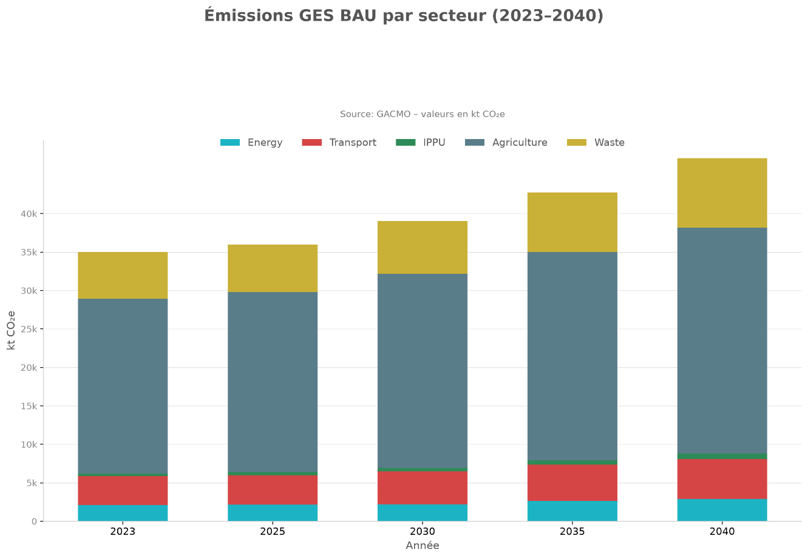
Par rapport aux projections des PCCDV, le scénario de référence (BAU) indique une augmentation continue des émissions de CH₄, passant de 914 Gg en 2025 à 1 252 Gg en 2030 puis à 1 628 Gg en 2035. Les émissions de HFC suivent également une dynamique graduelle, passant de 306 Gg en 2025 à 397 Gg en 2030, puis à 432 Gg en 2035. A l'inverse, les émissions de carbone noir demeurent relativement stables, passant de 16 Gg en 2025 à 18 Gg en 2035. Il convient de préciser que ces valeurs reflètent principalement les feux agricoles et forestiers ainsi que les usages énergétiques domestiques captés par les instruments de mesure des aérosols ; la combustion domestique de bois de chauffe et de charbon de bois n'étant pas intégralement comptée par le modèle de projection actuel, les émissions réelles de carbone noir sont vraisemblablement plus élevées que les valeurs présentées.
|
SCLP |
2019 |
2020 |
2021 |
2022 |
2023 |
2024 |
2025 |
2030 |
2035 |
|
CH4 |
753 |
747 |
773 |
842 |
863 |
899 |
914 |
1 252 |
1 628 |
|
BC |
16 |
15 |
15 |
16 |
15 |
16 |
16 |
17 |
18 |
|
HFC |
199 |
212 |
229 |
246 |
262 |
287 |
306 |
397 |
432 |
Source: Analyse SIG, Landev 2026
|
Secteur |
2023 |
2025 |
2030 |
2035 |
|
Énergie (hors transport) |
2 130 |
2 026 |
1 255 |
1 732 |
|
Transport |
3 704 |
3 849 |
4 324 |
3 245 |
|
Procédés industriels (PIUP) |
368 |
390 |
405 |
210 |
|
Agriculture |
23 707 |
23 358 |
25 083 |
26 847 |
|
AFAT |
-143 789 |
-137 863 |
-119 340 |
-100 133 |
|
Déchets |
6 100 |
6 223 |
960 |
-3 727 |
|
Total avec AFAT |
-108 779 |
-102 016 |
-87 394 |
-71 827 |
|
Total sans AFAT |
35 918 |
35 846 |
31 946 |
28 306 |
Source : Analyse GACMO, 2026
Total GHG emissions in BAU and in Mitigation Scenario (excluding LULUCF)
50 000 45 000 40 000 ktCO2e/year 35 000 30 000 25 000 20 000 15 000 10 000 5 000 0 2023 2025 2030 2035
Total GHG emissions in BAU (excluding LULUCF) Total GHG emissions in Mitigation Scenario (excluding LULUCF)
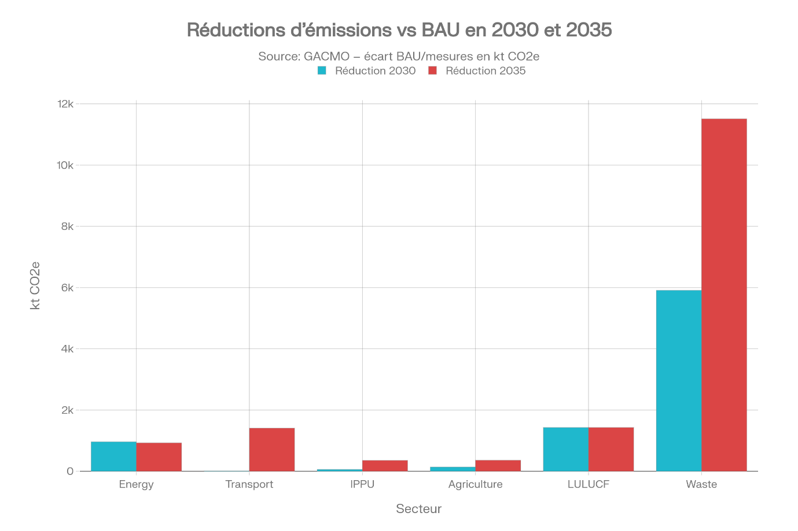
|
Année BAU (kt CO₂eq) Mesures (kt CO₂eq) Réduction (kt CO₂eq) |
|||
|
2030 |
39 023 |
31 946 |
7 077 |
|
2035 |
42 900 |
28 306 |
14 600 |
Souce : Analyse GACMO, 2026
|
Année |
BAU (kt CO₂eq) |
Mesures (kt CO₂eq) |
Séquestration additionnelle (kt CO₂eq) |
|
2030 |
-117 380 |
-119 287 |
1 907 |
|
2035 |
-98 227 |
-100 133 |
1 907 |
Souce : Analyse GACMO, 2026
Les émissions historiques et projections/prévisionnelles des PCCDV du scénario avec mesures d’atténuation en Gg:
Avec la mise en œuvre des mesures d'atténuation, les émissions de CH₄ atteindront 1 015 Gg en 2030, soit 237 Gg de moins que le BAU, et 1 140 Gg en 2035, soit 488 Gg de moins que le BAU. Pour les HFC, les émissions atteindront 327 Gg en 2030, soit 70 Gg de moins que le BAU, et 363 Gg en 2035, soit 69 Gg de moins que le BAU. Pour le carbone noir, les émissions demeurent quasi stables avec ou sans mesures d'atténuation, principalement parce que les feux agricoles et de forêt restent la source dominante et difficile à réduire à court terme.
|
SCLP |
2019 |
2020 |
2021 |
2022 |
2023 |
2024 |
2025 |
2030 |
2035 |
|
CH4 |
753 |
747 |
773 |
842 |
863 |
899 |
914 |
1015 |
1140 |
|
BC |
16 |
15 |
15 |
16 |
15 |
16 |
16 |
14 |
17 |
|
HFC |
199 |
212 |
229 |
246 |
262 |
287 |
306 |
327 |
363 |
(i) Énergie
Le secteur de l’énergie repose sur un mix de grandes centrales renouvelables, de solutions décentralisées et d’efficacité énergétique domestique. Les mesures retenues sont conformes à la Politique de Développement du Secteur Énergie (PDMC).
|
Mesure GACMO |
Mesure en Français |
Unité |
Quantité 2030 Quantité 2035 |
Quantité 2030 Quantité 2035 |
|
Hydro power connected to main grid |
Grande hydro connectée au réseau |
1 MW |
128 |
254 |
|
Mini hydro power connected to main grid |
Mini-hydro connectée au réseau |
1 MW |
5 |
5 |
|
Mini hydro power off grid |
Mini-hydro hors réseau |
1 MW |
1 |
1 |
|
Solar PVs, large grid |
PV solaires grande échelle |
1 MW |
82 |
82 |
|
Solar PVs, large grid with 24h storage |
PV solaires avec stockage 24h |
1 MW |
25 |
85 |
|
Wind turbines, on-shore |
Éolien terrestre 1 MW |
1 |
4 |
|
|
Wind turbines, on-shore with storage |
Éolien terrestre avec stockage |
1 MW |
1 |
4 |
|
Biomass power (residues, bagasse, rice husk) |
Biomasse (résidus, bagasse, balle de riz) |
1 MW |
0 |
6 |
|
Efficient charcoal stoves |
Foyers améliorés au charbon |
1000 foyers |
712 |
1 400 |
|
Induction based cooking |
Cuisson à induction |
1000 foyers |
2 |
3 |
|
Biogas from industrial waste water |
Biogaz industriel (eaux usées) |
1 installation |
1 |
3 |
Réduction totale du secteur Énergie (hors transport) : 962 kt CO₂eq en 2030 et 923 kt CO₂eq en 2035.
Explication détaillée :
La réduction est calculée par écart entre le scénario BAU (2 217 kt en 2030 ; 2 655 kt en 2035) et le scénario avec mesures (1 255 kt en 2030 ; 1 732 kt en 2035). Le déploiement massif de l’hydroélectricité (254 MW) et du solaire (167 MW cumulés) constitue le principal levier, complété par la diffusion de 1,4 million de foyers améliorés. Ces options permettent de réduire les émissions de près de 35 % par rapport au BAU en 2035, tout en renforçant la sécurité énergétique et en réduisant la pression sur les ressources ligneuses.
Sources : Analyse GACMO 2026, données IGES 2023.
(ii) Transport
Les mesures du secteur du transport s’appuient sur une électrification progressive des flottes urbaines et de fret, le développement des mobilités douces et actives, ainsi que l’amélioration du parc conventionnel. Les données de calage proviennent des statistiques nationales (INSTAT, ATT, DGSR, CIM).
|
Mesure GACMO Mesure en |
Français |
Unité |
Quantité 2030 Quantité 2035 |
Quantité 2030 Quantité 2035 |
|
Electric 18m buses |
Électrification flottes urbaines (18m) |
1000 bus |
1 |
2 |
|
Electric 12m buses |
Électrification flottes urbaines (12m) |
1000 bus |
1 |
2 |
|
Electric heavy trucks |
Transport de marchandises lourdes |
1000 camions |
1 |
2 |
|
Electric light trucks |
Transport de marchandises légères |
1000 camions |
1 |
2 |
|
Electric cars |
Mobilité individuelle électrique |
1000 voitures |
1 |
10 |
|
Electric rail |
Traction électrique ferroviaire |
1 million train-km/an |
1 |
2 |
|
Bus Rapid Transit (BRT) |
Transport rapide par bus |
1 km de ligne BRT |
1 |
2 |
|
Electric three-wheelers |
Mobilité douce (tuk-tuks) |
1000 trois-roues |
1 |
20 |
|
Electric two-wheelers |
Mobilité douce (deux-roues) |
1000 deux-roues |
1 |
20 |
|
New bicycle lanes |
Aménagements cyclables |
1 km de piste cyclable |
1 |
100 |
|
Better maintenance bikes |
Entretien des motocyclettes |
1000 motos |
1 |
10 |
|
More efficient gasoline cars |
Véhicules essence efficaces |
1000 voitures |
1 |
6 |
|
More efficient diesel cars |
Véhicules diesel efficaces |
1000 voitures |
1 |
7 |
Réduction totale du secteur Transport : –191 kt CO₂eq en 2030 et 1 098 kt CO₂eq en 2035.
Explication détaillée :
La réduction est obtenue par différence entre le BAU (4 133 kt en 2030 ; 4 343 kt en 2035) et le scénario avec mesures (4 324 kt en 2030 ; 3 245 kt en 2035). La légère hausse en 2030 (–191 kt) traduit une phase transitoire où les investissements massifs dans les infrastructures (BRT, rail électrique, bornes de recharge) et le déploiement initial des flottes électriques n’ont pas encore pleinement compensé la croissance de la demande. Dès 2035, l’effet combiné de la montée en puissance des véhicules électriques (10 000 voitures, 6 000 bus, 20 000 deux-roues) et des reports modaux permet d’atteindre une réduction de 1 098 kt, soit 25 % sous le BAU.
Sources : Analyse GACMO 2026, données IGES 2023 ; calage INSTAT, ATT, DGSR, CIM.
.
(iii) Déchets
Le secteur des déchets opère une profonde mutation : il passe d’une source nette d’émissions à un puits de carbone en 2035 grâce à la valorisation matière et énergétique, la méthanisation et la substitution de combustibles fossiles.
|
Mesure GACMO Mesure en |
Français |
Unité |
Quantité 2030 Quantité 2035 |
Quantité 2030 Quantité 2035 |
|
Refuse Derived Fuel (RDF) from MSW |
Substitution combustible industriel |
200 t MSW/jour 10 |
1 |
|
|
Composting of Municipal Solid Waste |
Compostage industriel |
1000 t/jour |
1 |
2 |
|
Recycling of plastics |
Recyclage des plastiques |
1000 t/an |
10 |
10 |
|
Landfill gas plant with power production |
Centrale gaz de décharge |
200 t/jour |
1 |
1 |
|
Incineration plant |
Incinération avec production électrique |
200 t/jour |
0 |
1 |
|
Biogas from Municipal Solid Waste |
Méthanisation urbaine |
1000 t/an |
1 |
10 |
Réduction totale du secteur Déchets : 5 846 kt CO₂eq en 2030 et 10 880 kt CO₂eq en 2035.
Explication détaillée :
La réduction est calculée par écart entre le BAU (6 806 kt en 2030 ; 7 153 kt en 2035) et le scénario avec mesures (960 kt en 2030 ; –3 727 kt en 2035). En 2035, le secteur devient négatif (–3 727 kt), ce qui s’explique par l’effet cumulé de la capture des gaz de décharge, de la méthanisation, du compostage et de la production de RDF qui évite l’utilisation d’énergies fossiles. Ces mesures permettent de transformer une source d’émissions en un secteur contributeur à l’atténuation nette.
Sources : Analyse GACMO 2026, données IGES 2023.
(iv) Industrie (PIUP)
Le secteur industriel (procédés industriels et usage des produits) vise une décarbonation quasi complète à l’horizon 2035 par la substitution d’intrants, le passage à des combustibles moins émissifs et l’adoption de technologies sobres tout en augmentant la valeur ajoutée économique du Pays.
|
Mesure GACMO |
Mesure en Français |
Unité |
Quantité 2030 Quantité 2035 |
Quantité 2030 Quantité 2035 |
|
Clinker replacement |
Remplacement clinker (20 % cendres) |
1000 t ciment/jour |
2 |
2 |
|
Switch from coal to natural gas in industry |
Passage charbon → gaz naturel |
100 TJ combustibles/an |
1 |
6 |
|
Switch from fuel oil to natural gas in industry |
Passage fioul → gaz naturel |
100 TJ combustibles/an |
1 |
6 |
|
Waste heat recovery at cement plant |
Chaleur fatale (Ciment) |
1 cimenterie |
0 |
6 |
|
Waste heat recovery at steel plant |
Chaleur fatale (Acier) |
1 aciérie |
0 |
6 |
|
Efficient electric motors (EE industry) |
Moteurs électriques efficaces |
1 kW |
0 |
6 |
|
Energy efficiency in industry |
Efficacité énergétique industrielle |
10 % de réduction conso |
0 |
6 |
|
Building materials Briques |
bas-carbone |
1 million de briques |
0 |
6 |
Réduction totale du secteur Industrie : 59 kt CO₂eq en 2030 et 354 kt CO₂eq en 2035.
Explication détaillée :
La réduction provient de l’écart entre le BAU (464 kt en 2030 ; 564 kt en 2035) et le scénario avec mesures (405 kt en 2030 ; 210 kt en 2035). Le remplacement du clinker, la substitution énergétique (charbon/fioul vers gaz) et la valorisation des chaleurs fatales constituent les principaux leviers. Les quantités nulles en 2030 pour certaines mesures reflètent une pénétration progressive, avec une montée en puissance marquée après 2030 pour atteindre une réduction de plus de 60 % par rapport au BAU en 2035.
Sources : Analyse GACMO 2026, données IGES 2023.
NOTE SUR L’INDUSTRIE : Madagascar dispose d’un atout majeur pour conjuguer développement industriel et lutte contre le changement climatique : son potentiel considérable en énergies renouvelables (solaire, hydroélectricité, biomasse) et ses ressources agricoles et forestières. Lancer une industrialisation verte est une opportunité stratégique pour créer de la valeur ajoutée locale, générer des emplois décents, réduire la dépendance aux importations et renforcer la souveraineté économique, tout en maintenant le statut de puits de carbone du pays. Plusieurs filières d’industries vertes sont particulièrement prometteuses pour Madagascar : - Agro-industrie durable : transformation locale des produits agricoles (riz, fruits, épices, huiles essentielles, manioc, canne à sucre) avec des procédés sobres en énergie et utilisant la biomasse résiduelle pour produire de l’énergie (biogaz, biochar, briquettes). Cette filière permet de réduire les pertes post-récolte, d’augmenter les revenus des producteurs et de créer des emplois en milieu rural. - Industrie des matériaux de construction bas carbone : production de briques en terre cuite à basse température, de blocs de terre comprimée, de ciments à faible teneur en clinker (utilisation de cendres volcaniques ou de laitier), et de matériaux isolants à base de fibres végétales (chanvre, bambou, paille). Ces matériaux, produits localement, réduisent l’empreinte carbone du secteur du bâtiment et créent une filière industrielle nouvelle et créatrice d’emplois. - Énergies renouvelables et efficacité énergétique : fabrication et assemblage local de panneaux solaires, de chauffe-eau solaires, de foyers améliorés, de petites éoliennes, et de systèmes de biogaz. Cette industrie permet de répondre à la demande intérieure croissante tout en exportant vers la région de l’océan Indien. - Économie circulaire et valorisation des déchets : recyclage des plastiques, compostage industriel, production de combustibles solides de récupération (RDF) à partir des déchets municipaux, et méthanisation des déchets organiques. Ces filières réduisent la pollution, créent des emplois dans la collecte, le tri et la transformation, et diminuent les émissions de méthane des décharges. - Industrie pharmaceutique et cosmétique à base de plantes endémiques : valorisation durable de la biodiversité unique de Madagascar pour la production d’extraits, d’huiles essentielles et de principes actifs à haute valeur ajoutée, avec des cahiers des charges garantissant la préservation des ressources et le partage équitable des bénéfices avec les communautés locales. - Textile et artisanat éco-responsables : production de fibres naturelles (raphia, sisal, coton biologique) et de teintures végétales, avec des procédés économes en eau et en énergie, répondant aux exigences des marchés internationaux de la mode durable. L’industrialisation verte ne se fera pas au détriment des écosystèmes : elle s’appuiera sur une gestion durable des ressources, des normes environnementales strictes (MECIE révisé) et des incitations fiscales pour les investissements sobres en carbone. Elle constitue ainsi un levier de développement économique inclusif, générateur d’emplois pour les jeunes et les femmes, et de réduction de la pauvreté, tout en contribuant aux objectifs d’atténuation et d’adaptation de la CDN 3.0.
(v) Agriculture et élevage
|
Mesure GACMO Mesure en |
Français |
Unité |
Quantité 2030 Quantité 2035 |
Quantité 2030 Quantité 2035 |
|
Rice crop CH₄ reduction |
Riziculture bas méthane ou MIRR (SRA, SRI, SDA) |
1000 ha |
32 |
79 |
|
Agroécologie et gestion durable des terres (ex-Zero tillage) |
Agriculture de conservation, couverts végétaux, non-labour |
1000 ha |
10 |
35 |
|
Gestion améliorée des fumiers |
Pâturages améliorés, gestion du cheptel (têtes de bétail), couverture des fosses à fumier |
1 slurry store |
600 |
1 500 |
|
Biogaz agricole Méthanisation |
des effluents d’élevage pour les exploitations rurales |
1000 unités |
3 |
6 |
|
Valorisation des déchets agricoles |
Valorisation et transformation des résidus de culture (paille, fanes). Ex : En biochar, biogaz, etc. |
1000 unités |
2 |
5 |
Réduction totale du secteur Agriculture : 1 366 kt CO₂eq en 2030 et 951 kt CO₂eq en 2035.
Explication détaillée :
La réduction est obtenue par différence entre le BAU (26 449 kt en 2030 ; 27 798 kt en 2035) et le scénario avec mesures (25 083 kt en 2030 ; 26 847 kt en 2035). Le principal gisement provient de la riziculture (SRA/SRI/SDA) qui réduit les émissions de CH₄ sans sacrifier les rendements, ainsi que de la gestion des fumiers qui combine l’amélioration des pâturages (stockage de carbone dans les sols) et la réduction des émissions entériques via une meilleure conduite du cheptel. Les biogaz et biochar agricole et la valorisation des déchets agricoles contribuent également à la réduction tout en fournissant une énergie propre en milieu rural.
Sources : Analyse GACMO 2026, données IGES 2023.
(vi) Forêt (AFAT/AFAT) – mesures de séquestration
|
Mesure GACMO Mesure en |
Français |
Unité |
Quantité 2030 Quantité 2035 |
Quantité 2030 Quantité 2035 |
|
Reforestation |
Restauration des paysages terrestres et zones humides (mangroves, forêts) |
1000 ha |
300 |
300 |
|
REDD: Avoided deforestation |
Réduction de l’extraction bois et de la déforestation |
1000 ha |
25 |
25 |
|
Assisted forest regeneration |
Régénération naturelle assistée |
1000 ha |
300 |
300 |
|
Reforestation with agroforestry |
Agroforesterie (cacao, café, fruits) |
1000 ha |
70 |
70 |
|
Reforestation with Silvopasture |
Pâturages boisés (sylvopastoralis me) |
1000 ha |
25 |
25 |
Séquestration additionnelle totale du secteur Forêt : 1 907 kt CO₂eq en 2030 et 1 907 kt CO₂eq en 2035.
Explication détaillée :
La séquestration additionnelle correspond à l’écart entre le puits BAU (–117 380 kt en 2030 ; –98 227 kt en 2035) et le puits avec mesures (–119 287 kt en 2030 ; –100 133kt en 2035). L’augmentation de la superficie restaurée à 300 000 ha tous les 5 ans permet de renforcer significativement les puits de carbone, tandis que les ajustements sur la déforestation évitée (25 000 ha tous les 5 ans) et le sylvopastoralisme (25 000 ha tous les 5 ans) reflètent une cible plus réaliste et mieux adaptée aux capacités locales. Ces 1 907 quinquennaux s’ajoutent aux réductions sectorielles pour porter l’amélioration totale du bilan à près de 15,8 Mt CO₂eq en 2035.
Sources : Analyse GACMO 2026, données IGES 2023.
(i) Les actions administratives
|
Secteur |
Type de mesure |
Mesure |
Cible à l’horizon 2035 |
|
Agriculture |
Cadres techniques |
Cadres techniques et juridiques sectoriels |
2 cadres |
|
Industrie |
Cadres et suivi |
Textes juridiques bas-carbone, outils de suivi PIUP |
2 textes / 1 système |
|
Déchets |
Politiques |
Code municipal d’hygiène, schémas directeurs |
100 communes / 22 schémas |
|
Déchets |
Formalisation |
Collecte informelle formalisée (coopératives) |
200 coopératives |
|
Déchets |
Social |
Tri à la source, centres ressources (Repair cafés) |
200 000 ménages |
La gouvernance de l'atténuation nécessite une interaction technique forte avec les secteurs émetteurs (Énergie, Transport, Agriculture, AFAT, Déchets, Industrie).
Coordination Technique : Le BNCC-REDD+ assure la fonction de secrétariat technique du MRV. Il centralise les inventaires de GES sectoriels.
Responsabilisation Sectorielle : Pour être pratique, le dispositif s'appuie sur des Unités de Gestion de Données (UGD) au sein des ministères clés (Énergie, Agriculture, Transports).
Cadre Légal : Utilisation du Décret n°2024-1808 (CIME) pour rendre obligatoire la transmission annuelle des données d'activité par les opérateurs privés et publics au MEDD.
Point de blocage à lever : Le passage d'une collecte de données "ad hoc" (pour les rapports ponctuels) à un flux continu et institutionnalisé.
Pour que le MRV des CDN soit opérationnel, il doit s'articuler autour de trois composantes interconnectées :
|
Composante |
Fonction Pratique |
Outil de Référence |
|
M - Mesure |
Calcul des émissions par secteur et suivi des indicateurs de progrès (ex: MW d'énergies renouvelables installés). |
Outils GACMO, PROSPECTS+ pour les mesures et tracking. |
|
R - Rapportage |
Compilation des données pour les inventaires nationaux de GES et les rapports biennaux. |
BTR1 (2026) : Établit la trajectoire de référence (Baseline) et les progrès réalisés. |
|
V - Vérification |
Contrôle qualité interne (QA/QC) par une cellule d'experts nationaux et revue externe par le secrétariat de la CCNUCC. |
Lignes directrices du GIEC (2006) pour assurer la transparence et l'exactitude. |
Le scénario avec mesures d’atténuation permet une réduction significative des émissions brutes hors AFAT par rapport au scénario de référence (BAU). En 2030, les émissions hors AFAT passent de 39 023 kt CO₂eq (BAU) à 31 946 kt CO₂eq (avec mesures), soit une réduction de 7 077 kt CO₂eq. En 2035, elles passent de 42 900 kt CO₂eq (BAU) à 28 306 kt CO₂eq (avec mesures), soit une réduction de 14 594 kt CO₂eq.
Parallèlement, le secteur forestier (AFAT) renforce son rôle de puits de carbone. La séquestration additionnelle, calculée comme l’écart entre le puits BAU et le puits avec mesures, s’élève à 1 907 kt CO₂eq en 2030 et à 1 907 kt CO₂eq en 2035. Ces gains viennent s’ajouter aux réductions d’émissions réalisées dans les autres secteurs.
Le bilan net des émissions, qui intègre l’ensemble du secteur AFAT (forêts et autres usages des terres), s’établit comme suit :
|
Année |
Bilan net BAU (kt CO₂eq) |
Bilan net avec mesures (kt CO₂eq) |
Amélioration totale (kt CO₂eq) |
|
2030 |
−78 357 |
−87 341 |
8 983 |
|
2035 |
−55 322 |
−72 561 |
17 239 |
Cette amélioration totale est la somme des réductions d’émissions hors AFAT (7 077 kt en 2030 et 14 594 kt en 2035) et de la séquestration additionnelle forestière (1 907 kt à chaque horizon). Le bilan net reste ainsi négatif sur l’ensemble de la période 2025-2035, confirmant le maintien du statut de puits de carbone net de Madagascar.
La mise en œuvre de ces mesures d’atténuation requiert un financement conditionnel de 4 883,7 millions USD (soit environ 4,88 milliards USD), dont la répartition par période est la suivante :
1 561,6 millions USD pour la période 2030-2035 ;
3 459,9 millions USD pour la période 2035-2040.
À ces montants s’ajoute une contribution inconditionnelle de 150 millions USD, comprenant.
Enfin, l’analyse des coûts marginaux d’atténuation (MACC) confirme la rentabilité économique de la majorité des mesures proposées. Cette rentabilité, combinée à la robustesse des trajectoires de réduction et de séquestration, justifie pleinement l’intégration de ces mesures dans le portefeuille prioritaire de la CDN 3.0.
Les secteurs prioritaires d’adaptation de la présente sont définis à partir des risques climatiques dominants, des consultations sectorielles, des priorités nationales et des besoins de résilience identifiés dans le rapport d’adaptation. Ils couvrent les systèmes sociaux essentiels, les secteurs productifs, les infrastructures physiques, les écosystèmes et les mécanismes financiers de gestion des risques. Les dynamiques de mobilité humaine liées aux effets du changement climatique, notamment les déplacements, migrations internes et pressions sur les zones d’accueil, constituent également une dimension transversale de la résilience et de l’adaptation nécessitant une prise en compte intersectorielle. Les secteurs retenus sont les suivants : Secteur 1 - Santé, eau, assainissement et hygiène (intégré). Ce secteur traite de manière intégrée la résilience du système de santé aux aléas climatiques, l'accès à l'eau potable, l'assainissement et la prévention des maladies climato-sensibles. L'intégration reflète l'interdépendance fonctionnelle entre santé publique, qualité de l'eau et conditions d'hygiène dans le contexte malgache. Secteur 2 - Eau et gestion intégrée des ressources en eau (GIRE). Ce secteur porte sur la gouvernance des bassins versants stratégiques, la sécurisation des infrastructures hydrauliques, la régulation des usages concurrents en période de stress hydrique et le renforcement du réseau hydrométéorologique national. Secteur 3 - Risques, catastrophes, financement et assurance. Ce secteur couvre les instruments de préparation financière aux chocs climatiques : fonds de contingence, couverture souveraine multi-aléas, assurance climatique inclusive, registre national des pertes et dommages, et protocoles de déclenchement rapide. Il ne couvre pas les investissements sectoriels de reconstruction, traités dans les secteurs concernés. Le registre national des pertes et dommages a vocation à documenter les pertes tant économiques que non économiques, y compris celles associées aux déplacements de population. Secteur 4 - Agriculture, nutrition et sécurité alimentaire. Ce secteur couvre la résilience des systèmes de production agricole, pastoraux, halieutiques et aquacoles, la diffusion de pratiques d'agriculture intelligente face au climat (AIC), le renforcement des chaînes de valeur agricoles et la sécurité alimentaire des ménages vulnérables. Secteur 5 - Éducation. Ce secteur porte sur la résilience physique des infrastructures scolaires, la continuité pédagogique en situation de crise climatique, l'intégration de l'éducation climatique dans les curricula et la protection des élèves vulnérables. Secteur 6 - Protection sociale et protection de l'enfance. Ce secteur couvre les filets sociaux adaptatifs déclenchés sur seuils climatiques, la protection des ménages les plus exposés aux chocs et la résilience des systèmes communautaires de subsistance y compris les ménages déplacés, les populations migrantes affectées par les aléas climatiques ainsi que les communautés d’accueil confrontées à une pression accrue sur les ressources et les services sociaux de base. Secteur 7 - Infrastructures et aménagement du territoire. Ce secteur traite de la résilience des routes, ponts, bâtiments publics, réseaux énergétiques et systèmes de drainage urbain, ainsi que des normes de construction climato-résilientes dans la commande publique et la planification territoriale. Secteur 8 - Forêts, biodiversité et aires protégées. Ce secteur porte sur les approches d'adaptation fondées sur les écosystèmes (EbA) : restauration forestière, protection des mangroves et des écosystèmes marins, agroforesterie, gouvernance communautaire des ressources naturelles et suivi de la biodiversité. Secteur 9 - Zones côtières, maritimes et milieux portuaires. Ce secteur couvre la protection du littoral face à l'élévation du niveau marin et à l'érosion côtière, la planification spatiale intégrée des villes portuaires, les systèmes d'alerte maritime et la résilience des infrastructures portuaires stratégiques En somme, ces secteurs ne sont pas indépendants les uns des autres. La santé dépend directement de la résilience de l’eau, de l’assainissement, de l’alimentation et des infrastructures. L’agriculture dépend de la gestion de l’eau, de la restauration des sols, des services climatiques et des pistes rurales. L’éducation dépend de la résilience des bâtiments scolaires, de la protection sociale, du WASH scolaire et de la continuité pédagogique en situation de crise. Les zones côtières dépendent à la fois de la planification territoriale, de la biodiversité, de la pêche, des infrastructures portuaires, de la protection sociale et des systèmes d’alerte. La CDN 3.0 adopte donc une logique sectorielle, mais avec une mise en œuvre intersectorielle. 5.1.1 Mesures sectorielles Secteur 1 – Santé, eau assainissement et hygiène La santé publique est directement affectée par les aléas climatiques à travers l’augmentation des maladies climato-sensibles, la perturbation de l’accès aux soins, les dommages aux formations sanitaires, la contamination des points d’eau et l’affaiblissement des services d’hygiène en période de crise. Les priorités portent sur l’anticipation des risques sanitaires, la continuité des services, le renforcement des infrastructures et l’amélioration des déterminants environnementaux de la santé. L’approche One Health renforce cette orientation en articulant santé humaine, santé animale et santé environnementale dans la prévention des risques climatiques, sanitaires et écosystémiques59.
|
Mesures prioritaires |
Composantes clés |
Cibles 2030 / 2035 |
Zones prioritaires / publics |
Institutions responsabl es et partenaires |
|
Système d’alerte précoce santé- climat |
Interconnexion DHIS2, données météo-hydro, protocoles chaleur, inondation, épidémies, plateforme numérique d’alerte, surveillance des maladies climato- sensibles |
1 plateforme nationale ; 6 protocoles validés ; 1 500 agents formés ; couverture d’au moins 60 % des districts prioritaires en 2030 ; consolidation nationale en 2035 |
Districts exposés aux inondations, cyclones, sécheresses et vagues de chaleur |
MSANP, DGM, BNGRC, CPGU, MEDD, OMS, Organisme s Onusiens, |
|
Infrastructures sanitaires et d’hygiène résilientes |
Réhabilitation climato- résiliente, énergie de secours, chaîne du froid, eau potable, assainissement, gestion des déchets biomédicaux, plans de continuité |
300 structures équipées en 2030 ; 700 en 2035 |
Zones urbaines, périurbaines et zones rurales exposées ; côte Est cyclonique ; Grand Sud |
MSANP, MEAH, collectivité s, Banque mondiale, Organisme s Onusiens, |
|
Accès aux soins en zones vulnérables |
Postes mobiles, cliniques modulaires, équipes communautaires , logistique de crise, appui aux zones de relocalisation |
60 nouvelles structures ou renforts ; 1 million de personnes couvertes |
Grand Sud, zones de relocalisation climatique, zones enclavées après cyclone |
MSANP, BNGRC, CPGU, collectivité s, ONG, partenaires humanitair es |
|
Stocks stratégiques et continuité des intrants essentiels |
Prépositionnem ent d’intrants pour paludisme, diarrhées, IRA, malnutrition, arboviroses, santé reproductive et premiers secours |
70 % des formations sanitaires prioritaires disposant de stocks minimaux en 2030 ; 90 % en 2035 |
Districts cycloniques, zones inondables, Grand Sud |
MSANP, centrale d’achat, OMS, Organisme s Onusiens, ONG, |
|
Codes communaux d’hygiène et d’assainisseme nt climato- résilients |
Adoption de codes communaux intégrant assainissement, eaux stagnantes, déchets, marchés, écoles, CSB, contrôle communautaire et IEC |
50 communes en 2030 ; 150 communes en 2035 ; 500 agents et relais formés |
Communes exposées aux inondations, flambées épidémiques, faible accès WASH |
MEAH, MSANP, communes, MATSF, PTF |
|
Assainissement climato- résilient |
Latrines améliorées, blocs sanitaires écoles/CSB, drainage local, gestion des boues, solutions adaptées aux zones inondables |
500 000 ménages accompagnés en 2030 ; 1,5 million en 2035 ; 5 000 blocs institutionnels en 2030 |
Communes à faible accès à l’assainissemen t ; quartiers précaires ; écoles et CSB |
MEAH, MEN, MSANP, communes, PTF |
|
Qualité de l’eau et prévention des maladies hydriques |
Chloration, contrôle qualité, kits de test, alerte contamination, surveillance post-cyclone et post-inondation |
15 000 points d’eau suivis en 2030 ; 30 000 en 2035 ; 2 000 agents formés |
Zones à flambées diarrhéiques, zones inondables, sites d’évacuation |
MEAH, MSANP, communes, OMS, PTF |
|
Gouvernance et maintenance WASH communautaire |
Comités WASH, maintenance des points d’eau, suivi des pannes, implication des femmes et des jeunes |
8 000 comités WASH fonctionnels en 2030 ; 20 000 en 2035 ; au moins 50 % de femmes dans les comités |
Communes rurales vulnérables ; quartiers périurbains précaires |
MEAH, communes, OSC, partenaires WASH |
Ces mesures placent la santé publique au cœur de l’adaptation en reliant les alertes climatiques, la surveillance épidémiologique, les services WASH et la continuité des soins. Elles permettent de réduire la morbidité liée aux inondations, sécheresses, cyclones et vagues de chaleur, tout en renforçant les capacités locales. L’intégration de l’hygiène, de l’assainissement et de la qualité de l’eau dans le secteur santé est essentielle pour éviter une réponse fragmentée aux maladies hydriques et vectorielles. Les mesures devront être suivies par des indicateurs désagrégés par sexe, âge, handicap, district et type d’aléa. Le système d'alerte précoce intégré santé-climat est la mesure centrale de ce secteur. Il permet d'anticiper les pics épidémiques avant qu'ils ne surviennent, en couplant les données de surveillance sanitaire du DHIS2 aux prévisions météorologiques de la DGM. C'est une mesure sans regret : elle renforce simultanément la qualité des soins en routine et la résilience aux chocs. La réhabilitation des formations sanitaires selon des normes paracycloniques s'attaque à une vulnérabilité documentée, une structure inondée ou dont la chaîne du froid est détruite ne peut plus fonctionner précisément au moment où elle est le plus nécessaire. Sur le volet eau, la cible de 25 000 points d'eau d'ici 2035 répond à la fois à un droit fondamental et à une condition de santé publique élémentaire, dans un pays où l'accès à l'eau potable sécurisée demeure l'exception pour une large partie de la population rurale. Les comités WASH communautaires, avec une exigence de 50 % de femmes parmi leurs membres, sont la garantie de durabilité des investissements physiques : une infrastructure sans gestionnaire local identifié se dégrade en quelques années. Secteur 2 – Eau et gestion intégrée des ressources en eau L’eau constitue un déterminant central de l’adaptation. La variabilité des précipitations, les sécheresses, les inondations, la dégradation des bassins versants, l’envasement des ouvrages et les conflits d’usage affectent simultanément l’eau potable, l’agriculture, l’énergie, la santé, l’assainissement et les écosystèmes. Les mesures retenues visent à renforcer la gouvernance par bassin, améliorer l’information hydrologique, sécuriser les infrastructures et anticiper les arbitrages en période de stress hydrique60.
|
Mesures prioritaires |
Composantes clés |
Cibles 2030 / 2035 |
Zones prioritaires / publics |
Institutions responsables et partenaires |
|
Renforcement du cadre institutionnel de la GIRE |
Comités de bassins, protocoles d’allocation, permis et quotas de prélèvement, plateforme de gestion des conflits d’usage |
5 comités de bassins stratégiques opérationnels en 2030 ; 7 en 2035 ; protocoles d’allocation validés |
Ikopa, Betsiboka, Mangoky, Tsiribihina, Mandrare ; usagers eau potable, agriculture, énergie, industrie, mines |
MEAH, ANDEA, MEDD, collectivités, agences de bassin |
|
Système national d’information sur l’eau |
Stations hydrométriques et piézométriques, SIG eau-climat, seuils sécheresse/crue , interfaçage avec la DGM |
20 stations fonctionnelles en 2030 ; 40 en 2035 ; 1 SIG eau-climat opérationnel |
Bassins versants sensibles ; zones à stress hydrique ; services hydrométéorol ogiques |
MEAH, DGM, ANDEA, BNGRC, CPGU, SOFF, OMM |
|
Plans de gestion des bassins versants sensibles |
Plans de sous- bassin, protection des têtes de sources, reboisement ripisylve, restauration hydrologique, aménagements anti-érosion |
5 plans de gestion élaborés ; restauration engagée dans les sous- bassins prioritaires |
Amont de l’Ikopa, Betsiboka, Mangoky, Onilahy, Mandrare |
MEAH, MEDD, MIASA, MINEL communes, PTF |
|
Réglementation et planification hydrique résiliente |
Poursuite de l’opérationnalis ation et /ou révision du Code de l’eau, zones de protection des captages, normes d’infrastructure s hydrauliques, plans sécheresse |
Code de l’eau mis en œuvre et/ou révisé ; normes adoptées ; plans sécheresse opérationnels |
National ; bassins en tension ; communes exposées aux sécheresses et conflits d’usage |
MEAH, MEF, MATSF, MEDD, Parlement |
|
Ouvrages de stockage et régulation hydrique |
Barrages, seuils déversants, retenues collinaires, stockage saisonnier, restitution contrôlée de l’eau |
25 ouvrages prioritaires en 2030 ; 50 en 2035 ; volumes stockés et restitués suivis annuellement |
Grand Sud, Hautes Terres, plaines rizicoles, zones de stress hydrique |
MEAH, MIASA, MINEL, MATSF, collectivités, Banque mondiale |
|
Accès à un service d’eau durable et résilient |
Forage solaires, captage protégée, branchement social privé et public, réseau simplifié, stockage communautaire, dispositif de recharge naturelle |
70% de population vulnérable en 2030 dont 50% des femmes et des filles et PSH. 80% en 2035 |
Grand Sud, zones urbaines et rurales vulnérables, zones cycloniques et inondables |
MEAH, communes, , Banque mondiale, Organismes Onusiens, ONG, OSC, secteur privé tous PTF et bailleurs |
Les mesures relatives à l’eau doivent être considérées comme un socle intersectoriel. Elles conditionnent la sécurité alimentaire, la santé, l’hygiène, l’énergie, la prévention des conflits d’usage et la résilience des écosystèmes. L’enjeu prioritaire n’est pas seulement d’augmenter l’offre en eau, mais de mieux gouverner la ressource, de protéger les bassins versants et de faire fonctionner les services en période de choc climatique. En effet, la GIRE représente l'architecture institutionnelle sans laquelle tous les investissements hydrauliques restent fragiles. Des comités de bassins dotés de protocoles d'allocation clairs permettent d'arbitrer les conflits d'usage avant qu'ils ne dégénèrent en tensions sociales, une réalité déjà perceptible dans plusieurs bassins en saison sèche. Le réseau de surveillance hydrométéorologique est une infrastructure de base indispensable. Avec seulement 3 stations automatiques opérationnelles sur les 9 nécessaires, Madagascar ne dispose pas encore des outils de connaissance suffisantes pour une gestion proactive de ses ressources en eau. La mise en œuvre et renforcement du Code de l'eau, engagée dans le cadre des réformes appuyées par la FRD du FMI, doit se traduire concrètement par des droits d'usage clarifiés et des zones de protection des captages opposables. La réhabilitation des périmètres irrigués, dont 30 à 40 % sont actuellement partiellement fonctionnels, représente l'investissement à plus fort retour en termes de sécurité alimentaire : produire plus avec l'eau disponible, sans accroître la pression sur les ressources déjà en tension. Ces cibles relatives aux stations, aux barrages, aux points d’eau et aux populations desservies devront néanmoins être consolidées par inventaires nationaux et registres communaux. Secteur 3 – Risques, catastrophes, financement et assurance La gestion des risques climatiques ne peut se limiter à la réponse post-catastrophe. Les pertes économiques récurrentes, les dommages aux infrastructures, la faible couverture assurantielle, la pression sur les finances publiques et les pertes non économiques imposent une architecture de financement préarrangé, de transfert de risque et de suivi des pertes et préjudices. Les mesures ci-dessous couvrent uniquement les fonctions financières et institutionnelles additionnelles, afin d’éviter tout double comptage avec les investissements physiques sectoriels61.
|
Mesures prioritaires |
Composantes clés |
Cibles 2030 / 2035 |
Zones prioritaires / publics |
Institutions responsables et partenaires |
|
Stratégie nationale de financement des risques climatiques |
Cadre CDRFI, clarification des mandats, mécanisme national de coordination (MEDD, MEF, BNGRC, CPGU, CSBF, assureurs, collectivités), articulation FNC, ARC, CERC, REPAIR, protection sociale, pertes et préjudices |
Stratégie adoptée, financée et opérationnelle en 2030 ; révision en 2035 |
National ; secteurs exposés |
MEF, MEDD, BNGRC, CPGU, , CSBF, collectivités, Banque mondiale, PNUD |
|
Renforcement du Fonds national de contingence |
Dotation progressive, fenêtres territoriales, procédures simplifiées, décaissement rapide |
Dotation annuelle portée à 10 milliards MGA en 2030 ; 20 milliards MGA en 2035 ; 60 communes appuyées en 2030 ; 120 en 2035 |
Communes exposées aux cyclones, sécheresses, inondations |
MEF, MID, BNGRC, CPGU, collectivités, Global Shield |
|
Couverture souveraine multi-aléas |
ARC cyclone et sécheresse, extension à d’autres périls, articulation avec ARC Replica et couvertures complémentair es |
Couverture annuelle d’au moins 20 M USD en 2030 ; 30 M USD en 2035 ; au moins 3 périls couverts |
Grand Sud, façade Est, plaines inondables, littoral |
MEF, BNGRC, CPGU, ARC, BAD, KfW |
|
Protocoles de déclenchemen t rapide |
Plans de contingence financière, procédures de décaissement, tests annuels, articulation avec instruments existants |
Protocoles standardisés pour 5 secteurs en 2030 ; couverture des secteurs critiques en 2035 |
Eau, santé, agriculture, infrastructures, protection sociale |
MEF, BNGRC, CPGU, ministères sectoriels, Banque mondiale |
|
Assurance climatique inclusive |
Produits indiciels et paramétriques (pluie, sécheresse, cyclone), micro- assurance, subvention partielle de primes, partenariats public-privé, distribution via IMF, coopératives et assureurs |
100 000 bénéficiaires assurés en 2030 ; 250 000 en 2035 ; au moins 3 produits à l’échelle |
Producteurs, éleveurs, pêcheurs artisanaux, MPME |
MEF, CSBF, MIASA, MINEL, assureurs, IMF, FIDA, BAD |
|
Registre national pertes, dommages et préjudices |
Base SIG, historique des événements, pertes et dommages directes, indirectes et non économiques, interopérabilité MRV/BTR |
Registre couvrant 70 % des événements majeurs en 2030 ; 100 % en 2035 ; rapport annuel publié |
National ; secteurs et territoires affectés |
BNGRC, CPGU, INSTAT, MEDD, MEF, Organismes |
|
Fenêtre nationale pertes et préjudices |
Préparation de dossiers, méthodologies de chiffrage, appui aux territoires sinistrés, accès aux guichets internationaux |
3 dossiers majeurs soumis en 2030 ; 6 en 2035 ; mécanisme d’instruction opérationnel |
Grand Sud, littoral, territoires sinistrés, communautés déplacées |
MEDD / BNCCREDD+ – chef de file et coordination technique ; MEF – programmation et traçabilité financière ; BNGRC et CPGU – données et priorisation opérationnelle ; MAE – diplomatie et engagements internationaux ; entités d’accès et partenaires financiers |
|
Culture du risque et inclusion financière |
Sensibilisation, formation collectivités, IMF, coopératives, groupements féminins et MPME |
500 acteurs formés et 200 000 personnes sensibilisées en 2030 ; 1 000 acteurs et 500 000 personnes en 2035 |
Communes, coopératives, groupes vulnérables, MPME |
Ministère en charge des finances, BNGRC, CPGU, CSBF, OSC, PNUD |
Ces mesures suivent une logique propre : il ne s’agit pas de financer ni des services ni des infrastructures il s’agit de financer la capacité à répondre financièrement aux chocs avant qu'ils ne surviennent. La logique de financement en couches, c’est à dire budget national pour les événements fréquents, lignes contingentes pour les chocs intermédiaires, assurance souveraine pour les épisodes sévères, fenêtre pertes et préjudices pour les irréversibles, est une architecture de résilience financière que Madagascar doit mettre en place avec méthode. L'assurance climatique inclusive reste le chaînon manquant le plus critique : les agriculteurs, éleveurs et pêcheurs font face aux chocs climatiques sans aucun filet d'assurance formel. Des produits indiciels accessibles, subventionnés partiellement, permettront de protéger les ménages les plus exposés sans faire peser l'intégralité du risque sur les finances publiques. Le registre des pertes et dommages, qui est une obligation morale et politique au regard de la vulnérabilité de Madagascar, est la base de tout plaidoyer crédible auprès des mécanismes internationaux de financement des pertes et préjudices. Secteur 4 – Agriculture, nutrition et sécurité alimentaire
L’agriculture, l’élevage, la pêche et les systèmes alimentaires sont parmi les secteurs les plus sensibles à la variabilité climatique. Les retards de pluie, les poches de sécheresse en pleine saison humide, les cyclones, les inondations, les vents violents, l’érosion, la lavakisation, l’ensablement des bas-fonds et les pertes post-récolte affectent directement les revenus ruraux et la sécurité alimentaire. L’approche retenue couvre l’ensemble du système alimentaire, depuis l’eau productive et les sols jusqu’aux marchés, au stockage, à la nutrition, à la transformation locale et à la protection financière des producteurs62.
|
Mesures prioritaires |
Composantes clés |
Cibles 2030 / 2035 |
Zones prioritaires / publics |
Institutions responsables et partenaires |
|
Irrigation résiliente et maîtrise de l’eau agricole |
Réhabilitation des périmètres, nouveaux aménagements, irrigation maîtrisée, goutte-à-goutte pour maraîchage et arboriculture |
20 000 ha réhabilités ; 15 000 ha nouveaux ; extension progressive jusqu’en 2035 |
24 régions |
MIASA, MEAH, AFD, FIDA Collectivité, BM BAD, UE, JICA |
|
Récupération et stockage d’eau de pluie |
Citernes, bassins de collecte, retenues collinaires, irrigation d’appoint, gestion communautaire REEPs |
5 000 dispositifs en 2030 ; 12 000 en 2035 |
Grand Sud, Sud-Ouest, zones maraîchères, zones à stress hydrique |
MIASA, MINEL, MEAH, communes, ONG, FIDA |
|
Gestion durable des sols et systèmes de production adaptés |
Agroécologie, agroforesterie, rotations, terrasses, banquettes, haies vives, paillage, réduction du tavy, lutte contre la lavakisation Gestion de pâturage, Restauration des paysages dégradés Agriculture de conservation AIC/ASN |
250 000 ha sous pratiques durables en 2030 ; 500 000 ha en 2035 |
Hautes Terres, bassins versants dégradés, zones de tavy et lavakisation |
MIASA, MINEL, MEDD, FOFIFA, communes, Organismes Onusiens, ONG, |
|
Agriculture de conservation et restauration de la santé des sols |
Couverture végétale, mulching, minimum travail du sol, biopesticides, fertilisation organique, défense et restauration des sols |
150 000 ha en 2030 ; 350 000 ha en 2035 |
Zones pluviales vulnérables ; bassins rizicoles ; zones de forte érosion |
MIASA, MINEL, FOFIFA, FAO, ONG agricoles |
|
Semences, variétés adaptées et banques de semences |
Recherche appliquée, multiplication semencière, variétés tolérantes sécheresse/submer sion, banques communautaires Banque de semence par zone agro-écologique |
300 000 ha utilisant des variétés adaptées en 2030 ; 700 000 ha en 2035 ; 500 banques de semences en 2030 ; 1 200 en 2035 |
Nationale |
MIASA, MINEL, FOFIFA,FIDA, organisations paysannes, Organismes Onusiens, ONG, |
|
Services climatologique s agricoles |
Prévisions saisonnières, conseils de semis, bulletins agro- météo, SMS/radio, relais paysans, plateformes locales Intégration des populations déplacées et des migrants dans les initiatives agricoles, de reboisement et de restauration des écosystèmes |
500 000 producteurs couverts en 2030 ; 1 million en 2035 ; 1 500 relais formés |
24 régions |
DGM, MIASA, MINEL, FAO, GCF, radios rurales, PTF |
|
Réduction des pertes post- récolte et transformation locale |
Magasin de stockage grenier communautaire villageois, Unité de transformation locale, Chaine de froid, séchoirs solaires, décortiqueuses, conservation, banques alimentaires, valorisation des surplus |
500 magasins/aires de stockage ; 1 000 unités de transformation ; pertes réduites de 30 % en 2030 |
Bassins rizicoles, céréaliers, maraîchers et fruitiers ; zones enclavées |
MIASA, MINEL, MIC, ONN, coopératives, Organismes Onusiens, ONG, |
|
Routes, pistes et voies de desserte |
Réhabilitation de pistes rurales, accès aux marchés, ouvrages de franchissement, désenclavement des bassins de production |
1 500 km en 2030 ; 3 000 km en 2035 |
Zones productrices enclavées ; bassins agricoles et agro- industriels |
MTP, MIASA, MINEL, collectivités, Banque mondiale, BAD |
|
Agriculture sensible à la nutrition et résilience alimentaire |
Jardins nutritionnels, cultures biofortifiées, diversification alimentaire, stocks vivriers, filets sociaux adaptatifs Cantine scolaire Jardin de case, permaculture |
150 000 ménages couverts en 2030 ; 350 000 en 2035 ; 300 communes dotées de dispositifs alimentaires en 2030 ; 600 en 2035 |
Grand Sud, zones IPC élevées, ménages vulnérables, femmes et enfants |
MIASA, MINEL, MPS MPEB, ONN, Organismes Onusiens, ONG, |
|
Élevage résilient |
Points d’eau pastoraux, pâturages aménagés, cultures fourragères, stockage d’aliments, santé animale, vaccination, alertes sécheresse Point d’eau à usage mixte Amélioration génétique Opérationnalisatio n de l’approche one health Marché à bestiaux, Abattoir |
150 points d’eau pastoraux en 2030 ; 300 en 2035 ; 100 zones de pâturage aménagées ; 150 points d’eau à usage mixte opérationnel 1 Couloir de vaccination par commune Banque de semence opérationnalisa tion Plate forme One health régional ; 50 000 ménages accompagnés |
Androy, Anosy, Atsimo- Andrefana, Menabe ; zones pastorales |
MIASA, MINEL, services vétérinaires, FAO, FIDA |
|
Pêche durable et aquaculture résiliente |
Gestion écosystémique des pêcheries, repos biologique, surveillance communautaire, aquaculture durable, biosécurité |
50 sites de pêche durable en 2030 ; 100 en 2035 ; 10 000 producteurs aquacoles accompagnés ; 200 sites pilotes |
Communauté s côtières, mangroves, récifs, herbiers, étangs continentaux |
Ministère pêche/aquacu lture, MEDD, Blue Ventures, FAO |
|
Finance agricole et assurance climatique |
Assurance indicielle, fonds de crédit, garanties, subventions ciblées, appui aux producteurs et MPME |
60 000 exploitants assurés en 2030 ; extension progressive à 200 000 en 2035 |
Petits producteurs, éleveurs, pêcheurs, coopératives, MPME |
MEF, MIASA, MINEL, assureurs, IMF, FIDA, BAD |
|
Professionnalis ation, R&D et innovation |
Structuration des organisations paysannes, centres techniques, incubateurs, tests variétaux, référentiels AIC, recherche appliquée sur l’adaptation y compris en aquaculture, entrepreneuriat vert Service de proximité (APPSA) et de vulgarisation |
2 000 organisations renforcées ; 600 PME/cooperati ves accompagnées ; 100 sites pilotes de R&D |
FOFIFA, universités, bassins agricoles, jeunes et femmes entrepreneur s |
MIASA, MINEL, FOFIFA, universités, EDBM, PTF |
Ce portefeuille agricole traduit une évolution importante : l’adaptation agricole n’est plus traitée uniquement comme une question de production, mais comme une transformation du système alimentaire. L’intégration des sols, de l’eau, des semences, de la nutrition, du stockage, des pistes, de la pêche, de l’aquaculture et de l’assurance permet de réduire les pertes, d’augmenter la résilience des revenus et de soutenir l’autosuffisance alimentaire. Pour ce faire, trois entrées sont décisives. L'irrigation d'abord : passer d'une agriculture dépendante à 80 % de la pluie à des systèmes qui maîtrisent l'eau est la rupture structurelle la plus importante. Les périmètres réhabilités et les nouveaux aménagements représentent la colonne vertébrale du programme. Les services climatiques ensuite : diffuser les prévisions saisonnières et les conseils de semis auprès d'1 million de producteurs d'ici 2035, via SMS, radio et relais paysans, est une mesure à très faible coût par bénéficiaire et à très fort impact sur la réduction de la vulnérabilité. La réduction des pertes post-récolte enfin : les pertes sont estimées à 20-30 % au niveau national pour le riz, une perte considérable dans un pays structurellement exposé à l'insécurité alimentaire. Construire des magasins communautaires, diffuser le séchage solaire et désenclaver les zones productrices par 3 000 km de pistes rurales permettront de sécuriser ce qui a déjà été produit. L'objectif de rendement rizicole, qui est de passer de 2,7 à 3,8 t/ha d'ici 2035, est ambitieux mais réaliste à condition que les investissements en irrigation, en semences améliorées et en services climatiques soient effectivement déployés de manière coordonnée. Les mesures doivent toutefois être hiérarchisées par bassin de production et articulées avec la planification territoriale, afin d’éviter la dispersion des investissements. Secteur 5 – Éducation L’éducation est un secteur d’adaptation à part entière. Les cyclones, inondations, sécheresses et vagues de chaleur endommagent les écoles, interrompent les apprentissages, aggravent le décrochage scolaire et accroissent les inégalités, en particulier pour les filles, les enfants en situation de handicap, les enfants déplacés et les élèves vivant en zones rurales ou enclavées. Les mesures visent à protéger les infrastructures, garantir la continuité éducative et intégrer les compétences climatiques dans les parcours d’apprentissage63. Lors de la série cyclonique de 2022, 3 478 écoles ont été durement touchées, et 1 740 en 2023.
|
Mesures prioritaires |
Composantes clés |
Cibles 2030 / 2035 |
Zones prioritaires / publics |
Institutions responsables et partenaires |
|
Écoles climato- résilientes et inclusives |
Diagnostics multi-aléas, plateformes rehaussées, drainage, toitures renforcées, ventilation naturelle, WASH scolaire, accessibilité universelle |
500 écoles réhabilitées/cons truites en 2030 ; 1 500 en 2035 - cumulé |
Littoral Est, plaines inondables, Grand Sud, zones urbaines basses |
MEN, METFP, MESUPRES, MTP, communes, , Banque Mondiale, GPE, Organismes Onusiens, ONG, |
|
Plans de continuité scolaire (éducative) |
Protocoles école sûre, classes temporaires, écoles hôtes, kits scolaires, calendrier de rattrapage, retour en classe post-sinistre |
PCS opérationnels dans 100 % des CISCO ; au moins un site de repli par commune à risque |
Régions à aléas récurrents ; établissemen ts à haut risque |
MEN, BNGRC, CPGU, DREN/CISCO, , METFP, MESUPRES, Organismes Onusiens, ONG, |
|
Radio- éducation et solutions numériques de crise |
Contenus radio/offline, kits solaires, terminaux partagés, suivi de la continuité dans le SIGE |
Radio-éducation structurée dans 10 régions en 2030 ; 25 % des collèges à risque équipés en 2030 ; 40 % en 2035 |
Rural enclavé, zones cycloniques, zones inondables |
MEN, Ministère en charge du développeme nt numérique, Organismes Onusiens, ONG, |
|
Curricula climat, environnemen t, ACC, RRC, métiers verts et bleus |
Révision des curricula, supports pédagogiques, modules environnement- eau-hygiène et santé sexuelle et reproductive, clubs verts et brigades hygiène |
100 % des curricula concernés intégrant les contenus climat/environne ment en 2030 ; actualisation continue jusqu’en 2035 |
Enseignemen t général, technique et supérieur |
MEN, METFP, MESUPRES, INFP, MEDD, |
|
Formation des enseignants et formateurs |
Formation initiale et continue, GRC scolaire, premiers secours, exercices d’évacuation, certification climat- environnement |
80 % des enseignants/form ateurs formés en 2030 ; 100 % en 2035 |
Écoles à risque, ENI/CRINFP, établissemen ts techniques et supérieurs |
MEN, INFP, CRINFP, BNGRC, CPGU, |
|
Protection sociale éducative sensible au climat |
Cantines, kits dignité, bourses post-chocs, transferts aux ménages vulnérables, retour en classe des filles |
60 000 filles soutenues/an en 2030 ; 100 000 en 2035 ; 1,5 million de bénéficiaires éducatifs en 2030 ; 3 millions en 2035 |
Ménages pauvres, enfants déplacés, filles, enfants en situation de handicap |
MEN, MPS, Organismes Onusiens, ONG, OSC, secteur privé, , FID |
|
Soutien psychosocial post- catastrophe |
Premiers secours psychosociaux, espaces sûrs temporaires, formation des enseignants, référencement des enfants affectés |
60 % des écoles couvertes en 2030 ; 100 % en 2035 |
Zones post- cyclone, post- inondation, post- sécheresse |
MEN, MSP, , ONG spécialisées |
|
Système intégré Éducation- Climat |
Interopérabilité SIGE-climat, jours de classe perdus, exposition des écoles, tableaux de bord, rapports annuels |
Système national opérationnel en 2030 ; pilotage en temps réel en 2035 |
National ; DREN/CISCO ; décideurs publics |
MEN, DGM, BNGRC, CPGU, INSTAT, MEDD |
Les mesures éducatives répondent à trois objectifs : préserver l’accès à l’école, maintenir la qualité des apprentissages et intégrer le climat dans la gouvernance éducative. Elles doivent être pensées comme un investissement de capital humain, et non seulement comme une dépense de reconstruction. La résilience scolaire réduit les pertes d’apprentissage, protège les enfants, soutient les ménages et prépare une génération capable d’agir face aux risques climatiques. Le programme repose sur deux piliers complémentaires : le premier est préventif, construire et réhabiliter des écoles qui résistent aux vents cycloniques et dont les plateformes ne s'inondent pas ; le second est opérationnel, ne jamais perdre une semaine de classe inutilement, grâce à des plans de continuité testés, à la radio-éducation dans les zones enclavées et à des protocoles d'évacuation connus de tous les acteurs scolaires. La cible de 1,5 million de bénéficiaires de protection sociale éducative en 2030 traduit une réalité concrète : les chocs climatiques appauvrissent les familles, et un enfant dont le ménage a tout perdu ne retourne pas à l'école sans un appui explicite. Secteur 6 – Protection sociale et protection de l’enfance Les chocs climatiques renforcent la pauvreté, la vulnérabilité alimentaire, les déplacements temporaires voire permanents, les interruptions scolaires, les risques de violence et la perte de revenus des ménages. Les systèmes de protection sociale doivent donc pouvoir anticiper, absorber et accompagner les chocs climatiques. Les mesures retenues visent à relier les alertes précoces, les registres sociaux, les transferts, les cantines, les dispositifs communautaires et les mécanismes de relèvement64.
|
Mesures prioritaires |
Composantes clés |
Cibles 2030 / 2035 |
Zones prioritaires / publics |
Institutions responsables et partenaires |
|
Filets sociaux adaptatifs |
Transferts anticipatifs et post-chocs, cash-for-work à co-bénéfices climatiques, cantines scolaires, appui aux ménages vulnérables |
120 000 ménages ciblés en 2030 ; extension progressive en 2035 |
Grand Sud, côte Est, zones inondables, zones IPC élevées |
MPS, FID, PAM, , BNGRC, CPGU, Organismes Onusiens, ONG, |
|
Registre social sensible au climat |
Intégration des cartes de risque, vulnérabilité des ménages, sexe, âge, handicap, statut déplacé |
Registre social interopérable avec les systèmes d’alerte en 2030 |
National ; communes vulnérables |
MPS, INSTAT, BNGRC, CPGU, MEDD |
|
Protocoles alerte- assistance |
Déclenchement automatique des transferts à partir de seuils sécheresse, cyclone, inondation ou insécurité alimentaire |
Protocoles opérationnels dans les régions prioritaires en 2030 ; extension nationale en 2035 |
Régions exposées aux chocs récurrents |
MPS, BNGRC, CPGU, DGM, MEF, partenaires |
|
Réserves alimentaires communautair es |
Stocks vivriers, banques alimentaires, appui aux ménages en période de soudure ou post- catastrophe |
300 communes dotées de dispositifs en 2030 ; 600 en 2035 |
Zones IPC élevées, Grand Sud, zones cycloniques |
MPS, MIASA, MINEL, Organismes Onusiens, ONG, OSC, secteur privé, communes |
|
Protection de l’enfance en situation de crise |
Kits d’urgence, soutien psychosocial, référencement, prévention des violences, appui aux enfants déplacés |
Dispositifs opérationnels dans les communes à haut risque en 2030 |
Enfants déplacés, filles, enfants en situation de handicap |
MPS, MEN, UNICEF, OSC |
|
Gouvernance locale de la protection adaptative |
Comités locaux, budgets GRC intégrés, plans de contingence communaux, participation des femmes |
60 communes renforcées en 2030 ; 120 en 2035 ; au moins 40 % de femmes dans les comités |
Communes exposées aux sécheresses, cyclones, inondations |
MID, MPS, BNGRC, CPGU, communes |
La protection sociale adaptative permet de réduire le passage du choc climatique à la crise humanitaire. Elle doit être reliée aux alertes, aux registres, aux mécanismes financiers et aux services sociaux de base. Elle constitue également un levier d’équité, car les femmes, les enfants, les personnes âgées, les personnes en situation de handicap et les ménages pauvres supportent une charge disproportionnée des crises climatiques. Cette protection sociale adaptive reposant sur une logique d’anticipation n’est pas encore pleinement institutionnalisée à Madagascar. Aujourd'hui, les transferts interviennent majoritairement après la catastrophe, quand les pertes sont déjà survenues. Des protocoles de déclenchement anticipatif, qui sont activés dès qu'une prévision météorologique franchit un seuil prédéfini, permettent de distribuer une assistance avant que la sécheresse ne détruise la récolte ou que le cyclone ne dévaste les habitations. L'expérience du programme MIONJO dans le Grand Sud et des dispositifs humanitaires du PAM, de l'UNICEF et de l'OIM montre que cette articulation est techniquement faisable à Madagascar. La présente CDN s'engage à l'institutionnaliser à travers un cadre national formalisé, en ciblant prioritairement les communes à multi-aléas et les ménages les plus pauvres. Secteur 7 – Infrastructures et aménagement du territoire Les infrastructures physiques structurent la résilience nationale. Les routes, ponts, réseaux urbains, ouvrages hydrauliques, bâtiments publics, infrastructures énergétiques et équipements collectifs subissent des dommages récurrents lors des cyclones, inondations, glissements de terrain et sécheresses. Les mesures visent à intégrer le risque climatique dans la planification, les normes, les investissements publics, les opérations d’entretien et l’aménagement urbain65.
|
Mesures prioritaires |
Composantes clés |
Cibles 2030 / 2035 |
Zones prioritaires / publics |
Institutions responsabl es et partenaires |
|
Normes climato- résilientes pour les infrastructures publiques |
Révision des normes, cartographie des aléas, guides techniques, contrôle qualité, accessibilité universelle |
Normes appliquées aux nouveaux investissements publics en zones exposées d’ici 2030 ; généralisation progressive en 2035 |
Bâtiments publics et logements, écoles, CSB, routes, ouvrages hydrauliques |
MTP, MATSF, MEDD, MEF, collectivité s |
|
Routes et ouvrages d’art résilients |
Réhabilitation d’axes stratégiques, drainage, ouvrages de franchissement, stabilisation de talus, entretien préventif |
Réduction des jours d’interruption des axes prioritaires ; intégration systématique du risque climatique |
Axes reliant zones productrices, services sociaux et marchés ; réseaux structurants |
MTP, collectivité s, Banque mondiale, BAD |
|
Drainage urbain et gestion des eaux pluviales |
Curage, bassins, ouvrages secondaires, libération des lits majeurs, plans de gestion des inondations alignés sur les schémas directeurs d’assainissement (SDA) |
Villes pilotes équipées de plans de drainage et ouvrages prioritaires en 2030 ; extension en 2035 |
Antananarivo, Toamasina, Mahajanga, Toliara, Antsirabe, Antsiranana, Fianarantsoa |
Ministère en charge de l’Assainiss ement , MATSF, MTP, communes, BNGRC, CPGU |
|
Stabilisation des versants et prévention des glissements |
Reboisement, drainage de pente, contrôle de l’urbanisation, relocalisation préventive et viabilisation des zones de relocalisation (VRD de base, éclairage, drainage) pour un habitat digne, suivi géotechnique |
Zones critiques cartographiées et traitées progressivement |
Hautes Terres, quartiers sur pentes, zones d’éboulement |
MATSF, MEDD, communes, BNGRC, CPGU |
|
Résilience énergétique et hydroélectriqu e |
Protection des bassins versants, réduction de l’envasement, sécurisation des réseaux isolés, énergie de secours |
Plans de résilience sur sites critiques en 2030 ; extension en 2035 |
Bassins hydroélectriqu es, zones enclavées, services sociaux |
Ministère en charge de l’énergie, JIRAMA, ministère en charge de l’environne ment, ministère en charge de l’eau |
|
Planification territoriale et maritime sensible au climat |
Intégration de la gestion des risques climatiques dans les outils de planification territoriale (SNAT, SRAT, PSM, PUDi, PUDé, SAC, SAIC, PALOSS, PRD, PDLII) |
Risques climatiques intégrés dans les outils de planification des zones prioritaires d’ici 2030 |
Communes urbaines, toutes les régions, villes littorales et zones à forte croissance |
MATSF, communes, MEDD, BNGRC, CPGU, OIM |
L’adaptation des infrastructures réduit directement les pertes économiques et sociales des catastrophes. Elle permet de maintenir l’accès aux marchés, aux soins, à l’école, à l’eau et à l’énergie. Les mesures doivent être intégrées à la gestion de l’investissement public afin que chaque nouveau projet d’infrastructure dans les zones exposées fasse l’objet d’un diagnostic climatique, d’un dimensionnement adapté et d’un plan d’entretien. La réforme des marchés publics par l’intégration des critères climatiques dans tous les DAO au-delà d'un seuil est la mesure systémique la plus importante de ce secteur : elle garantit que les investissements publics à venir résistent aux aléas futurs, et non aux conditions météorologiques du passé. Le drainage urbain de la plaine d'Antananarivo est une priorité urgente : chaque saison cyclonique inonde des quartiers entiers, contamine des nappes, détruit des biens et paralyse une capitale qui concentre une part disproportionnée de l'activité économique nationale. Secteur 8 – Forêts, biodiversité et aires protégées Madagascar abrite l'un des hotspots mondiaux de biodiversité, avec plus de 80 % d'espèces végétales et animales endémiques. La déforestation se poursuit à un rythme de 80 000 à 100 000 ha par an66. Cette dégradation fragilise la régulation hydrique nationale, accélère l'érosion des versants et alimente l'envasement des ouvrages hydrauliques en aval. Les approches d'adaptation fondées sur les écosystèmes (EbA) constituent un levier à fort rendement : elles restaurent les fonctions écosystémiques tout en générant des co-bénéfices climatiques (atténuation), écosystémiques, alimentaires et économiques pour les communautés rurales.
|
Mesures prioritaires |
Composantes clés |
Cibles 2030 / 2035 |
Zones prioritaires / publics |
Institutions responsables et partenaires |
|
Conservation et restauration des écosystèmes clés |
Restauration de paysages forestiers, têtes de sources, bassins versants, ripisylves, dunes, corridors, noyaux forestiers à haute intégrité |
500 000 ha restaurés ou sous restauration active en 2030 ; 1 000 000 ha en 2035 ; 60 AP avec plans mis à jour en 2030 ; 100 en 2035 |
Hautes Terres, Alaotra- Mangoro, Betsiboka, Mangoky, Onilahy, Mandrare |
MEDD, MPEB, MNP, gestionnaires d’AP, communes, OSC, ONG, VOI, , GEF, GCF, OIM Organismes Onusiens, secteur privé |
|
Mangroves, récifs, herbiers et protection côtière |
Régénération naturelle assistée, plantations ciblées, contrôle des pressions, carbone bleu, gestion participative |
3 000 ha restaurés en 2030 ; 6 000 ha en 2035 ; 30 sites de gestion locale en 2030 ; 60 en 2035 |
Littoral Ouest, Sud- Ouest, Nord- Ouest, Menabe, Grand Nord, deltas, estuaires, communauté s de pêche (extension ultérieure aux 14 régions côtières, y compris Est et Sud-Est) |
MEDD, MPEB, MINTOUR, collectivités littorales, gestionnaires AMP, OSC, ONG, VOI, LMMA, PNUE, GEF, OIM |
|
Agroforesterie et gestion durable des terres |
Systèmes agroforestiers, fertilité des sols, pépinières communautaires, appui technique |
50 000 exploitations appuyées en 2030 ; 120 000 en 2035 ; au moins 30 % dirigées par des femmes |
Zones agricoles à forte érosion, Sud/Sud- Ouest, Hautes Terres |
MIASA, MINEL, MEDD, MPEB, FIDA, , communes, OSC, ONG, VOI, Organismes Onusiens, |
|
Gestion du feu et des pressions d’usage |
Télédétection, relais communautaires, pare-feux, brûlages précoces encadrés, médiation, alternatives énergie |
150 comités actifs en 2030 ; 300 en 2035 ; 2 000 km de pare- feux en 2030 ; 4 000 km en 2035 |
Interfaces forêt- agriculture, Ouest, Hautes Terres, périphéries d’AP |
MEDD, MPEB, BNGRC, CPGU, communes, MNP, OSC, ONG, ,OIM, Organismes Onusiens, OSC, secteur privé |
|
Gouvernance locale et droits d’usage |
Transferts de gestion, dina, sécurisation foncière, partage de bénéfices, PFNL, écotourisme, PSE |
500 dispositifs/comit és fonctionnels en 2030 ; 1 000 en 2035 ; 300 conventions locales en 2030 ; 600 en 2035 |
Territoires riverains des AP, forêts classées, mangroves |
MEDD, MPEB, MINTOUR, Domaines/Fo ncier, communes, OSC, ONG, VOI, , UE, OIM, Organismes Onusiens, |
|
Suivi scientifique, inventaires et MRV biodiversité |
Inventaires, suivi forestier, protocoles biodiversité, herbiers marins, tortues marines, base de données, portail public, intégration des savoirs traditionnels (Tangalamena) |
100 % des AP avec protocole minimal en 2035 ; portail public opérationnel |
National ; AP terrestres, marines et côtières |
MEDD, MPEB, ONE, CNRE, CNRO, universités, IHSM, ONG, projet PAZC2, FAO, projet Aro Fano |
|
Aires protégées sous gestion efficace |
Renforcement de la surveillance, équipements, gestion communautaire, suivi écologique, moyens d’existence, mécanisme de financement durable |
Gestion renforcée de Nosy Hara, Sahamalaza, Ankarea et Ankivonjy couvrant 428 134 ha en 2030 |
Nord et Nord-Ouest ; AP avec herbiers, mangroves, tortues marines |
MEDD, MPEB, MIASA, MINEL, MNP, gestionnaires AMP, OSC, VOI, Tangalamena , partenaires de conservation, PTF, OIM |
La restauration de 500 000 ha d'écosystèmes d'ici 2030 est une cible ambitieuse mais réaliste, cohérente avec l'engagement AFR100 et avec les programmes de restauration déjà en cours à Madagascar, dont le bilan 2024-2025 du programme PLAE-PARE atteste du rythme déjà engagé67. La gouvernance locale, passant entre autres par les contrats GELOSE, les dina, les comités de gestion est la condition de durabilité : une forêt replantée sans communauté qui s'en approprie la gestion sera déboisée dans la décennie suivante. La réussite dépendra de la sécurisation foncière, de la gouvernance locale, du financement durable des aires protégées et de l’intégration des communautés riveraines, en particulier des femmes et des jeunes. Cette ambition s’inscrit dans le Cadre mondial pour la biodiversité de Kunming-Montréal, dont la cible 3 (« 30x30 ») vise la conservation effective d’au moins 30 % des zones terrestres et marines d’ici 2030.
Secteur 9 – Zones côtières, maritimes et milieux portuaires Le littoral malgache concentre des populations, des infrastructures, des activités portuaires, des ressources halieutiques, des mangroves, des récifs et des herbiers marins fortement exposés à l’élévation du niveau de la mer, à l’érosion, à la salinisation, aux cyclones, à la houle et aux vents forts. Les mesures visent à anticiper les risques, protéger les actifs critiques, restaurer les défenses naturelles et renforcer les capacités d’alerte et de planification côtière68.
|
Mesures prioritaires |
Composantes clés |
Cibles 2030 / 2035 |
Zones prioritaires / publics |
Institutions responsables et partenaires |
|
Planification côtière intégrée |
Cartographie des risques, plans d’aménagement littoral et plans d’aménagement local simplifiés et sécurisés (PALSS), zonage, restriction des implantations en zones exposées, plans d’aménagement du territoire inclusifs, réinstallation planifiée des populations piégées et des personnes menacées de déplacement |
Plans côtiers opérationnels dans les zones pilotes en 2030 ; extension en 2035 |
Toamasina, Mahajanga, Toliara, Morondava, DIANA, Nord-Ouest, Nosy Be, Antsiranana, Sainte-Marie, façade littorale Est |
MEDD, MATSF, MPEB, ministère en charge des pêches, ministère en charge du tourisme, communes et communautés locales, autorités portuaires |
|
Ouvrages et actifs portuaires résilients |
Protections ciblées du littoral, sécurisation des infrastructures portuaires et logistiques critiques |
Première phase sur actifs critiques d’ici 2030 ; extension selon études techniques |
Ports, milieux portuaires fluviaux dont le Canal des Pangalanes, routes littorales, plateformes logistiques |
MEDD, MPEB, gestionnaires AMP, PNUE, GEF, collectivités, Organismes Onusiens, |
|
Restauration des défenses naturelles côtières |
Mangroves, dunes, récifs, herbiers, solutions fondées sur la nature, contrôle de l’érosion |
Cibles alignées avec les mesures EbA ; restauration progressive des sites prioritaires |
Littoral Ouest, Nord- Ouest, Est, Nord Est, Sud (Sud, Est et Ouest) estuaires, communauté s de pêche |
MEDD, MPEB, gestionnaires AMP, PNUE, GEF, collectivités, OIM |
|
Systèmes d’alerte et plans d’urgence côtiers |
Capteurs, diffusion radio/SMS, protocoles d’évacuation, exercices communautaires, interfaçage avec SAP national |
Extension côtière ciblée du dispositif d’alerte en 2030 ; couverture renforcée en 2035 |
Communes littorales exposées aux cyclones, houles et submersions |
BNGRC, CPGU, DGM, MPEB, APMF, communes, opérateurs télécom |
|
Gestion des eaux pluviales en villes côtières |
Curage, redimensionneme nt, bassins et bassins de rétention d’eau, ouvrages secondaires, gestion des zones basses |
3 villes côtières pilotes traitées en 2030 ; extension en 2035 |
Toamasina, Mahajanga, Toliara, Morondava |
Communes, MATSF, MTP, MEAH, BNGRC, CPGU, VOI, PTF du secteur |
|
Résilience des services essentiels côtiers |
Continuité eau- santé-énergie, kits solaires, pompage, équipements de secours, rehausse ciblée |
Sites prioritaires équipés en 2030 ; extension selon vulnérabilité |
CSB, écoles, points d’eau, sites d’évacuation en zone côtière |
MSANP, MEAH, MEN, MINTOUR, communes, associations caritatives, PTF |
|
Adaptation des communautés de pêche |
Alertes météo- marines (dont MITAO Forecast), abris sécurisés, diversification des revenus et autres activités génératrices de revenus, calendriers de pêche adaptés, sécurité en mer, prise en compte explicite de la petite pêche traditionnelle |
5 000 pêcheurs formés et équipés en 2030 ; 10 000 en 2035 |
Pêche artisanale, littoral Est, Ouest et Nord-Ouest |
MPEB, BNGRC, CPGU, APMF, CFIM, ONG, Organismes Onusiens, |
Le littoral malgache cumule les vulnérabilités : densité de population élevée, infrastructures portuaires stratégiques, écosystèmes fragiles, communautés dépendantes de la pêche artisanale, et données côtières encore insuffisantes pour une planification rigoureuse. La cartographie multi-aléas est la priorité absolue : on ne protège pas efficacement un littoral sans connaître sa bathymétrie, son altimétrie et ses tendances d'érosion. La combinaison de solutions fondées sur la nature telle que la restauration des mangroves, dunes, récifs et herbiers et d'ouvrages ciblés sur les actifs les plus stratégiques constitue l'approche la plus efficiente. Les ouvrages lourds sont réservés aux sites à très forte valeur économique nationale, au premier rang desquels le port de Toamasina, dont la continuité d'exploitation est une condition de la compétitivité économique du pays tout entier. La planification côtière doit également limiter l’accroissement de l’exposition future. Une approche intégrée des réductions des risques de catastrophes au niveau du littoral, pouvent laussi imiter les dégâts sur les populations et leur "migration outcome".
Les mesures sectorielles ne pourront produire leurs effets que si elles sont soutenues par des fonctions transversales solides. Le rapport adaptation identifie quatre leviers structurants : la gouvernance et la coordination institutionnelle, le financement climatique et la budgétisation sensible au climat, le système MRV et la transparence, ainsi que la participation, l’inclusion et la communication. Ces leviers sont cohérents avec le Plan national d’adaptation, qui met déjà l’accent sur la gouvernance, la mise en œuvre sectorielle et la mobilisation des financements. La première priorité transversale est l’amélioration de la gouvernance de l’adaptation. La CDN devra consolider la coordination entre le ministère en charge de l’environnement, la BNCCREDD+, les ministères sectoriels, le BNGRC, CPGU, la Direction Générale de la Météorologie, l’INSTAT, les collectivités territoriales, les partenaires techniques et financiers, les organisations de la société civile, les acteurs économiques, les organisations de jeunes, les organisations de femmes et les communautés locales, ainsi que les mécanismes nationaux d’accompagnement et de financement du développement territorial durable.. La CDN devra consolider la coordination entre le ministère en charge de l’environnement, la BNCCREDD+, les ministères sectoriels, le BNGRC, CPGU, la Direction Générale de la Météorologie, l’INSTAT, les collectivités territoriales, les partenaires techniques et financiers, les organisations de la société civile, les acteurs économiques, les organisations de jeunes, les organisations de femmes et les communautés locales. La deuxième priorité concerne les données, les services climatiques et les systèmes d’alerte précoce. Madagascar dispose déjà de capacités nationales, notamment au sein de la DGM, du BNGRC, CPGU, de certains systèmes sectoriels et des plateformes émergentes de données climatiques et environnementales. Toutefois, les données restent fragmentées, inégalement désagrégées, parfois peu interopérables et insuffisamment utilisées dans la décision publique locale. Le renforcement des systèmes d’information, des observatoires territoriaux, des bases de données sectorielles et des plateformes numériques est donc une condition essentielle de l’adaptation. Le renforcement des systèmes nationaux de données pourrait également intégrer la collecte, l’analyse et le suivi des données relatives aux déplacements, migrations et mobilités humaines liées au changement climatique afin d’améliorer la planification territoriale, les réponses anticipatoires et les politiques d’adaptation. Les systèmes d’alerte précoce devraient également veiller à atteindre les populations déplacées et migrantes, dont l’accès à l’information préventive demeure souvent limité, afin de prévenir et de mieux gérer les déplacements de population. La troisième priorité est l’intégration du risque climatique dans les investissements publics. Chaque projet d’infrastructure, d’aménagement, de santé, d’éducation, d’eau, d’agriculture ou de développement territorial devrait intégrer une analyse de risque climatique, des critères de résilience, des normes techniques adaptées et des mécanismes de suivi applicables aux investissements publics locaux. Cette évolution est cohérente avec les réformes en cours sur la gestion de l’investissement public, l’intégration des critères climatiques et de genre, et le développement du marquage budgétaire climat. Chaque projet d’infrastructure, d’aménagement, de santé, d’éducation, d’eau, d’agriculture ou de développement territorial devrait intégrer une analyse de risque climatique, des critères de résilience, des normes techniques adaptées et des mécanismes de suivi. Cette évolution est cohérente avec les réformes en cours sur la gestion de l’investissement public, l’intégration des critères climatiques et de genre, et le développement du marquage budgétaire climat. La quatrième priorité est l’inclusion sociale et territoriale. Les mesures d’adaptation doivent cibler en priorité les populations les plus vulnérables, notamment les femmes, les enfants, les jeunes, les personnes âgées, les personnes en situation de handicap, les ménages pauvres, les populations déplacées, migrantes, et en toute autre situation de mobilité, les petits producteurs, les pêcheurs artisanaux et les communautés dépendantes des ressources naturelles.
Une attention particulière pourrait également être accordée aux communautés d’accueil confrontées à une pression croissante sur les services sociaux, les infrastructures et les ressources naturelles dans les zones exposées aux déplacements et migrations liés aux effets du changement climatique. Une approche préventive de la cohésion sociale et de la résilience territoriale mérite d’être privilégiée dans les zones de forte vulnérabilité climatique et de mobilité humaine, afin de prévenir les tensions sur les ressources et les services entre populations déplacées, migrantes et communautés d’accueil. Les mécanismes de consultation, de gouvernance locale, de suivi et de financement devront intégrer ces groupes non seulement comme bénéficiaires, mais aussi comme acteurs de l’adaptation. Les dispositifs d’éducation non formelle et d’information, éducation et communication (IEC) à destination des communautés renforcent également cette inclusion et la diffusion des pratiques d’adaptation. Les mesures d’adaptation devront également favoriser un ciblage territorial fondé sur la vulnérabilité climatique, l’exposition aux risques et les capacités locales. Tableau des mesures
|
Mesure transversale |
Contenu opérationnel |
Cibles indicatives |
|
Gouvernance nationale de l’adaptation |
Renforcement de la coordination MEDD, BNCCREDD+, ministères sectoriels, BNGRC, CPGU, DGM, MEF, INSTAT, collectivités et PTF ; points focaux adaptation sectoriels ; revues annuelles de la CDN |
Mécanisme national d’adaptation opérationnel ; revues annuelles ; rapports sectoriels consolidés |
|
Données, MRV et plateformes climatiques |
Interopérabilité des systèmes sectoriels ; portail national de données adaptation ; intégration des données DGM, BNGRC, CPGU, DHIS2, SIGE, agriculture, eau, biodiversité et infrastructures ; suivi des investissements climatiques territoriaux et remontée des données locales |
Plateforme nationale adaptation opérationnelle ; indicateurs clés suivis annuellement |
|
Services climatiques et systèmes d’alerte |
Prévisions saisonnières, bulletins agrométéorologiques, alertes santé-climat, alertes côtières, alertes scolaires, protocoles d’action anticipatrice |
Couverture renforcée des régions vulnérables ; protocoles sectoriels testés chaque année |
|
Normes et investissements publics résilients |
Intégration du risque climatique dans les études, les normes de construction, les marchés publics, les infrastructures, les investissements territoriaux et les plans de développement locaux |
Normes climato- résilientes appliquées aux nouveaux investissements publics en zones exposées |
|
Budgétisation climat et mobilisation financière |
Marquage budgétaire climat ; pipeline de projets bancables ; alignement CDN, PNA, SPANB, plans sectoriels, investissements territoriaux et budgets publics |
Plan d’investissement CDN 3.0 ; portefeuille de projets climatiques bancables |
|
Inclusion sociale et participation |
Consultation des femmes, jeunes, PSH, population migrantes, collectivités et communautés locales ; participation aux comités de suivi ; mécanismes de redevabilité |
Indicateurs désagrégés ; participation formalisée des groupes vulnérables dans les plateformes multi-acteurs |
|
Renforcement des capacités |
Formation des collectivités, ministères sectoriels, agents techniques, organisations paysannes, gestionnaires d’AP, comités WASH, enseignants et acteurs privés, en matière de planification résiliente, de gestion des investissements climatiques et de maîtrise d’ouvrage locale |
Plans de formation sectoriels et territoriaux opérationnels |
|
Communication et appropriation citoyenne |
Campagnes de sensibilisation ; outils pédagogiques ; information climatique accessible ; mobilisation communautaire |
Campagnes régulières dans les zones à risque ; supports adaptés aux langues et contextes locaux |
La mise en œuvre de l'adaptation ne dépend pas seulement des investissements sectoriels. Elle suppose des réformes réglementaires, normatives et institutionnelles dont l'effet structurant dépasse celui de tout projet individuel. Les mesures politiques suivantes constituent des conditions nécessaires à la mise en œuvre effective de la présente CDN. Mesure 1 - Intégration systématique du risque climatique dans la commande publique : Tout marché public dépassant 5 millions USD devra comporter une analyse de vulnérabilité climatique et intégrer des critères de résilience dans le cahier des charges. Cette obligation, engagée dans le cadre des réformes FRD du FMI, doit être formalisée dans le Code des marchés publics révisé et appliquée à l'ensemble des ministères techniques. Mesure 2 - Adoption et application de normes techniques climato-résilientes : Des guides techniques par sous-secteur tel que le drainage routier dimensionné aux pluies extrêmes, les normes paracycloniques pour les bâtiments publics, les prescriptions de rehaussement en zones inondables, les règles pour les infrastructures hydrauliques, doivent être élaborés, validés et rendus opposables. Dix normes prioritaires sont attendues d'ici 2030, vingt d'ici 2035. Mesure 3 – Poursuite de l’opérationnalisation du Code de l'eau, et analyse des besoins en révision : Engagée dans le cadre des réformes FRD du FMI, cet exercice doit aboutir à des droits d'usage clarifiés, des zones de protection des captages délimitées par arrêté, des protocoles d'allocation en période de stress hydrique, et des mécanismes de régulation des prélèvements dans les bassins en tension. Il doit en découler une proposition de réforme structurelle dont les effets bénéficieront à tous les secteurs consommateurs d'eau. Mesure 4 - Intégration du risque climatique dans l'aménagement du territoire : Les outils de planification territoriale, notamment le Schéma National d’Aménagement du Territoire (SNAT, vision 30 ans), les SRAT, PSM, PUDi, PUDé, SAC, SAIC et PALOSS, doivent intégrer les cartographies d’aléas et les prescriptions de recul stratégique, notamment dans les zones côtières, les plaines inondables et les zones de glissement.. Le cadre MECIE révisé (Décret n°2025-080) fournit le levier réglementaire de cette intégration pour tous les projets d'investissement public.
Mesure 5 - Marquage budgétaire climatique et premier budget vert - La méthodologie de classification des dépenses climatiques, validée lors de l'atelier national d'avril 2025 et destinée à alimenter le premier budget vert de Madagascar annexé à la LFI 2026, doit être systématisée à l'ensemble des ministères et progressivement étendue aux recettes et aux investissements décentralisés. Ce marquage est la condition de la traçabilité de l'effort national d'adaptation et de la crédibilité des rapports de progrès soumis à la CCNUCC. Mesure 6 - Formalisation des points focaux sectoriels climat : Des points focaux sectoriels climat doivent être formellement désignés et dotés de ressources dans chaque ministère technique concerné. Ils assurent la remontée d'information vers le BNCCREDD+ et la cohérence entre la planification sectorielle et les engagements de la présente CDN. Mesure 7 - Intégration formelle de la jeunesse dans la gouvernance climatique : Les mécanismes de gouvernance climatique aux niveaux national et territorial doivent intégrer formellement des représentants des organisations de jeunesse, reconnaissant leur rôle stratégique dans la diffusion des pratiques d'adaptation, l'innovation sociale et la durabilité des politiques climatiques sur le long terme. Mesure 8 - Application du décret MECIE révisé (n°2025-080) : Le cadre MECIE révisé intègre le risque climatique dans l'évaluation environnementale et sociale de tous les projets d'investissement public au-delà d'un seuil défini. Son application effective, avec des capacités d'instruction suffisantes au niveau des services déconcentrés, est une condition de la qualité et de la durabilité des investissements publics dans un contexte de risques climatiques croissants.
La CDN 3.0 retient le principe d'une désagrégation systématique des indicateurs d'adaptation par sexe, âge et situation de handicap, conformément aux recommandations du Programme d'action pour le genre de la CCNUCC et aux engagements nationaux pris dans le cadre du Plan national d'adaptation69. Ces indicateurs font l'objet d'un suivi annuel dans le tableau de bord national MRV. Les indicateurs ci-dessous constituent une matrice synthétique d’indicateurs sensibles au genre. Ils ne se substituent pas aux indicateurs sectoriels détaillés présentés dans les systèmes MRV des secteurs. Ils servent de marqueurs d’équité, de ciblage et de redevabilité, afin de vérifier que les mesures d’adaptation ne produisent pas seulement des résultats physiques ou institutionnels, mais contribuent aussi à réduire les inégalités face aux risques climatiques. Tableau des indicateurs d’adaptation sensibles au genre
|
Indicateur |
Secteur |
Baseline 2025 |
Cible 2030 |
Cible 2035 |
|
Part des femmes dans les comités WASH locaux |
Eau/WASH |
À établir |
≥ 30 % |
≥ 50 % |
|
Part des femmes parmi les bénéficiaires d'assurance climatique agricole |
Agriculture |
< 30 % (estimation) |
≥ 40 % |
≥ 50 % |
|
Nombre de filles maintenues ou retournées à l'école après sinistre (par an) |
Éducation |
Non documenté |
60 000 |
100 000 |
|
Part des exploitations agroforestières dirigées par des femmes |
Forêts/EbA |
À établir |
≥ 25 % |
≥ 30 % |
|
Part des femmes dans les comités locaux de gestion des risques |
GRC |
À établir |
≥ 40 % |
≥ 50 % |
|
Part des ménages dirigés par des femmes parmi les bénéficiaires de filets adaptatifs |
Protection sociale |
À établir |
≥ 50 % |
≥ 55 % |
|
Part des formations sanitaires avec WASH accessible (femmes enceintes et PSH) |
Santé |
À établir (audit 2025) |
70 % |
90 % |
|
Part des femmes parmi les bénéficiaires des instruments assurantiels climatiques |
Risques/As surance |
À établir |
≥ 40 % |
≥ 50 % |
|
Part des femmes dans les comités de bassins GIRE |
Eau/GIRE |
Inexistant |
≥ 30 % |
≥ 40 % |
|
Part des jeunes (< 30 ans) dans les instances de gouvernance climatique nationale et régionale |
Transversal |
Non formalisé |
≥ 20 % |
≥ 30 % |
|
Part des femmes pêcheuses bénéficiaires des SAP côtiers et de la formation maritime |
Zones côtières |
À établir |
≥ 30 % |
≥ 40 % |
|
Part des femmes dans les organisations paysannes renforcées dans le cadre de la CDN |
Agriculture |
À établir |
≥ 40 % |
≥ 50 % |
Les baselines seront établies lors de la phase de démarrage du plan d'investissement de la CDN 3.0, au plus tard en 2026, à partir des registres des programmes, des enquêtes ménages désagrégées et des bases de données sectorielles. L'intégration de marqueurs budgétaires sensibles au genre dans le système de classification des dépenses climatiques permettra de suivre, en parallèle, la part des investissements d'adaptation ciblant spécifiquement les femmes et les filles. Ces indicateurs traduisent une réalité : si les mesures d'adaptation ne ciblent pas les femmes, les jeunes filles, les en et les groupes les plus marginalisés de manière explicite et mesurable, elles risquent de reproduire ou d'amplifier les inégalités existantes. Une politique d'adaptation qui améliore les rendements agricoles moyens sans atteindre les exploitantes sans titre foncier du Grand Sud, ou qui construit des points d'eau sans associer les femmes à leur gestion, n'est pas une politique d'adaptation équitable ni durable.
Madagascar fait face à des pertes et préjudices climatiques croissants qui dépassent les capacités d'adaptation disponibles. Les pertes annuelles moyennes liées aux catastrophes climatiques sont estimées à 100 millions USD, avec des épisodes majeurs tels que le cyclone Gezani (2 milliards USD) et Fytia (475 millions USD)70. Selon les estimations de la CDN 2.0, le coût économique des pertes et préjudices climatiques pourrait atteindre 2,8 milliards USD d’ici 2030. Ces chiffres ne capturent pas l'intégralité des pertes subies. Les pertes non économiques, les vies humaines, les déplacements durables, dégradation irréversible du patrimoine culturel, perte d'espèces endémiques, traumatismes collectifs, érosion du capital social dans les communautés touchées, sont réelles et massives, mais insuffisamment documentées et reconnues. Madagascar contribue à moins de 0,01 % des émissions mondiales cumulées de gaz à effet de serre. La disproportion entre la responsabilité nationale dans le changement climatique et les pertes subies est parmi les plus marquées au monde. Le Ministère en charge de l’Environnement assure le leadership politique et la coordination nationale de l’agenda relatif aux pertes et préjudices climatiques. À travers le BNCCREDD+, il veille à la cohérence de cet agenda avec la CDN, le Plan national d’adaptation, les politiques sectorielles et les engagements internationaux de Madagascar. Le BNCCREDD+ assure le secrétariat technique du mécanisme national de coordination des pertes et préjudices, en collaboration avec le MEF, le BNGRC, le CPGU, l’INSTAT, les ministères sectoriels et les collectivités territoriales Engagements de Madagascar La République de Madagascar s'engage, dans le cadre de la présente CDN et conformément au mandat du Fonds international pour les pertes et préjudices établi à la COP 28, aux actions suivantes.
Gouvernance nationale des pertes et préjudices. Un mécanisme national de coordination sera institué sous l’autorité du ministère en charge de l’Environnement et animé techniquement par le BNCCREDD+. Il assurera l’orientation stratégique, la coordination interministérielle, la validation des priorités nationales, le suivi des engagements de la CDN et l’articulation avec les mécanismes internationaux de financement
Registre national des pertes, dommages et préjudices. Un registre national sera mis en place, couvrant 70 % des événements majeurs d'ici 2030 et 100 % d'ici 2035. Il sera articulé avec les systèmes d'information du BNGRC, du CPGU, du ministère en charge des finances, de l'INSTAT et des ministères sectoriels, interopérable avec le système MRV de la CDN 3.0 et les futurs BTR. La gouvernance institutionnelle et l’intégration du registre dans le système national de transparence climatique seront assurées par le ministère en charge de l’environnement, à travers le BNCCREDD+. Le BNGRC coordonnera la collecte opérationnelle des données post-catastrophe, tandis que l’INSTAT appuiera leur normalisation et leur validation statistique. Sa mise en place est une priorité institutionnelle pour la période 2026-2028. Les données collectées seront désagrégées par sexe, âge, niveau de revenu et situation de handicap, conformément au Cadre de Sendai, afin de mieux analyser les effets différenciés des catastrophes.
Rapport annuel national sur les pertes et préjudices. Un rapport annuel consolidé sera publié, incluant les pertes économiques directes et indirectes, les pertes non économiques documentées, l'analyse des lacunes de couverture assurantielle, et les recommandations de politique pour réduire les pertes résiduelles. Ce rapport alimentera les exercices internationaux de bilan et les négociations climatiques. Le rapport sera coordonné et consolidé par le BNCCREDD+, sur la base des données validées et transmises par le BNGRC, le CPGU, l’INSTAT, les ministères sectoriels et les collectivités territoriales. Il sera soumis à la validation du mécanisme national de coordination avant sa publication
Accès au Fonds international pour les pertes et préjudices. Madagascar s'engage à préparer et soumettre au moins 3 dossiers au Fonds international d'ici 2030 et 6 d'ici 2035, en ciblant prioritairement les communautés du Grand Sud exposées à la sécheresse chronique et les zones côtières subissant une érosion ou des submersions irréversibles. Le ministère en charge de l’environnement, à travers le BNCCREDD+, coordonnera l’identification, la priorisation et la préparation des programmes et projets à soumettre au Fonds pour les pertes et préjudices et aux autres mécanismes internationaux pertinents. Le BNCCREDD+ tiendra à cet effet un portefeuille national de projets et assurera leur cohérence avec les priorités climatiques nationales. Le renforcement des capacités nationales et régionales de préparation des dossiers et de mobilisation de ce Fonds, ainsi que l’implication des institutions financières internationales et du secteur privé, constituent une priorité.
Complémentarité et additionnalité des financements. Le BNCCREDD+ assurera, en collaboration avec le ministère en charge des finances, le BNGRC et le CPGU, l’analyse de complémentarité des interventions relatives aux pertes et préjudices avec les financements humanitaires, les mécanismes d’assurance souveraine, les instruments de financement des risques, les programmes d’adaptation et les opérations de reconstruction. Cette analyse visera à éviter les doubles financements et à démontrer la valeur ajoutée des ressources mobilisées au titre des pertes et préjudices
Doctrine nationale sur les pertes et préjudices non économiques. Une méthodologie nationale de reconnaissance et de chiffrage des pertes non économiques sera élaborée, couvrant notamment les déplacements durables liés aux cyclones et à la sécheresse, la dégradation ou perte d'espaces culturels et patrimoniaux, la perte irréversible d'espèces endémiques, et l'érosion du capital halieutique des communautés côtières. L’élaboration de cette doctrine sera coordonnée par le ministère en charge de l’environnement, à travers le BNCCREDD+, avec la participation des institutions de recherche, des ministères sectoriels, des collectivités territoriales, des communautés affectées et des organisations de la société civile.
Sous la coordination technique du BNCCREDD+, les pertes et préjudices feront l’objet d’indicateurs harmonisés dans le système MRV national. Les pertes et préjudices feront l'objet d'indicateurs harmonisés dans le système MRV national, avec des protocoles de collecte standardisés et des séries temporelles comparables entre événements et entre années, conformes aux exigences des BTR.
Cadre institutionnel et répartition des responsabilités Le MEDD assure le leadership politique et l’orientation stratégique nationale en matière de pertes et préjudices climatiques. Le BNCCREDD+, en tant que structure technique du MEDD chargée de la coordination des politiques climatiques, assure le secrétariat technique du mécanisme national, la consolidation des données, le suivi des indicateurs, le rapportage au titre de la CDN et des BTR, ainsi que la coordination de la préparation des requêtes de financement international. Le BNGRC assure la coordination opérationnelle des évaluations post-catastrophe et de la collecte des données de terrain. Le CPGU contribue à l’analyse stratégique des risques et à l’intégration des pertes et préjudices dans les politiques publiques. L’INSTAT garantit la cohérence méthodologique et statistique des données, tandis que le MEF assure la programmation budgétaire, la mobilisation, la traçabilité et le suivi financier des ressources. Les ministères sectoriels et les collectivités territoriales assurent l’évaluation et le suivi des pertes relevant de leurs domaines de compétence.
|
Indicateurs |
Cibles |
|
Mécanisme national de coordination placé sous le MEDD et animé par le BNCCREDD+ |
Opérationnel en 2027 |
|
Registre national intégré au MRV de la CDN |
Fonctionnel en 2028 |
|
Rapport annuel consolidé par le BNCCREDD+ |
Un rapport par an à partir de 2028 |
|
Portefeuille national de projets pertes et préjudices |
Établi et actualisé annuellement |
|
Dossiers coordonnés par le MEDD/BNCCREDD+ |
3 en 2030 et 6 en 2035 |
|
Délai de consolidation des données après un événement majeur |
Maximum six mois |
|
Part des dossiers ayant fait l’objet d’une analyse d’additionnalité |
100 % |
|
Régions disposant de points focaux ou capacités de rapportage |
6 régions pilotes en 2028, puis extension nationale |
Le secteur agricole concentre une part importante des vulnérabilités climatiques et sociales à Madagascar. Les femmes représentent une part significative de la main-d’œuvre agricole mais disposent d’un accès limité au foncier, aux financements, aux intrants résilients, aux services climatiques et aux mécanismes d’assurance. Les jeunes ruraux sont également fortement exposés à la précarité économique, aux pertes de revenus liées aux aléas climatiques et aux difficultés d’insertion professionnelle dans les chaînes de valeur agricoles. Les sécheresses, cyclones, inondations et dégradations des sols affectent directement la sécurité alimentaire, les revenus agricoles et les systèmes de subsistance des ménages ruraux. Dans ce contexte, l’intégration du genre et de l’inclusion sociale constitue un levier essentiel pour renforcer la résilience des systèmes agricoles et alimentaires, améliorer l’accès équitable aux ressources productives et soutenir des modèles agricoles plus durables et inclusifs.
|
Mesures prioritaires |
Composantes clés |
Cibles 2030 / 2035 |
Institutions responsables et partenaires |
|
Renforcer la sécurisation foncière des femmes et des jeunes |
Appui à l’obtention de certificats fonciers ; sensibilisation ; accompagnement juridique ; promotion de la co-titularité |
30 % / 40 % de femmes disposant d’un titre foncier sécurisé |
MAE, MATSF, guichets fonciers, Banque mondiale, ONG foncières |
|
Développer des infrastructures post- récolte résilientes et des chaînes de valeur inclusives |
Magasins de stockage résilients ; équipements de transformation adaptés ; structuration des coopératives ; accès aux marchés |
>50 % / >60 % de femmes et jeunes impliqués dans les chaînes de valeur soutenues |
MAE, MiASA, , organisations paysannes, Banques nationales/internat ionales, Organismes Onusiens, ONG, OSC, secteur privé |
|
Développer des mécanismes financiers et assurances sensibles au genre |
Fonds de crédit agricole ; microfinance ; assurances indexées ; subventions ciblées |
>40 % / >50 % de bénéficiaires femmes dans les mécanismes financiers climatiques |
Ministère en charge des Finances, banques, IMF, FVC, ONG |
|
Promouvoir une alimentations durable et sennsible au climat |
Cultures biofortifiées ; éducation nutritionnelle ; chaîne du froid ; intégration nutrition dans les écoles |
>60 % / >85 % d’écoles intégrant des modules nutrition-climat |
MAE, MEN, ONN, Organismes Onusiens, ONG, OSC, secteur privé |
|
Renforcer les capacités entrepreneuriales des femmes et des jeunes |
Incubateurs régionaux ; formations techniques ; accompagnement à la formalisation |
>20 000 / >35 000 femmes et jeunes accompagnés |
MAE, METFP, chambres de commerce, secteur privé |
|
Renforcer la R&D et les services climatiques inclusifs |
Recherche participative ; diffusion de services climatiques ; valorisation des savoirs locaux |
>1 000 / >1 800 projets ou recherches soutenus |
FOFIFA, universités, centres de recherche, ONG |
Les mesures proposées dans le secteur agricole visent à réduire les vulnérabilités structurelles des populations rurales face aux impacts climatiques tout en renforçant leur capacité d’adaptation et leur autonomie économique. L’intégration du genre et de l’inclusion sociale dans les politiques agricoles contribue ainsi à améliorer la résilience des systèmes alimentaires. Cela permet aussi de renforcer les chaînes de valeur locales et soutenir une transition agricole plus durable et inclusive.
Les aléas climatiques affectent fortement la continuité des services éducatifs à Madagascar, notamment dans les zones exposées aux cyclones, aux inondations et aux sécheresses prolongées. Les interruptions de scolarité liées aux catastrophes climatiques touchent particulièrement les jeunes filles et les enfants, plus exposés aux risques de décrochage scolaire, de travail domestique accru, de mariages précoces et de violences basées sur le genre. Les infrastructures scolaires demeurent par ailleurs insuffisamment adaptées aux risques climatiques et aux besoins spécifiques des groupes vulnérables. Dans ce contexte, l’intégration du genre et de l’inclusion sociale dans les politiques éducatives apparaît essentielle pour renforcer la résilience du système éducatif et garantir un accès équitable à l’éducation en contexte climatique.
|
Mesures prioritaires |
Composantes clés |
Cibles 2030 / 2035 |
Institutions responsables et partenaires |
|
Développer des plans de continuité scolaire tenant compte des question de genre et droits des enfants |
Réallocation vers écoles hôtes ; dispositifs retour à l’école ; calendriers de rattrapage |
Réduction de 50 % / 80 % du décrochage post-catastrophede tous les élèves |
MEN, BNGRC, CPGU, Organismes Onusiens, Collectivité, ONG, OSC, secteur privé |
|
Intégrer les enjeux environnement–eau– hygiène dans les curricula |
Modules climat ; clubs environnement ; infrastructures WASH scolaires |
>70 % / 100 % des écoles intégrant les modules climat-WASH |
MEN, MEAH, Organismes Onusiens, ONG |
|
Renforcer la formation des enseignants et des comités scolaires |
Formations GRC ; premiers secours ; cartographie des risques |
>5 000 / >10 000 enseignants et comités formés |
MEN, BNGRC, CPGU, Organismes Onusiens, ONG |
|
Développer des filets de protection et bourses de continuité de scolarité pour les filles |
Cantines scolaires ; bourses ; dispositifs anti- décrochage |
>100 000 / >200 000 filles bénéficiaires |
MEN, Organismes Onusiens, ONG, OSC, |
|
Promouvoir les orientations scolaires vers les métiers verts |
Filières techniques ; stages ; journées d’immersion |
>50 / >100 filières ou programmes dédiés aux métiers verts, au climat et à l’environnement développés |
MEN, METFP, Organismes Onusiens, ONG, OSC, secteur privé |
Les mesures proposées dans le secteur de l’éducation visent à renforcer la résilience des systèmes éducatifs tout en améliorant l’inclusion des groupes vulnérables face aux impacts climatiques. Elles contribuent à soutenir la continuité scolaire, à renforcer les compétences climatiques des jeunes générations et à favoriser leur participation à la transition écologique et au développement durable.
Les vulnérabilités climatiques accentuent les inégalités d’accès à l’eau potable, à l’assainissement et aux services d’hygiène, tant en milieu urbain qu’en milieu rural, particulièrement dans les zones fortement exposées aux sécheresses et aux inondations. Les femmes et les filles supportent une charge disproportionnée liée à la collecte de l’eau et sont particulièrement affectées par l’absence d’infrastructures sanitaires adaptées, notamment en période de crise climatique. Les personnes en situation de handicap demeurent également confrontées à des difficultés importantes d’accès aux infrastructures WASH. Dans ce contexte, la CDN 3.0 vise à renforcer des services WASH résilients, accessibles et inclusifs.
|
Mesures prioritaires |
Composantes clés |
Cibles 2030 / 2035 |
Institutions responsables et partenaires |
|
Renforcer l’accès équitable à l’eau potable |
Modernisation réseaux ; réduction distances ; accès rural prioritaire |
<1km / <500m de distance moyenne entre deux structures d’eau potable en fonctionnement |
MEAH, collectivités, , Banque mondiale, Organismes Onusiens, ONG, OSC, secteur privé |
|
Développer des infrastructures sanitaires résilientes et inclusives |
Réhabilitation ; normes accessibilité ; continuité des services |
>3 000 / >7 000 d’infrastructures réhabilitées pour augmenter leur résilience |
MEAH, collectivités, Organismes Onusiens, ONG, OSC, secteur privé |
|
Intégrer le nexus Eau– Assainissement– Climat dans les stratégies régionales |
Révision stratégies ; intégration besoins spécifiques femmes et filles |
> 15 / > 25 stratégies régionales revues intégrant le nexus |
MEAH, régions, Organismes Onusiens, ONG, OSC, secteur privé |
|
Renforcer la GIRE inclusive |
Participation femmes/jeunes ; protection zones recharge ; gestion inondations |
>50 % / >60 % de femmes et jeunes dans les comités de gestion de l’eau à des postes de décision |
MEAH, collectivités, agences de bassin |
|
Développer les dispositifs MHM (Menstrual Hygien Management) |
Infrastructures adaptées ; kits hygiène ; sensibilisation ; promotion des protections lavables |
>75 % / 90 % des écoles équipées en dispositifs MHM |
MEN, MEAH, Organismes Onusiens, ONG, OSC, secteur privé |
|
Assurer la continuité des services WASH en crise |
Kits d’urgence ; systèmes mobiles ; ciblage populations vulnérables |
>80 % des zones sinistrées couvertes en dispositifs d’urgence |
BNGRC, CPGU, MEAH, Organismes Onusiens, ONG, OSC, secteur privé |
Les mesures proposées dans le secteur WASH contribuent à réduire les vulnérabilités sanitaires et sociales liées aux aléas climatiques tout en améliorant l’accès équitable aux services essentiels. Elles permettent également de renforcer la dignité, la sécurité et la résilience des populations les plus vulnérables face aux chocs climatiques.
Le changement climatique affecte fortement les systèmes de santé à Madagascar à travers l’augmentation des maladies hydriques, vectorielles et respiratoires, les perturbations des services de soins et l’aggravation des vulnérabilités sanitaires des populations exposées. Les femmes, les enfants, les personnes âgées et les populations isolées sont particulièrement vulnérables aux effets sanitaires des catastrophes climatiques. Les aléas climatiques, notamment les cyclones, les inondations, les sécheresses et les fortes pluies, affectent directement le fonctionnement du système de santé. Ils entraînent des destructions d’infrastructures sanitaires, la contamination des points d’eau, des ruptures d’approvisionnement en médicaments et une perturbation des services de santé essentiels, en particulier dans les zones rurales et enclavées.
|
Mesures prioritaires |
Composantes clés |
Cibles 2030 / 2035 |
Institutions responsables et partenaires |
|
Déployer des infrastructures de santé mobile |
Déploiement post- catastrophe ; accès zones isolées |
>300 / >700 unités mobiles opérationnelles |
MSP, BNGRC, CPGU, PTF, Organismes Onusiens, ONG, OSC, secteur privé |
|
Intégrer les premiers secours dans les curricula |
Formation des jeunes ; sensibilisation communautaire |
>50 % / >80 % des écoles intégrant les formations |
MEN, MSP, Croix Rouge |
|
Renforcer l’intégration de la SDSR dans les politiques climatiques |
Intégration climat- santé ; continuité des soins |
>5 / >10 des politiques santé-climat intégrant la SDSR |
MSP, Organismes Onusiens, ONG, OSC, secteur privé |
|
Activation du DMU en SSR |
Identification et sécurisation des femmes enceintes et allaitantes, prépositionnement des ERH kits |
>30 000 / >150 000 femmes Quantité de ERH kits prépositionnés |
MSP, BNGRC, CPGU, Organismes Onusiens, ONG, OSC, secteur privé |
|
Renforcer les capacités du personnel santé |
Formations climat– genre–VBG ; surveillance sanitaire |
>8 000 / >20 000 agents formés |
MSP, OMS, Organismes Onusiens, ONG, OSC, secteur privé |
|
Développer les systèmes MRV santé- climat |
Données désagrégées ; suivi impacts sanitaires |
Système MRV opérationnel à l’échelle nationale |
MSP, INSTAT |
Les mesures proposées dans le secteur de la santé visent à renforcer la résilience du système de santé face aux impacts climatiques tout en améliorant l’accès équitable aux soins pour les populations vulnérables. Elles contribuent également à renforcer les capacités nationales de prévention, de réponse et de suivi des risques sanitaires liés au changement climatique.⁴
Les écosystèmes forestiers et les ressources naturelles jouent un rôle central dans les moyens de subsistance et la pharmacopée des populations rurales malgaches. Les femmes et les communautés locales dépendent fortement des ressources forestières pour l’alimentation, l’énergie domestique, la santé et les revenus, tout en étant particulièrement affectées par la dégradation des écosystèmes et la raréfaction des ressources naturelles. Les dispositifs de gestion des ressources naturelles, restent caractérisés par une participation limitée des femmes et des groupes vulnérables, réduisant l’efficacité des mécanismes de gouvernance locale et la durabilité des interventions. En effet, les femmes sont souvent les gardiennes des connaissances traditionnelles pour l’identification, la culture, la récolte et la valorisation des ressources naturelles. L'exploitation aurifère informelle (orpaillage) constitue une cause significative de perte forestière à Madagascar, y compris à proximité ou à l'intérieur d'aires protégées. Le défrichement des sites, la perturbation des berges et des cours d'eau, ainsi que la pollution au mercure, dégradent durablement les écosystèmes forestiers. La reconnaissance explicite de ce facteur, et son intégration dans les mesures de protection et de restauration forestières, est nécessaire pour une stratégie cohérente.
|
Mesures prioritaires |
Composantes clés |
Cibles 2030 / 2035 |
Institutions responsables et partenaires |
|
Renforcer la gouvernance communautaire inclusive |
Appui VOI ; participation femmes ; gestion communautaire ; convention locales (dina) ; valorisation des bonnes pratiques locales |
>20 % / >40 % de femmes et jeunes dans les structures locales |
MEDD, VOI, ONG environnementa les, CIME, Comités de gestion |
|
Soutenir les activités génératrices de revenus alternatives et promouvoir l’approche chaînes de valeur |
Agroforesterie ; apiculture ; valorisation durable ; pépinières ; entrepreneuriat vert |
>1 000 / >4 000 bénéficiaires soutenus |
MEDD, Organismes Onusiens, ONG, OSC, secteur privé |
|
Restaurer les écosystèmes dégradés |
Reboisement ; restauration mangroves ; suivi et gestion participative ; corridors de biodiversité |
>13 500 / >43 000 ha restaurés 40% / 60% des participants sont des jeunes et des femmes |
MEDD, collectivités, Organismes Onusiens, ONG, OSC, secteur privé |
|
Renforcer les systèmes de suivi environnemental inclusifs |
MRV biodiversité ; données sociales désagrégées : système national de suivi forestier |
Système MRV social- environnemental opérationnel |
MEDD, INSTAT |
Les mesures proposées dans le secteur des forêts et de la biodiversité visent à renforcer la résilience écologique et communautaire tout en améliorant l’inclusion des populations dépendantes des ressources naturelles. Elles contribuent à soutenir des mécanismes de gestion durable des ressources et à réduire les vulnérabilités socio-économiques liées à la dégradation environnementale.
Les communautés côtières figurent parmi les plus exposées aux effets du changement climatique à Madagascar. L’érosion côtière, les cyclones, la montée du niveau de la mer et la dégradation des ressources halieutiques affectent directement les moyens de subsistance des populations, notamment dans la pêche artisanale. Les femmes jouent un rôle important dans les chaînes de valeur halieutiques mais demeurent faiblement intégrées dans les mécanismes de gouvernance et de financement du secteur.⁷ La montée des eaux progressive, les cyclones récurrents et les tempêtes sont autant de facteurs de déplacement des populations côtières qui se retrouvent obligées de se réinstaller plus dans les terres.
|
Mesures prioritaires |
Composantes clés |
Cibles 2030 / 2035 |
Institutions responsables et partenaires |
|
Développer la cartographie participative des risques |
Collecte communautaire ; outils suivi ; surveillance mangroves |
>50 % / >90 % des zones prioritaires cartographiées |
MEDD, MPEB, collectivités, Organismes Onusiens, ONG, OSC, secteur privé |
|
Renforcer la formalisation de la pêche artisanale |
Structuration chaînes de valeur ; formalisation emplois |
>10 000 / >25 000 emplois formalisés |
MPEB, coopératives, ONG |
|
Développer les systèmes SAP inclusifs |
Radios ; formations ; diffusion informations climatiques |
>3 000 / >7 000 pêcheurs équipés et formés |
BNGRC, CPGU, MPEB |
|
Restaurer les mangroves et écosystèmes côtiers |
Reboisement ; gestion communautaire ; suivi participatif |
>1 500 / >3 000 ha restaurés |
MEDD, collectivités, Organismes Onusiens, ONG, OSC, secteur privé |
|
Intégrer l’éducation environnementale dans les curricula |
Gestion durable des ressources marines ; jeunes relais communautaires |
>100 000 / >500 000 écoles primaires intégrant un programme d’éducation environnementale |
MEN, MEDD, Organismes Onusiens, ONG. |
Les mesures proposées dans les zones côtières visent à renforcer la résilience des communautés exposées aux risques climatiques tout en améliorant l’inclusion des femmes et des jeunes dans les chaînes de valeur et les mécanismes de gouvernance des ressources marines et côtières.
Les PME et les activités économiques locales demeurent fortement vulnérables aux impacts climatiques, notamment en raison de la faiblesse des infrastructures, de l’accès limité aux financements et des perturbations des chaînes d’approvisionnement. Les femmes entrepreneures et les jeunes rencontrent des contraintes supplémentaires d’accès aux financements, aux marchés et aux technologies propres.
|
Mesures prioritaires |
Composantes clés |
Cibles 2030 / 2035 |
Institutions responsables et partenaires |
|
Développer des financements climatiques inclusifs |
Fonds verts ; garanties ; microfinance sensible au genre |
>40 % / >50 % de PME bénéficiaires dirigées par des femmes |
Ministère en charge des Finances, MIC, IMF, Organismes Onusiens, ONG, OSC, secteur privé |
|
Promouvoir les technologies propres et la transition bas carbone |
Formations ; efficacité énergétique ; technologies vertes |
>5 000 / >10 000 PME accompagnées |
MIC, Organismes Onusiens, ONG, OSC, secteur privé |
|
Soutenir l’entrepreneuriat vert et l’économie circulaire |
Incubateurs ; accompagnement jeunes et femmes |
>20 000 / >40 000 entrepreneurs soutenus |
MIC, chambres de commerce |
|
Renforcer les infrastructures économiques inclusives |
Marchés résilients ; accessibilité universelle |
100 % des nouvelles infrastructures accessibles |
Collectivités, MTP |
|
Accompagner la formalisation des PME |
Simplification procédures ; accompagnement ciblé |
>30 % / >50 % de PME féminines formalisées |
MIC, secteur privé |
|
Formaliser et sécuriser l'ASM et l'orpaillage féminin |
Coopératives ; équipements de protection ; éradication du travail des enfants ; commerce équitable |
>50% orpailleurs et orpailleuses formalisés dont 50 % de femmes |
Ministère en charge des Mines, BCMM, ANOR, OIT, ONG |
Les mesures proposées visent à renforcer la résilience économique des PME tout en favorisant une transition bas carbone inclusive. Elles contribuent à soutenir l’entrepreneuriat féminin et des jeunes, à développer les emplois verts et à améliorer l’accès équitable aux opportunités économiques liées à la transition écologique.
Le secteur de l’énergie demeure marqué par une faible couverture électrique et une forte dépendance au bois-énergie et au charbon de bois, particulièrement en milieu rural. Cette situation affecte de manière disproportionnée les femmes et les filles, principales responsables de la collecte du bois et des activités domestiques liées à la cuisson. Les impacts climatiques, notamment les sécheresses, les cyclones et la dégradation des ressources forestières, accentuent les vulnérabilités énergétiques des ménages et limitent l’accès aux services essentiels. Dans ce contexte, la CDN 3.0 vise à promouvoir une transition énergétique inclusive, résiliente et bas carbone. Néanmoins, la transition énergétique, à Madagascar comme à l'échelle mondiale, repose sur une demande croissante en minéraux dits de transition (nickel, cobalt, graphite, terres rares, ilménite). Le pays figure parmi les fournisseurs potentiels de ces ressources, ce qui crée un lien direct entre les objectifs énergétiques bas carbone et le secteur extractif. Cette articulation appelle une gouvernance responsable des chaînes d'approvisionnement, garantissant que le déploiement des énergies renouvelables ne se traduise pas par de nouvelles pressions sociales et environnementales sur les zones minières
|
Mesures prioritaires |
Composantes clés |
Cibles 2030 / 2035 |
Institutions responsables et partenaires |
|
Développer les solutions de cuisson propre |
Foyers améliorés ; combustibles alternatifs ; microfinance adaptée |
>20 % / >40 % des ménages utilisant des solutions propres |
MEH, ADER, ONG énergie, OSC, secteur privé |
|
Déployer des systèmes solaires décentralisés |
Mini-réseaux ; kits solaires ; électrification services essentiels |
>5 000 / >10 000 systèmes installés |
MEH, ADER, secteur privé |
|
Soutenir l’entrepreneuriat énergétique local |
Formation ; maintenance ; coopératives énergétiques |
>15 000 / >35 000 emplois verts créés |
MEH, METFP, Organismes Onusiens, ONG, OSC, secteur privé |
|
Renforcer la résilience des infrastructures énergétiques |
Sécurisation réseaux ; continuité énergétique |
>50 % / >80 % des infrastructures critiques sécurisées |
JIRAMA, MEH |
|
Développer les formations aux métiers des ENR |
Filières techniques ; insertion professionnelle jeunes/femmes |
>20 % / >50 % de femmes et jeunes formés |
METFP, MEH |
Les mesures proposées dans le secteur de l’énergie visent à réduire les vulnérabilités liées à la précarité énergétique tout en soutenant une transition bas carbone inclusive. Elles contribuent à améliorer l’accès aux services essentiels, à réduire les charges domestiques des femmes et à développer des opportunités économiques liées aux énergies renouvelables et aux emplois verts.
Les infrastructures et les territoires malgaches demeurent fortement exposés aux impacts du changement climatique, notamment les cyclones, les inondations, l’érosion côtière et les sécheresses. Les populations vivant dans les quartiers précaires urbains, les zones rurales enclavées et les territoires côtiers sont particulièrement vulnérables aux destructions d’infrastructures, aux interruptions de services essentiels et aux déplacements liés aux catastrophes climatiques. Les femmes, les enfants et les personnes en situation de handicap sont davantage exposés aux risques liés à l’insuffisance des infrastructures accessibles, sécurisées et résilientes.
|
Mesures prioritaires |
Composantes clés |
Cibles 2030 / 2035 |
Institutions responsables et partenaires |
|
Intégrer les risques climatiques dans les outils de planification territoriale |
PUDi ; SAC ; SRAT ; zonage des risques |
>40 % / >70 % des documents intégrant les risques climatiques |
MATSF, collectivités, MEDD |
|
Développer des infrastructures résilientes et inclusives |
Normes climato- résilientes ; accessibilité universelle |
100 % des nouvelles infrastructures conformes |
MTP, collectivités, MID, Université techniques et professionnelles |
|
Développer les infrastructures bas carbone et inclusive |
Bâtiments bioclimatiques ; transport durable |
>20 000 / >50 000 emplois verts créés |
MTP, secteur privé |
|
Renforcer les capacités des collectivités territoriales |
Formation climat– genre–planification |
>5 000 / >10 000 techniciens formés responsables au niveau des collectivités |
MATSF, MID, Organismes Onusiens, ONG, OSC, |
|
Sécuriser les zones d’habitat et accompagner les relocalisations |
Relocalisation planifiée ; sécurisation foncière |
>40 % / >70 % % de quartiers vulnérables couverts par des systèmes de drainage adaptés |
MATSF, BNGRC, CPGU |
Les mesures proposées dans le secteur de l’aménagement du territoire et des infrastructures visent à renforcer la résilience des territoires tout en améliorant l’inclusion des populations vulnérables dans la planification et les investissements climatiques. Elles contribuent à réduire les inégalités territoriales, à améliorer l’accès aux services essentiels et à promouvoir des infrastructures plus sûres, durables et accessibles.
Madagascar figure parmi les pays les plus exposés aux catastrophes climatiques en Afrique, notamment aux cyclones, aux inondations, aux sécheresses et aux épisodes de fortes pluies. Les impacts des catastrophes affectent de manière disproportionnée les femmes, les enfants, les personnes âgées, les personnes en situation de handicap et les ménages pauvres, qui disposent de capacités d’adaptation limitées et d’un accès réduit aux mécanismes de protection et d’assistance. Les risques de violences basées sur le genre augmentent également dans les contextes de déplacement et d’urgence climatique.
|
Mesures prioritaires |
Composantes clés |
Cibles 2030 / 2035 |
Institutions responsables et partenaires |
|
Renforcer les systèmes d’alerte précoce inclusifs |
Accessibilité multiformat ; langues locales ; diffusion communautaire et auprès des personnes migrantes |
>60 % / >85 % des populations vulnérables couvertes |
BNGRC, CPGU, METEO Madagascar |
|
Renforcer les infrastructures de gestion des catastrophes |
Abris ; centres évacuation ; accessibilité universelle |
>40 % / >80 % d’infrastructures intégrant des dispositifs de protection (espaces surs, sanitaires séparés) |
BNGRC, CPGU, collectivités |
|
Développer la protection sociale adaptative |
Transferts monétaires ; ciblage ménages vulnérables |
>50 % / >60 % des bénéficiaires femmes cheffes de ménage |
MPPSPF, BNGRC, CPGU, MPS |
|
Intégrer la prévention et la prise en charge des VBG dans les réponses d’urgence |
Protocoles ; espaces sûrs ; prise en charge |
>5 000 / >10 000 acteurs formés |
MPPSPF, Organisme onusienens, ONG |
|
Renforcer les capacités locales et institutionnelles |
Formation GRC ; leadership féminin ; coordination locale |
>10 000 structures locales renforcées |
BNGRC, CPGU, collectivités |
Les mesures proposées dans le secteur de la gestion des risques et catastrophes visent à renforcer la résilience des populations face aux aléas climatiques tout en améliorant l’inclusion des groupes vulnérables dans les dispositifs de prévention, de préparation et de réponse aux catastrophes. Elles contribuent à améliorer la protection sociale, la sécurité des populations et l’efficacité des mécanismes de gestion des crises climatiques.
7.1.1 Co-bénéfices sectorielles
7.1.1.1 Co-bénéfices d’atténuation et secteur économie bleue L'absence actuelle des herbiers marins dans les outils de modélisation des émissions de CDN, notamment le modèle GACMO, s'explique par plusieurs difficultés méthodologiques. Les herbiers partagent leur espace côtier avec les mangroves, créant un risque de double comptage du carbone si les superficies et les flux ne sont pas rigoureusement délimités. De plus, ces écosystèmes demeurent extrêmement vulnérables aux perturbations physiques : un simple ancrage de bateau ou une altération des courants peut remettre en suspension les sédiments et libérer le carbone séquestré, compromettant la permanence des stocks. Cette fragilité, combinée au manque de données de couverture spatiale et de mesures in situ de la séquestration, a jusqu'ici empêché leur intégration dans les inventaires nationaux de gaz à effet de serre. Dès lors, la condition première pour que les herbiers puissent être comptabilisés comme un puits fiable dans la CDN3 réside dans la mise en œuvre de mesures de protection strictes, seules garantes de la pérennité de la séquestration et, partant, de la valorisation du carbone bleu sur les marchés volontaires. C'est précisément l'ambition des initiatives en cours dans les régions DIANA et SOFIA. Le projet Aro Fano (2024-2030) et le programme régional ReSea ont posé les premières briques d'une comptabilisation systématique du carbone bleu national. Le projet Aro Fano prévoit une évaluation de la couverture spatiale des herbiers marins et de leur capacité de stockage de carbone, non seulement dans ses zones d'intervention du Nord et Nord-Ouest, mais également sur l'ensemble des zones côtières de Madagascar. Les premières estimations disponibles pour les seuls Parcs Nationaux Sahamalaza et Nosy Hara font état d'au moins 7 907 hectares d'herbiers marins en bon état écologique. La clé de ces mesures est d'assurer la protection stricte des herbiers marins afin de préserver leur santé et éviter ainsi de perturber les sédiments, importants puits de carbone. D'ici 2035, au moins 7 907 hectares d'herbiers marins situés dans les sites d'intervention du Projet Aro Fano continueront de bénéficier de mesures de protection efficaces, garantissant leur bon état écologique et l'absence de perturbations significatives. Cette cible 2035 constitue l'horizon de permanence à partir duquel les crédits carbone bleu pourront être émis et vendus avec un haut niveau de confiance. L'effet d'atténuation de cette protection peut être chiffré. En tablant sur un taux moyen de séquestration de 6 à 8 tonnes de CO₂ par hectare et par an pour des herbiers en bonne santé, les 7 907 hectares sous protection stricte pourraient générer un flux annuel de séquestration de l'ordre de 47 000 à 63 000 tonnes de CO₂ équivalent. Le développement d'un projet pilote de carbone bleu communautaire, couvrant environ 1 000 hectares d'herbiers et de mangroves au sein de l'un des sites du projet, matérialise l'ambition de monétiser ce potentiel. La vente de crédits carbone bleu, dont les prix sur les marchés volontaires se situent généralement entre 10 et 20 dollars la tonne, pourrait générer des revenus annuels estimés entre 470 000 et 1,26 million de dollars pour les seuls 7 907 hectares, avec une prime additionnelle si les co-bénéfices en biodiversité et en résilience communautaire sont certifiés. Ces revenus, directement réinjectés dans la conservation des sites et le développement local, viendront financer les activités de surveillance, les suivis écologiques et l'installation de barrières souples (geo-sacs) pour lutter contre l'érosion littorale, assurant ainsi la protection physique des sédiments et la pérennité du puits de carbone. Au-delà des chiffres, l'intégration de ces écosystèmes dans la CDN3 répond à une logique de co-bénéfice intégral. Les mesures de protection stricte des herbiers ne se limitent pas à la séquestration du carbone ; elles protègent également les habitats de pontes des tortues marines, maintiennent les fonctions de nurserie pour les pêcheries artisanales et renforcent la résilience des littoraux face aux aléas climatiques. En inscrivant une cible chiffrée de 7 907 hectares protégés d'ici 2035, appuyée par un cadre de suivi standardisé (protocoles des réseaux d'AMP de Madagascar National Parks), Madagascar se dote d'un objectif mesurable, vérifiable et directement finançable par les mécanismes de marché. Cette trajectoire, fondée sur la science, la protection stricte et la valorisation économique, illustre comment le carbone bleu peut contribuer de manière réaliste et additionnelle aux ambitions climatiques nationales, tout en comblant le déficit de financement par des instruments innovants tels que les crédits carbone bleu et les obligations bleues.
7.1.1.2 Co-bénéfices d’atténuation et secteur Eau
Au-delà de la gestion des eaux usées et des déchets, déjà intégrée dans le modèle GACMO, le secteur de l’eau à Madagascar recèle un potentiel d’atténuation significatif mais encore largement sous-exploité. Ce potentiel repose sur quatre piliers interconnectés : la réduction des émissions liées à l’approvisionnement en eau potable, la maîtrise des émissions de méthane issues de la riziculture irriguée, la décarbonation du pompage agricole, et la protection des bassins versants par la restauration des forêts. L’ensemble de ces leviers, qui relèvent à la fois de la gestion quantitative et qualitative de la ressource en eau, offre à Madagascar l’opportunité de faire du secteur Eau un contributeur climatique à part entière dans sa CDN3, tout en générant des co-bénéfices sanitaires, alimentaires et écosystémiques majeurs.
- Le levier d’atténuation le plus directement lié au secteur Eau concerne l’accès à l’eau potable en milieu rural. À Madagascar, 64 % de la population rurale n’a pas accès à une source d’eau améliorée, ce qui contraint les ménages à faire bouillir l’eau de rivière avec du bois de chauffe ou du charbon de bois afin de la rendre potable (Banque mondiale, 2023). Cette pratique, à l’intersection des secteurs eau, forêt et énergie, génère une double pression : sanitaire, avec des maladies hydriques qui contribuent à la malnutrition infantile, et climatique, avec des émissions de CO₂ issues de la combustion de biomasse et une accélération de la déforestation (SaniTap, 2022). Le projet H2O4CO2, mis en œuvre par SaniTap dans les régions Anôsy et Analanjirofo, a démontré la viabilité de ce levier à grande échelle : en restaurant plus de 2 000 points d’eau ruraux non fonctionnels et en assurant leur maintenance sur une période de 10 à 15 ans, le projet évite l’émission de 240 000 tonnes équivalent CO₂ par an tout en fournissant un accès à l’eau potable à 650 000 personnes (SaniTap, 2022). Certifié Gold Standard, ce mécanisme génère des crédits carbone volontaires dont la vente finance de manière pérenne l’entretien des infrastructures (SaniTap, 2022).
Le potentiel national est considérable. Sur les quelque 10 000 points d’eau recensés à Madagascar, environ 40 % sont totalement hors service et 45 % supplémentaires sont significativement endommagés et nécessitent une maintenance (SaniTap, 2022). Le projet MadAvance, qui poursuit l’extension de cette approche, ambitionne de réhabiliter 4 300 pompes pour servir 662 000 personnes et réduire 242 000 tCO₂e par an (MadAvance, 2025). Si l’ensemble des points d’eau défaillants du pays étaient réhabilités, le gisement total d’émissions évitées pourrait dépasser 500 000 tCO₂e par an, en supposant une relation linéaire entre le nombre de points d’eau fonctionnels et la population n’ayant plus recours à l’ébullition de l’eau (estimation fondée sur les ratios du projet H2O 4 CO2). Ce mécanisme, strictement lié à la fourniture d’eau potable, relève sans ambiguïté du secteur Eau et non du secteur Déchets, et mérite d’être intégré en tant que tel dans la CDN3, avec des cibles chiffrées de réhabilitation et des trajectoires d’émissions évitées.
- La déforestation et la dégradation des sols, qui progressent à un rythme alarmant de près de 100 000 hectares par an (ONE, 2022), ne menacent pas seulement la biodiversité et les objectifs REDD+ : elles compromettent également la fonction de régulation hydrologique des bassins versants, avec des conséquences en cascade sur l’approvisionnement en eau des villes, des périmètres irrigués et des centrales hydroélectriques en aval. La conversion des forêts en terres agricoles par brûlis émet des gaz à effet de serre et menace directement la fonction de stockage du carbone de la forêt ainsi que la viabilité des services des bassins versants (UNESCO/Projet Biocom, 2025). Ce constat place la gestion intégrée des ressources en eau (GIRE) au cœur de l’interface entre atténuation et adaptation.
- La restauration des paysages forestiers (RPF), inscrite comme priorité nationale dans le cadre de l’initiative AFR100, articule explicitement ces deux objectifs : les écosystèmes restaurés améliorent simultanément la sécurité alimentaire, l’approvisionnement en eau, la conservation et la séquestration du carbone (Panorama Solutions, 2020). Une évaluation menée dans le cadre de la stratégie REDD+ estime le stockage de carbone des forêts restaurées à Madagascar à 148,4 tCO₂ par hectare (FAO, 2020). Si la restauration des bassins versants prioritaires identifiés dans la stratégie nationale RPF était ciblée sur les zones de captage d’eau critiques pour l’approvisionnement des agglomérations et des périmètres irrigués, chaque hectare restauré contribuerait à la fois à la séquestration de carbone, à la recharge des nappes phréatiques et à la réduction de l’érosion des sols. Le projet Biocom, mené par l’UNESCO dans le nord de Madagascar, illustre cette approche intégrée : en protégeant les forêts de la Montagne des Français et des parcs nationaux de Marojejy et d’Andohahela contre la déforestation, le projet préserve simultanément la fonction de stockage du carbone de la forêt et les services hydrologiques des bassins versants (UNESCO/Projet Biocom, 2025).
Sur le plan comptable, si la séquestration forestière est déjà partiellement intégrée dans le secteur UTCATF de la CDN, la valorisation spécifique du carbone séquestré grâce à la protection des bassins versants à vocation hydrique constitue un co-bénéfice additionnel qui peut être monétisé via les mécanismes de carbone bleu étendus aux écosystèmes d’eau douce, ou via des paiements pour services environnementaux (PSE) couplant carbone et eau. La stratégie nationale de la GIRE, qui prévoit de renforcer la gouvernance et l’intégration de l’adaptation dans la planification sectorielle (PSEau, 2023), offre le cadre institutionnel pour opérationnaliser cette synergie.
7.1.2 Co-bénéfices socio-économiques
Les projets d'atténuation dans le secteur de l'eau potable et de l'énergie domestique génèrent des gains socio-économiques directs et immédiats pour les ménages ruraux. La réhabilitation des points d'eau fonctionnant par pompage manuel ou solaire évite aux femmes et aux enfants de longues heures de collecte de bois de chauffe pour faire bouillir l'eau, temps qui peut être réinvesti dans l'éducation, les activités productives ou le repos (EcoHubX, 2025). La substitution de la cuisson au bois par des foyers améliorés ou des solutions de biogaz réduit les dépenses des ménages en combustible, limite l'exposition aux fumées toxiques à l'origine de maladies respiratoires, particulièrement chez les femmes et les enfants (SSM Stove, 2024 ; MadAvance, 2025), et préserve le couvert forestier, dont dépendent des filières économiques entières telles que l'apiculture et la cueillette de produits forestiers non ligneux. Avec moins de 1 % des ménages ayant accès à des solutions de cuisson propres telles que le biogaz, le bioéthanol ou le GPL, le potentiel de transformation socio-sanitaire reste immense (Banque mondiale, Pacte Énergétique National, 2024). Dans le domaine agricole, les pratiques d'atténuation comme l'irrigation intermittente du riz (SRI/AWD) ou l'agroforesterie produisent des bénéfices socio-économiques significatifs au-delà de la réduction des émissions de méthane et du stockage de carbone. L'irrigation intermittente permet une économie d'eau de 25 à 50 % et augmente les rendements rizicoles de 25 à 100 % selon les conditions de mise en œuvre, améliorant ainsi la sécurité alimentaire et les revenus des riziculteurs (ReliefWeb, 2015 ; Virginia Tech, 2010). L'agroforesterie, en diversifiant les cultures et en restaurant la fertilité des sols, offre aux producteurs des sources complémentaires de revenus (fruits, bois d'œuvre, fourrage) tout en renforçant leur sécurité alimentaire et leur résilience face aux chocs climatiques (Cœur de Forêt, 2023 ; Helvetas, 2023 ; GoodPlanet, 2023). Enfin, les mécanismes de financement carbone adossés à ces projets d'atténuation créent des flux de revenus directs pour les communautés locales. La vente de crédits carbone issus de la protection des herbiers marins et des mangroves, comme le projet Tahiry Honko de Blue Ventures, génère des ressources réinjectées dans des fonds communautaires gérés localement pour financer la conservation et le développement d'activités génératrices de revenus (Blue Ventures, 2019 ; Panorama Solutions, 2023). De même, les projets de foyers améliorés et de réhabilitation de points d'eau créent des emplois verts locaux — agents de maintenance, artisans fabricants de foyers, pépiniéristes, écogardes — incluant souvent les femmes vulnérables (Tandavanala, 2023 ; MINAE, 2023). Ce modèle d'économie circulaire du carbone permet d'autonomiser financièrement les populations les plus vulnérables tout en pérennisant les résultats climatiques.
7.1.3. Co-bénéfices de la réduction des polluants climatiques de courte durée de vie (PCCDV) Les polluants climatiques de courte durée de vie (PCCDV), notamment le méthane (CH₄) et le carbone noir (BC), occupent une place stratégique dans les politiques climatiques de Madagascar en raison de leur fort pouvoir de réchauffement à court terme et de leurs impacts directs sur la santé, la sécurité alimentaire, les sols et la qualité de l’air. Les mesures de réduction des PCCDV présentent un intérêt particulier pour Madagascar, en raison de leur effet rapide sur le ralentissement du réchauffement climatique à court terme, effet qui vient compléter les efforts de réduction du CO₂ à plus long terme. Comme les émissions de CH₄ et de BC à Madagascar sont dominées par les systèmes agricoles, l'élevage, les déchets et l'usage domestique de la biomasse. Dans ce contexte, la gestion durable des terres (GDT) recouvre un ensemble intégré de pratiques de gestion des sols, de l'eau, de la biomasse et des résidus agricoles visant à maintenir la productivité des terres tout en réduisant les émissions associées à ces systèmes. En complément, la valorisation des déchets organiques urbains par compostage ou méthanisation constitue un levier additionnel de réduction des émissions de méthane issues des décharges, générant des co-bénéfices directs pour l'agriculture circulaire.
Réduction du méthane agricole
La riziculture irriguée constitue la principale source de méthane du secteur agricole à Madagascar, avec des facteurs d’émission particulièrement élevés dans les grands bassins rizicoles des Hautes Terres, de l’Alaotra, du Sofia et de Marovoay. En conditions de submersion continue, les sols anaérobies des rizières favorisent la production de CH₄ par fermentation méthanogène. Les pratiques d’irrigation intermittente (AWD/SRI), déjà présentées dans la section Eau sous l’angle de la gestion hydrique, sont considérées ici pour leur contribution spécifique à la réduction des émissions de méthane agricole. Elles permettent de réduire les émissions de méthane de 30 à 70 % tout en améliorant les rendements agricoles et la résilience des systèmes rizicoles face aux sécheresses (Carrijo et al., 2017 ; Cornell University, 2021). La fermentation entérique du cheptel ruminant constitue également une source importante de méthane agricole à Madagascar. Dans les systèmes d’élevage traditionnels, le fumier est rarement valorisé de manière structurée : il est souvent laissé au sol dans les parcs de nuit/enclos/étables ou épandu brut sur les parcelles, favorisant les émissions de méthane par décomposition anaérobie. Toutefois, le compostage aérobie du fumier réduit significativement ces émissions tout en produisant un amendement organique améliorant la fertilité des sols (GIEC, 2006). Le développement de biodigesteurs ruraux constitue également une option prometteuse permettant de capter le méthane issu des déjections animales afin de produire du biogaz pour la cuisson domestique. Ceci réduit simultanément les émissions de CH₄ et la dépendance au bois énergie. La valorisation des déchets organiques urbains constitue alors un levier à double dividende : en orientant la matière organique vers des filières de compostage ou de méthanisation plutôt que vers les décharges, elle réduit les émissions de méthane tout en produisant des amendements organiques directement réutilisables en agriculture, renforçant ainsi les synergies entre gestion des déchets et agriculture circulaire.
Réduction du carbone noir lié aux brûlis et à l’énergie domestique
La réduction des brûlis agricoles constitue un co-bénéfice additionnel majeur de la GDT au regard des PCCDV. Les pratiques de tavy, les feux de préparation des parcelles et les brûlis de résidus agricoles représentent des sources importantes de carbone noir dans les zones rurales malgaches. Or, la déforestation et les brûlis progressent à un rythme alarmant de près de 100 000 hectares par an (ONE, 2022), menaçant simultanément la biodiversité, les bassins versants et la qualité de l’air. La diffusion de pratiques agroécologiques, l’amélioration de la gestion des résidus agricoles et la réduction progressive du recours aux feux permettent de diminuer les émissions atmosphériques de BC, de préserver la matière organique des sols et de limiter les risques de propagation des feux de brousse vers les massifs forestiers environnants. L’utilisation massive de biomasse traditionnelle pour la cuisson domestique demeure une source majeure de carbone noir et de pollution de l’air intérieur. Le déploiement de foyers améliorés, du biogaz domestique et de combustibles alternatifs issus des résidus agricoles permet de réduire significativement les émissions de BC et d’abaisser l’exposition des populations aux fumées toxiques, en particulier chez les femmes et les enfants.
Co-bénéfices du biochar et de la valorisation des résidus agricoles
Le développement du biochar issu des résidus agricoles représente une solution particulièrement adaptée au contexte malgache. Chaque année, les activités rizicoles génèrent d’importantes quantités de balles de riz souvent brûlées à ciel ouvert ou abandonnées dans les champs, provoquant des émissions directes de carbone noir, de méthane et d’autres polluants atmosphériques. La valorisation de ces résidus permet ainsi de transformer un déchet agricole fortement émetteur en ressource énergétique et agronomique à valeur ajoutée. La pyrolyse contrôlée des balles de riz, réalisée à travers des fours artisanaux, permet de produire du biochar, un amendement organique stable et riche en carbone. Cette technologie présente un triple bénéfice climatique, comprenant : la réduction des émissions de BC liées au brûlage ouvert des résidus, la diminution du méthane issu de leur décomposition anaérobie, et la contribution au stockage durable du carbone dans les sols sur des horizons de long terme. Le biochar est reconnu par le GIEC et plusieurs standards volontaires internationaux comme une solution à fort potentiel de séquestration durable du carbone dans les systèmes agricoles (IPCC AR6, WGIII, 2022 ; Schmidt et al., 2021). Dans les sols agricoles dégradés des Hautes Terres et du Boeny, le biochar améliore la porosité, la rétention en eau et la disponibilité des nutriments. Associé au compost de fumier sous forme de compost-biochar, il contribue à améliorer durablement la fertilité des sols tout en renforçant la stabilité du carbone organique. Toutefois, dans le cadre de cette section PCCDV, ces bénéfices de stockage carbone sont considérés comme des co-bénéfices additionnels aux objectifs principaux de réduction des émissions de CH₄ et de BC. La valorisation énergétique des balles de riz offre une alternative crédible et durable au charbon de bois traditionnel utilisé dans les ménages ruraux. Selon le procédé de transformation, ces résidus agricoles peuvent être convertis en biochar à vocation agronomique ou en briquettes de charbon écologique destinées à la cuisson domestique. Utilisées dans des foyers améliorés à combustion optimisée, ces briquettes réduisent fortement les émissions de carbone noir et de particules fines, tout en diminuant la consommation énergétique et en atténuant la pression exercée sur les ressources forestières.
La réduction des émissions de fumées et de particules fines améliore directement la santé publique, en particulier celle des femmes et des enfants, les plus exposés à la pollution de l’air intérieur liée à l’usage domestique de biomasses. Ces co-bénéfices pour la santé sont substantiels : la réduction du carbone noir diminue l’incidence des maladies respiratoires chroniques (asthme, bronchites, infections des voies respiratoires inférieures), réduit les hospitalisations et la mortalité prématurée liées à la pollution atmosphérique, et améliore le développement cognitif des enfants. Au niveau des ménages agricoles, la réduction du brûlage des résidus diminue également l’exposition aux fumées lors des travaux des champs, bénéficiant directement aux populations rurales. Ces co-bénéfices justifient une approche intégrée PCCDV- santé-énergie dans la CDN3, en lien avec les actions du secteur santé et les objectifs de la Politique Nationale de Santé. Parallèlement, le développement des chaînes de valeur autour du biochar, des briquettes écologiques et des foyers améliorés stimule l’économie rurale en générant des emplois verts dans la collecte des résidus agricoles, la pyrolyse, la fabrication des équipements et la distribution des combustibles alternatifs.
Les mesures d'adaptation retenues dans la présente CDN ne visent pas exclusivement à réduire la vulnérabilité aux risques climatiques. Elles génèrent des co-bénéfices substantiels sur les plans économique, social et environnemental, qui renforcent leur légitimité politique, leur attractivité pour les investisseurs et leur cohérence avec les objectifs nationaux de développement. Cette section documente ces co-bénéfices de manière sectorielle et transversale, en s'appuyant sur les données disponibles pour Madagascar et sur les enseignements comparatifs de la littérature internationale. La notion de co-bénéfice désigne ici tout effet positif d'une mesure d'adaptation sur des dimensions autres que la réduction directe de la vulnérabilité climatique : création d'emplois, sécurité alimentaire, santé publique, égalité de genre, biodiversité, séquestration carbone, réduction de la pauvreté, cohésion sociale. Ces effets ne sont pas marginaux. Dans le contexte malgache, où 79,7 % de la population vit sous le seuil d'extrême pauvreté et où le pays se classait 177ème sur 193 dans l'Indice de développement humain 2023-2024, les mesures d'adaptation constituent simultanément des investissements de développement à fort impact social71. 7.2.1 Co-bénéfices économiques Réduction des pertes liées aux catastrophes climatiques Les pertes annuelles moyennes liées aux catastrophes climatiques sont estimées à 100 millions USD à Madagascar, avec des épisodes pouvant représenter 2 à 4 % du PIB72. Les analyses du GFDRR montrent, à l'échelle mondiale, qu'un dollar investi dans la résilience des infrastructures permet d'éviter en moyenne 4 à 7 dollars de coûts de reconstruction et de pertes économiques indirectes73. Les investissements en drainage urbain, en normes paracycloniques pour les bâtiments publics, en réhabilitation des routes et en ouvrages de protection côtière produisent donc des rendements économiques nets positifs, mesurables sur le cycle de vie des actifs. À Madagascar spécifiquement, si les routes et chemins de fer avaient été plus résistants lors des quatre tempêtes tropicales de 2022, les dommages auraient été réduits de 85 millions USD selon les estimations du FMI74. C'est le co-bénéfice économique direct des normes de construction climato-résilientes. Gains de productivité agricole La réhabilitation de 300 000 ha de périmètres irrigués d'ici 2035, combinée à la diffusion de variétés améliorées tolérantes à la sécheresse et aux submersions, est projetée pour porter le rendement moyen du riz paddy de 2,7 à 3,8 t/ha. À l'échelle des 1,086 million d'hectares de superficies agricoles équipées pour l'irrigation, même une progression partielle vers cet objectif représente une augmentation substantielle de la production nationale. La littérature sur l'agriculture climato-intelligente en Afrique subsaharienne montre des gains de productivité compris entre 15 et 40 % pour les systèmes qui combinent irrigation améliorée, semences adaptées et services climatiques75. La réduction des pertes post-récolte, estimées à 20-30 % pour le riz au niveau national, constitue un gain supplémentaire équivalent, sans accroissement de la pression sur les ressources naturelles. Création d'emplois verts et bleus Les mesures d'adaptation de la présente CDN constituent des gisements d'emplois durables pour les jeunes ruraux et côtiers. La restauration de 500 000 ha d'écosystèmes terrestres d'ici 2030, les 3 000 km de pistes rurales à réhabiliter ou construire, les 1 500 km de drainage urbain, les 10 000 points d'eau à créer et les 500 magasins de stockage agricole à construire représentent des chantiers mobilisant une main-d'œuvre locale considérable. Les programmes de cash-for-work à co-bénéfices climatiques intégrés dans les filets sociaux adaptatifs, en l’espèce le reboisement, la construction de banquettes antiérosives, l’aménagement de bassins de collecte d'eau, transforment directement l'investissement d'adaptation en revenu pour les ménages les plus pauvres. En Afrique subsaharienne, les programmes de restauration des paysages génèrent en moyenne 3 à 5 emplois locaux par hectare restauré sur les phases initiales de mise en œuvre76. Appliqué à la cible de 500 000 ha, c'est un potentiel de 1,5 à 2,5 millions de journées de travail par an. Le développement de l'aquaculture résiliente, de la pêche durable et des chaînes de valeur agricoles diversifiées génère en outre des emplois à valeur ajoutée dans les filières de transformation et de commercialisation, au bénéfice prioritaire des femmes et des jeunes. Valorisation du capital naturel et réduction de la dépendance aux importations Les mangroves malgaches couvrant environ 236 400 ha de surface fournissent des services de protection côtière dont la valeur économique, estimée par les méthodes de coût de remplacement des ouvrages gris équivalents, peut représenter des centaines de millions USD sur la durée de vie des écosystèmes77. Une analyse conduite dans le cadre du programme West Africa Coastal Areas (WACA) de la Banque mondiale montre que les mangroves en bonne santé peuvent réduire l'énergie des vagues et les dommages côtiers jusqu'à 60-70 %, générant une valeur de protection plusieurs fois supérieure au coût de leur restauration et de leur gestion durable78. La diversification énergétique vers les micro-réseaux solaires (150 micro-réseaux ciblés d'ici 2035) réduit la dépendance aux combustibles fossiles importés et aux variations de débit hydroélectrique, deux sources de vulnérabilité économique chronique pour Madagascar. 7.2.2 Co-bénéfices sociaux Sécurité alimentaire et réduction de la malnutrition Les mesures d'adaptation dans les secteurs de l'agriculture, de l'eau et de la nutrition visent une réduction de 40 % de la prévalence de l'insécurité alimentaire dans les zones ciblées d'ici 2035. En 2024, plus de 1,2 million de personnes se trouvaient en crise alimentaire aiguë dans le Grand Sud et le Sud-Est79. La combinaison de l'irrigation efficiente, des variétés tolérantes, des stocks vivriers communautaires et des jardins nutritionnels ciblant les ménages vulnérables représente une stratégie intégrée dont les co-bénéfices en termes de nutrition infantile sont documentés par plusieurs études régionales. Le GIEC AR6 souligne que les mesures d'agriculture climato-intelligente combinant diversification des cultures, amélioration de la fertilité des sols et gestion de l'eau réduisent simultanément l'exposition aux chocs alimentaires et le taux de malnutrition chronique80. Santé publique Le déploiement des systèmes d'alerte précoce intégrés santé-climat, la réhabilitation des formations sanitaires et l'extension de l'accès à l'eau potable produisent des co-bénéfices sanitaires directs mesurables. Le lien entre accès à l'eau potable et réduction de la morbidité infantile est l'un des mieux documentés en santé publique : chaque point de pourcentage d'accès supplémentaire à l'eau potable sécurisée se traduit par une réduction mesurable des cas de diarrhées, d'infections respiratoires aiguës et de malnutrition chez les enfants de moins de cinq ans81. À Madagascar, où seulement 22 % de la population bénéficie d'un service d'eau potable géré en toute sécurité, l'objectif de 80 % d'accès à un service de base en 2035 représente un gain de santé publique considérable, bien au-delà de la seule adaptation climatique. La réduction de l'exposition aux vagues de chaleur par l'amélioration de la ventilation dans les bâtiments publics génère également des bénéfices directs en termes de productivité du travail et de confort thermique, particulièrement dans les régions côtières de l'Ouest et du Sud. Capital humain et éducation La réhabilitation et la construction de 1 500 écoles selon des normes climato-résilientes d'ici 2035, combinées aux plans de continuité scolaire et à la protection sociale éducative post-choc, permettent de réduire structurellement les jours de classe perdus lors des catastrophes. L'OIT estime que chaque année supplémentaire de scolarisation augmente le revenu individuel futur de 8 à 12 % dans les pays à faible revenu82. Réduire le décrochage scolaire lié aux chocs climatiques, pour rappel, en particulier chez les filles dont les taux d'abandon augmentent systématiquement après les catastrophes, est donc un investissement dans le capital humain national à très fort rendement social à long terme. L'intégration des contenus d'éducation climatique, environnementale et de réduction des risques dans les curricula du primaire et du secondaire produit un co-bénéfice générationnel : les jeunes formés aux pratiques d'adaptation deviennent des vecteurs de diffusion dans leurs communautés, démultipliant l'impact des politiques publiques bien au-delà des seuls bénéficiaires directs des programmes. Réduction des inégalités de genre Les femmes supportent une charge climatique disproportionnée à Madagascar : corvée d'eau en saison sèche, gestion des stocks alimentaires en période de soudure, travail domestique non rémunéré majoré lors des chocs, accès limité aux ressources productives et foncières83. Les mesures de la présente CDN qui ciblent explicitement les femmes telles que la gestion des points d'eau communautaires avec 50 % de femmes dans les comités WASH, l’assurance climatique agricole ciblant 50 % de femmes bénéficiaires d'ici 2035, l’agroforesterie avec 30 % d'exploitations dirigées par des femmes, ne sont pas des contraintes administratives. Ce sont des leviers de transformation des inégalités structurelles. Le CGIAR a montré que les femmes investissent une proportion plus élevée de leurs revenus que les hommes dans l'alimentation, la santé et l'éducation des enfants : cibler les femmes dans les programmes d'adaptation génère donc des effets multiplicateurs sur la résilience des ménages qui dépassent les bénéfices directs des mesures elles-mêmes84. Cohésion sociale et réduction des conflits d'usage La mise en place de comités de bassins versants dotés de protocoles d'allocation en période de stress hydrique, la formalisation des droits d'usage des ressources naturelles via les contrats GELOSE et les dina, et la gouvernance participative des zones côtières génèrent des co-bénéfices de cohésion sociale rarement comptabilisés dans les analyses coûts-bénéfices de l'adaptation. Les conflits d'usage liés à l'eau, entre agriculteurs irrigants, éleveurs, producteurs hydroélectriques et usagers domestiques, sont une source de tensions sociales déjà documentée dans plusieurs bassins malgaches. Les mécanismes institutionnels de la GIRE, en fournissant des cadres d'arbitrage légitimes, réduisent ces tensions et améliorent la gouvernance locale des ressources, ce qui est en soi un co-bénéfice de développement significatif. 7.2.3 Co-bénéfices environnementaux Séquestration carbone Les mesures EbA de la présente CDN génèrent des co-bénéfices climatiques directs en termes d'atténuation. La restauration de 500 000 ha d'écosystèmes forestiers terrestres d'ici 2030 permettra une séquestration carbone estimée entre 0,8 et 1,5 MtCO₂e, portée à 1,8-3,0 MtCO₂e d'ici 2035. Ces estimations, fondées sur les facteurs d'émission et de séquestration retenus dans le système national de surveillance forestière (NFMS) de Madagascar, sont prudentes au regard du potentiel biologique des écosystèmes ciblés85. La restauration de 6 000 ha de mangroves d'ici 2035 contribue à la séquestration du carbone bleu. Les mangroves séquestrent jusqu'à 4 à 10 fois plus de carbone par hectare que les forêts terrestres tropicales, et le stockage se produit majoritairement dans les sédiments, assurant une permanence à long terme86. Ces co-bénéfices d'atténuation créent des opportunités de financement via les mécanismes de l'article 6 de l'Accord de Paris, les marchés volontaires du carbone et les crédits de carbone bleu, renforçant ainsi la bancabilité des mesures EbA et leur attractivité pour les investisseurs privés. Conservation de la biodiversité La restauration de 500 000 ha d'écosystèmes terrestres, la protection de 6 000 ha de mangroves et la gestion renforcée de quatre aires protégées prioritaires (Nosy Hara, Sahamalaza, AMP Ankarea, AMP Ankivonjy) contribuent directement aux objectifs de la Stratégie nationale pour la biodiversité (SPANB 2026-2030) et au Cadre mondial pour la biodiversité de Kunming- Montréal87. Dans un pays où plus de 80 % des espèces sont endémiques et où la fragmentation des habitats constitue la première menace pour la biodiversité, les mesures d'adaptation fondées sur les écosystèmes réduisent simultanément la vulnérabilité climatique des communautés et la perte de biodiversité. Les lémuriens, caméléons, amphibiens, espèces forestières dépendantes des microclimats humides et espèces marines associées aux mangroves et récifs figurent parmi les groupes qui bénéficient directement de ces mesures. La restauration des corridors écologiques permet par ailleurs de maintenir la connectivité entre les populations animales et végétales, renforçant leur capacité d'adaptation au changement climatique lui-même, ce qui est un co-bénéfice d'adaptation au bénéfice de la biodiversité, en retour bénéfique à l'adaptation humaine. Régulation hydrologique et protection des sols La restauration des bassins versants dégradés, le reboisement des ripisylves et la généralisation de l'agroforesterie sur 120 000 exploitations d'ici 2035 améliorent la régulation du cycle de l'eau à l'échelle des bassins. Ces mesures réduisent le ruissellement, augmentent l'infiltration et la recharge des nappes phréatiques, stabilisent les débits en saison sèche et diminuent les pics de crue lors des épisodes intenses. Elles réduisent également la charge sédimentaire des rivières, prolongeant la durée de vie des retenues hydroélectriques et des périmètres irrigués, et améliorant la qualité de l'eau en aval. Le lien entre déforestation et envasement est clairement documenté à Madagascar : les données satellitaires de Global Forest Watch montrent que les bassins versants les plus dégradés présentent des taux d'envasement plusieurs fois supérieurs aux bassins sous couvert forestier88. Les 20 000 ha de reboisement des bassins amont des centrales hydroélectriques d'Andekaleka, Tsiazompaniry et Mandraka constituent un investissement d'adaptation dont le co-bénéfice énergétique est directement quantifiable en termes de production hydroélectrique maintenue. Qualité des écosystèmes côtiers et ressources halieutiques La protection et la restauration des mangroves, des récifs coralliens et des herbiers marins génèrent des co-bénéfices halieutiques considérables pour les communautés côtières. Les mangroves jouent le rôle de nurserie pour de nombreuses espèces de poissons et de crustacés : des études régionales en Afrique de l'Est montrent que la superficie des mangroves est positivement corrélée avec les rendements halieutiques des communautés côtières riveraines, avec un coefficient multiplicateur estimé entre 1,5 et 3 selon les espèces et les zones de pêche89. Les récifs coralliens, dont les herbiers proches des côtes de Madagascar comptent parmi les plus étendus de l'océan Indien, fournissent des zones de reproduction essentielles pour des centaines d'espèces. Leur protection préserve la base productive de la pêche artisanale, qui constitue la principale source de protéines animales et de revenus pour plusieurs centaines de milliers de ménages côtiers malgaches.
7.2.4 Co-bénéfices pour la résilience systémique Au-delà des co-bénéfices sectoriels, les mesures d'adaptation de la présente CDN génèrent des co-bénéfices systémiques qui renforcent la résilience d'ensemble du pays face aux chocs climatiques, économiques et sociaux. Réduction de la vulnérabilité macroéconomique Les investissements en infrastructure résiliente, en gestion des risques et en assurance climatique réduisent la fréquence et l'ampleur des appels budgétaires d'urgence qui perturbent la programmation des dépenses publiques et dégradent la soutenabilité des finances publiques. La FMI a modélisé les indicateurs d'endettement public de Madagascar sous un scénario climatique pessimiste : hausse des températures marquée, variabilité accrue des précipitations, et a montré que l'impact sur la dette publique d'ici 2044 pourrait être substantiel en l'absence de mesures d'adaptation90. L'investissement d'adaptation est donc, partiellement, un investissement dans la soutenabilité budgétaire à long terme. Attractivité pour les financements climatiques internationaux Un programme d'adaptation structuré, doté d'indicateurs MRV solides, d'un cadre institutionnel crédible et d'un pipeline de projets bancables, accroît substantiellement l'attractivité de Madagascar pour les mécanismes de financement climatique international. Les enseignements du Programme d'appui aux CDN du PNUD, tiré de 47 pays accompagnés sur la période 2017-2025, montrent que les pays qui combinent gouvernance climatique intégrée, MRV robuste et programmation financière claire mobilisent en moyenne deux à trois fois plus de financements climatiques que ceux dont l'architecture institutionnelle est fragmentée91. La présente CDN, en articulant mesures sectorielles, indicateurs de suivi et cadre financier intégré, vise précisément à positionner Madagascar dans cette catégorie. Légitimité internationale et plaidoyer pour la justice climatique La documentation rigoureuse des co-bénéfices de l'adaptation, combinée à la mise en place du registre national des pertes et préjudices, renforce la capacité de Madagascar à porter un plaidoyer crédible et factuel pour la justice climatique dans les négociations internationales. Un pays qui prouve que ses mesures d'adaptation génèrent des effets sociaux, économiques et environnementaux mesurables, et qui documente simultanément les pertes que ces mesures n'ont pas pu prévenir, dispose d'une position de négociation fondée sur des données, la forme la plus solide d'argumentation dans les instances internationales.
Le coût total de mise en œuvre de la troisième Contribution Déterminée au niveau National (CDN3) de Madagascar est estimé à 13,86 milliards USD pour la période 2025-2035. Ce budget se décompose en quatre grandes composantes, avec une nette prépondérance de l’adaptation (57,5 %).
|
Composante |
2025- 2030 (M USD) |
2030 (M USD) |
2035 (M USD) |
Total (M USD) |
Part du total |
|
Atténuation (conditionnelle + inconditionnelle) |
312,3 |
1 561,6 |
3 459,9 |
5 333,7 |
38,5 % |
|
Adaptation |
1 125,1 |
1 813,5 |
5 040,4 |
7 979,0 |
57,5 % |
|
Intégration Genre, Jeunes et Inclusion Sociale (GIS) |
40,8 |
59,7 |
204,0 |
304,5 |
2,2 % |
|
Coordination, Gouvernance et Communication |
50,0 |
85,0 |
110,0 |
245,0 |
1,8 % |
|
TOTAL CDN3 |
1 528,2 |
3 519,8 |
8 814,3 |
13 862,2 |
100,0 % |
Ventilation conditionnelle globale
Sur les 13 862,2 M USD du coût total de la CDN3, 250 M USD sont considérés comme des financements inconditionnels (soit 1,8 % du total), tandis que les 13 612,2 M USD restants sont conditionnels à l'obtention de financements internationaux.
Précision sur les financements inconditionnels :
Sur les 250 M USD inconditionnels, seulement 2,5 M USD proviennent directement du budget de l'État, mobilisés via le Budget Vert de la Loi de Finances 2026 (LF 2026), principalement pour les réformes réglementaires et l'appui à la coordination. Ces investissements privés sont répartis entre les quatre composantes de la CDN3 conformément au tableau de ventilation ci-dessous.
8.2.1 Atténuation
Le budget total pour l'atténuation s'élève à 5 333,7 millions USD, dont 4 883,7 millions USD sous condition de financements extérieurs et 150 millions USD de financements inconditionnels.
|
Poste |
Conditionnel (M USD) |
Inconditionnel (M USD) |
Total (M USD) |
|
Par nature de dépense |
|||
|
Agriculture (riziculture, élevage, biogaz) |
159,4 |
0,5 |
159,9 |
|
Forêts & Usage des terres (AFAT) |
410,7 |
-- |
410,7 |
|
Transport (électrification, BRT, mobilité douce) |
2 573,9 |
-- |
2 573,9 |
|
Déchets (compostage, recyclage, valorisation) |
125,7 |
1,5 |
127,2 |
|
Industrie (efficacité énergétique, combustibles) |
110,7 |
0,5 |
111,2 |
|
Énergie (hydro, solaire, cuisson propre, éolien) |
1 503,3 |
147,5 |
1 650,8 |
|
Total Atténuation |
4 883,7 |
150,0 |
5 333,7 |
8.2.2 Adaptation
Le budget adaptation, le plus important de la CDN3, atteint 7 979 millions USD, dont 50 millions USD inconditionnels (provenant en grande partie du secteur privé et des communautés locales) et 7 929 millions USD conditionnels. Il est réparti en huit domaines prioritaires.
|
Domaine |
Total 2025-2035 (M USD) % |
|
|
Santé |
140,0 |
1,8 % |
|
Eau, Assainissement et Hygiène (WASH) |
661,9 |
8,3 % |
|
Eau & Gestion Intégrée des Ressources en Eau (GIRE) |
939,0 |
11,8 % |
|
Risques, Financement & Assurance |
369,0 |
4,6 % |
|
Agriculture & Sécurité Alimentaire |
1 502,5 |
18,8 % |
|
Éducation & Protection Sociale |
742,5 |
9,3 % |
|
Infrastructures & Aménagement |
1 972,5 |
24,7 % |
|
Biodiversité & Forêts |
509,0 |
6,4 % |
|
Total Adaptation |
7 979,0 |
100,0 % |
Les trois premiers postes (Infrastructures & Aménagement, Agriculture, et Eau & GIRE) concentrent 56,3 % des financements d'adaptation, soulignant le caractère structurant de l'eau et des infrastructures pour la résilience du pays.
8.2.3 Intégration du Genre, des Jeunes et de l’Inclusion Sociale (GIS)
Un budget transversal de 304,5 millions USD est dédié à l’inclusion des femmes, des jeunes et des groupes vulnérables dans l’action climatique. Les principales allocations sont :
Sécurisation foncière et intrants pour les femmes (26,5 M USD)
Bourses scolaires et formation des enseignants (20,5 M USD)
Hygiène menstruelle et comités eau paritaires (20,5 M USD)
Micro-assurance climat, incubation d’entreprises vertes jeunes/femmes (19,0 M USD)
Changement de comportement et leadership jeunes (27,5 M USD)
Ce budget GIS représente 2,2 % du coût total de la CDN3, un ratio conforme aux standards internationaux qui recommandent une intégration transversale d’au moins 2 % des financements climat.
8.2.4 Coordination et Gouvernance
Le budget de coordination, gouvernance et communication s'établit à 245 millions USD, dont 25 millions USD inconditionnels (apports privés et contribution de l'État via le Budget Vert) et 220 millions USD conditionnels. Il représente 1,8 % du coût total. Il est en forte baisse par rapport à la CDN2 (1,267 milliard USD prévus), grâce à la capitalisation sur les investissements déjà réalisés (équipements, systèmes d'information, points focaux).
|
Fonction |
Total 2025-2035 (M USD) |
|
Coordination, gouvernance et suivi (BNCCREDD+, MRV, rapports BTR) |
155,0 |
|
Communication et appropriation (supports, sensibilisation, plaidoyer) |
90,0 |
|
Total Transversal |
245,0 |
Ce budget volontairement resserré répond à la stratégie de financement réaliste et ciblé de la CDN3.
8.3. Structure des coûts : CAPEX et OPEX
La répartition entre dépenses d’investissement (CAPEX) et dépenses opérationnelles (OPEX) permet d’apprécier la nature des engagements financiers.
|
Composante CAPEX (M USD) OPEX (M USD) CAPEX % |
|||
|
Atténuation |
5 171,0 |
162,7 |
97 % |
|
Adaptation |
6 382,0 |
1 597,0 |
80 % |
|
GIS |
40,0 |
264,5 |
13 % |
|
Transversal |
20,0 |
225,0 |
8 % |
|
TOTAL |
11 613,0 |
2 249,2 |
84 % |
Estimations basées sur la nature des mesures : les infrastructures (centrales, routes, réseaux, bâtiments, reboisement) sont classées en CAPEX ; les formations, appuis techniques, transferts monétaires, maintenance et sensibilisation en OPEX.
Le budget de la CDN3 est ainsi très largement orienté vers l’investissement durable (84 %), garantissant des bénéfices climatiques et économiques de long terme. La part d’OPEX, concentrée dans l’adaptation (appui aux ménages, formation) et le GIS, assure l’appropriation et la pérennité des actions.
8.4.1 Ratios d’efficience
|
Indicateur |
Valeur |
|
Coût total CDN3 par habitant (sur 10 ans, ~30 M hab.) |
~46 USD/habitant |
|
Coût annuel moyen |
~1,26 milliard USD/an |
|
Ratio financement conditionnel / inconditionnel (Atténuation) |
98,2 % conditionnel |
|
Part de l’adaptation dans le total |
57,5 % |
8.4.2 Avantages économiques et co-bénéfices
L’investissement dans la CDN3 génère des bénéfices économiques, sociaux et environnementaux bien supérieurs à son coût.
Retour sur investissement (adaptation) : Chaque dollar investi dans des infrastructures résilientes évite 4 à 7 dollars de pertes économiques futures (Banque mondiale, 2023). Ainsi, les 5,2 milliards USD d’infrastructures d’eau, de santé et d’aménagement pourraient éviter entre 20 et 35 milliards USD de dommages climatiques d’ici 2050.
Valeur du carbone évité : Les 5,3 milliards USD d’atténuation conditionnelle permettent de réduire les émissions de GES d’environ X MtCO₂e cumulées. Sur la base d’un prix social du carbone de 50 USD/tCO₂e, la valeur actualisée des émissions évitées dépasserait 10 milliards USD.
Création d’emplois verts : Les projets d’énergie renouvelable, de reboisement, d’agroforesterie et de gestion des déchets devraient créer plus de 150 000 emplois directs et indirects sur la décennie.
Économies sur la balance commerciale : La substitution des combustibles fossiles par le solaire et l’hydroélectricité réduirait les importations de produits pétroliers de 1,2 à 1,8 milliard USD par an à l’horizon 2035 (estimation fondée sur le plan de transition énergétique).
Santé et productivité : L’accès à l’eau potable et aux solutions de cuisson propre évite des millions de cas de maladies hydriques et respiratoires, réduisant la pression sur le système de santé et améliorant la productivité des ménages (coût évité estimé à 200-400 M USD/an).
8.4.3 Ratio coût-bénéfice agrégé
En combinant les bénéfices évités, la valeur du carbone, les économies d’importation et les gains de productivité, le ratio coût/bénéfice de la CDN3 est estimé entre 1:3 et 1:5 – chaque dollar investi rapporte entre 3 et 5 dollars de bénéfices économiques nets pour Madagascar.
Consciente de la difficulté de mobiliser 13,86 milliards USD sur 10 ans, la CDN3 adopte une approche de financement réaliste, priorisée et innovante :
Pipeline de projets bancables : Le budget est structuré en trois phases, permettant de soumettre aux bailleurs des projets matures et directement finançables.
Obligations souveraines thématiques : Émission planifiée de Sovereign Blue Bonds (200 M USD) et de Green Bonds (500 M USD) ciblant les investisseurs d’impact, à l’image des Lemur Bonds.
Marché carbone: Monétisation des réductions d’émissions issues de la riziculture, de l’énergie solaire, des déchets et du carbone bleu ; potentiel de revenus de 20 à 50 M USD/an d’ici 2035.
Fonds multilatéraux et bilatéraux : Ciblage systématique du Fonds Vert pour le Climat, du Fonds pour l’Environnement Mondial, du Fonds d’Adaptation et de la coopération bilatérale.
Partenariats public-privé (PPP) : Structuration de PPP pour le transport électrique, la valorisation énergétique des déchets, les barrages hydroélectriques et les grands périmètres irrigués.
Ressources domestiques : Inscription de lignes budgétaires climat dans la Loi de Finances (volet inconditionnel), incitations fiscales pour les énergies renouvelables et les foyers améliorés.
Cette combinaison d’instruments assure une diversification des sources et réduit la dépendance à un seul guichet, en phase avec les leçons de la CDN2.
8.6.1 Contexte et cadre stratégique
La mise en œuvre ambitieuse de la CDN 3.0 repose sur un accès accru et un transfert effectif de technologies écologiquement rationnelles, conformément aux dispositions de l'Accord de Paris et du Cadre renforcé de transparence. À l'instar de nombreux pays en développement, Madagascar fait face à des défis majeurs en matière de capacités techniques, institutionnelles et financières pour déployer à grande échelle les solutions technologiques nécessaires à l'atténuation et à l'adaptation. Les évaluations nationales des besoins technologiques (Technology Needs Assessments – TNA) réalisées depuis 2018 ont permis d'identifier un premier portefeuille de technologies prioritaires, notamment dans les secteurs de l'agriculture, de l'énergie et de l'eau. Toutefois, l'ambition accrue de la CDN 3.0 et l'horizon 2035 imposent une mise à jour et un élargissement de ces besoins pour intégrer les avancées technologiques récentes et les enseignements tirés des premières expériences de terrain (UNEP/DTU, 2018).
Les besoins en technologies pour la CDN 3.0 s'articulent autour de trois axes complémentaires :
1. Le déploiement de technologies matures et éprouvées pour une montée en échelle rapide (énergies renouvelables, foyers améliorés, pompages solaires) ;
2. Le transfert et l'adaptation de technologies émergentes à fort potentiel de réduction d'émissions ou de renforcement de la résilience (mobilité électrique, biocarburants avancés, captage de méthane, agriculture climato-intelligente) ;
3. Le renforcement des capacités locales d'innovation, d'appropriation, de maintenance et de suivi de ces technologies, afin d'assurer leur pérennité et leur ancrage dans les réalités socio-économiques du pays.
Le tableau ci-après dresse une liste indicative et non exhaustive des technologies prioritaires par secteur, en précisant leur finalité (atténuation ou adaptation), leur niveau de maturité (Mature ou Emergent) et les principaux besoins associés en matière de transfert, de formation et d'investissement.
8.6.2 Synthèse des besoins technologiques par secteur
|
Secteur |
Finalité |
Technologies prioritaires Niveau de |
maturité |
Besoins associés (transfert, formation, investissement) |
|
Énergie |
Atténuation |
Centrales hydroélectriques (grande et mini-hydro) |
Mature |
Transfert de savoir-faire technique pour l'ingénierie, la construction et la maintenance ; formation des opérateurs locaux ; investissements dans les infrastructures de réseau et de stockage. |
|
Atténuation |
Parcs solaires photovoltaïques (grande échelle et décentralisés) |
Mature |
Modèles de financement innovants (PPE, leasing) ; formation des techniciens locaux en installation et maintenance ; transfert de technologies de stockage par batteries. |
|
|
Atténuation |
Éoliennes terrestres |
Mature |
Études de faisabilité et de gisement ; formation à l'exploitation et à la maintenance ; intégration au réseau. |
|
|
Atténuation |
Foyers améliorés (charbon, biomasse) et cuiseurs solaires |
Mature |
Transfert de technologies de fabrication locale ; formation des artisans et des femmes distributeurs ; mécanismes de financement accessibles (paiement à l'usage, microcrédit). |
|
|
Atténuation |
Biogaz industriel et agricole (méthanisation des effluents et déchets) |
Émergent / Mature |
Transfert de technologies de digestion anaérobie adaptées aux contextes tropicaux ; formation des exploitants ; appui à la structuration de filières de valorisation du digestat. |
|
|
Atténuation |
Lampes à LED et équipements électriques efficaces |
Mature |
Politiques d'étiquetage énergétique et de standards minima de performance ; mécanismes de substitution des équipements inefficaces. |
|
|
Transport |
Atténuation |
Véhicules électriques (bus, voitures, deux-roues, trois-roues) |
Émergent |
Transfert de technologies de batteries, de motorisation et de charge ; déploiement d'infrastructures de recharge (bornes, stations) ; formation des mécaniciens et des conducteurs ; adaptation aux spécificités du réseau électrique malgache. |
|
Atténuation |
Systèmes de transport rapide par bus (BRT) et mobilité douce (pistes cyclables, piétonnisation) |
Mature |
Transfert de savoir-faire en planification urbaine et en ingénierie des transports ; formation des collectivités locales ; investissements dans les aménagements cyclables et piétons. |
|
|
Atténuation |
Traction électrique ferroviaire |
Mature |
Transfert de technologies de signalisation, de caténaires et de matériel roulant ; formation des opérateurs ferroviaires. |
|
|
Atténuation |
Moteurs essence et diesel à haut rendement |
Mature |
Transfert de technologies de motorisation ; formation des mécaniciens ; politiques d'incitation à la mise au rebut des véhicules anciens. |
|
|
Déchets |
Atténuation |
Captage et valorisation énergétique du gaz de décharge (biogaz, électricité) |
Mature |
Transfert de technologies de captage, de purification et de valorisation ; formation des exploitants de décharges ; mise en place de mécanismes de financement carbone. |
|
Atténuation |
Compostage et recyclage (plastiques, organiques) |
Mature |
Transfert de technologies de tri, de compostage et de recyclage adaptées au contexte local ; formation des collectivités et des opérateurs privés ; développement des filières de valorisation. |
|
|
Atténuation |
Incinération avec production d'énergie (RDF, biomasse) |
Mature |
Transfert de technologies de combustion contrôlée et de traitement des fumées ; formation des exploitants ; études d'impact environnemental. |
|
|
Atténuation |
Méthanisation des déchets municipaux et industriels |
Émergent |
Transfert de technologies de digestion anaérobie adaptées aux climats tropicaux ; formation des exploitants ; modèles de financement de projets de biogaz. |
|
|
Industrie (PIUP) |
Atténuation |
Substitution du clinker par des ajouts minéraux (cendres, laitier) |
Mature |
Transfert de technologies de formulation et de production de ciments bas carbone ; formation des ingénieurs et techniciens ; adaptation des normes de construction. |
|
Atténuation |
Moteurs électriques à haut rendement et récupération de chaleur fatale |
Mature |
Transfert de technologies de motorisation et de récupération de chaleur ; formation des exploitants ; audits énergétiques. |
|
|
Atténuation |
Briques et matériaux de construction bas carbone |
Émergent |
Transfert de technologies de production de briques cuites à basse température ou à base de matériaux locaux ; formation des artisans ; normalisation. |
|
|
Atténuation |
Bioplastiques |
Émergent |
Transfert de technologies de production de bioplastiques à base de ressources locales (manioc, canne à sucre) ; formation des opérateurs ; appui à la création d'unités de fabrication. |
|
|
Agriculture |
Atténuation / Adaptation |
Riziculture climato-intelligente (SRA, SRI, SDA) |
Mature |
Transfert de technologies (semences, techniques d'irrigation, systèmes de drainage) ; formation des agriculteurs via des écoles de terrain ; appui à l'accès aux intrants ; systèmes de suivi et d'évaluation. |
|
Atténuation / Adaptation |
Agriculture de conservation et agroforesterie |
Mature |
Transfert de technologies (semences, matériel de semis direct, espèces agroforestières) ; formation des agriculteurs ; appui à la certification et à la commercialisation des produits. |
|
|
Atténuation |
Gestion améliorée des effluents d'élevage (fumiers, lisiers) avec couverture et méthanisation, Amélioration de l’alimentation animale, amélioration des pâturages |
Mature |
Transfert de technologies de couverture des fosses, de digestion anaérobie et de valorisation du biogaz ; formation des éleveurs ; appui à l'accès aux équipements, technologie sur l’alimentation de précision, les additifs alimentaires innovants, gestion des paturages |
|
|
Adaptation |
Variétés résilientes (tolérantes à la sécheresse, aux inondations, aux températures élevées) |
Émergent |
Transfert de technologies de sélection et de multiplication ; formation des producteurs de semences ; systèmes de diffusion et d'accès aux semences améliorées. |
|
|
Adaptation |
Systèmes d'irrigation économes (goutte-à-goutte, pompage solaire) |
Mature |
Transfert de technologies de pompage solaire, de micro-irrigation et de gestion de l'eau ; formation des agriculteurs ; appui à l'accès aux équipements et aux financements. |
|
|
Adaptation |
Production d'engrais organiques de qualité |
Mature |
Transfert de technologies de compostage et de production d'engrais organiques ; formation des producteurs ; appui à la structuration de filières. |
|
|
Forêts / AFAT |
Atténuation / Adaptation |
Reboisement et restauration des paysages (terrestres et zones humides) |
Mature |
Transfert de technologies de production de plants, de suivi des plantations et de gestion des pépinières ; formation des communautés locales ; appui à la gestion durable des forêts. |
|
Atténuation / Adaptation |
Agroforesterie (cacao,café, fruits, bois d'œuvre) |
Mature |
Transfert de technologies d'association d'espèces, de gestion des arbres et de suivi ; formation des agriculteurs ; appui à la certification et à la commercialisation. |
|
|
Atténuation / Adaptation |
Régénération naturelle assistée |
Mature |
Transfert de savoir-faire en écologie de la régénération et en suivi ; formation des communautés ; appui à la gouvernance locale des ressources. |
|
|
Atténuation |
Sylvopastoralisme (pâturages boisés) |
Mature |
Transfert de technologies de gestion des pâturages et des arbres ; formation des éleveurs ; appui à l'amélioration des races et des fourrages. |
|
|
Ressources en eau |
Adaptation |
Gestion Intégrée des Ressources en Eau (GIRE) |
Mature |
Transfert de technologies de suivi hydrologique, de modélisation et de planification ; formation des gestionnaires de bassins ; appui à la gouvernance de l'eau. |
|
Adaptation |
Approvisionnement en eau potable par gravité et par forage équipé |
Mature |
Transfert de technologies de forage, de pompage (manuel, solaire, motorisé) et de traitement ; formation des communautés et des techniciens ; appui à la maintenance et à la gestion. |
|
|
Adaptation |
Impluviums et citernes de stockage d'eau de pluie |
Mature |
Transfert de savoir-faire en construction d'impluviums ; formation des communautés ; appui à l'entretien et à la gestion de l'eau. |
|
|
Adaptation |
Systèmes d'alerte précoce face aux sécheresses et inondations |
Émergent |
Transfert de technologies de télédétection, de modélisation climatique et de systèmes d'information ; formation des agences météorologiques et des services de protection civile ; appui à la diffusion des alertes. |
|
|
Infrastructures |
Adaptation |
Routes et infrastructures résilientes (géocellules, techniques d'ingénierie adaptées) |
Mature |
Transfert de technologies de construction (géocellules, enrobés spéciaux) ; formation des ingénieurs et des entreprises de travaux publics ; intégration des critères de résilience dans les normes. |
|
Adaptation |
Bâtiments et équipements publics résilients (ventilation naturelle, toitures renforcées) |
Mature |
Transfert de savoir-faire en conception et construction parasismique et paracyclonique ; formation des architectes et des ingénieurs ; adaptation des codes de construction. |
Sources : Analyse GACMO 2026, données IGES 2023, évaluation des besoins technologiques (TNA) de Madagascar, et consultations techniques menées dans le cadre de l'élaboration de la CDN 3.0.
8.6.3 Renforcement des capacités par secteur
Renforcement des capacités du secteur public
Les capacités des institutions publiques malgaches seront renforcées afin d'améliorer la planification, la coordination, la mise en œuvre et le suivi des politiques climatiques aux niveaux national, régional et local. Une attention particulière sera accordée au développement des compétences liées au Cadre de transparence renforcé (ETF), à la préparation des Rapports Biennaux de Transparence (BTR), à l'actualisation des inventaires nationaux de gaz à effet de serre, à la gestion des systèmes MRV ainsi qu'à la collecte, au traitement et à l'analyse des données climatiques, environnementales et sectorielles.
Les ministères sectoriels, les agences publiques, les établissements techniques et les institutions de recherche bénéficieront d'un accompagnement visant à renforcer l'intégration du changement climatique dans les politiques publiques, les stratégies sectorielles, les cadres budgétaires et les processus nationaux de planification du développement. Les capacités nationales en matière d'évaluation économique des mesures climatiques, de budgétisation sensible au climat et au genre, d'analyse des impacts et de suivi des co-bénéfices seront progressivement consolidées.
Au niveau territorial, les capacités des Régions, des Communes et des structures déconcentrées de l'État seront renforcées pour l'élaboration et la mise en œuvre des plans locaux de développement intégrant les enjeux climatiques, l'intégration des risques climatiques dans l'aménagement du territoire, la gestion des données climatiques locales et le développement de mécanismes communautaires de résilience. Le déploiement des services climatiques, des systèmes d'alerte précoce multirisques et des dispositifs de gestion des catastrophes sera accompagné d'actions de formation et de transfert de compétences au profit des acteurs locaux.
Les capacités nationales de mobilisation des financements climatiques seront également renforcées. Des programmes de formation et d'assistance technique seront mis en œuvre afin d'améliorer la préparation des notes conceptuelles, des propositions de financement et des dossiers d'investissement destinés aux fonds climatiques internationaux. Les institutions nationales développeront progressivement une expertise en matière d'identification, de formulation, de structuration et de négociation de projets climatiques répondant aux exigences des mécanismes internationaux de financement.
Un dispositif national d'accompagnement à l'origination et à la maturation des projets climatiques sera renforcé afin de constituer un portefeuille continu de projets bancables. Les capacités en matière de montage financier, de partenariats public-privé, d'analyse de rentabilité, de gestion des risques et de financement mixte seront développées afin de faciliter l'accès aux ressources internationales et aux investissements privés.
Parallèlement, les capacités techniques et institutionnelles relatives aux mécanismes de marché carbone seront consolidées. Les acteurs publics concernés bénéficieront d'un appui dans les domaines de la comptabilisation des réductions d'émissions, de la gestion des registres nationaux, des ajustements correspondants, de la certification des crédits carbone et de la mise en œuvre de l'article 6 de l'Accord de Paris. Une attention particulière sera accordée aux opportunités offertes par les secteurs forestier, agricole et de l'utilisation durable des terres, compte tenu de leur importance stratégique pour Madagascar.
Renforcement des capacités du secteur privé
Le secteur privé malgache sera accompagné afin de renforcer sa contribution à la transition vers un développement résilient, inclusif et sobre en carbone. Des programmes de sensibilisation, de formation et d'assistance technique favoriseront l'intégration des enjeux climatiques dans les stratégies d'entreprise, les processus de production et les décisions d'investissement.
Les capacités techniques des entreprises seront renforcées dans les domaines des énergies renouvelables, de l'efficacité énergétique, de l'agriculture intelligente face au climat, de la gestion durable des ressources naturelles, de la restauration des paysages, de l'économie circulaire, de la valorisation des déchets, de l'aquaculture durable et des technologies sobres en carbone. Les entreprises disposeront progressivement des compétences nécessaires pour mesurer, rapporter et vérifier leurs émissions de gaz à effet de serre conformément aux standards internationaux.
Le développement des capacités en finance climatique constituera un axe majeur de l'accompagnement du secteur privé. Les banques, institutions financières, compagnies d'assurance et fonds d'investissement renforceront leurs compétences en matière d'évaluation des risques climatiques, de financement vert, de structuration d'instruments financiers innovants et de mobilisation des ressources concessionnelles.
Un effort particulier sera consacré au développement d'un écosystème national de préparation et de structuration de projets climatiques. Les entreprises, bureaux d'études, incubateurs, chambres de commerce et d'industrie, organisations professionnelles et organisations de producteurs bénéficieront d'un accompagnement visant à améliorer la préparation de notes conceptuelles, de plans d'affaires verts, d'études de préfaisabilité et de faisabilité ainsi que de dossiers d'investissement répondant aux critères des bailleurs internationaux et des investisseurs privés.
Les capacités des acteurs économiques seront également renforcées afin de favoriser leur participation aux mécanismes de marché carbone. Des programmes d'appui permettront aux promoteurs de projets, aux coopératives, aux organisations paysannes, aux gestionnaires de ressources naturelles et aux entreprises d'acquérir les compétences nécessaires à la certification carbone, à la génération de crédits carbone et à leur valorisation sur les marchés nationaux et internationaux.
Dans une perspective de développement économique durable et de création d'emplois verts, les capacités nationales seront renforcées dans les domaines de la fabrication, de l'assemblage, de l'installation, de l'exploitation et de la maintenance des équipements climatiques. Les centres de formation professionnelle, les entreprises spécialisées, les artisans et les techniciens bénéficieront d'un appui visant à développer une expertise locale dans les technologies solaires, les mini-réseaux électriques, les équipements de cuisson propre, les systèmes d'irrigation efficients, les infrastructures de valorisation des déchets, les solutions fondées sur la nature et les équipements de suivi climatique. Cette dynamique contribuera à renforcer le contenu local des investissements climatiques, à améliorer la durabilité des infrastructures et à soutenir le développement d'une économie verte créatrice d'emplois.
Renforcement des capacités transversales
Les capacités nationales de production, de gestion et d'exploitation des données climatiques, environnementales et socio-économiques seront progressivement renforcées afin d'améliorer la qualité du suivi des résultats et de soutenir la prise de décision fondée sur des données probantes. Une attention particulière sera accordée au développement des systèmes d'information intégrant des données désagrégées par sexe, âge et situation de handicap, conformément aux engagements nationaux en matière d'inclusion sociale et d'égalité de genre.
Les universités, centres de recherche, institutions de formation et centres d'innovation seront mobilisés afin de renforcer les capacités nationales en matière de recherche appliquée, d'innovation, de transfert de technologies et de développement de solutions climatiques adaptées aux réalités de Madagascar. Les mécanismes d'incubation, de démonstration technologique et de diffusion de l'innovation verte seront progressivement consolidés.
Une attention particulière sera également portée au renforcement des connaissances et des compétences dans les secteurs les plus vulnérables aux changements climatiques, notamment l'agriculture, l'élevage, la pêche, les ressources en eau, les zones côtières, les forêts et la biodiversité. Les dispositifs de vulgarisation, de conseil technique et de diffusion des bonnes pratiques seront renforcés afin d'améliorer l'adoption des solutions d'adaptation par les communautés et les acteurs économiques.
Enfin, l'ensemble des actions de renforcement des capacités sera mis en œuvre selon une approche inclusive, sensible au genre et fondée sur la participation des communautés. Les femmes, les jeunes, les collectivités territoriales décentralisées, les organisations communautaires de base, les peuples autochtones lorsque concernés et les groupes vulnérables bénéficieront d'opportunités accrues d'accès aux connaissances, aux technologies, aux financements et aux emplois générés par la transition climatique de Madagascar.
8.7.1 Obstacles et instruments innovants – Atténuation
La mise en œuvre des engagements d’atténuation de la CDN 3.0 se heurte à plusieurs obstacles structurels. Sur le plan financier, les besoins conditionnels – 5,33 milliards USD au total – demeurent sans commune mesure avec les flux actuellement mobilisés. Le budget national inconditionnel, bien que symboliquement important, reste marginal (2,53 M USD) et le secteur privé domestique n’intervient encore que timidement, freiné par la perception élevée du risque, la faiblesse des incitations fiscales et l’absence de pipelines de projets bancables prêts à l’investissement. L’accès aux guichets concessionnels (Fonds Vert pour le Climat, Fonds pour l’Environnement Mondial) reste ralenti par la lourdeur des procédures, tandis que la préparation de propositions compétitives exige une expertise technique et juridique encore en cours de consolidation au sein des ministères sectoriels.
Sur le plan institutionnel, le déficit de coordination entre les secteurs émetteurs (énergie, transports, agriculture, déchets) limite une approche intégrée de l’atténuation. Les données d’activité nécessaires aux inventaires de gaz à effet de serre ne remontent pas encore de façon continue et standardisée, malgré les progrès du cadre MRV. La faible intégration des objectifs d’atténuation dans les politiques publiques sectorielles freine également le déploiement à grande échelle des mesures les plus vertueuses, comme l’électrification des flottes de transport ou la valorisation énergétique des déchets.
Pour surmonter ces blocages, Madagascar actionne une palette d’instruments financiers innovants. Le recours aux mécanismes de l’Article 6 de l’Accord de Paris permettra de monétiser une partie des réductions d’émissions, en particulier dans les secteurs de l’énergie, des déchets et des forêts (REDD+), à travers des accords bilatéraux ou le mécanisme de crédit international. Le pays finalise son cadre juridique et opérationnel sur l’organisation et la supervision du marché carbone à Madagascar.
Parallèlement, des obligations souveraines thématiques (green bonds et blue bonds) cibleront les investisseurs d’impact, à l’image des Lemur Bonds, pour financer les infrastructures d’énergies renouvelables et la restauration des écosystèmes de carbone bleu. Le développement de projets pilotes de carbone bleu sur les herbiers marins (7 907 ha protégés d’ici 2035) illustre comment la protection stricte des écosystèmes peut générer des crédits vendus sur les marchés volontaires, avec des revenus annuels estimés entre 0,5 et 1,3 million USD pour les seuls sites du Nord-Ouest.
Les Partenariats Public-Privé (PPP) seront structurés pour les grandes infrastructures capitalistiques (centrales hydroélectriques, parcs solaires avec stockage, unités de valorisation des déchets), où le partage de risques avec des opérateurs internationaux permet d’attirer des capitaux privés sans alourdir la dette souveraine.
Enfin, la Plateforme Pays pour la Finance Climat (novembre 2024) offre un cadre de coordination inédit pour aligner les bailleurs multilatéraux, les banques de développement et le secteur privé autour du pipeline d’investissement de la CDN 3.0. Ces instruments, combinés à une montée en puissance du Budget Vert national, dessinent une trajectoire de financement qui transforme les obstacles identifiés en leviers d’action.
8.7.1.1 mise en œuvre de l’Article 6 à Madagascar Madagascarveille à ce que l'Article 6 ne soit pas considéré comme un substitut aux financements concessionnels, aux fonds climatiques (FVC, FEM) et aux appuis publics internationaux, mais comme un instrument additionnel permettant de renforcer la faisabilité financière des mesures conditionnelles, d'accélérer le déploiement des investissements bas-carbone et de soutenir la réalisation des objectifs nationaux d'atténuation dans des conditions compatibles avec l'intégrité environnementale et la souveraineté climatique du pays.
ℹ La plateforme pays pour la finance climatique (novembre 2024, FMI/Banque Mondiale/Gouvernement) — première en Afrique via l'Enhanced Cooperation Framework — vise à mobiliser le secteur privé et à scaler les investissements verts. L'Article 6 s'inscrit dans ce cadre élargi de mobilisation financière.
8.7.1.2 Secteurs et mesures prioritaires éligibles à l'Article 6 Sur la base des scénarios d'atténuation de la CDN 3.0, du NERF 2024 et des données du BTR1, les secteurs suivants présentent le plus fort potentiel pour la génération d'ITMOs. La distinction entre potentiel conditionnel (transférable) et potentiel inconditionnel (non transférable) doit être formalisée dans les autorisations délivrées par l'ANDMC.
|
Secteur |
Mesures prioritaires éligibles Art. 6 |
Mécanisme potentiel |
Cadre réglementaire |
Maturité MRV |
|
UTCATF / Forêts |
Réduction déforestation (REDD+), restauration paysagère, agroforesterie, ARR forêts État |
Art. 6.2, Art. 6.4 |
Décret N°2025-626 (DRMCF) ; NERF 2024 ; FCPF |
★★★★ Élevée |
|
Énergie |
Mini-réseaux solaires, cuisson propre / foyers améliorés, efficacité énergétique, ER off-grid |
Art. 6.2, Art. 6.4 |
Stratégie énergie 2030 ; FIER (PNUD- UNCDF-ONUDI) |
★★★☆ Bonne |
|
Agriculture |
Riziculture bas- méthane (SRI), pratiques climato- intelligentes, agroforesterie |
Art. 6.2, Art. 6.4 |
CDN 3.0 secteur Agriculture |
★★☆☆ Modérée |
|
Déchets |
Valorisation biogaz décharges, compostage urbain, traitement eaux usées |
Art. 6.2, Art. 6.4 |
Secteur en développement |
★★☆☆ Modérée |
|
Mangroves / Blue Carbon |
Conservation et restauration des mangroves, zones côtières, Blue Carbon |
Art. 6.2 |
Réseau MIHARI (11 % maritime) |
★★★☆ Bonne |
|
Adaptation (co- bénéfices) |
Résilience agricole, accès à l'eau, infrastructures résilientes |
Art. 6.8 (non marchand) |
Rapport adaptation CDN 3.0 |
★★☆☆ En cours |
ℹ Approche séquentielle recommandée : concentrer le pipeline prioritaire Article 6 sur les secteurs à maturité MRV élevée (UTCATF, énergie) avant un élargissement progressif à l'agriculture, aux déchets et au Blue Carbon au fur et à mesure que les systèmes MRV se consolident.
8.7.1.3 Distinction conditionnel / inconditionnel par rapport à l'Article 6
Pour chaque secteur, Madagascar distinguera formellement :
La part inconditionnelle : réductions financées sur ressources nationales — non transférable.
La part conditionnelle : réductions mobilisables avec appui international (y compris Article 6) — potentiellement transférable sous réserve d'intégrité et de compatibilité CDN.
Cette distinction doit être formalisée dans le Plan d'investissement climatique de la CDN 3.0 et dans les autorisations délivrées par l'ANDMC.
8.7.1.4 Cadre institutionnel et réglementaire
|
Niveau |
Institution / Entité |
Rôles et responsabilités |
Base légale / Statut |
|
Stratégique |
MEDD / Point Focal National CDN |
Orientation politique, approbation des autorisations nationales, représentation internationale (CCNUCC), pilotage du processus CDN 3.0 |
Décret n°2022-482 ; Accord de Paris Art. 13 |
|
Opérationnel |
ANDMC (institué au niveau du MEDD) — |
Instruction et délivrance des Lettres d'Autorisation (Art. 6.2), comptabilisation, suivi des ITMOs, gestion du registre national ITMO, application d’ajustements correspondants, rapportage |
Arrêté n°14683/2025 ; Comités directeur, technique ( intersectoriel) et Secrétariat ( Bureau en charge du changement climatique) opérationnels depuis 2025 |
|
AND 6 .4 rattaché aux Bureaux en charge du changement climatique Approbation des projets et programmes sous le mécanisme Art. 6.4 ; interlocuteur de l'Organe de Supervision UNFCCC |
Formulaire A6.4- FORM-GOV-001 soumis à l'UNFCCC (2025-2026) |
||
|
Carbone forestier |
MEDD (compétence exclusive forestière) |
Régulation spécifique du carbone forestier (REDD+ et ARR) — domaine de compétence directe du MEDD en tant que Ministère en charge des Forêts |
Décret N°2025-626 (DRMCF) — réforme majeure 2025 |
|
Technique / MRV |
BNCCREDD+ / DGE / INSTAT |
Vérification indépendante des résultats d'atténuation, tenue des inventaires GES (série 1994-2023), calcul et publication des ajustements correspondants, NERF 2024 |
BTR1 (mars 2026) ; NERF 2024 ; systèmes MRV sectoriels |
|
Consultation |
Plateforme multi- acteurs (secteur privé, OSC, collectivités) |
Consultation sur les autorisations, surveillance du partage des bénéfices, recours et réclamations, mécanisme CLIP |
Consultations régionales CDN 3.0 (Toamasina août 2025 et autres) |
8.7.1.5 Cadre juridique et autorisation Madagascar s'engage à adopterun cadre juridique national formalisé. Le décret interministériel en préparation viendra consolider l'Arrêté n°14683/2025 déjà en vigueur et le Décret N°2025-626 (DRMCF) pour le carbone forestier. Ce cadre comprendra :
Un décret interministériel définissant l’organisation et la supervision du marché carbone à Madagascar
Une stratégie de participation à l’article 6 définissant les critères d'éligibilité des projets (additionnalité, permanence, non-double comptabilisation, contribution au développement durable); et incluant un mécanisme de révision annuelle des autorisations permettant d'ajuster les volumes transférables en fonction de l'évolution des trajectoires d'inventaire et des engagements CDN
Un manuel de procédure définissant les procédure formelle de demande et d'instruction des autorisations, avec délais réglementaires, critères d'évaluation publiés et voies de recours ;
Des clauses contractuelles standardisées pour les accords bilatéraux Art. 6.2 (contenu minimal : droits/obligations, mécanismes d'ajustement, partage des bénéfices, résolution des litiges) ;
8.7.1.6 Feuille de route de mise en œuvre pour Madagascar (2025–2035) La mise en œuvre des mécanismes visés par Article 6 de la CDN 3.0 s'opère selon une feuille de route progressive, structurée en trois phases. Madagascar se réserve le droit d'ajuster les volumes d'ITMOs transférables à chaque cycle de révision de la CDN. Aucun transfert ne sera autorisé au détriment des engagements inconditionnels de la CDN 3.0.
|
Phase |
Période |
Objectifs clés |
Résultats attendus |
|
Phase 1 Mise en place |
2024– 2026 |
|
✓ Décret Art. 6 adopté ✓ ANDMC + AND 6.4 pleinement opérationnelles ✓ Registre connecté au SEORS ✓ Premières SOP publiées |
|
Phase 2 Pilotes |
2026– 2028 |
|
✓ Accords bilatéraux signés avec pays partenaires ✓ ITMOs CDN 3.0 autorisés ✓ Ajustements opérationnels dans le BTR2 |
|
Phase 3 Consolidation |
2028– 2030 |
|
✓ Portefeuille diversifié opérationnel ✓ Flux financiers Art. 6 dans le Plan d'investissement CDN ✓ BTR3 pleinement conforme Art. 6 / Art. 13 |
8.7.2 Obstacles et instruments innovants - Adaptation
La mise en œuvre des engagements d'adaptation de la présente CDN se heurte à des obstacles structurels dont la reconnaissance honnête est une condition de leur dépassement. Ces obstacles ne sont pas des fatalités. Ils constituent le diagnostic sur lequel les instruments innovants de financement et de gouvernance doivent apporter des réponses opérationnelles. Obstacles financiers Le déficit de financement est massif. Les besoins estimés à 7,98 milliards USD sur 2026- 2035 sont sans commune mesure avec les flux actuellement mobilisés. Le budget national disponible pour l'adaptation reste très limité, le marquage budgétaire climatique n'est pas encore pleinement systématisé et la dépendance aux financements extérieurs concessionnels est structurelle. La faiblesse de la couverture assurantielle aggrave ce tableau : le déficit d'assurance national est estimé à 157 millions USD, et la majorité des pertes subies par les ménages, les producteurs et les collectivités reste non couverte92. Les délais de préparation et d'instruction des projets soumis aux fonds climatiques internationaux constituent un frein opérationnel supplémentaire, en décalage avec l'urgence des besoins d'adaptation sur le terrain. Obstacles institutionnels et de gouvernance La coordination intersectorielle demeure insuffisante malgré les progrès engagés. Les cloisonnements entre les ministères chargés de l'eau, de l'agriculture, de l'énergie, de la santé et de l'environnement ralentissent les approches intégrées qu'exige l'adaptation. Au niveau décentralisé, les communes et districts manquent de ressources humaines, techniques et financières pour planifier et mettre en œuvre des mesures d'adaptation de manière autonome. L'absence de normes techniques climato-résilientes opposables dans la construction et la commande publique expose systématiquement les nouveaux investissements aux mêmes risques que les actifs existants, reconstituant à chaque cycle la vulnérabilité que l'adaptation cherche à réduire. Obstacles liés aux données et à l'information Le réseau d'observation hydrométéorologique est insuffisant : seulement 3 stations hydrologiques automatiques sont opérationnelles sur les 9 nécessaires93. Les systèmes d'information sectoriels ne sont pas interopérables, ce qui limite la capacité d'identifier les vulnérabilités croisées et de prioriser les interventions avec précision. Les données côtières restent insuffisantes pour une planification spatiale rigoureuse du littoral. La désagrégation des données par sexe, âge et situation de handicap dans les indicateurs d'adaptation est encore lacunaire, réduisant la capacité de ciblage des mesures vers les groupes les plus vulnérables. Obstacles techniques et de capacités Les ressources humaines qualifiées font défaut dans plusieurs domaines clés : hydrologie, génie hydraulique, urbanisme résilient, finance climatique, agroécologie, gestion côtière intégrée. Les technologies d'adaptation comme l’irrigation économe en eau, les semences améliorées, les micro-réseaux solaires, les solutions de stockage, restent peu accessibles aux petits producteurs et aux communautés rurales, tant sur le plan financier que logistique. La capacité de préparation de projets bancables soumis aux fonds climatiques internationaux requiert une expertise technique et juridique dont Madagascar ne dispose pas encore complètement en interne, allongeant les délais et réduisant le volume des financements mobilisés. Obstacles fonciers et sociaux La superposition des normes et statuts fonciers crée des zones de friction qui limitent l'efficacité des programmes de reboisement, des paiements pour services écosystémiques et des investissements agricoles. Sans sécurisation foncière des plantations et des sites de restauration, les communautés n'ont pas d'incitation à investir dans la durée dans les mesures EbA. Par ailleurs, l'adoption de nouvelles pratiques (agriculture de conservation, agroforesterie, gestion durable des pâturages, etc.) suppose des changements comportementaux qui demandent du temps, un accompagnement soutenu et une confiance institutionnelle que les discontinuités programmatiques passées ont parfois érodée. Dans le Sud, les tensions liées à l'insécurité et au vol de bétail compliquent l'action publique locale dans les zones les plus exposées aux chocs climatiques, là précisément où les besoins d'adaptation sont les plus urgents94.
© MEDD Partenaire principal Rédaction Impression
Annexe 1 : Données GACMO, input 2030 ..............................................................................................132
Annexe 2 : Donnée GACMO, input 2035 ................................................................................................136
Annexe 3 : Résultats GACMO .....................................................................................................................140
Annexe 4 : Rapport sur l’intégration des polluants climatiques à courte durée de vie dans la CDN et le BTR de Madagascar : promouvoir les objectifs climatiques, la qualité de l’air et le développement durable ...............................................................................................................................142
Annexe 5:Liste indicative des projets conditionnels de la CDN 3.0 de Madagascar...................... 60
Annexe 1 : Données GACMO, input 2030
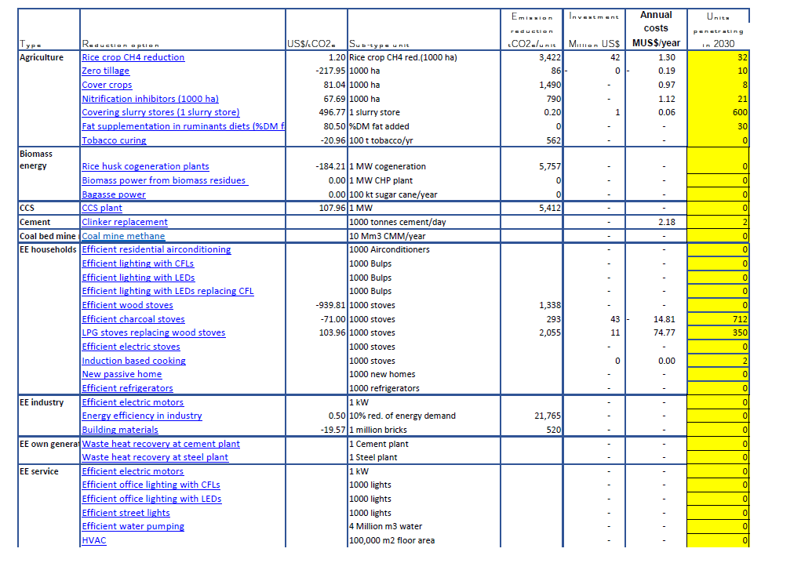
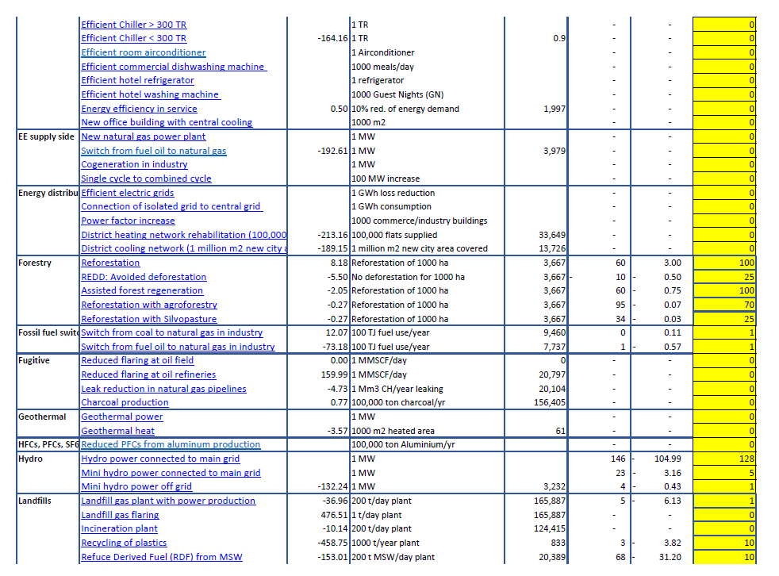
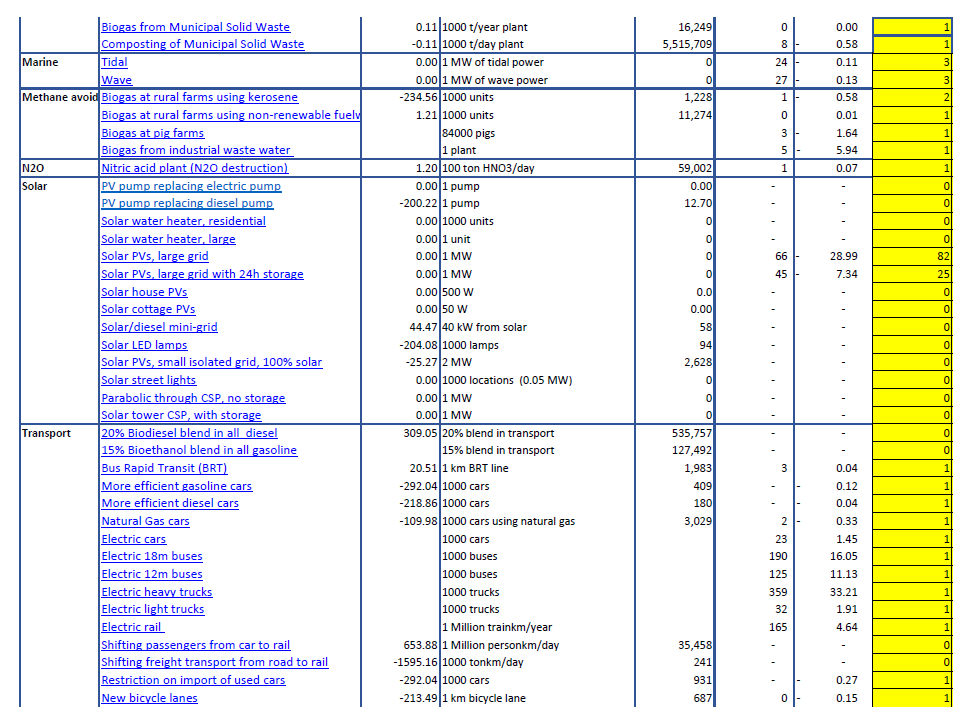
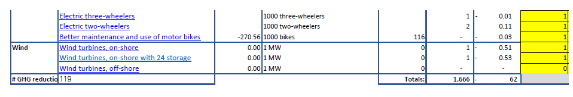
Annexe 2 : Donnée GACMO, input 2035
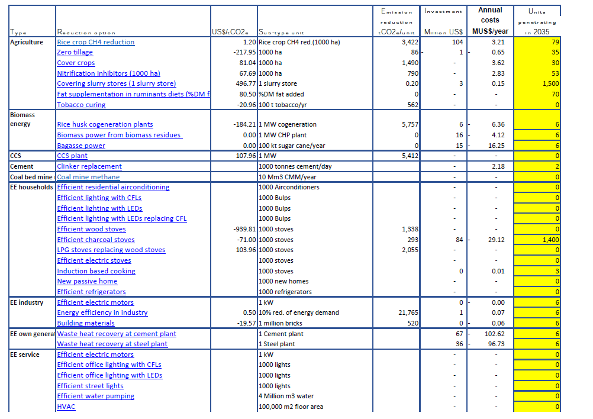
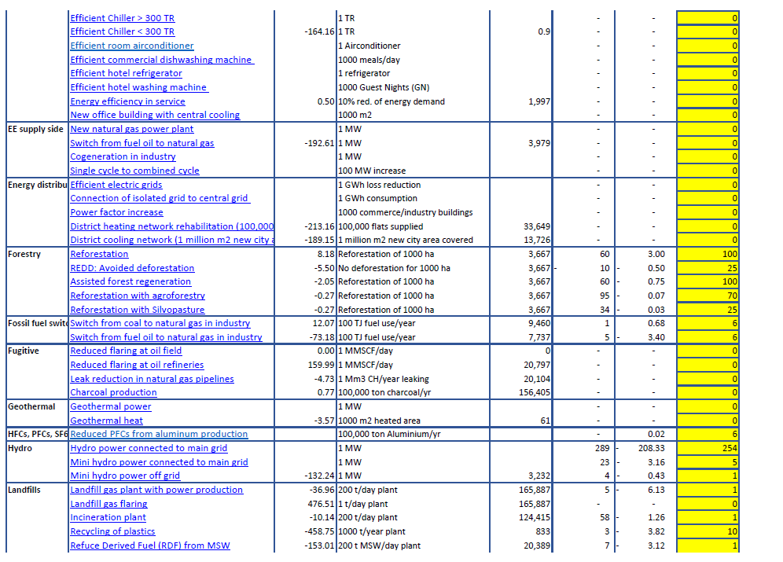
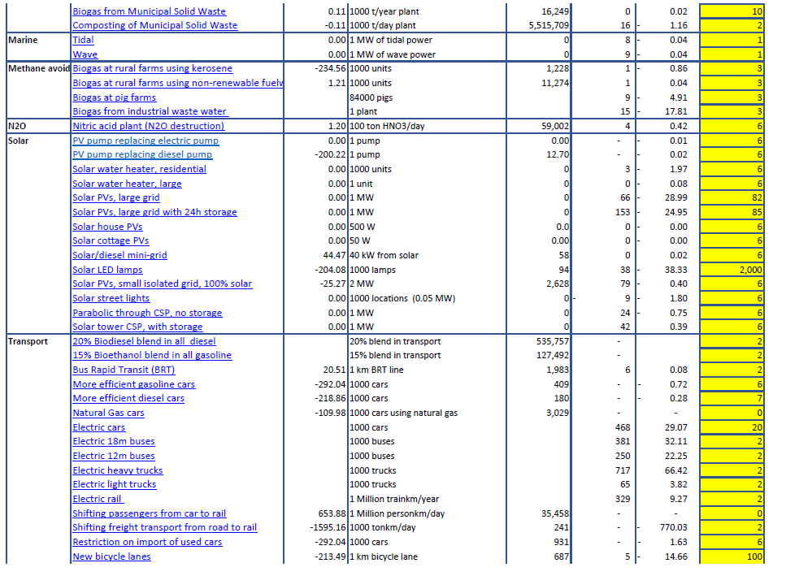
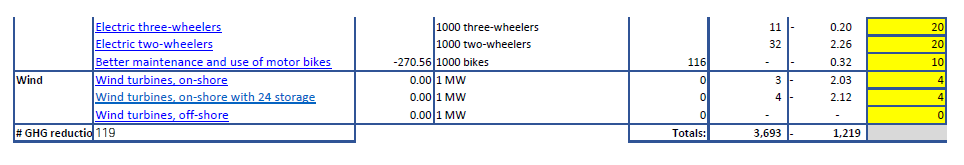
Annexe 3 : Résultats GACMO
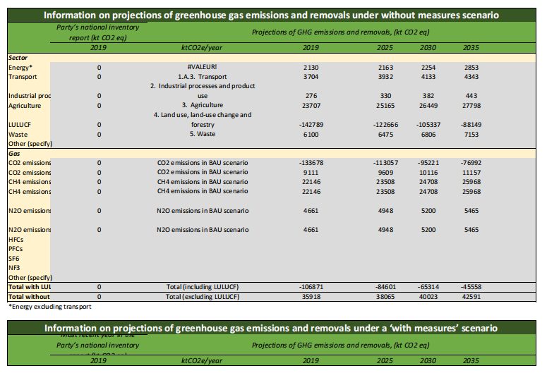
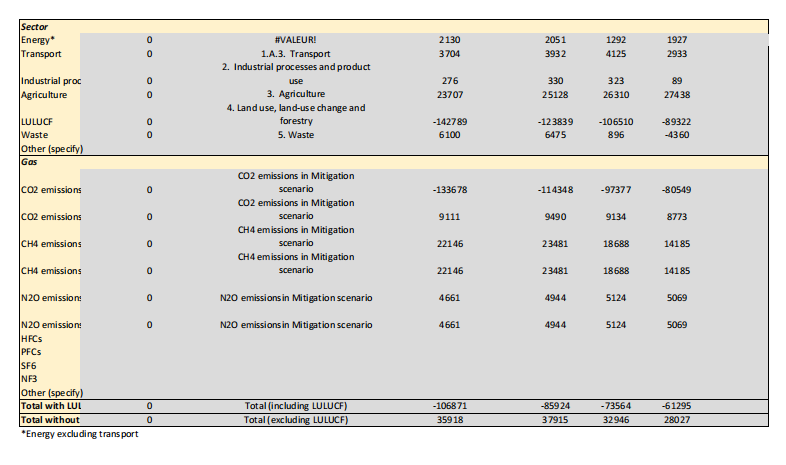
Annexe 4 : Rapport sur l’intégration des polluants climatiques à courte durée de vie dans la CDN et le BTR de Madagascar : promouvoir les objectifs climatiques, la qualité de l’air et le développement durable
Juin 2026
AAI : Absorbing Aerosol Index – Indice d’aérosols absorbants AOD : Aerosol Optical Depth – Profondeur optique des aérosols ARIMA : Autoregressive Integrated Moving Average AWD : Alternate Wetting and Drying – Irrigation alternée BAIS : Burned Area Index for Sentinel BAU : Business As Usual – Scénario de référence sans intervention BC : Black Carbon – Carbone noir BTR : Biennial Transparency Report - Rapport de Transparence Biennal CA-Markov : Cellular Automata-Markov – Automate cellulaire de Markov CCAC : Climate and Clean Air Coalition – Coalition pour le climat et l’air pur CCNUCC : Convention-Cadre des Nations Unies sur les Changements Climatiques CDN : Contribution Déterminée au Niveau National Méthane CH₄ : CO : Monoxyde de carbone Dioxyde de carbone CO₂ : EF : Emission Factor – Facteur d’émission EDGAR : Emissions Database for Global Atmospheric Research FRP : Fire Radiative Power – Puissance radiative des feux GACMO : Greenhouse Gas Abatement Cost Model GES : Gaz à Effet de Serre Gg : Gigagramme GHSL : Global Human Settlement Layer GIEC/IPCC : Groupe d’experts Intergouvernemental sur l’Evolution du Climat (ou Intergovernmental Panel on Climate Change) GWP/PRG : Global Warming Potential ou Potentiel de Réchauffement Global HFC : HydroFluoroCarbures IIED : International Institute for Environment and Development JRC : Joint Research Center – Centre Commun de Recherche de la Commission européenne LEAP : Long-range Energy Alternatives Planning System LST : Land Surface Temperature – Température de surface terrestre MAE : Mean Absolute Error – Erreur absolue moyenne MODIS : MODerate resolution Imaging Spectroradiometer MRV Mesure, Rapportage et Vérification MSI : MultiSpectral Imager MW : MégaWatt NASA : National Aeronautics and Space Administration NBR : Normalized Burn Ratio – Indice normalisé de brûlure NDVI : Normalized Difference Vegetation Index – Indice de végétation normalisé NIR : Near InfraRed Dioxyde d’azote NO₂ : PCCDV/SLCP : Polluants Climatiques de Courte Durée de Vie ou Short-Lived Climate Pollutants (SLCPs) PFC : PerFluoroCarbures PNUE : Programme des Nations Unies pour l’Environnement RF : Random Forest – Forêt aléatoire RMSE : Root Mean Square Error – Racine de l’erreur quadratique moyenne SRI : System of Rice Intensification SWIR : Short-Wave Infrared TCAC : Taux de Croissance Annuel Composé TROPOMI : TROPOspheric Monitoring Instrument UTCATF : Utilisation des Terres, Changement d’Affectation des Terres et Foresterie VIIRS : Visible Infrared Imaging Radiometer Suite
Madagascar fait face à des vulnérabilités croissantes liées au changement climatique, à la dégradation des écosystèmes et à la pollution atmosphérique. Dans ce contexte, les polluants climatiques de courte durée de vie (PCCDV), notamment le méthane (CH₄), le carbone noir (BC) et les hydrofluorocarbures (HFC), représentent un levier stratégique pour ralentir rapidement le réchauffement climatique tout en générant des bénéfices immédiats pour la santé publique, la qualité de l’air et les systèmes de production agricole. Contrairement au CO₂, les PCCDV possèdent une durée de vie atmosphérique relativement courte, permettant d’obtenir des bénéfices climatiques rapides à l’échelle des prochaines décennies. Les principales sources d’émissions sont associées à la riziculture irriguée, à l’élevage, aux déchets urbains, aux brûlis agricoles, aux feux de végétation, à la combustion de biomasse pour la cuisson domestique, ainsi qu’à l’expansion rapide des usages de la réfrigération et de la climatisation. Bien qu’il ne soit pas comptabilisé comme un gaz à effet de serre dans les inventaires classiques de la CCNUCC, le carbone noir est un aérosol carboné à fort pouvoir de réchauffement climatique à court terme et un indicateur majeur des impacts sanitaires de la pollution de l’air. Cette étude constitue la première analyse intégrée de spatialisation prospective des PCCDV à Madagascar, combinant données satellitaires, modélisation temporelle et scénarios climatiques nationaux. La méthodologie repose sur l’articulation de la télédétection, des systèmes d’information géographique (SIG) et de la modélisation statistique. Les modèles sont construits à partir d’images satellitaires et de données d’occupation du sol issues de Dynamic World, avec 2019 comme année de référence. Les projections temporelles utilisent le taux de croissance annuel composé (TCAC) afin de représenter les tendances moyennes d’évolution des émissions, tandis que les modèles ARIMA intègrent les fluctuations non linéaires et les anomalies temporelles. Les changements futurs d’occupation du sol sont simulés au moyen de chaînes de Markov et de modèles CA-Markov afin de mieux représenter les dynamiques spatiales locales, notamment dans les zones soumises à une urbanisation rapide. Cinq scénarios prospectifs pour 2030 et 2035 ont été développés : un scénario de référence (BAU), deux scénarios d’atténuation alignés sur les objectifs inconditionnels et conditionnels de la CDN 3, un scénario intégrant les mesures du secteur UTCATF, ainsi qu’un scénario d’urbanisation accélérée destiné à évaluer les effets d’une forte croissance urbaine sur les émissions futures. Les résultats ont été validés à partir des données d’EDGAR puis ajustés avec les inventaires nationaux issus du BTR afin d’assurer leur cohérence avec les données nationales et les cadres internationaux de reporting climatique. Entre 2019 et 2025, les émissions de méthane ont augmenté de 753 Gg à 914 Gg, avec des concentrations majeures dans les grands bassins rizicoles des Hautes Terres, de l’Alaotra, du Sofia et de Marovoay, ainsi que dans les zones urbaines densément peuplées. L’analyse spatiale a également mis en évidence les zones d’écosystèmes de mangroves comme sources de méthane, souvent peu prises en compte dans les inventaires classiques. Bien que les mangroves jouent un rôle majeur dans la séquestration du carbone et l’atténuation climatique, elles génèrent également des émissions naturelles de CH₄, auxquelles s’ajoutent celles liées à la déforestation et à la dégradation dans ces zones. Les émissions de carbone noir sont restées relativement stables, oscillant entre 14,7 et 16,4 Gg, avec toutefois de fortes variations spatiales liées aux feux agricoles, au tavy et aux incendies de végétation. Les émissions de HFC ont, quant à elles, connu une hausse notable, passant de 199 Gg à 306 Gg sur la même période, sous l’effet de l’expansion des équipements de réfrigération et de climatisation. Les principaux foyers d’émissions de HFC se concentrent dans les grandes agglomérations d’Antananarivo, Antsirabe, Fianarantsoa et Toamasina. Les projections mettent en évidence des trajectoires très contrastées selon les scénarios étudiés. Dans le scénario de référence (BAU), les émissions de méthane atteignent 1 252 Gg en 2030, puis 1 628 Gg en 2035. Les scénarios d’atténuation permettent de ramener ces émissions à 1 127 Gg dans le scénario inconditionnel et à 1 015 Gg dans le scénario conditionnel en 2030, puis respectivement à 1 368 Gg et 1 140 Gg en 2035. À l’inverse, le scénario d’urbanisation accélérée conduit à une hausse marquée des émissions de CH₄, atteignant 1 403 Gg en 2030 et 2 196 Gg en 2035.
Concernant les HFC, le scénario BAU projette des émissions de 397 Gg en 2030 et 432 Gg en 2035. Les scénarios d’atténuation permettent d’abaisser ces émissions à 340 Gg dans le scénario inconditionnel et à 327 Gg dans le scénario conditionnel en 2030, puis respectivement à 383 Gg et 363 Gg en 2035. Le scénario d’urbanisation accélérée conduit au contraire à une augmentation notable des émissions, atteignant 407 Gg en 2030 et 543 Gg en 2035 sous l’effet de l’expansion des usages de la climatisation, de la chaîne du froid et des infrastructures urbaines. Les émissions de carbone noir oscillent entre 14,5 et 18,3 Gg selon les années et les scénarios, mais restent fortement sensibles à la dynamique des feux agricoles, aux brûlis et aux combustions domestiques utilisant la biomasse. Toutefois, ces estimations présentent une limite méthodologique importante, car elles ne quantifient pas explicitement les émissions « indoor » issues de la cuisson domestique. Cette limite est particulièrement significative dans le contexte malgache, où plus de 90 % de la population utilise des combustibles solides pour la cuisson, tandis que le secteur résidentiel représenterait près de 8 % des sources de pollution atmosphérique du pays. Par conséquent, les résultats obtenus pourraient ne pas refléter intégralement l’ensemble des émissions et des niveaux d’exposition associés aux usages domestiques de la biomasse, notamment en milieu rural et dans les espaces intérieurs. Plusieurs pratiques présentent un fort potentiel de réduction rapide des émissions de méthane et de carbone noir dans le contexte malgache. L’irrigation intermittente des rizières, les biodigesteurs, la réduction des brûlis agricoles, les foyers améliorés et la valorisation des résidus agricoles sous forme de biochar ou de briquettes écologiques figurent parmi les interventions les plus efficaces et les plus accessibles. La valorisation des déchets organiques urbains par compostage ou méthanisation constitue également un levier complémentaire important pour réduire les émissions de méthane issues des décharges. La protection et la restauration des mangroves constituent également un levier d'atténuation important (mesure UTCATF), en limitant les émissions de CH₄ liées à la déforestation et à la dégradation de ces écosystèmes, tout en préservant leur fonction de puits de carbone bleu. Ces mesures génèrent également d’importants co-bénéfices socio-économiques et environnementaux, notamment l’amélioration de la sécurité alimentaire, le renforcement de la fertilité des sols, la réduction de la pollution de l’air intérieur, ainsi que la création d’emplois verts en milieu rural, avec des retombées positives significatives pour la santé publique. Sur le plan sanitaire, la réduction des PCCDV produit des effets différenciés mais complémentaires. La diminution du carbone noir contribue directement à réduire les maladies respiratoires et cardiovasculaires associées à la pollution de l’air intérieur et extérieur. La réduction des émissions de méthane permet, quant à elle, de limiter la formation d’ozone troposphérique, responsable de pathologies respiratoires et d’une part de la mortalité prématurée. Enfin, la réduction des hydrofluorocarbures (HFC) participe indirectement à l’atténuation du réchauffement climatique à court terme, ce qui contribue à limiter les impacts sanitaires liés aux vagues de chaleur, aux maladies vectorielles et à l’insécurité alimentaire. Elles constituent ainsi des leviers d’action cohérents avec les priorités nationales de développement durable, d’adaptation climatique et de transition énergétique. L’étude fournit une base scientifique robuste pour le ciblage territorial des politiques d’atténuation, le suivi des objectifs de la CDN 3 et la mobilisation des financements climatiques liés aux PCCDV. La complémentarité entre la spatialisation et les approches macro-sectorielles telles que GACMO, EDGAR et les inventaires nationaux renforce les capacités nationales de planification, de suivi et de reporting climatique à l’échelle internationale. Les approches spatiales produisent des estimations généralement plus élevées que les modèles sectoriels classiques en raison de leur capacité à intégrer explicitement la distribution des feux, les changements d’occupation du sol et les zones à forte pression anthropique. Les différents modèles constituent des outils complémentaires qui permettent d’approfondir la compréhension des dynamiques territoriales des émissions, d’identifier les zones prioritaires de concentration (hotspots) et de renforcer l’élaboration des plans d’action climatique ainsi que des stratégies sectorielles d’atténuation à Madagascar.
Face à l’urgence croissante de la crise climatique mondiale, la recherche de solutions capables de concilier atténuation du changement climatique, amélioration de la santé publique et développement socio-économique durable constitue aujourd’hui une priorité stratégique. Pour les pays en développement, particulièrement vulnérables aux impacts climatiques et disposant de ressources limitées, il est essentiel d’adopter des approches intégrées qui produisent des bénéfices immédiats pour les populations tout en contribuant aux objectifs globaux de l’Accord de Paris. Dans cette perspective, les polluants climatiques à courte durée de vie (PCCDV), également connus sous le nom de Short-Lived Climate Pollutants (SLCPs), représentent un levier d’action particulièrement pertinent. Ils comprennent principalement le carbone noir (BC), le méthane (CH₄) et les hydrofluorocarbures (HFC). Contrairement au dioxyde de carbone (CO₂), dont les effets persistent durant plusieurs siècles dans l’atmosphère, les PCCDV ont des durées de vie relativement courtes, allant de quelques jours à une douzaine d’années. Leur réduction permet ainsi d’obtenir des bénéfices rapides pour le climat tout en améliorant simultanément la qualité de l’air et la santé des populations. Selon le Programme des Nations Unies pour l’Environnement (PNUE), une réduction ambitieuse des émissions de PCCDV pourrait limiter le réchauffement mondial d’environ 0,4 à 0,5 °C d’ici 2050. Une telle action contribuerait également à réduire de manière significative les impacts sanitaires liés à la pollution atmosphérique et à préserver la productivité agricole, en particulier dans les régions les plus vulnérables. Pour Madagascar, ces enjeux revêtent une importance particulière. Bien que le pays ne représente que 0,2 % des émissions mondiales de gaz à effet de serre, il figure parmi les nations les plus exposées aux conséquences du changement climatique. En tant que grand État insulaire en développement et pays parmi les moins avancés, Madagascar est confronté à une multiplication des événements climatiques extrêmes, notamment les cyclones tropicaux, les sécheresses récurrentes, les inondations et l’irrégularité croissante des précipitations. Ces phénomènes affectent directement les moyens de subsistance des populations, fragilisent les secteurs productifs et menacent les écosystèmes exceptionnels qui constituent l’un des patrimoines naturels les plus riches au monde. À ces défis climatiques s’ajoutent des problématiques environnementales et sanitaires étroitement liées à la qualité de l’air. La forte dépendance du pays à la biomasse traditionnelle pour les usages domestiques constitue l’une des principales sources d’émissions de carbone noir. En effet, plus de 90 % de la population utilisent encore le bois-énergie ou le charbon de bois pour la cuisson. Cette situation expose quotidiennement des millions de personnes à des niveaux élevés de pollution de l’air intérieur, avec des conséquences importantes sur la santé, notamment pour les femmes et les enfants. Dans les zones urbaines, la croissance démographique rapide, l’augmentation du trafic routier, la gestion insuffisante des déchets et les feux de biomasse contribuent également à la détérioration de la qualité de l’air. Par ailleurs, les secteurs agricoles et forestiers constituent des sources significatives de PCCDV. Les rizières inondées et l’élevage extensif génèrent des émissions importantes de méthane, tandis que les feux de défrichement, les feux de brousse et la déforestation libèrent simultanément du carbone noir et d’autres polluants atmosphériques. Dans ce contexte, la réduction des PCCDV représente une opportunité unique de générer des bénéfices multiples. Cette approche repose sur le concept de « triple bénéfice » (triple win), selon lequel les mesures d’atténuation produisent simultanément des gains climatiques, sanitaires et socio-économiques. En réduisant les émissions de PCCDV, Madagascar peut contribuer à limiter le réchauffement climatique à court terme, améliorer la qualité de l’air, réduire les coûts liés aux maladies respiratoires et renforcer la productivité agricole ainsi que la résilience des communautés. Madagascar a réaffirmé son engagement dans la lutte contre le changement climatique à travers la ratification de l’Accord de Paris et la soumission de ses Contributions Déterminées au niveau National (CDN). Le pays est également engagé dans la mise en œuvre du Cadre de Transparence
Renforcé, qui prévoit l’élaboration régulière de Rapports Biennaux de Transparence (BTR) afin de suivre les progrès réalisés en matière d’atténuation et d’adaptation. Toutefois, malgré les progrès accomplis dans la prise en compte des gaz à effet de serre conventionnels, les PCCDV ne sont pas suffisamment intégrés dans les principaux instruments nationaux de planification climatique. Le présent rapport s’inscrit dans le cadre du projet d’appui au Gouvernement de Madagascar visant à renforcer l’intégration des polluants non-CO₂ dans la révision de la CDN 3.0 et dans les futurs BTR. À travers l’actualisation des inventaires d’émissions, l’analyse spatiale des sources de pollution et la modélisation de scénarios d’atténuation, ce rapport met en évidence le potentiel considérable qu’offre l’intégration des PCCDV dans la stratégie climatique nationale. Au-delà du respect des engagements internationaux, cette démarche constitue une opportunité de renforcer l’ambition climatique de Madagascar, de mobiliser de nouveaux financements, de soutenir un développement plus durable et d’améliorer concrètement les conditions de vie des populations malgaches. Ainsi, l’intégration des PCCDV dans la CDN 3.0 et dans le BTR apparaît non seulement comme une exigence de transparence climatique, mais également comme un levier stratégique pour construire un avenir plus résilient, plus sain et plus prospère pour Madagascar.
Les gaz à effet de serre (GES) représentent l'ensemble des composés gazeux capables d'absorber et de réémettre le rayonnement infrarouge dans l'atmosphère, contribuant ainsi au forçage radiatif positif responsable du réchauffement climatique global. Le dioxyde de carbone (CO₂) constitue le principal gaz à effet de serre d'origine anthropique, suivi du méthane (CH₄) et de l'oxyde nitreux (N₂O), auxquels s'ajoutent les gaz fluorés tels que les hydrofluorocarbures (HFC), les perfluorocarbures (PFC) et l'hexafluorure de soufre (SF₆) (Ciais et al., 2013 ; IPCC, 2021). Les rapports successifs du Groupe d'experts intergouvernemental sur l'évolution du climat (GIEC) montrent que la température moyenne mondiale a déjà augmenté d'environ 1,1 °C par rapport à l'ère préindustrielle et pourrait atteindre 1,5 °C entre 2030 et 2052 si les tendances actuelles d'émissions se poursuivent (IPCC, 2021). Dans ce contexte, la réduction des émissions de GES à longue durée de vie demeure essentielle pour stabiliser le climat à long terme. Toutefois, les PCCDV occupent désormais une place stratégique dans les politiques climatiques en raison de leur fort potentiel de réduction rapide du réchauffement climatique. La Coalition pour le climat et l'air pur (CCAC) reconnaît principalement quatre catégories de PCCDV : le méthane (CH₄), les hydrofluorocarbures (HFC), le carbone noir (BC) et l'ozone troposphérique. Leur durée de résidence atmosphérique relativement courte, de quelques jours pour le carbone noir à environ douze ans pour le méthane, permet d'obtenir des bénéfices climatiques quasi immédiats en cas de réduction des émissions. Selon le Programme des Nations Unies pour l'Environnement (PNUE) et la CCAC, une réduction ambitieuse des PCCDV pourrait limiter le réchauffement climatique mondial d’environ 0,4 à 0,5 °C d'ici 2050, tout en générant d'importants co-bénéfices pour la qualité de l'air, la santé publique, la sécurité alimentaire et les écosystèmes (UNEP, 2020 ; CCAC, 2023). Ces polluants se distinguent par leurs sources sectorielles spécifiques et leurs dynamiques d'émission propres à chaque contexte national. Madagascar contribue faiblement aux émissions mondiales de gaz à effet de serre, avec une part estimée à moins de 0,2 % des émissions globales (CCNUCC, 2015 ; INDC Madagascar, 2015). Malgré cette faible contribution, le pays figure parmi les États les plus vulnérables aux effets du changement climatique. Cette vulnérabilité est accentuée par la forte dépendance de l'économie nationale aux ressources naturelles, la fragilité des écosystèmes, l'insécurité énergétique et la pauvreté structurelle.
Le pays fait face à une intensification des événements climatiques extrêmes, notamment les cyclones tropicaux, les sécheresses récurrentes dans le Grand Sud, les inondations et les perturbations des régimes pluviométriques affectant directement l'agriculture, les ressources en eau et la sécurité alimentaire. Ces pressions climatiques sont aggravées par une forte dépendance des ménages aux combustibles issus de la biomasse pour la cuisson domestique, touchant plus de 90 % de la population. Dans le cadre de sa Contribution Déterminée au niveau National révisée (CDN 3.0), Madagascar ambitionne de renforcer son engagement climatique à travers une meilleure prise en compte des PCCDV, notamment le méthane, le carbone noir et les hydrofluorocarbures. Cette orientation vise non seulement à contribuer à l'atténuation du changement climatique, mais également à améliorer la qualité de l'air, les conditions sanitaires et les moyens de subsistance des populations. Plusieurs inventaires nationaux des émissions de gaz à effet de serre ainsi que différentes analyses sectorielles ont déjà été réalisés à Madagascar. Cependant, les approches existantes restent encore largement agrégées à l'échelle nationale et fournissent peu d'informations sur la répartition géographique des émissions. L'absence de spatialisation détaillée limite ainsi l'identification précise des zones prioritaires d'émissions et réduit l'efficacité du ciblage des politiques publiques d'atténuation. Dans ce contexte, la spatialisation des émissions des PCCDV apparaît comme un enjeu stratégique pour renforcer la planification climatique nationale et améliorer l'aide à la décision. La présente étude se focalise ainsi sur la modélisation spatiale des émissions de méthane (CH₄), de carbone noir (BC) et des hydrofluorocarbures (HFC) à Madagascar. Contrairement à l'ozone troposphérique, qui est un polluant secondaire formé par réactions chimiques atmosphériques et non directement émis par les activités humaines, le méthane, le carbone noir et les HFC font l'objet d'émissions directes quantifiables à l'échelle sectorielle et géographique, ce qui les rend accessibles à une modélisation spatiale des sources d'émissions. Les objectifs de cette étude visent notamment à :
analyser la distribution spatiale des émissions des PCCDV à Madagascar ;
développer des projections d'émissions selon différents scénarios d'évolution ;
comparer les résultats obtenus avec les inventaires et études existants ;
évaluer les options d'atténuation ainsi que leurs co-bénéfices climatiques, environnementaux et sanitaires.
Les PCCDV sont des composés atmosphériques dont la durée de résidence varie de quelques jours pour le carbone noir à environ douze ans pour le méthane, bien en deçà de celle du CO₂ dont les effets persistent plusieurs siècles (CCAC, 2023). Malgré cette courte durée de vie, leur pouvoir de réchauffement à court terme est considérable, ce qui en fait des leviers d'atténuation prioritaires pour la période 2020–2030. Selon le PNUE et la CCAC, une réduction ambitieuse des PCCDV pourrait limiter le réchauffement mondial de près de 0,5°C d'ici 2050, tout en générant des co-bénéfices significatifs pour la qualité de l'air, la santé publique et la sécurité alimentaire (UNEP, 2020). Méthane (CH₄) Le méthane est le deuxième gaz à effet de serre d’origine anthropique le plus important après le CO₂, avec un potentiel de réchauffement global sur 100 ans (PRG₁₀₀) estimé à 27–30 fois celui du CO₂, et pouvant dépasser 80 fois sur un horizon de 20 ans (IPCC, 2021). Il est responsable d'environ 30% du réchauffement observé depuis l'ère préindustrielle (Saunois et al., 2020). Ses principales sources anthropiques sont l’agriculture, notamment la fermentation entérique des ruminants et la riziculture irriguée, le secteur énergétique et la gestion des déchets. À Madagascar, les émissions sont principalement liées à la riziculture, à l'élevage bovin extensif, aux zones humides et aux décharges urbaines non contrôlées.
Le carbone noir est un aérosol carboné et non un gaz issu de la combustion incomplète de biomasse et de combustibles fossiles. Cette distinction est importante parce que contrairement aux GES gazeux, il agit directement sur le bilan radiatif en absorbant le rayonnement solaire sous forme particulaire, avec un forçage radiatif positif estimé à +1,1 W/m² à l'échelle mondiale (Bond et al., 2013 ; IPCC, 2021). Outre son impact climatique, il est associé à de graves effets sanitaires, notamment les maladies respiratoires et cardiovasculaires. À Madagascar, ses principales sources sont les brûlis agricoles (tavy), les feux de savane, la combustion de bois-énergie et du charbon de bois pour la cuisson domestique, ainsi que les transports urbains utilisant des carburants de mauvaise qualité (Ramanathan et Carmichael, 2008).
Les HFC sont des gaz fluorés synthétiques introduits comme substituts des CFC et des HCFC dans le cadre du Protocole de Montréal. Bien qu'ils ne détruisent pas la couche d'ozone, leur PRG₁₀₀ est extrêmement élevé, variant de 138 pour le HFC-152a à plus de 14 000 pour le HFC-23 (IPCC, 2021). Leurs émissions croissent rapidement avec le développement des secteurs de la réfrigération, de la climatisation et du commerce urbain. À Madagascar, la croissance démographique et l'urbanisation accélèrent la demande en équipements frigorifiques, faisant des HFC une source d'émissions émergente. L'Amendement de Kigali au Protocole de Montréal, ratifié par Madagascar, encadre leur réduction progressive et ouvre des perspectives de transition vers des fluides frigorigènes à faible impact climatique (UNEP, 2016 ; 2017).
Dans le cadre de la révision de sa Contribution Déterminée au niveau National (CDN 3.0), Madagascar ambitionne de renforcer l'intégration des PCCDV dans ses politiques climatiques nationales. Cette orientation répond à la nécessité de disposer d'analyses plus détaillées permettant de mieux comprendre les dynamiques spatiales des émissions, d'identifier les zones prioritaires d'intervention et d'évaluer les potentiels d'atténuation à court terme. Malgré l'existence d'inventaires nationaux des gaz à effet de serre, les informations disponibles restent encore majoritairement agrégées à l'échelle nationale et ne permettent pas d'appréhender avec précision la distribution géographique des émissions de méthane (CH₄), de carbone noir (BC) et d'hydrofluorocarbures (HFC). Dans ce contexte, le développement d'approches de modélisation spatiale et prospective apparaît essentiel pour appuyer la planification climatique, le suivi des engagements de la CDN et l'identification des co-bénéfices environnementaux et sanitaires associés à la réduction des PCCDV.
Le premier objectif consiste à développer trois modèles spatio-temporels permettant de représenter et de cartographier la distribution spatiale des principaux PCCDV à Madagascar, à savoir le méthane (CH₄), le carbone noir (BC) et les hydrofluorocarbures (HFC). Cette modélisation vise à identifier les zones les plus émettrices ainsi que les dynamiques d'évolution des émissions dans le temps, afin de fournir une base scientifique solide pour l'intégration des polluants non-CO₂ dans la CDN 3.0 de Madagascar.
Le deuxième objectif vise à élaborer plusieurs scénarios prospectifs d'émissions à partir des modèles développés. Un scénario de référence « Business As Usual » (BAU) sera d'abord construit afin de projeter l'évolution des émissions sans intervention supplémentaire. Sur cette base, des scénarios de réduction alignés sur les ambitions climatiques nationales seront élaborés, incluant une cible intermédiaire à l'horizon 2030 correspondant à une réduction des émissions de 10 % (inconditionnelle) à 19 % (conditionnelle) par rapport au BAU, ainsi qu'une cible finale à l'horizon 2035 visant une réduction de 16 % (inconditionnelle) à 30 % (conditionnelle). Deux scénarios additionnels seront également construits afin d'enrichir l'analyse prospective. Le premier intègre la dimension Utilisation des Terres, Changement d'Affectation des Terres et Foresterie (UTCATF), qui prend en compte les interactions entre les dynamiques d'occupation du sol, notamment la déforestation, les brûlis agricoles et la dégradation des écosystèmes, et les émissions de méthane et de carbone noir. Ce scénario permet d'évaluer dans quelle mesure les politiques de conservation et de restauration forestière peuvent contribuer à la réduction des PCCDV à l'échelle nationale. Le second est un scénario d'urbanisation accélérée, proposé par l'Institut international pour l'environnement et le développement (IIED), dont les travaux soulignent la nécessité d'intégrer explicitement les trajectoires d'urbanisation dans les projections d'émissions des pays africains, où la croissance urbaine constitue l'un des principaux moteurs de l'évolution future des émissions de PCCDV (IIED, 2023). Ce scénario modélise l'évolution des émissions dans un contexte de croissance démographique et d'expansion urbaine rapide, en tenant compte de la transformation des modes de consommation énergétique, de l'augmentation de la demande en réfrigération et climatisation, et de l'intensification de la production de déchets urbains.
La modélisation des émissions de PCCDV repose sur une architecture méthodologique hybride combinant télédétection satellitaire, apprentissage automatique et projections de scénarios. Modélisation du méthane (CH₄) Données satellitaires Quatre variables environnementales annuelles ont été mobilisées comme prédicteurs, couvrant les principaux déterminants des émissions de CH₄ dans les écosystèmes tropicaux (Poulter et al., 2017 ; Saunois et al., 2020).
|
Variable |
Capteur / Produit |
Description |
Référence |
|
NDVI |
Sentinel-2 MSI (L2A) |
Indice de ve ge tation normalise |
Rouse et al. (1974) |
|
Tempe rature de surface (LST) |
MODIS MOD11A2 |
Tempe rature diurne de surface (°C) |
Wan et Li (1997) |
|
Pre cipitations |
CHIRPS Daily |
Cumul annuel (mm) |
Funk et al. (2015) |
|
Occupation du sol |
Dynamic World V1 |
Classe d'occupation dominante annuelle |
Brown et al. (2022) |
La concentration atmosphérique en CH₄ (ppb), utilisée comme variable cible du modèle, est issue du capteur TROPOMI à bord de Sentinel-5P (Hu et al., 2018 ; Lorente et al., 2021). Il convient de préciser que cette concentration constitue un signal intégrateur des émissions de surface et non un flux direct. Les flux d'émission sont estimés indépendamment à l'échelle du pixel via des facteurs d'émission sectoriels issus des directives de l'IPCC, la concentration modélisée servant de variable de validation spatiale pour vérifier la cohérence entre zones de forte concentration atmosphérique et zones de flux élevés estimés. Prétraitement des données Les images Sentinel-2 sont utilisées au niveau de réflectance de surface (Level-2A), avec masquage des nuages et de leurs ombres par la couche de classification de scène fournie avec le produit (ESA, 2021). Chaque variable est agrégée à l'échelle annuelle selon un réducteur statistique adapté à sa nature : médiane pour les données de réflectance, moyenne pour la température de surface, cumul annuel pour les précipitations et mode pour l'occupation du sol.
Modélisation par apprentissage automatique La relation entre les prédicteurs environnementaux et la concentration atmosphérique en CH₄ est modélisée par l'algorithme Random Forest en mode régression (Breiman, 2001), reconnu pour sa robustesse face aux relations non linéaires et aux données multi-sources de télédétection (Pandey et al., 2019). Le modèle est entraîné aléatoirement sur l'ensemble du territoire, sur l'année de référence 2019, puis appliqué à chaque année de la période 2019–2025. La performance du modèle est évaluée par validation croisée à dix plis (10-fold cross-validation), en retenant trois métriques : le coefficient de détermination (R²), la racine de l'erreur quadratique moyenne (RMSE, en ppb) et l'erreur absolue moyenne (MAE). Une validation temporelle complémentaire est conduite en comparant les concentrations prédites aux observations TROPOMI disponibles pour les années 2020–2025 (Kohavi, 1995). Calcul des flux d'émission
Les flux de CH₄ sont estimés en associant à chaque classe d'occupation du sol un facteur d'émission (EF, en kg CH₄ ha⁻¹ j⁻¹) issu des directives IPCC et de la littérature spécialisée sur les écosystèmes tropicaux (IPCC, 2006) :
|
Classe d'occupation |
EF (kg CH₄/ha/j) |
Source |
|
Eau |
0,003 |
Bastviken et al. (2011) |
|
Fore ts |
0,000 |
Pangala et al. (2017) |
|
Prairies |
0,005 |
Mitra et al. (2005) |
|
Ve ge tation inonde e |
0,013 |
IPCC (2006) ; Yan et al. (2009) |
|
Cultures |
0,002 |
IPCC (2006) |
|
Arbustes |
0,001 |
Mitra et al. (2005) |
|
Zones ba ties |
0,002 |
IPCC (2006) |
|
Sol nu / Neige |
0,000 |
- |
Le flux annuel de CH₄ par pixel est calculé selon la méthodologie de niveau 1 des directives IPCC (IPCC, 2006, Vol. 4, Ch. 2) : CH𝟒 (t an−𝟏) = 𝑬𝑭𝒊× 𝑺ha × 𝟑𝟔𝟓÷ 𝟏𝟎𝟎𝟎 Avec : 𝐸𝐹𝑖: facteur d'émission de la classe 𝑖(kg ha⁻¹ j⁻¹) 𝑆ha: superficie du pixel en hectares. Les facteurs d'émission mobilisés sont issus de la littérature internationale et des directives de l'IPCC de niveau 1, qui constituent la référence méthodologique en l'absence de mesures directes locales. Leur applicabilité au contexte malgache repose sur l'hypothèse que les processus biogéochimiques sont comparables à ceux documentés dans des écosystèmes tropicaux analogues. Des spécificités locales, telles que les pratiques de la riziculture de tanety ou les caractéristiques des zones humides côtières, pourraient générer des écarts par rapport aux valeurs de référence, une limite à adresser dans les phases ultérieures par la collecte de données de terrain.
Données satellitaires Six produits satellitaires sont mobilisés, couvrant différentes dimensions du signal de combustion, de la détection des zones brûlées et de la qualité de l'air (Giglio et al., 2016 ; Lyapustin et al., 2018 ; van der Werf et al., 2010) :
|
Variable |
Capteur / Produit |
Description |
Référence |
|
Puissance radiative des feux (FRP) |
MODIS MOD14A1 / MYD14A1 |
FRP journalie re a 1 km : proxy de l'intensite des feux actifs |
Giglio et al. (2016) |
|
Profondeur optique des ae rosols (AOD₅₅₀) |
MODIS MCD19A2 MAIAC |
AOD a 550 nm, 1 km de re solution |
Lyapustin et al. (2018) |
|
Monoxyde de carbone (CO) |
Sentinel-5P TROPOMI |
Colonne troposphe rique de CO (mol/m²) |
Van der Werf et al. (2010) |
|
Dioxyde d'azote (NO₂) |
Sentinel-5P TROPOMI |
Colonne troposphe rique de NO₂ (mol/m²) |
Van der Werf et al. (2010) |
|
NBR |
Sentinel-2 MSI (L2A) |
Indice de ratio de bru lure normalise : de tection des cicatrices de bru lure (NBR < 0) |
Key et Benson (2006) |
|
BAIS-2 |
Sentinel-2 MSI (L2A) |
Indice de zone bru le e Sentinel-2 : de tection des feux re cents (BAIS- 2 > 0,87) |
Filipponi (2018) |
L'approche repose sur la complémentarité de deux types de signal satellitaire. La FRP MODIS détecte les feux actifs au moment du passage du satellite et renseigne sur l'intensité énergétique instantanée de la combustion. Le NBR et le BAIS-2, dérivés des images Sentinel-2, permettent quant à eux de cartographier les cicatrices de brûlure après le passage du feu, y compris les feux de faible intensité non détectés par MODIS. Cette combinaison offre ainsi une couverture plus complète des émissions de BC liées aux feux de végétation, aux brûlis agricoles et à la déforestation à Madagascar. Il convient toutefois de noter que cette approche oriente la modélisation vers les sources d'émissions liées aux feux. Les émissions diffuses issues de la combustion domestique de biomasse et des transports urbains, bien que significatives à Madagascar, ne sont pas directement captées par ces signaux satellitaires et constituent une limite méthodologique à reconnaître explicitement. Le CO et le NO₂, traceurs gazeux co-émis avec le BC lors de la combustion de biomasse, renforcent l'estimation de la concentration en carbone noir (van der Werf et al., 2010). L'indice d'aérosols absorbants (AAI), issu de S5P/TROPOMI, est utilisé comme indicateur qualitatif de la présence d'aérosols carbonés absorbants dans la colonne atmosphérique, en ne retenant que les valeurs positives (Torres et al., 1998). Prétraitement des données Les données FRP sont extraites de la bande MaxFRP et converties en MW par application d'un facteur de 0,1. Les collections MODIS Terra et Aqua sont fusionnées par agrégation maximale mensuelle afin de maximiser la détection des feux. Puisque les valeurs d’AOD sont masquées, c’est le facteur d’échelle de 0,001 qui est utilisée. Des filtres de qualité physique sont également appliqués aux données TROPOMI (CO : 0–0,5 mol/m² ; NO₂ : 0–0,001 mol/m²). Pour les images Sentinel-2, les zones brûlées sont identifiées par application simultanée des deux critères spectraux suivants : NBR < 0 et BAIS-2 > 0,87. Seuls les pixels satisfaisant ces deux conditions sont retenus comme zones brûlées confirmées. Chaque variable est ensuite agrégée à l'échelle mensuelle par la moyenne des pixels valides, à l'exception de la FRP pour laquelle un composite maximum est retenu.
Indices spectraux de détection des zones brûlées Le NBR est calculé à partir des bandes NIR (B8, 842 nm) et SWIR (B12, 2 190 nm) de Sentinel-2 :
Avec : Bn : Bande de l’image satellite B4 : Rouge (0,665 µm) B6 : Végétation Bordure Rouge 1 (0,744 µm) B7 : Végétation Bordure Rouge 2 (0,783 µm) B8 : Proche Infrarouge 1 (0,842 µm) B8A : Proche Infrarouge 2 (0,865 µm) B12 : Moyenne Infrarouge (2,190 µm) Les valeurs négatives (NBR < 0) indiquent une sévérité de brûlure modérée à élevée (Key et Benson, 2006). Les valeurs supérieures à 0,87 indiquent la présence de zones brûlées récentes (Filipponi, 2018). Modélisation par apprentissage automatique Comme dans la modélisation du CH₄, la relation entre les prédicteurs satellitaires et la concentration en carbone noir est utilisée par l'algorithme Random Forest en mode régression (Breiman, 2001). Le modèle est entraîné sur l'année de référence 2019 et appliqué à la période 2019–2025. La performance est évaluée par validation croisée à dix plis, en retenant les métriques R², RMSE et MAE (Kohavi, 1995). Calcul des émissions de carbone noir Les émissions mensuelles de BC sont estimées à partir de la puissance radiative des feux (FRP) et de la superficie des zones brûlées détectées par NBR et BAIS-2, selon l'approche de Vermote et al. (2009) et Ichoku et Kaufman (2005) : BCmasse = FRP × 𝑬𝑭𝑩𝑪× 𝚫𝒕 Avec :
𝐸𝐹𝐵𝐶= 0,28 g BC MJ−1: facteur d'émission du carbone noir pour la végétation africaine (Andreae et Merlet, 2001 ; Akagi et al., 2011), Δ𝑡 : durée mensuelle en secondes et la FRP est exprimée en MW (= MJ s⁻¹). Les zones brûlées identifiées par Sentinel-2 servent de masque spatial pour contraindre les estimations d'émissions aux pixels confirmés comme affectés par les feux, réduisant ainsi le risque de surestimation dans les zones de faux positifs MODIS. Les valeurs mensuelles sont sommées pour obtenir le flux annuel par pixel, puis intégrées à la superficie nationale pour produire une estimation nationale annuelle.
Données satellitaires La modélisation des HFC repose sur une approche différente de celle adoptée pour le CH₄ et le BC. En effet, les HFC ne disposent pas de capteurs satellitaires dédiés offrant une couverture spatiale opérationnelle à l'échelle nationale, en raison de leurs faibles concentrations atmosphériques et de la complexité de leur signature spectrale (Rigby et al., 2014 ; Velders et al., 2015). La modélisation spatiale des émissions de HFC s'appuie donc sur une approche par désagrégation spatiale des données d'activité sectorielles, combinée aux variables proxy satellitaires représentatives de la demande en réfrigération et climatisation.
|
Variable |
Capteur / Produit |
Description |
Référence |
|
Tempe rature de surface (LST) |
MODIS MOD11A2 |
Tempe rature diurne de surface (°C) : proxy de la demande en climatisation |
Wan et Li (1997) |
|
Indice de densite urbaine |
Global Human Settlement Layer (GHSL) |
Densite de population et degre d'urbanisation |
Pesaresi et al. (2016) |
|
Luminosite nocturne |
VIIRS DNB (VNP46A2) |
Intensite lumineuse nocturne : proxy de l'activite e conomique et commerciale |
Elvidge et al. (2017) |
|
Occupation du sol |
Dynamic World V1 |
Fraction de surfaces ba ties et commerciales |
Brown et al. (2022) |
Ces variables constituent des proxies indirects de la demande en équipements frigorifiques et de climatisation, principaux vecteurs d'émissions de HFC à Madagascar. La luminosité nocturne et la densité urbaine permettent d'identifier les zones de concentration des activités commerciales et résidentielles, tandis que la température de surface renseigne sur la pression climatique induisant la demande en refroidissement. Prétraitement des données Toutes les variables sont reprojetées et rééchantillonnées à une résolution commune de 10 km, cohérente avec les incertitudes inhérentes à l'approche par désagrégation spatiale des HFC. La température de surface est agrégée par moyenne annuelle. La luminosité nocturne est agrégée par médiane mensuelle puis sommée annuellement afin de capter les variations saisonnières de l'activité économique. La densité urbaine et l'occupation du sol sont utilisées comme variables statiques, mises à jour selon la disponibilité des millésimes annuels des produits. Approche par désagrégation spatiale En l'absence de mesures atmosphériques directes des HFC à l'échelle nationale, les émissions totales sont d'abord estimées à l'échelle nationale à partir des données d'activité sectorielles, puis désagrégées spatialement selon une pondération combinant les variables proxy satellitaires. Cette approche est conforme aux recommandations méthodologiques du GIEC pour les inventaires nationaux de gaz fluorés (IPCC, 2006, Vol. 3, Ch. 7). La désagrégation spatiale est réalisée par pondération des pixels selon un indice composite 𝑊𝑖 calculé pour chaque pixel 𝑖à 10 km correspondant à la résolution spatiale de la grille de désagrégation adoptée, compatible avec la résolution de GHSL: 𝑾𝒊= 𝜶× LST𝒊+ 𝜷× Urban𝒊+ 𝜸× NTL𝒊 Avec : LST𝑖, Urban𝑖et NTL𝑖 sont les valeurs normalisées de température de surface, de densité urbaine et de luminosité nocturne respectivement, 𝛼, 𝛽, 𝛾 : les coefficients de pondération déterminés par optimisation sur les données d'activité disponibles, avec 𝛼+ 𝛽+ 𝛾= 1. L'émission spatialisée par pixel est alors :
𝑾𝒊
HFC𝒊 (t an−𝟏) = HFCnational × ∑𝑾𝒋 𝒋
Modélisation par apprentissage automatique La relation entre les variables proxy et la distribution spatiale des émissions de HFC est affinée par l'algorithme Random Forest en mode régression (Breiman, 2001), entraîné sur l'année de référence 2019 et appliqué à la période 2019–2025. La performance est évaluée par validation croisée à dix plis, en retenant les métriques R², RMSE et MAE (Kohavi, 1995).
Cinq scénarios prospectifs sont élaborés à partir des modèles spatio-temporels développés, couvrant la période 2025–2035. Ils permettent d'explorer différentes trajectoires d'évolution des émissions de PCCDV à Madagascar, depuis la tendance de référence jusqu'aux ambitions climatiques conditionnelles, en intégrant des dimensions sectorielles et territoriales spécifiques au contexte malgache. Base historique des émissions (2019–2025) La construction des scénarios s'appuie sur les émissions historiques estimées par les modèles spatio-temporels sur la période 2019–2025, qui constituent la base de référence commune à l'ensemble des scénarios. Cette période permet de caractériser les tendances d'évolution récentes des émissions de CH₄, BC et HFC à Madagascar, d'identifier les dynamiques sectorielles et spatiales sous-jacentes, et d'établir les paramètres de calibration des modèles de projection. L'année 2019 est retenue comme année de référence absolue, cohérente avec l'année d'entraînement des modèles Random Forest. Méthodes de projection Les projections temporelles des émissions sur la période 2025–2035 reposent sur une approche mixte combinant trois méthodes complémentaires, dont le choix est adapté à la nature des dynamiques modélisées (Box et Jenkins, 1976 ; Pontius et al., 2001). Le taux de croissance annuel composé (TCAC) est utilisé pour représenter les tendances moyennes d'évolution des émissions lorsque celles-ci suivent une trajectoire régulière et prévisible. Il est appliqué notamment aux émissions de HFC, dont la croissance est étroitement corrélée à des facteurs structurels stables tels que la démographie et le taux d'équipement : E𝒕= E𝟎× (𝟏+ TCAC)𝒕 Avec : E𝑡: émission à l'année 𝑡, E0: émission de l'année de référence 2019 TCAC: taux de croissance annuel composé estimé sur la période historique 2019–2025. Les modèles ARIMA (AutoRegressive Integrated Moving Average) sont mobilisés pour intégrer les fluctuations non linéaires et les anomalies temporelles observées dans les séries d'émissions, notamment pour le CH₄ et le BC dont les dynamiques sont plus sensibles aux variabilités climatiques interannuelles, aux régimes pluviométriques, aux sécheresses, à l'intensité des feux de végétation (Box et Jenkins, 1976). Les paramètres ARIMA (p, d, q) sont estimés par analyse des fonctions d'autocorrélation et d'autocorrélation partielle des séries historiques. Les chaînes de Markov et les modèles CA-Markov (Cellular Automata - Markov) sont utilisés pour simuler les changements futurs d'occupation du sol, afin de mieux représenter les dynamiques spatiales locales des émissions, notamment dans les zones soumises à une urbanisation rapide et aux pressions de déforestation (Pontius et al., 2001). Ces modèles permettent d'estimer les probabilités de transition entre classes d'occupation du sol, forêt vers agriculture, rural vers urbain, et d'en dériver les évolutions spatiales des facteurs d'émission associés aux scénarios UTCATF et urbanisation.
Scénario 1 : Référence BAU (Business As Usual) Le scénario BAU constitue la trajectoire de référence contre laquelle tous les autres scénarios sont évalués. Il projette l'évolution des émissions de CH₄, BC et HFC en l'absence d'intervention supplémentaire, en maintenant les tendances actuelles des variables environnementales, démographiques et sectorielles observées sur la période 2019–2025. Ce scénario reflète la continuation des pratiques existantes sans mesure d'atténuation additionnelle.
Scénario 2 : CDN Inconditionnel (2030–2035) Ce scénario modélise la mise en œuvre des engagements climatiques nationaux réalisables avec les seules ressources internes de Madagascar, conformément aux cibles inconditionnelles de la CDN 3.0. Les projections sont construites en appliquant des coefficients de réduction annuels progressifs aux trajectoires BAU, avec des objectifs intermédiaires intégrés sur l'ensemble de la période 2025–2035 :
réduction de 10 % des émissions à l'horizon 2030 par rapport au BAU ;
réduction de 16 % des émissions à l'horizon 2035 par rapport au BAU.
Scénario 3 : CDN Conditionnel (2030–2035) Ce scénario représente une mise en œuvre renforcée des engagements climatiques, conditionnée à la mobilisation de financements internationaux, au transfert de technologies et au renforcement des capacités nationales. Il traduit le niveau d'ambition maximal de la CDN 3.0 de Madagascar, avec les cibles suivantes par rapport au scénario BAU :
réduction de 19 % des émissions à l'horizon 2030 ;
réduction de 30 % des émissions à l'horizon 2035.
Scénario 4 : Forte Croissance et Étalement Urbain Ce scénario, inspiré du cadre analytique proposé par l'Institut international pour l'environnement et le développement (IIED), modélise une urbanisation accélérée caractérisée par l'expansion rapide des zones urbaines en corrélation avec la croissance démographique projetée (IIED, 2023). Les changements d'occupation du sol sont simulés par des modèles CA-Markov, calibrés sur les tendances d'urbanisation observées entre 2019 et 2025. Ce scénario prend en compte :
l'augmentation de la demande en équipements frigorifiques et de climatisation, se traduisant par une hausse des émissions de HFC ;
l'intensification de la production de déchets urbains et la transformation des modes de consommation énergétique, exerçant une pression accrue sur les émissions de CH₄ ;
le développement des transports urbains et la croissance de la mobilité motorisée, contribuant à l'augmentation des émissions de BC.
Scénario 5 : Atténuation UTCATF Ce scénario modélise les interactions entre les dynamiques d'occupation du sol et les émissions de CH₄ et de BC, en intégrant la composante Utilisation des Terres, Changement d'Affectation des Terres et Foresterie (UTCATF). Les transitions d'occupation du sol sont simulées par des chaînes de Markov en intégrant des contraintes de conservation forestière et de réduction des brûlis agricoles.
Le scénario évalue ainsi dans quelle mesure les politiques de conservation et de restauration forestière peuvent contribuer à la réduction des émissions des PCCDV à l'échelle nationale, en tenant compte des spécificités des écosystèmes malgaches, zones humides côtières, forêts denses et savanes (ONE, 2022).
Conversions en équivalents CO₂ La comparaison des estimations produites par cette étude avec celles d'autres travaux nécessitent une harmonisation des unités d'expression des émissions. Une conversion systématique est appliquée en utilisant le Potentiel de Réchauffement Global sur 100 ans (PRG₁₀₀) spécifique à chaque polluant, conformément aux recommandations du GIEC (IPCC, 2021) : ECO𝟐eq (Gg CO𝟐eq) = Ecomposeˊ (Gg) × PRG𝟏𝟎𝟎
Pour les HFC, en l'absence de désagrégation par type de fluide frigorigène, les mêmes hypothèses que celles retenues dans le BTR Madagascar sont appliquées, en considérant les HFC comme un groupe agrégé avec un PRG₁₀₀ unitaire.
|
Composé |
Conversion appliquée |
Base |
|
CH₄ |
1 Gg CH₄ = 28 Gg CO₂eq |
PRG₁₀₀ (IPCC AR6 ; 2021) |
|
BC |
1 Gg BC = 900 Gg CO₂eq |
PRG₁₀₀ (Bond et al. ; 2013 ; IPCC AR6 2021) |
|
HFC |
1 Gg HFC = 1 Gg CO₂eq |
Hypothe se BTR Madagascar (2026) |
Il convient de noter que le PRG₁₀₀ du BC est associé à une incertitude significativement plus élevée que celle des GES gazeux en raison de la complexité de ses effets radiatifs directs et indirects (Bond et al., 2013). Validation spatiale avec EDGAR La validation spatiale des estimations modélisées est conduite par comparaison avec la base de données EDGAR (Emissions Database for Global Atmospheric Research), développée par le Centre Commun de Recherche (JRC) de la Commission européenne. EDGAR constitue la référence internationale pour les inventaires d'émissions atmosphériques, couvrant plus de 200 pays et territoires depuis 1970, avec une désagrégation sectorielle complète (énergie, industrie, agriculture, transport et déchets) pour l'ensemble des principaux GES et polluants atmosphériques, dont le CH₄, les HFC, le CO₂, le N₂O et le BC (Crippa et al., 2021). Sa méthodologie repose sur le produit des activités et des facteurs d'émission, conforme aux lignes directrices du GIEC, ce qui en fait une base de comparaison méthodologiquement cohérente avec l'approche adoptée dans la présente étude. Les grilles spatialisées EDGAR sont utilisées pour comparer pixel par pixel la distribution spatiale des émissions modélisées de CH₄, BC et HFC avec les estimations EDGAR correspondantes pour Madagascar. Cette comparaison permet d'évaluer la cohérence spatiale du modèle, d'identifier les zones de sur- ou sous-estimation et de qualifier la robustesse des patterns spatiaux produits. Validation nationale avec BTR Madagascar 2026 La validation des estimations nationales est conduite par croisement avec le Rapport de Transparence Biennal de Madagascar (BTR, 2026), instrument officiel de reporting de la Convention-Cadre des Nations Unies sur les Changements Climatiques (CCNUCC). Dans le cadre de l'Accord de Paris et du mécanisme de transparence renforcée, le BTR compile l'inventaire national des GES, les politiques et mesures d'atténuation, les projections d'émissions et les progrès vers les cibles de la CDN (CCNUCC, 2015). Les estimations nationales de CH₄ et de HFC issues du modèle sont comparées aux valeurs correspondantes rapportées dans le BTR Madagascar afin d'évaluer la cohérence des ordres de grandeur et des tendances temporelles. Il convient de noter que le BTR ne couvre pas le carbone noir (BC), celui-ci n'étant pas comptabilisé comme gaz à effet de serre dans le cadre du reporting de la CCNUCC. La validation des émissions de BC repose donc exclusivement sur la comparaison avec les grilles spatialisées EDGAR et la littérature scientifique disponible sur les émissions de BC en Afrique subsaharienne.
Modélisation du carbone noir (BC) La modélisation repose sur des signaux satellitaires orientés vers la détection des feux actifs et des cicatrices de brûlure, ce qui constitue une limite structurelle de l'approche. Les émissions diffuses issues de la combustion domestique de biomasse ne sont pas directement captées par les produits MODIS FRP ni par les indices NBR et BAIS-2, conçus pour des signatures thermiques caractéristiques des feux de végétation à ciel ouvert. Cette limite est particulièrement significative dans le contexte malgache, où plus de 90 % de la population utilise des combustibles solides pour la cuisson et où le secteur résidentiel représenterait près de 8 % des sources de pollution atmosphérique nationale. Les estimations produites pourraient ainsi sous-estimer les flux réels de BC, en particulier en milieu rural et dans les espaces intérieurs, et sont à considérer comme des valeurs plancher plutôt que comme une quantification exhaustive des émissions nationales. Attribution sectorielle La modélisation produit une distribution spatiale des émissions de CH₄, BC et HFC à l'échelle du pixel, mais ne permet pas une désagrégation sectorielle explicite des sources d'émissions. L'attribution sectorielle repose uniquement sur la classe d'occupation du sol associée à chaque pixel utilisé comme proxy indirect du secteur émetteur. Cette approche ne permet pas de distinguer, au sein d'un même pixel, la contribution respective de plusieurs sources coexistantes, par exemple les émissions de CH₄ liées simultanément à l'élevage et à la riziculture dans une même zone agricole, ou les émissions de BC issues conjointement des brûlis et de la combustion domestique en milieu périurbain. Par conséquent, les résultats ne sont pas directement comparables aux inventaires sectoriels classiques structurés selon la nomenclature IPCC (énergie, agriculture, déchets, procédés industriels), ce qui limite leur utilisation directe pour le suivi des engagements sectoriels de la CDN 3.0 et nécessite une interprétation prudente lors de la comparaison avec les données du BTR Madagascar.
Modèle de répartition des émissions de CH₄ Distribution spatiale de CH₄ L’évolution spatio-temporelle des émissions de CH₄ à Madagascar sur la période 2019–2025 révèle une distribution spatiale hétérogène, structurée autour de deux grands types de sources : les écosystèmes humides agricoles et naturels d'une part, et les zones urbaines densément peuplées d'autre part. Les concentrations les plus élevées se localisent de manière persistante dans les grands bassins rizicoles des Hautes Terres centrales, du lac Alaotra, de la plaine du Sofia et de la vallée de Marovoay. Ces zones correspondent aux principales régions de riziculture irriguée de Madagascar, où les conditions anaérobies des sols inondés favorisent une production intensive de méthane biogénique par fermentation microbienne, conformément aux facteurs d'émission élevés attribués à la classe de végétation inondée dans le modèle. La récurrence de ces hotspots sur l'ensemble de la période confirme le caractère structurel de ces sources et leur lien direct avec le calendrier cultural de la riziculture malgache. L'analyse spatiale met également en évidence les zones de mangroves côtières comme sources non négligeables d'émissions de CH₄, notamment sur les côtes nord-ouest et est de l'île. Bien que les mangroves jouent un rôle majeur dans la séquestration du carbone bleu et l'atténuation climatique à long terme, elles génèrent des émissions naturelles de méthane par décomposition anaérobie de la matière organique dans leurs sédiments. Ces émissions sont amplifiées par la déforestation et la dégradation des mangroves, qui exposent les sédiments riches en carbone organique à des processus de décomposition accélérés. Ces sources sont souvent absentes ou sous-estimées dans les inventaires nationaux classiques, ce qui constitue l'un des apports de la présente modélisation spatiale. Sur l'ensemble de la période, les cartes révèlent une légère progression des valeurs maximales de la légende, passant de 0,011–0,016 Gg par pixel en 2019 à 0,011–0,018 Gg par pixel en 2025, indiquant une tendance à l'intensification des émissions dans les zones les plus émettrices, cohérente avec l'expansion des surfaces rizicoles et la croissance démographique observées à Madagascar.
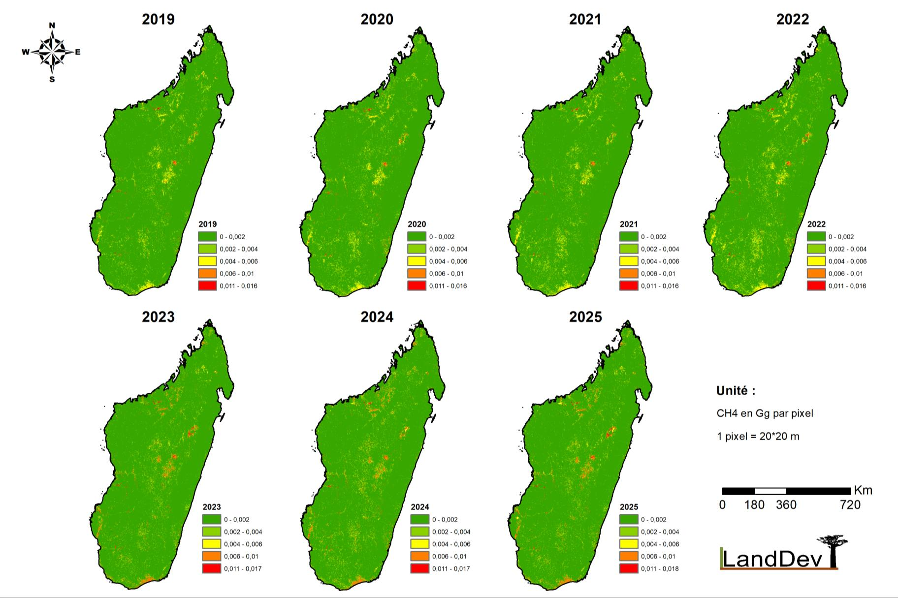
Évolution temporelle nationale et comparaison avec EDGAR et BTR Madagascar Les émissions de méthane estimées par le modèle présentent une trajectoire globalement croissante sur la période, passant de 753 Gg en 2019 à 914 Gg en 2025, soit une hausse d'environ 19 %. Cette tendance est cohérente avec celle observée par les deux sources de référence : EDGAR progresse de 801 à 900 Gg sur la même période, tandis que le BTR affiche des valeurs comprises entre 750 et 842 Gg pour les années disponibles (2019–2023). Les écarts entre le modèle et EDGAR restent modérés tout au long de la période, oscillant entre 1 Gg (2024) et 48 Gg (2019), soit des différences inférieures à 6 % dans la majorité des cas. Le BTR présente des valeurs légèrement plus variables, notamment en 2022 où l'écart avec le modèle atteint environ 92 Gg, ce qui s'explique en partie par des méthodologies d'inventaire différentes. Ces différences s'inscrivent néanmoins dans les marges d'erreur habituellement reconnues pour ce type d'estimation à l'échelle nationale. Dans le contexte malgache, cette hausse progressive des émissions de CH₄ reflète l'expansion des activités agricoles, notamment la riziculture irriguée et l'élevage, qui constituent les principales sources de méthane. Le bon alignement général entre le modèle et les études de référence renforce la crédibilité des estimations produites et leur utilité pour orienter les politiques climatiques nationales.

Distribution spatiale de BC La cartographie spatio-temporelle des émissions de carbone noir sur la période 2019–2025 révèle un profil spatial distinct de celui du CH₄ et des HFC, caractérisé par de fortes variations spatiales interannuelles reflétant la nature épisodique et diffuse des sources de combustion. Les valeurs les plus élevées se localisent principalement dans les zones soumises aux feux agricoles, aux pratiques de tavy et aux incendies de végétation, particulièrement visibles dans les régions de savane du centre et de l'ouest de l'île, ainsi que dans les zones de transition forêt-agriculture des Hautes Terres et de la côte est. L'analyse temporelle révèle des fluctuations interannuelles significatives. L'année 2020 présente les valeurs maximales les plus élevées de la période (0,003–0,005 Gg par pixel), suggérant une saison de feux particulièrement intense. Cette intensité se maintient en 2023 (0,003–0,0052 Gg par pixel) et 2025 (0,003–0,0047 Gg par pixel), tandis que les années 2022 et 2024 enregistrent les valeurs maximales les plus faibles (respectivement 0,003–0,004 et 0,003–0,005 Gg par pixel), traduisant une variabilité interannuelle cohérente avec les fluctuations climatiques et les dynamiques saisonnières des feux à Madagascar. Les émissions liées aux transports urbains et à la production industrielle sont captées par les capteurs d'aérosols sous forme de pixels d'émissions modérées autour des principales agglomérations. Les émissions de combustion domestique (indoor), quant à elles, ne le sont pas par l'approche satellitaire, constituant une limite discutée dans la section méthodologique.
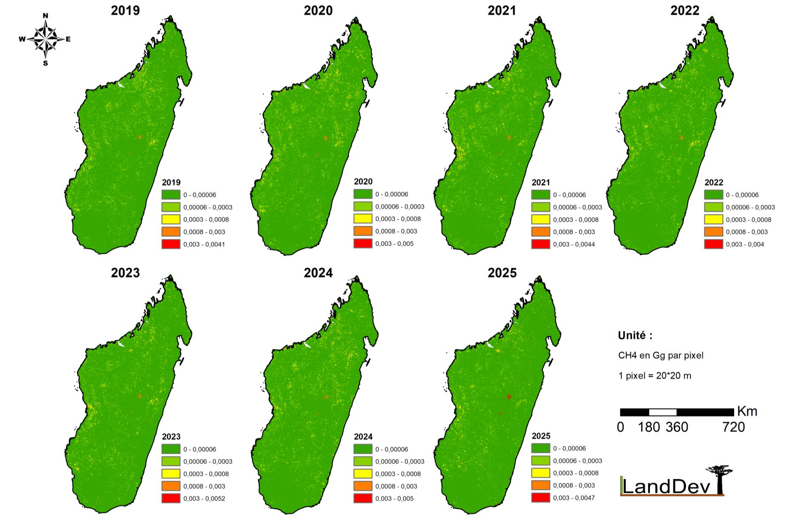
Évolution temporelle nationale et comparaison avec EDGAR et BTR Madagascar Les émissions de carbone noir estimées par le modèle se maintiennent dans une fourchette relativement stable sur l'ensemble de la période, entre 14,7 et 16,4 Gg, sans tendance nette à la hausse ou à la baisse. EDGAR, disponible uniquement pour 2019–2022, affiche des valeurs comprises entre 14,8 et 15,4 Gg, très proches de celles du modèle. Les écarts entre les deux sources ne dépassent pas 1,1 Gg, ce qui correspond à une différence maximale d'environ 7 %. Cette proximité entre le modèle et EDGAR sur les années communes témoigne d'une bonne cohérence méthodologique, malgré l'absence de données EDGAR après 2022 et l'inexistence d'une source BTR pour ce polluant. Pour les années 2023 à 2025, le modèle reste la seule référence disponible, ce qui constitue un apport utile pour combler ce vide informationnel dans les inventaires nationaux. À Madagascar, les émissions de BC sont principalement liées à la combustion de biomasse, feux de déforestation, charbonnage et utilisation de foyers traditionnels, ainsi qu'aux transports. La stabilité des niveaux estimés suggère que ces pratiques n'ont pas connu d'évolution majeure sur la période, même si des efforts de transition énergétique pourraient, à terme, infléchir cette tendance.

Distribution spatiale de HFC Contrairement au méthane et au carbone noir dont la distribution couvre de larges portions du territoire national, les émissions de HFC se caractérisent par une concentration ponctuelle et fortement localisée dans les principales agglomérations urbaines de Madagascar. Les foyers d'émissions les plus intenses se concentrent de manière persistante dans quatre grandes agglomérations : Antananarivo, capitale et principal centre économique du pays ; Antsirabe, deuxième ville industrielle ; Fianarantsoa, centre urbain majeur des Hautes Terres sud ; et Toamasina, premier port commercial de Madagascar. Cette géographie des émissions reflète directement la distribution spatiale des activités commerciales, industrielles et résidentielles génératrices de demande en réfrigération et climatisation. L'évolution temporelle des cartes révèle une tendance à la progression continue des valeurs maximales d'émissions par pixel, passant de 10,01–35 Gg en 2019 à 10,01–38,5 Gg en 2025, traduisant une augmentation soutenue de la demande en équipements frigorifiques sous l'effet conjugué de la croissance démographique urbaine, de l'élévation du niveau de vie dans les centres urbains et de l'expansion du secteur commercial de la chaîne du froid. Cette tendance est cohérente avec les projections de l'Amendement de Kigali, qui anticipe une forte croissance des émissions de HFC dans les pays en développement à urbanisation rapide au cours de la période 2020–2035 (UNEP, 2016).
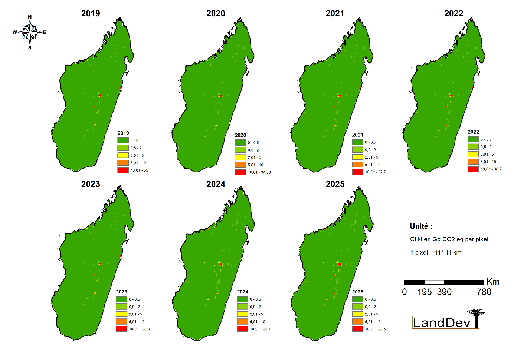
Évolution temporelle nationale et comparaison avec EDGAR et BTR Madagascar Les émissions de HFC montrent la progression la plus marquée parmi les trois gaz analysés, avec une hausse continue passant de 199 Gg en 2019 à 306 Gg en 2025 pour le modèle, soit une augmentation de près de 54 % en six ans. Le BTR, disponible jusqu'en 2023, confirme cette tendance avec des valeurs allant de 194 à 283 Gg. Les deux sources évoluent de manière parallèle, les écarts restant généralement inférieurs à 25 Gg, soit moins de 10 % des valeurs estimées. Les légères différences observées entre le modèle et le BTR, notamment en 2022 et 2023 où les valeurs BTR sont légèrement supérieures, peuvent s'expliquer par des hypothèses distinctes sur les taux de fuite des équipements de réfrigération et de climatisation, ou par des différences dans les données d'activité utilisées. Ces variations restent dans des limites acceptables et ne remettent pas en cause la cohérence globale des deux approches. Cette croissance soutenue des HFC à Madagascar est directement liée à l'essor du marché de la climatisation et de la réfrigération, lui-même porté par l'urbanisation croissante et l'augmentation du niveau de vie dans certains segments de la population. Ce constat souligne l'importance pour le pays de s'engager pleinement dans la mise en œuvre de l'Amendement de Kigali, qui vise précisément à réduire progressivement l'usage de ces gaz à fort pouvoir de réchauffement global.

Projections des émissions de CH₄ Répartition spatiale des projections 2030 : distribution spatiale des scénarios La cartographie des projections d'émissions de CH₄ à l'horizon 2030 confirme et amplifie la structure spatiale observée sur la période historique, avec une persistance des hotspots dans les grands bassins rizicoles des Hautes Terres, de l'Alaotra, du Sofia et de Marovoay, ainsi que dans les zones de mangroves côtières. Les quatre scénarios partagent cette architecture spatiale de base mais se différencient nettement par l'intensité et l'étendue des zones de forte émission. Le scénario BAU projette des valeurs maximales de 0,011–0,025 Gg par pixel, traduisant la poursuite tendancielle de l'expansion rizicole et de la gestion non contrôlée des déchets.
Le scénario conditionnel présente les valeurs maximales les plus faibles (0,011–0,020 Gg par pixel), reflétant l'effet des mesures de gestion durable des rizières et de réduction des émissions liées aux déchets. Le scénario inconditionnel se situe à un niveau intermédiaire (0,011–0,022 Gg par pixel), montrant l'effort national de gestion des déchets et de maîtrise des pratiques rizicoles, avec une atténuation modérée des hotspots dans les bassins rizicoles par rapport au BAU. Le scénario d'urbanisation se distingue par une extension significative des zones émettrices modérées, colorées en vert clair et jaune, sur l'ensemble des Hautes Terres et de la côte ouest, traduisant l'effet de la conversion des terres agricoles en périphérie urbaine et l'intensification des pratiques rizicoles pour répondre aux besoins alimentaires d'une population urbaine croissante, avec des valeurs maximales équivalentes au BAU (0,011–0,025 Gg par pixel).
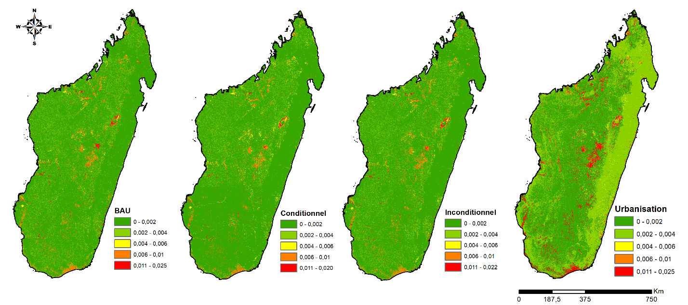
Analyse comparative des émissions nationales 2030 : bilan quantitatif par scénario À l'horizon 2030, les projections nationales de CH₄ révèlent des écarts substantiels entre scénarios, cohérents avec les cibles de la CDN 3.0. Le scénario BAU de référence, caractérisé par la poursuite de tendances actuelles sans mesure d'atténuation supplémentaire, projette une émission de 1 252 Gg. Le scénario inconditionnel atteint 1 127 Gg, soit une réduction de 125 Gg (−10 %) par rapport au BAU, correspondant aux mesures nationales de gestion durable des rizières et de réduction des émissions liées aux déchets réalisables. Le scénario conditionnel atteint 1 015 Gg, soit la réduction la plus importante de 237 Gg (−19 %) par rapport au BAU, traduisant l'effet des interventions renforcées en matière de techniques rizicoles à faibles émissions, de gestion des déchetset de restauration des zones humides. Le scénario d’urbanisation projette en revanche 1 403 Gg, soit +151 Gg au-dessus du BAU (+12 %), reflétant la pression combinée de l'intensification agricole périurbaine et de la croissance de la demande alimentaire urbaine sur les émissions de CH₄.

Répartition spatiale des projections 2035 : distribution spatiale des scénarios À l'horizon 2035, les cartes révèlent une intensification générale des émissions par rapport à 2030 dans tous les scénarios, avec des écarts interscénarios qui s'accentuent significativement. Le scénario BAU projette les valeurs maximales les plus élevées (0,011–0,032 Gg par pixel), avec une extension notable des hotspots dans les bassins rizicoles et les zones de mangroves dégradées. Le scénario conditionnel maintient les valeurs maximales les plus faibles (0,011–0,022 Gg par pixel), confirmant la capacité des mesures conditionnelles à contenir l'intensification des émissions sur le long terme. Le scénario inconditionnel se positionne à un niveau intermédiaire, avec une réduction perceptible des hotspots dans les bassins rizicoles mais une persistance des émissions diffuses dans les zones de savanes et de prairies humides. Le scénario d'urbanisation présente une caractéristique spatiale distinctive : une coloration vert clair généralisée sur l'ensemble du territoire, indiquant une élévation du niveau de base des émissions diffuses liées à la conversion des terres et à l'intensification agricole, avec des valeurs maximales quasi équivalentes au BAU (0,011–0,031 Gg par pixel).
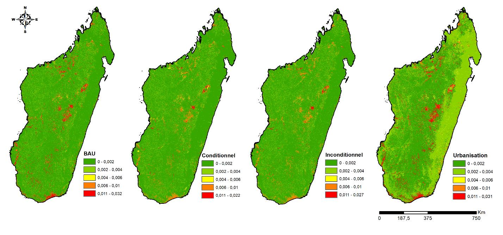
Analyse comparative des émissions nationales 2035 : bilan quantitatif par scénario À l'horizon 2035, les écarts entre scénarios atteignent leur niveau maximal sur l'ensemble de la période de projection. Le scénario BAU progresse significativement à 1 628 Gg, soit une hausse de 376 Gg par rapport à 2030, reflétant l'effet cumulatif de l'expansion rizicole et de la croissance des déchets non contrôlés. Le scénario conditionnel maintient une trajectoire maîtrisée à 1 140 Gg, soit une réduction de 488 Gg (−30 %) par rapport au BAU 2035, démontrant l'efficacité croissante des mesures nationales sur le long terme. Le scénario inconditionnel projette 1 368 Gg, soit 260 Gg en dessous du BAU (−16 %), un écart moindre qu'en 2030 qui mérite une attention particulière. Il suggère que sans renforcement progressif des mesures conditionnelles, leur efficacité relative tend à s'éroder face à la dynamique de croissance des sources agricoles. Le scénario urbanisation projette 2 196 Gg, soit +568 Gg au-dessus du BAU 2035 (+35 %), signalant un effet d'accélération non linéaire particulièrement prononcé pour le CH₄, où la conversion des terres agricoles périurbaines et l'intensification rizicole se combinent pour générer des émissions très largement supérieures à la tendance de référence.

Répartition spatiale des projections 2030 : distribution spatiale des scénarios La cartographie des projections d'émissions de carbone noir à l'horizon 2030 révèle une distribution spatiale diffuse sur l'ensemble du territoire, contrastant avec la concentration ponctuelle observée pour les HFC. Les quatre scénarios partagent la même structure spatiale de base, dominée par les zones de savane, de transition forêt-agriculture et de brûlis agricoles du centre et de l'ouest, mais se différencient par l'intensité et l'étendue des pixels de forte émission. Le scénario BAU projette des valeurs maximales de 0,003–0,005 Gg par pixel, traduisant la poursuite tendancielle des pratiques de feux agricoles et de tavy sans intervention supplémentaire. Le scénario conditionnel présente les valeurs maximales les plus faibles (0,003–0,0044 Gg par pixel), reflétant l'effet des politiques de réduction des brûlis et de restauration forestière sur l'intensité des hotspots. Le scénario inconditionnel se situe à un niveau intermédiaire, reflétant l'effet partiel des mesures nationales de réduction des feux agricoles et de gestion des forêts sans appui externe, avec une atténuation modérée des hotspots dans les zones de savane et de transition forêt-agriculture par rapport au BAU. Le scénario d’urbanisation se distingue par une extension notable des zones émettrices vers les périphéries urbaines et les axes routiers, avec des valeurs maximales équivalentes au BAU (0,003– 0,005 Gg par pixel), traduisant la contribution croissante des transports et des activités péri-urbaines aux émissions de BC.
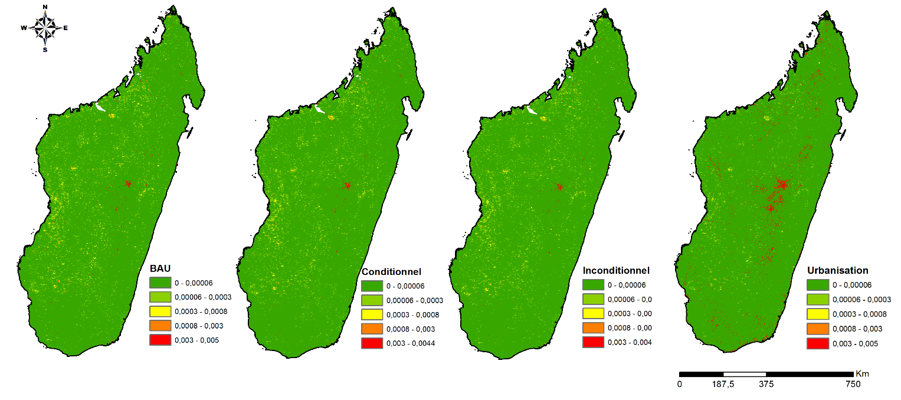
Analyse comparative des émissions nationales 2030 : bilan quantitatif par scénario À l'horizon 2030, les projections nationales de BC s'établissent comme suit par rapport au scénario BAU de référence (17,26 Gg). Le scénario inconditionnel projette des émissions de 15,54 Gg, soit une réduction de 1,72 Gg par rapport au BAU, correspondant à la mise en œuvre des mesures nationales de réduction des feux accessibles avec les seules ressources internes. Le scénario conditionnel atteint 14,50 Gg, soit la réduction la plus importante de 2,76 Gg par rapport au BAU, traduisant l'effet des politiques renforcées de gestion des terres et de substitution énergétique soutenues par des financements internationaux. Le scénario d’urbanisation projette en revanche 17,68 Gg, soit plus de 0,42 Gg au-dessus du BAU, reflétant la pression additionnelle exercée par la croissance des transports urbains et l'intensification des activités péri-urbaines sur les émissions de BC.

Répartition spatiale des projections 2035 : distribution spatiale des scénarios
À l'horizon 2035, la distribution spatiale des projections de BC présente une évolution notable par rapport à 2030, avec une intensification généralisée des zones émettrices dans tous les scénarios.
Le scénario d'urbanisation se distingue particulièrement par une extension marquée des pixels de forte émission vers les Hautes Terres et la côte est, avec des valeurs maximales atteignant 0,003– 0,006 Gg par pixel, les plus élevées de l'ensemble des scénarios à cet horizon, traduisant l'effet cumulatif de l'expansion urbaine sur les dynamiques d'occupation du sol et les pratiques de brûlis en périphérie des villes. Les scénarios conditionnels et inconditionnels maintiennent quant à eux une contraction relative des hotspots les plus intenses, bien que leur étendue spatiale reste comparable à celle du BAU.
Analyse comparative des émissions nationales 2035 : bilan quantitatif par scénario À l'horizon 2035, les écarts entre scénarios se resserrent par rapport à 2030, à l'exception du scénario urbanisation qui s'en écarte davantage. Le scénario BAU progresse légèrement à 17,59 Gg, soit une hausse modérée par rapport à 2030, sous l'effet de la croissance tendancielle des pratiques de feux agricoles et de tavy. Le scénario inconditionnel atteint 17,34 Gg, soit une réduction de seulement 0,25 Gg par rapport au BAU, indiquant un affaiblissement de l'efficacité des mesures inconditionnelles sur le long terme en l'absence de soutien externe. Le scénario conditionnel maintient la réduction la plus significative avec 16,72 Gg, soit 0,87 Gg en dessous du BAU, confirmant la durabilité des politiques de gestion durable des terres et de transition énergétique conditionnelles. Le scénario d'urbanisation projette 18,27 Gg, soit +0,68 Gg au-dessus du BAU, avec un écart qui double par rapport à 2030, signalant une accélération de l'effet de l'urbanisation sur les émissions de BC à mesure que l'expansion urbaine et périurbaine s'intensifie.

Répartition spatiale des projections 2030 : distribution spatiale des scénarios La cartographie des projections d'émissions de HFC à l'horizon 2030 confirme la structure spatiale observée sur la période historique, avec une concentration persistante des émissions dans les grandes agglomérations urbaines. Toutefois, les quatre scénarios se différencient nettement par l'intensité des hotspots et l'étendue des pixels de forte émission. Le scénario BAU les valeurs maximales les plus élevées de l'ensemble des scénarios, traduisant la poursuite tendancielle de la croissance de la demande en équipements frigorifiques sans intervention supplémentaire. Les scénarios CDN conditionnel et inconditionnel montrent une réduction visible de l'intensité des pixels rouges et orange, notamment dans les agglomérations d'Antananarivo et de Toamasina, reflétant l'effet des mesures d'atténuation sur la maîtrise de la demande en HFC. Le scénario conditionnel présente les valeurs maximales les plus faibles, confirmant l'efficacité supérieure des mesures conditionnelles appuyées par des financements et transferts technologiques internationaux. Le scénario d'urbanisation se distingue par une extension spatiale des zones émettrices vers des agglomérations secondaires, avec des valeurs maximales dépassant celles du BAU traduisant l'effet amplificateur de l'expansion urbaine rapide sur la demande en réfrigération et climatisation.
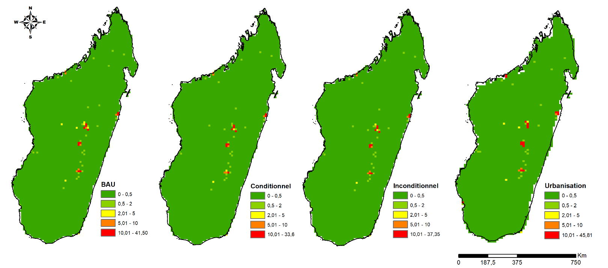
Analyse comparative des émissions nationales 2030 : bilan quantitatif par scénario Sur le plan quantitatif, les projections nationales à l'horizon 2030 illustrent l'étendue des écarts entre scénarios par rapport au BAU. Le scénario inconditionnel permet une réduction de 56 Gg par rapport au BAU, correspondant à la mise en œuvre des engagements climatiques nationaux avec les seules ressources internes. Le scénario conditionnel atteint une réduction de 70 Gg, soit le niveau d'ambition maximal de la CDN 3.0, conditionné par la mobilisation de financements internationaux et le transfert de technologies vers des fluides frigorigènes à faible PRG. À l'inverse, le scénario d'urbanisation projette une hausse de +11 Gg au-dessus du BAU, soulignant que sans mesures d'atténuation spécifiques, la croissance urbaine accélérée constitue un facteur d'amplification des émissions de HFC à court terme.

Répartition spatiale des projections 2035 : distribution spatiale des scénarios À l'horizon 2035, la distribution spatiale des scénarios confirme et amplifie les tendances observées en 2030. Les scénarios BAU et urbanisation maintiennent des valeurs maximales identiques à celles de 2030, indiquant une stabilisation de l'intensité des hotspots dans les grandes agglomérations, tandis que l'extension spatiale vers les villes secondaires se poursuit sous l'effet de l'urbanisation. Les scénarios conditionnel et inconditionnel maintiennent quant à eux leurs valeurs maximales de 2030, confirmant la capacité des mesures d'atténuation à contenir l'intensité des émissions dans les foyers urbains principaux sur l'ensemble de la période de projection.
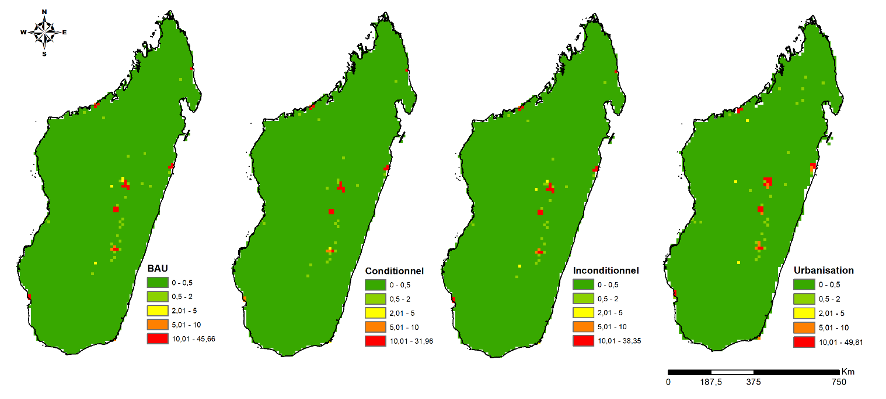
Analyse comparative des émissions nationales 2035 : bilan quantitatif par scénario À l'horizon 2035, les écarts entre scénarios s'accentuent significativement par rapport à 2030, reflétant l'effet cumulatif des trajectoires d'atténuation et d'urbanisation sur le long terme. Le scénario inconditionnel génère une réduction de 49 Gg par rapport au BAU, légèrement inférieure à celle de 2030, suggérant que les mesures inconditionnelles atteignent progressivement leurs limites d'efficacité sans appui externe. Le scénario conditionnel maintient une réduction stable de 70 Gg, démontrant la robustesse et la durabilité des mesures de transition technologique vers des fluides frigorigènes alternatifs lorsqu'elles sont soutenues par des mécanismes de financement internationaux. Le scénario urbanisation projette en revanche une hausse de +111 Gg au-dessus du BAU en 2035, soit dix fois plus qu'en 2030, signalant un effet d'accélération non linéaire de l'urbanisation sur les émissions de HFC, cohérent avec les projections de l'IIED sur la croissance des besoins en refroidissement dans les pays africains à urbanisation rapide (IIED, 2023).

Mesures d'atténuation par polluant
Atténuation des émissions de CH₄ Les projections révèlent que le CH₄ représente le polluant le plus émissif à Madagascar, avec des niveaux BAU atteignant 1 252 Gg en 2030 et 1 628 Gg en 2035. Le potentiel de réduction conditionnel atteint respectivement 237 Gg et 488 Gg par rapport au BAU aux deux horizons. La cartographie identifie trois sources prioritaires d'intervention : les grands bassins rizicoles, les zones humides et les décharges urbaines.
Les bassins rizicoles des Hautes Terres, de l'Alaotra, du Sofia et de Marovoay constituent les hotspots dominants des émissions de CH₄, confirmés par la persistance des pixels de forte émission sur l'ensemble de la période 2019–2025. Les techniques d'irrigation intermittente (AWD et SRI ) constituent la mesure d'atténuation à plus fort potentiel quantitatif, permettant de réduire les émissions de méthane de 30 à 70 % en limitant les conditions anaérobies favorables à la fermentation méthanogène, tout en améliorant les rendements agricoles (Carrijo et al., 2017 ; Cornell University, 2021).
La cartographie a mis en évidence les zones de mangroves côtières et les zones humides naturelles comme sources significatives de CH₄, souvent absentes des inventaires nationaux classiques. Les politiques de conservation et de restauration de ces écosystèmes constituent une mesure d'atténuation à double bénéfice, réduction des émissions de CH₄ par limitation de la dégradation des sédiments organiques et renforcement du rôle de puits de carbone bleu de ces écosystèmes côtiers.
Le scénario d'urbanisation identifie les agglomérations d'Antananarivo, Toamasina et Mahajanga comme zones de croissance rapide des émissions de CH₄ liées aux décharges non contrôlées. La mise en place de sites d'enfouissement technique avec captage du biogaz et la valorisation des déchets organiques par méthanisation constituent les mesures prioritaires pour contenir cette trajectoire de hausse.
Atténuation des émissions de BC Les projections de BC montrent des niveaux relativement stables sous le scénario BAU (17,26 Gg en 2030 et 17,59 Gg en 2035), avec un potentiel de réduction conditionnel de 2,76 Gg en 2030 et 0,87 Gg en 2035. La distribution spatiale des émissions oriente les mesures d'atténuation vers deux axes directement dérivés des résultats de la cartographie.
La cartographie identifie les régions de savane du centre et de l'ouest, ainsi que les zones de transition forêt-agriculture des Hautes Terres et de la côte est, comme les hotspots dominants des émissions de BC. Les pratiques de tavy et les feux de préparation des parcelles constituent les sources les plus intenses et les plus étendues spatialement. La diffusion de pratiques agroécologiques alternatives au brûlis, la gestion améliorée des résidus agricoles, notamment la valorisation des balles de riz par pyrolyse contrôlée en biochar, et le renforcement de la surveillance des feux par télédétection satellitaire constituent les mesures les plus efficaces pour réduire ces émissions dans les zones prioritaires identifiées (Schmidt et al., 2021 ; IPCC AR6, WGIII, 2022).
Les capteurs d'aérosols ont permis d'identifier une contribution des transports urbains aux émissions de BC autour des principales agglomérations, notamment Antananarivo et Toamasina. Le renouvellement progressif du parc de véhicules vers des motorisations moins émissives et l'amélioration de la qualité des carburants constituent des mesures complémentaires ciblant ces sources urbaines.
Atténuation des émissions de HFC Les projections de HFC révèlent une dynamique de croissance soutenue sous le scénario BAU, avec un risque de dépassement significatif en cas d'urbanisation accélérée (+111 Gg CO₂eq au-dessus du BAU en 2035). Autrement dit, le potentiel de réduction conditionnel est stable et durable (70 Gg CO₂eq aux deux horizons). La cartographie identifie clairement les agglomérations d'Antananarivo, Antsirabe, Fianarantsoa et Toamasina comme zones prioritaires d'intervention, avec une extension progressive vers les villes secondaires entre 2019 et 2025.
La mise en œuvre de l'Amendement de Kigali, ratifié par Madagascar, ouvre l'accès aux mécanismes de financement du Fonds multilatéral du Protocole de Montréal pour la transition vers des fluides frigorigènes à faible PRG dans les agglomérations identifiées comme foyers prioritaires d'émissions (UNEP, 2016 ; 2017).
L'amélioration de l'efficacité énergétique des équipements frigorifiques et de climatisation, combinée au renforcement des capacités nationales de récupération et de destruction des HFC en fin de vie, constitue un levier complémentaire dont le potentiel croît avec l'augmentation du parc d'équipements en service, particulièrement marquée dans les villes secondaires selon les résultats de la cartographie. Co-bénéfices de la réduction des PCCDV
Co-bénéfices climatiques La réduction simultanée des trois polluants modélisés génère des effets climatiques synergiques à court et moyen terme. Le CH₄, avec une durée de vie atmosphérique d'environ douze ans, produit un effet de refroidissement rapide en cas de réduction des émissions dans les bassins rizicoles et les zones humides prioritaires. Le BC, avec un PRG₁₀₀ de 900 et une durée de vie atmosphérique de quelques jours, offre les bénéfices climatiques les plus immédiats, particulièrement dans les zones de feux identifiées par la cartographie. Les HFC, avec des PRG₁₀₀ pouvant dépasser 14 000, représentent le levier climatique le plus puissant par unité de masse réduite dans les agglomérations urbaines (Bond et al., 2013 ; IPCC, 2021). La réduction combinée du CH₄ et du BC contribue par ailleurs à la diminution de la formation d'ozone troposphérique, polluant secondaire aux effets climatiques et sanitaires négatifs, générant des co-bénéfices climatiques additionnels non directement comptabilisés dans les inventaires nationaux (UNEP, 2020).
Co-bénéfices sanitaires La réduction du BC dans les zones de feux agricoles et autour des agglomérations urbaines améliore directement la qualité de l'air extérieur, réduisant l'incidence des maladies respiratoires et cardiovasculaires associées à l'exposition aux particules fines. La transition vers des pratiques alternatives au brûlis et vers des carburants moins émissifs dans les transports urbains génère des bénéfices sanitaires mesurables dans les populations riveraines des zones de feux et dans les centres urbains (Ramanathan et Carmichael, 2008). La réduction des émissions de CH₄ issues des décharges urbaines non contrôlées, identifiées comme sources croissantes sous le scénario d’urbanisation, améliore les conditions sanitaires dans les agglomérations en croissance rapide, en limitant la production de biogaz et les nuisances associées à la décomposition anaérobie des déchets.
Co-bénéfices environnementaux et agricoles La réduction des feux de végétation et des brûlis agricoles dans les zones identifiées par la cartographie préserve les écosystèmes forestiers, les bassins versants et la biodiversité. La valorisation des balles de riz en biochar améliore la fertilité des sols agricoles dégradés des Hautes Terres et renforce la résilience des systèmes rizicoles face aux sécheresses (Schmidt et al., 2021). La conservation des mangroves et des zones humides, identifiées comme sources de CH₄ mais également comme puits de carbone bleu, génère des co-bénéfices environnementaux à long terme dépassant leur seule contribution aux émissions de PCCDV.
Co-bénéfices économiques et sociaux La transition vers des fluides frigorigènes alternatifs dans les agglomérations prioritaires, soutenue par l'Amendement de Kigali, ouvre des perspectives de financement climatique international et de transfert technologique. Le développement des filières biochar et de valorisation des résidus rizicoles dans les bassins prioritaires stimule l'économie rurale locale en créant des emplois verts dans la collecte, la transformation et la distribution des produits. La réduction des émissions de PCCDV renforce par ailleurs la crédibilité de Madagascar dans les négociations climatiques et facilite l'accès aux mécanismes de financement de la CDN 3.0 dont principalement les Fonds vert pour le climat et les mécanismes de marché carbone volontaires. Comparaison des émissions totales et absorptions de CO₂ du secteur
Couverture des approches comparées La comparaison des estimations produites par le présent modèle avec les deux références disponibles, le BTR Madagascar (2026) et l'approche pour la CDN 3 de Cibola Partners, permet d'évaluer la cohérence des ordres de grandeur et de situer les résultats dans le panorama des inventaires existants. Les trois approches se distinguent par leur périmètre de couverture et leur méthodologie :
|
Approche |
Méthode |
Gaz couverts |
|
Mode le (pre sente e tude) |
Te le de tection satellitaire |
CH₄, BC, HFC |
|
BTR Madagascar |
Inventaire national IPCC |
CO₂, CH₄, N₂O, HFC, NOx, CO, NMVOCs |
|
CDN 3 - Cibola Partners |
Identite de Kaya + GACMO (UNEP- CCC) |
CO₂, CH₄, N₂O |
Le BTR couvre l'ensemble des émissions anthropiques conformément aux directives IPCC. L'approche de Cibola Partners pour la réalisation de la CDN 3 mobilise l'identité de Kaya pour décomposer les émissions selon les facteurs démographiques, économiques et technologiques, et le modèle GACMO du Centre Climatique de Copenhague du PNUE pour construire les scénarios BAU (UNEP-CCC, 2024). La présente étude se distingue par sa capacité à produire une distribution spatiale explicite des émissions, dimension absente des deux approches de référence. Analyse comparative des émissions totales Le modèle affiche des valeurs systématiquement inférieures au BTR sur l'ensemble de la période, progressant de 26 757 Gg CO₂eq en 2019 à 31 521 Gg CO₂eq en 2025, tandis que le BTR oscille entre 31 993 et 35 774 Gg CO₂eq sur les années disponibles (2019–2023). Cet écart est structurel et s'explique par le fait que le modèle couvre exclusivement les émissions non-CO₂ (CH₄, BC, HFC), tandis que le BTR intègre les émissions de CO₂ estimées entre 3 500 et 4 100 Gg CO₂eq selon les années, ainsi que le N₂O et d'autres polluants atmosphériques. L'approche Cibola Partners, disponible uniquement pour 2019 et 2025, affiche des valeurs proches du BTR en raison de l'inclusion du CO₂ dans GACMO. En neutralisant les différences de périmètre entre les trois approches, les estimations convergent vers des ordres de grandeur cohérents pour les gaz communs, confirmant la robustesse du modèle.

Tendance globale des absorptions de CO₂ du secteur UTCATF
Les résultats du secteur UTCATF révèlent une érosion progressive et significative de la capacité d'absorption du territoire malgache sur la période 2019–2025, confirmée par les trois approches mais avec des amplitudes très différentes selon la méthodologie retenue. Le modèle enregistre la baisse la plus marquée, avec des absorptions chutant de 110 872 Gg CO₂eq en 2019 à 21 595 Gg CO₂eq en 2025, soit une réduction de près de 80 % en six ans. Cette trajectoire, captée pixel par pixel par l'approche spatiale satellitaire, reflète directement la perte progressive et accélérée des couverts forestiers sous l'effet de la déforestation et des feux de végétation, particulièrement visible à partir de 2022 où la baisse s'accentue fortement. La CDN, disponible pour 2019 et 2025, indique des absorptions de 106 871 Gg CO₂eq en 2019 et 84 601 Gg CO₂eq en 2025, soit une réduction de 21 %. Cette baisse, bien que significative, est nettement moins prononcée que celle du modèle, ce qui s'explique par les hypothèses de maintien partiel du couvert forestier intégrées dans les projections GACMO de la CDN. Le BTR présente le profil le plus atypique : des valeurs élevées oscillant entre 113 164 et 172 096 Gg CO₂eq sans tendance claire à la baisse sur la période 2019–2023. Cette stabilité relative suggère que l'inventaire national agrégé du BTR intègre des absorptions issues d'autres compartiments du secteur UTCATF, végétation secondaire, reboisement, prairies ; qui compensent partiellement les pertes forestières, et que l'approche ne capte pas la dynamique de dégradation progressive détectée par la modélisation spatiale. La divergence entre le modèle et les deux références de reporting national constitue un signal analytique important : la modélisation spatiale dynamique révèle une dégradation du puits UTCATF sensiblement plus rapide que ce que suggèrent les inventaires agrégés, ce qui plaide pour un renforcement du suivi satellitaire des forêts malgaches dans les prochains cycles de reporting de la CDN.

Comparaison des projections des émissions totales La comparaison des trajectoires prospectives met en évidence des différences notables entre les projections issues du présent modèle spatial et celles produites par les modèles GACMO de Cibola Partners. Le modèle spatial produit des estimations d'émissions tendanciellement plus élevées que celles des approches GACMO. Cette divergence s'explique par la nature même de l'approche adoptée : l'analyse spatiale intègre la distribution réelle des feux de végétation, les dynamiques d'occupation du sol et la localisation des zones à forte pression anthropique, éléments qui ne sont pas explicitement pris en compte dans les modèles énergétiques sectoriels. En intégrant ces facteurs territoriaux, le modèle capture des sources d'émissions diffuses et géographiquement dispersées, brûlis agricoles, déforestation, pression périurbaine, qui tendent à être sous-représentées dans les approches agrégées à l'échelle nationale. Pour l'horizon 2030, cette divergence se traduit concrètement par un écart de près de 11 000 Gg CO₂eq sur les trajectoires tendancielles : le modèle spatial projette un BAU de 51 001 Gg CO₂eq contre 40 023 Gg CO₂eq pour l'approche GACMO, soit un différentiel de l'ordre de 27 %. Les scénarios conditionnels associés s'établissent respectivement à 41 783 et 32 946 Gg CO₂eq, représentant dans les deux cas une réduction d'environ 18 % par rapport au BAU correspondant, convergence qui atteste d'une cohérence relative des efforts d'atténuation anticipés, indépendamment du niveau de référence retenu. À l'horizon 2035, l'écart sur les trajectoires tendancielles se creuse davantage, le modèle spatial atteignant 61 853 Gg CO₂eq contre 42 591 Gg CO₂eq pour Cibola Partners, soit un différentiel de 45 %, ce qui reflète une accélération des dynamiques territoriales (déforestation, pression foncière, feux) que les modèles sectoriels agrégés ne capturent qu'imparfaitement. Sur les scénarios conditionnels 2035, les deux approches divergent également dans leur lecture de l'effort d'atténuation : la CDN anticipe une réduction de 34 % par rapport à son propre BAU, portant ses émissions à 28 027 Gg CO₂eq, tandis que le modèle spatial projette une réduction plus contenue de 13 %, à 53 724 Gg CO₂eq, ce qui montre la résistance structurelle des sources diffuses d'émissions territoriales aux leviers d'intervention conventionnels des politiques climatiques sectorielles. Cette différence n’exprime pas qu’il y existe une incohérence entre les modèles, mais reflète, en revanche, une complémentarité des approches. Si les modèles LEAP et GACMO offrent une désagrégation sectorielle fine adaptée au suivi des politiques énergétiques, le présent modèle, lui, apporte une dimension spatiale explicite permettant d'identifier les zones prioritaires d'intervention et de territorialiser les efforts d'atténuation. Ces deux niveaux d'analyse apparaissent ainsi comme mutuellement complémentaires.

Projections des absorptions de CO₂ du secteur UTCATF
Sur le volet des absorptions, la divergence entre les deux approches est encore plus marquée que celle observée pour les émissions, et appelle une lecture analytique distincte. Le modèle spatial projette des capacités d'absorption très limitées sur l'ensemble des horizons considérés que ce soit en scénario tendanciel ou conditionnel, pour 2030 comme pour 2035. Ces estimations reflètent les dynamiques forestières effectivement observables par télédétection, régénération naturelle, accroissement de biomasse sur les zones en restauration, reboisement déjà engagé, c'est-à-dire tout ce qui est spatialement mesurable à la date de référence. Les projections issues de la NDC 3.0, en revanche, atteignent des niveaux sans commune mesure : environ 65 000 Gg CO₂eq en BAU 2030, 73 000 en scénario conditionnel 2030, 45 000 en BAU 2035 et 61 000 en conditionnel 2035, soit un écart d'un facteur compris entre dix et quinze selon les scénarios. Cet écart ne résulte pas d'une incohérence technique entre les deux modèles, mais traduit une différence fondamentale de nature entre ce qui est mesuré et ce qui est projeté. Les valeurs CDN intègrent des hypothèses de mise en œuvre d'engagements de reboisement et de restauration forestière à grande échelle, dont les effets sur les puits de carbone ne sont pas encore visibles dans les données satellitaires actuelles et dont la réalisation suppose un déploiement opérationnel considérable. Atteindre des absorptions annuelles de l'ordre de 60 000 à 70 000 Gg CO₂eq impliquerait une mobilisation foncière, institutionnelle et financière bien au-delà des rythmes historiquement observés à Madagascar dans le secteur de la restauration forestière. En ce sens, l'écart entre le modèle spatial et les cibles CDN peut être lu non comme une défaillance de l'outil de modélisation, mais comme un indicateur de l'écart qui sépare les engagements inscrits dans la NDC 3.0 des trajectoires de référence observables sur le terrain, écart dont la réduction constitue précisément l'enjeu central des politiques d'atténuation dans le secteur UTCATF.

Les résultats de la modélisation spatio-temporelle ont permis d'identifier les principaux foyers d'émissions de méthane, de carbone noir et de HFC à Madagascar, tandis que les scénarios prospectifs ont mis en évidence le potentiel de réduction de ces émissions à l'horizon 2030 et 2035. Ces résultats montrent que les PCCDV constituent des leviers importants pour renforcer l'ambition climatique nationale. Bien que le pays contribue faiblement aux émissions mondiales de gaz à effet de serre, la réduction de ces polluants offre des bénéfices rapides pour le climat tout en générant des retombées positives pour la qualité de l’air, la santé publique et le développement durable. Les scénarios élaborés dans cette étude montrent qu’une réduction progressive des émissions de PCCDV permettrait de contribuer significativement aux objectifs d’atténuation fixés dans la CDN 3.0. Les réductions projetées à l’horizon 2030 et 2035 s’inscrivent dans les engagements nationaux de réduction des émissions et complètent les efforts déjà prévus dans les secteurs de l’énergie, de l’agriculture, des déchets et de l’utilisation des terres. L’intégration des PCCDV dans la CDN permettrait ainsi d’élargir le champ des mesures d’atténuation au-delà du seul dioxyde de carbone (CO₂), en tenant compte de polluants dont le potentiel de réduction à court terme est particulièrement élevé.
L’analyse spatiale des émissions met en évidence plusieurs secteurs prioritaires pour la mise en œuvre d’actions d’atténuation des PCCDV. Les cartes de répartition spatiale produites dans le cadre de cette étude permettent également d'identifier les régions où les actions d'atténuation pourraient générer les gains les plus importants en matière de réduction des émissions. ➢ Agriculture
Le secteur agricole constitue la principale source d’émissions de méthane, notamment à travers les activités d’élevage et certaines pratiques agricoles. Les mesures d’atténuation pourraient inclure l’amélioration de l’alimentation animale, la gestion optimisée des effluents d’élevage et l’adoption de pratiques agricoles durables. ➢ Gestion des déchets
Les décharges et les systèmes de gestion des déchets constituent une source importante d’émissions de méthane. Le développement du tri à la source, du compostage, de la valorisation énergétique des déchets et de la récupération du biogaz permettrait de réduire significativement ces émissions. ➢ Énergie domestique
L’utilisation du bois-énergie et du charbon de bois dans les ménages demeure l’une des principales sources de carbone noir. La diffusion de foyers améliorés, l’accès aux énergies propres et l’électrification progressive des usages domestiques constituent des mesures prioritaires. ➢ Transport
Le secteur des transports contribue aux émissions de carbone noir par la combustion incomplète des carburants. Le contrôle des émissions des véhicules et le développement de solutions de mobilité durable peuvent contribuer à réduire ces émissions.
Le Cadre de transparence renforcé de l’Accord de Paris exige une amélioration progressive des systèmes nationaux de suivi, de rapportage et de vérification des émissions. Les résultats de cette étude offrent des éléments techniques pouvant contribuer au renforcement du Biennial Transparency Report (BTR) de Madagascar. Les modèles développés permettent de produire des estimations spatialisées des émissions de méthane, de carbone noir et de HFC, ainsi que de suivre leur évolution dans le temps. Ces informations peuvent compléter les inventaires nationaux existants et améliorer la précision des rapports soumis à la communauté internationale. L’intégration des PCCDV dans le BTR pourrait notamment s’appuyer sur : des inventaires nationaux actualisés des émissions de PCCDV ; - des indicateurs sectoriels de suivi ; - des cartes de répartition spatiale des émissions ; - des scénarios prospectifs permettant d’évaluer l’impact des politiques publiques ; - des estimations des co-bénéfices climatiques et sanitaires associés aux mesures - d’atténuation.
Le suivi des PCCDV pourrait être structuré autour d’un ensemble d’indicateurs couvrant les émissions, les facteurs explicatifs, les impacts et les mesures d’atténuation. ➢ Utilisation des terres, forêts et déforestation
Les émissions de carbone noir sont étroitement liées aux changements d’occupation des terres, aux feux de végétation et à la dégradation forestière. Les indicateurs suivants pourraient être considérés : la superficie forestière nationale ; - le taux annuel de déforestation et de déboisement ; - la superficie affectée par les feux de forêt et de brousse ; - la superficie des zones brûlées détectées par satellite ; - les émissions de carbone noir associées aux feux de végétation ; - l’évolution du couvert forestier dans les zones à fortes émissions. - ➢ Secteurs d’atténuation et écosystèmes côtiers et marins
L’intégration des PCCDV dans les politiques climatiques peut également être associée au suivi des écosystèmes côtiers et marins dont particulièrement : l’état écologique des zones littorales ; - l’évolution du pH des eaux côtières ; - les indicateurs de pression anthropique dans les zones portuaires et industrielles ; - le suivi des activités maritimes et halieutiques. -
Les données socio-économiques constituent des variables explicatives importantes dans la spatialisation des émissions principalement :
la densité de population
le taux d’urbanisation ;
l’extension des grandes agglomérations ;
la localisation des zones industrielles ;
les statistiques agricoles (cheptel, surfaces cultivées, production agricole) ;
les activités de pêche et infrastructures de transformation ;
la consommation énergétique des ménages.
La réduction des PCCDV, notamment du carbone noir, génère des bénéfices sanitaires significatifs. Les indicateurs de suivi pourraient inclure :
l’incidence des maladies respiratoires aiguës ;
la prévalence de l’asthme ;
l’hospitalisations liées aux affections respiratoires ;
l’exposition des populations à la pollution atmosphérique ;
la mortalité attribuable à la pollution de l’air.
Les émissions liées à l’utilisation de combustibles solides dans les ménages constituent une source importante de carbone noir. Il est ainsi important de considérer comme indicateurs
la proportion de ménages utilisant le bois-énergie ;
la proportion de ménages utilisant le charbon de bois ;
le taux d’adoption des foyers améliorés ;
la consommation moyenne de combustible par ménage ;
l’exposition des populations à la pollution domestique.
Le suivi des émissions extérieures pourrait s’appuyer sur :
le nombre de feux détectés annuellement ;
la superficie brûlée ;
les émissions de carbone noir liées aux incendies ;
la concentration de particules fines (PM₂.₅) dans les zones urbaines ;
le nombre et composition du parc automobile ;
les émissions du secteur des transports.
Afin d’évaluer les moyens mobilisés pour réduire les PCCDV, les indicateurs suivants pourraient être suivis :
les dépenses publiques consacrées aux mesures d’atténuation ;
les investissements dans les énergies propres ;
les financements dédiés à la gestion des déchets ;
les investissements dans les technologies de cuisson propres ;
les financements mobilisés pour la transition vers des fluides frigorigènes à faible - PRG.
Les enquêtes auprès des ménages et les données de recensement peuvent contribuer à améliorer la précision des inventaires spatialisés. Les indicateurs ci-après sont mis en avant
le nombre de ménages par commune ;
le type principal de combustible utilisé ;
la consommation énergétique moyenne par ménage ;
l’équipement en réfrigération et climatisation ;
les émissions estimées de CH₄, BC et HFC par ménage ;
l’extrapolation des émissions à l’échelle communale, régionale et nationale.
L’intégration de ces indicateurs dans le système national MRV contribuera à améliorer la cohérence d’une part, entre les inventaires nationaux, les rapports BTR et les futures mises à jour de la CDN et d’autre part, entre les inventaires d’émissions, la CDN 3.0 et le BTR, tout en fournissant aux décideurs des informations fiables pour orienter les politiques climatiques et évaluer leur efficacité dans le temps.
L’intégration effective des PCCDV nécessite un renforcement significatif des capacités techniques, institutionnelles et opérationnelles. Les résultats de cette étude mettent en évidence la nécessité de développer un système national capable de produire régulièrement des inventaires spatialisés, d’assurer le suivi des émissions et de mesurer les impacts des actions d’atténuation. Un premier besoin concerne l’amélioration de la disponibilité, de la qualité et de l’accessibilité des données. Le développement d’un système intégré de gestion des données permettra de centraliser les informations issues des inventaires forestiers, des statistiques agricoles, des enquêtes ménages, des données sanitaires, des données énergétiques, des inventaires industriels et des données satellitaires. Une meilleure coordination entre les institutions productrices de données facilitera également l’actualisation régulière des indicateurs utilisés. Le renforcement des compétences nationales constitue un second enjeu majeur. Les institutions impliquées dans la mise en œuvre de la CDN devront disposer de capacités suffisantes en télédétection, systèmes d’information géographique (SIG), modélisation spatio-temporelle, intelligence artificielle, inventaires d’émissions et analyse prospective. Ces compétences sont nécessaires pour assurer la mise à jour régulière des cartes d’émission et des scénarios de réduction des PCCDV. Le système national de suivi, de rapportage et de vérification (MRV) devra également être renforcé afin d’intégrer les indicateurs relatifs aux PCCDV. Cela implique le développement de protocoles de collecte des données, de mécanismes de contrôle qualité et d’outils de suivi permettant de mesurer l’évolution des émissions dans les secteurs prioritaires. Une attention particulière devra être accordée à la production de données à l’échelle locale. Les émissions liées aux ménages, à l’utilisation du bois-énergie, aux activités agricoles, aux transports et aux feux de végétation présentent de fortes variations spatiales. Le développement de méthodes d’extraction et d’extrapolation à partir des enquêtes ménages et des données géospatiales permettra d’améliorer la précision des estimations et d’orienter plus efficacement les politiques publiques. Enfin, l’intégration des PCCDV dans les processus nationaux nécessitera une coordination renforcée entre les institutions responsables de l’environnement, des forêts, de l’agriculture, de l’énergie, des transports, de la santé, de l’aménagement du territoire et des finances publiques. Cette approche intersectorielle permettra de mieux prendre en compte les interactions entre émissions, développement socio-économique, qualité de l’air et santé publique, tout en assurant une meilleure cohérence entre la CDN 3.0, le BTR et les stratégies nationales de développement durable.
Au regard des résultats obtenus, plusieurs recommandations peuvent être formulées pour l’intégration des PCCDV dans la CDN 3.0 de Madagascar :
Reconnaître explicitement les PCCDV comme composantes des stratégies nationales - d’atténuation, en complément des émissions de CO₂ ; Fixer des objectifs sectoriels de réduction des émissions de méthane, notamment - dans les secteurs de l’agriculture et des déchets ; Promouvoir les technologies à faibles émissions de carbone noir, en particulier dans - les secteurs de l’énergie domestique, du transport et du brûlage des déchets ; Accélérer la transition vers des alternatives aux HFC à fort potentiel de réchauffement - global, conformément aux engagements internationaux relatifs à l’amendement de Kigali ; Intégrer des indicateurs spécifiques aux PCCDV dans le système national de suivi de - la CDN et du BTR, afin de mesurer régulièrement les progrès réalisés ; Renforcer les capacités nationales en matière d’inventaire, de modélisation et de suivi - des PCCDV, en mobilisant les partenaires techniques et financiers ; Valoriser les co-bénéfices associés à la réduction des PCCDV, notamment en matière - de santé publique, de qualité de l’air, de sécurité énergétique et de développement durable.
L’intégration des PCCDV dans la CDN 3.0 représente ainsi une opportunité stratégique pour Madagascar d’accroître l’efficacité de ses actions climatiques tout en contribuant simultanément à l’amélioration du bien-être des populations et à l’atteinte des Objectifs de Développement Durable.
Madagascar se trouve à un carrefour critique entre les impératifs de développement économique et les exigences croissantes de l'action climatique. Dans ce contexte, les polluants climatiques de courte durée de vie (méthane, carbone noir et hydrofluorocarbures) représentent un levier d'atténuation rapide dont la particularité est de produire des bénéfices climatiques mesurables à l'échelle de la décennie, contrairement au CO₂ dont les effets s'inscrivent dans le temps long. Face à l'absence d'une analyse spatialement explicite de ces polluants à l'échelle nationale, cette étude s'est fixée pour objectif de produire la première cartographie prospective intégrée des PCCDV à Madagascar, en articulant dynamiques territoriales, modélisation temporelle et scénarios alignés sur les engagements de la CDN 3. Pour atteindre cet objectif, la démarche méthodologique a combiné la télédétection satellitaire, les systèmes d'information géographique et la modélisation statistique avancée. Les données d'occupation du sol issues de Dynamic World, avec 2019 comme année de référence, ont constitué le socle spatial de l'analyse. Les tendances des émissions ont été modélisées par un taux de croissance annuel composé pour les évolutions régulières, et par des modèles ARIMA pour les dynamiques non linéaires et les anomalies temporelles. Les changements futurs d'occupation du sol ont été simulés par des chaînes de Markov et des modèles CA-Markov, permettant de représenter les dynamiques spatiales locales avec une résolution fine. Cinq scénarios prospectifs ont été construits pour 2030 et 2035 (BAU, inconditionnel, conditionnel, UTCATF et urbanisation accélérée) et les résultats ont été validés par confrontation aux données EDGAR puis ajustés aux inventaires nationaux du BTR afin d'assurer la cohérence avec les cadres internationaux de reporting. Les résultats révèlent des trajectoires contrastées et des enjeux territoriaux fortement différenciés selon les polluants. Les émissions de méthane, concentrées dans les grands bassins rizicoles des Hautes Terres, de l'Alaotra, du Sofia et de Marovoay, ont progressé de 753 Gg à 914 Gg entre 2019 et 2025 et pourraient atteindre 1 628 Gg en 2035 dans le scénario BAU, contre 1 140 Gg dans le scénario conditionnel, soit un potentiel d'atténuation de près de 30 %. Les émissions de HFC, portées par l'expansion urbaine de la réfrigération et de la climatisation à Antananarivo, Antsirabe, Fianarantsoa et Toamasina, ont connu la croissance la plus rapide avec une hausse près de 54 % sur la même période, et le scénario d'urbanisation accélérée projette des niveaux atteignant 543 Gg en 2035 si aucune mesure n'est prise. Le carbone noir, bien que stable en volume global entre 14,5 et 18,3 Gg selon les années et les scénarios, demeure fortement sensible à la dynamique des feux agricoles et des brûlis, avec des concentrations spatiales marquées dans les zones de tavy et d'élevage extensif. Ces résultats confirment que des interventions ciblées, irrigation intermittente des rizières, biodigesteurs, foyers améliorés, valorisation des déchets organiques urbains, réduction des brûlis agricoles, peuvent générer des réductions d'émissions significatives tout en produisant des co-bénéfices directs en matière de sécurité alimentaire, de santé publique et de création d'emplois verts. Leur déploiement à grande échelle suppose une mobilisation coordonnée des financements climatiques internationaux, notamment via les mécanismes de l’Amendement de Kigali et les fonds dédiés aux PCCDV dans le cadre de la Convention-cadre sur le Climat. Sur le plan méthodologique, l'approche spatiale développée dans cette étude produit des estimations structurellement plus élevées que les modèles macro-sectoriels classiques tels que LEAP ou GACMO, non pas en raison d'une surestimation, mais parce qu'elle intègre explicitement des sources diffuses (feux, changements d'occupation du sol, pression périurbaine) que les inventaires agrégés tendent à sous-représenter. Cette complémentarité entre approches constitue précisément la valeur ajoutée du présent travail pour le cycle de reporting de la CDN 3, en fournissant une base scientifique robuste pour le ciblage territorial des politiques d'atténuation, le suivi des objectifs nationaux et le renforcement des capacités institutionnelles de planification climatique à Madagascar.
Akagi, S. K., Yokelson, R. J., Wiedinmyer, C., Alvarado, M. J., Reid, J. S., Karl, T., … Wennberg, P. O. (2011). Emission factors for open and domestic biomass burning for use in atmospheric models. Atmospheric Chemistry and Physics, 11(9), 4039–4072.
Andreae, M. O., et Merlet, P. (2001). Emission of trace gases and aerosols from biomass burning. Global Biogeochemical Cycles, 15(4), 955–966.
Bastviken, D., Cole, J. J., Pace, M. L., & Van de Bogert, M. C. (2011). Fates of methane from different lake habitats: Connecting whole-lake budgets and CH₄ emissions. Journal of Geophysical Research: Biogeosciences, 116(G2).
Bond, T. C., Doherty, S. J., Fahey, D. W., Forster, P. M., Berntsen, T., DeAngelo, B. J., … Zender, C. S. (2013). Bounding the role of black carbon in the climate system: A scientific assessment. Journal of Geophysical Research: Atmospheres, 118(11), 5380–5552.
Box, G. E. P., & Jenkins, G. M. (1976). Time Series Analysis: Forecasting and Control. Holden- Day.
Breiman, L. (2001). Random forests. Machine Learning, 45(1), 5–32.
Brown, S., Hall, M., Andrasko, K., Ruiz, F., Marzoli, W., Guerrero, G., … García, J. (2007). Baselines for land-use change in the tropics: Application to avoided deforestation projects. Mitigation and Adaptation Strategies for Global Change, 12(6), 1001–1026.
Carlson, K. M., Curran, L. M., Asner, G. P., Pittman, A. M., Trigg, S. N., et Marion Adeney, J. (2013). Carbon emissions from forest conversion by Kalimantan oil palm plantations. Nature Climate Change, 3(3), 283–287.
Carrijo, D. R., Lundy, M. E., & Linquist, B. A. (2017). Rice yields and water use under alternate wetting and drying irrigation: A meta-analysis. Field Crops Research, 203, 173–180.
CCAC (Climate and Clean Air Coalition). (2023). National SLCPs Inventory Guidance for Developing Countries. United Nations Environment Programme.
Ciais, P., Sabine, C., Bala, G., Bopp, L., Brovkin, V., Canadell, J., … Thornton, P. (2013). Carbon and other biogeochemical cycles. Dans Climate Change 2013: The Physical Science Basis. Contribution of Working Group I to the Fifth Assessment Report of the IPCC (pp. 465–570). Cambridge University Press.
Cornell University. (2021). System of Rice Intensification: Overview and Evidence. SRI International Network and Resources Center, Cornell University.
Creutzig, F., Ravindranath, N. H., Berndes, G., Bolwig, S., Bright, R., Cherubini, F., … Masera, O. (2015). Bioenergy and climate change mitigation: An assessment. GCB Bioenergy, 7(5), 916–944.
Dynamic World. (2024). Dynamic World: Near real-time global land use and land cover dataset. Google Earth Engine / World Resources Institute. https://dynamicworld.app
EDGAR (Emissions Database for Global Atmospheric Research). (2024). EDGAR v8.0 Global Greenhouse Gas Emissions. European Commission, Joint Research Centre. https://edgar.jrc.ec.europa.eu
Elvidge, C. D., Baugh, K., Zhizhin, M., Hsu, F. C., & Ghosh, T. (2017). VIIRS night-time lights. International Journal of Remote Sensing, 38(21), 5860–5879.
Emissions Database for Global Atmospheric Research (EDGAR). (2023). Non-CO₂ greenhouse gas emissions and short-lived climate pollutants. Joint Research Centre, European Commission.
FAO. (2013). Tackling Climate Change through Livestock: A Global Assessment of Emissions and Mitigation Opportunities. Food and Agriculture Organization of the United Nations.
FAO. (2021). The Share of Agri-food Systems in Total Greenhouse Gas Emissions: Global, Regional and Country Trends 1990–2019. FAOSTAT Analytical Brief Series No. 31.
Filipponi, F. (2018). BAIS2: Burned Area Index for Sentinel-2. Multidisciplinary Digital Publishing Institute Proceedings, 2(7), 364.
Gauthier, P., Couture-Beil, A., et Brown, S. (2019). Spatially explicit modeling of land-use change for tropical forest emissions accounting. Forest Ecology and Management, 435, 152– 163.
Gaveau, D. L. A., Salim, M. A., Hergoualc'h, K., Locatelli, B., Sloan, S., Wooster, M., … Sheil, D. (2014). Major atmospheric emissions from peat fires in Southeast Asia during non-drought years: Evidence from the 2013 Sumatran fires. Scientific Reports, 4, 6112.
Giglio, L., Schroeder, W., & Justice, C. O. (2016). The collection 6 MODIS active fire detection algorithm and fire products. Remote Sensing of Environment, 178, 31–41.
Government of Madagascar. (2022). Troisième Contribution Déterminée au niveau National (CDN 3.0). Ministère de l'Environnement et du Développement Durable.
Government of Madagascar. (2026). Rapport Biennal de Transparence (BTR) — Madagascar. Ministère de l'Environnement et du Développement Durable / CCNUCC.
Hansen, M. C., Potapov, P. V., Moore, R., Hancher, M., Turubanova, S. A., Tyukavina, A., … Townshend, J. R. G. (2013). High-resolution global maps of 21st-century forest cover change. Science, 342(6160), 850–853.
Herrero, M., Havlík, P., Valin, H., Notenbaert, A., Rufino, M. C., Thornton, P. K., … Obersteiner, M. (2013). Biomass use, production, feed efficiencies, and greenhouse gas emissions from global livestock systems. Proceedings of the National Academy of Sciences, 110(52), 20888– 20893.
Hu, Y., Fernandez-Anez, N., Smith, T. E. L., et Rein, G. (2018). Review of emissions from smouldering peat fires and their contribution to regional haze episodes. International Journal of Wildland Fire, 27(5), 293–312.
Ichoku, C., & Kaufman, Y. J. (2005). A method to derive smoke emission rates from MODIS fire radiative energy measurements. IEEE Transactions on Geoscience and Remote Sensing, 43(11), 2636–2649.
IPCC. (2019). 2019 Refinement to the 2006 IPCC Guidelines for National Greenhouse Gas Inventories. Intergovernmental Panel on Climate Change. https://www.ipcc- nggip.iges.or.jp/public/2019rf/index.html
IPCC. (2021). Climate Change 2021: The Physical Science Basis. Contribution of Working Group I to the Sixth Assessment Report of the Intergovernmental Panel on Climate Change. Cambridge University Press.
Key, C. H., & Benson, N. C. (2006). Landscape assessment: Ground measure of severity, the Composite Burn Index. In D. C. Lutes (Ed.), FIREMON: Fire Effects Monitoring and Inventory System. USDA Forest Service, Rocky Mountain Research Station.
Kloster, S., Mahowald, N. M., Randerson, J. T., Thornton, P. E., Hoffman, F. M., Levis, S., … Lawrence, P. J. (2010). Fire dynamics during the 20th century simulated by the Community Land Model. Biogeosciences, 7(6), 1877–1902.
Kohavi, R. (1995). A study of cross-validation and bootstrap for accuracy estimation and model selection. In Proceedings of the 14th International Joint Conference on Artificial Intelligence (Vol. 2, pp. 1137–1143). Morgan Kaufmann.
Lyapustin, A., Wang, Y., Korkin, S., & Huang, D. (2018). MODIS collection 6 MAIAC algorithm. Atmospheric Measurement Techniques, 11(10), 5741–5765.
Mbow, C., Rosenzweig, C., Barioni, L. G., Benton, T. G., Herrero, M., Krishnapillai, M., … Xu, Y. (2019). Food security. Dans Climate Change and Land: An IPCC Special Report on Climate Change, Desertification, Land Degradation, Sustainable Land Management, Food Security, and Greenhouse Gas Fluxes in Terrestrial Ecosystems (pp. 437–550). IPCC.
Mbow, C., Smith, P., Skole, D., Duguma, L., et Bustamante, M. (2014). Achieving mitigation and adaptation to climate change through sustainable agroforestry practices in Africa. Current Opinion in Environmental Sustainability, 6, 8–14.
Mitra, S., Jain, M. C., Kumar, S., Bandyopadhyay, S. K., & Sharmasarkar, S. (2005). Methane emission from paddy fields in different agro-ecological zones. Chemosphere — Global Change Science, 3(2), 181–194.
Murdiyarso, D., Purbopuspito, J., Kauffman, J. B., Warren, M. W., Sasmito, S. D., Donato, D. C., … Kurnianto, S. (2015). The potential of Indonesian mangrove forests for global climate change mitigation. Nature Climate Change, 5(12), 1089–1092.
Myhre, G., Shindell, D., Bréon, F.-M., Collins, W., Fuglestvedt, J., Huang, J., … Zhang, H. (2013). Anthropogenic and natural radiative forcing. Dans Climate Change 2013: The Physical Science Basis (pp. 659–740). Cambridge University Press.
NASA. (2024). MODIS Collection 6.1 Active Fire and Burned Area Products. NASA Earthdata. https://earthdata.nasa.gov/earth-observation-data/near-real-time/firms
Pandey, S., Houweling, S., Lorente, A., Borsdorff, T., Tsivlidou, M., Bloom, A. A., … Aben, I. (2019). Using satellite data to identify the methane emission controls of South Asian rice paddies. Scientific Reports, 9(1), 1–11.
Pangala, S. R., Enrich-Prast, A., Basso, L. S., Peixoto, R. B., Bastviken, D., Hornibrook, E. R. C., … Gauci, V. (2017). Large emissions from floodplain trees close the Amazon methane budget. Nature, 552(7684), 230–234.
Pesaresi, M., Ehrlich, D., Ferri, S., Florczyk, A., Freire, S., Haag, F., … Syrris, V. (2016). Operating procedure for the production of the Global Human Settlement Layer from Landsat data of the epochs 1975, 1990, 2000, and 2014. Publications Office of the European Union.
PNUE / CCAC (Climate and Clean Air Coalition). (2021). Global Methane Assessment: Benefits and Costs of Mitigating Methane Emissions. United Nations Environment Programme.
PNUE / CCAC. (2022). Short-Lived Climate Pollutants and the Sustainable Development Goals: Synergies and Trade-offs. United Nations Environment Programme.
Pontius, R. G., Cornell, J. D., & Hall, C. A. S. (2001). Modeling the spatial pattern of land-use change with GEOMOD2: Application and validation for Costa Rica. Agriculture, Ecosystems & Environment, 85(1–3), 191–203.
Pontius, R. G., et Millones, M. (2011). Death to Kappa: Birth of quantity disagreement and allocation disagreement for accuracy assessment. International Journal of Remote Sensing, 32(15), 4407–4429.
Ramanathan, V., & Carmichael, G. (2008). Global and regional climate changes due to black carbon. Nature Geoscience, 1(4), 221–227.
Ravindranath, N. H., et Ostwald, M. (2008). Carbon Inventory Methods: Handbook for Greenhouse Gas Inventory, Carbon Mitigation and Roundwood Production Projects. Springer.
Rigby, M., Prinn, R. G., O’Doherty, S., Miller, B. R., Ivy, D., Mühle, J., … Weiss, R. F. (2014). Recent and future trends in synthetic greenhouse gas radiative forcing. Geophysical Research Letters, 41(7), 2623–2630.
Saunois, M., Stavert, A. R., Poulter, B., Bousquet, P., Canadell, J. G., Jackson, R. B., … Zhuang, Q. (2020). The global methane budget 2000–2017. Earth System Science Data, 12(3), 1561–1623.
Schmidt, H. P., Anca-Couce, A., Hagemann, N., Werner, C., Gerten, D., Lucht, W., & Kammann, C. (2021). Pyrogenic carbon capture and storage. GCB Bioenergy, 11(4), 573–591.
Shindell, D., Kuylenstierna, J. C. I., Vignati, E., van Dingenen, R., Amann, M., Klimont, Z., … Fowler, D. (2012). Simultaneously mitigating near-term climate change and improving human health and food security. Science, 335(6065), 183–189.
Stehfest, E., et Bouwman, L. (2006). N₂O and NO emission from agricultural fields and soils under natural vegetation: Summarizing available measurement data and modelling of global annual emissions. Nutrient Cycling in Agroecosystems, 74(3), 207–228.
Torres, O., Bhartia, P. K., Herman, J. R., Ahmad, Z., & Gleason, J. (1998). Derivation of aerosol properties from satellite measurements of backscattered ultraviolet radiation. Journal of Geophysical Research: Atmospheres, 103(D14), 17099–17110.
UNEP. (2019). Actions on Short-Lived Climate Pollutants and Black Carbon. United Nations Environment Programme.
UNEP-CCC (United Nations Environment Programme — Copenhagen Climate Centre). (2024). GACMO: Greenhouse Gas Abatement Cost Model — User Guide and Methodology. UNEP-CCC.
UNFCCC. (2015). Paris Agreement. United Nations Framework Convention on Climate Change. https://unfccc.int/process-and-meetings/the-paris-agreement
UNFCCC. (2016). Kigali Amendment to the Montreal Protocol on Substances that Deplete the Ozone Layer. United Nations.
van der Werf, G. R., Randerson, J. T., Giglio, L., van Leeuwen, T. T., Chen, Y., Rogers, B. M., … Kasibhatla, P. S. (2017). Global fire emissions estimates during 1997–2016. Earth System Science Data, 9(2), 697–720.
van Groenigen, K. J., van Kessel, C., et Hungate, B. A. (2013). Increased greenhouse-gas intensity of rice production under future atmospheric conditions. Nature Climate Change, 3(3), 288–291.
Velders, G. J. M., Fahey, D. W., Daniel, J. S., Andersen, S. O., & McFarland, M. (2015). Future atmospheric abundances and climate forcings from scenarios of global and regional hydrofluorocarbon (HFC) emissions. Atmospheric Environment, 123, 200–209.
Vermote, E., Ellicott, E., Dubovik, O., Lapyonok, T., Chin, M., Giglio, L., & Roberts, G. J. (2009). An approach to estimate global biomass burning emissions of organic and black carbon from MODIS fire radiative power. Journal of Geophysical Research: Atmospheres, 114(D18). https://doi.org/10.1029/2008JD011188
Wan, Z., & Li, Z. L. (1997). A physics-based algorithm for retrieving land-surface emissivity and temperature from EOS/MODIS data. IEEE Transactions on Geoscience and Remote Sensing, 35(4), 980–996.
Wiedinmyer, C., Akagi, S. K., Yokelson, R. J., Emmons, L. K., Al-Saadi, J. A., Orlando, J. J., et Soja, A. J. (2011). The Fire INventory from NCAR (FINN): A high resolution global model to estimate the emissions from open burning. Geoscientific Model Development, 4(3), 625–641.
World Bank. (2022). Madagascar — Systematic Country Diagnostic Update: Building Resilience for Sustainable and Inclusive Growth. World Bank Group.
Yan, X., Akiyama, H., Yagi, K., & Akimoto, H. (2009). Global estimations of the inventory and mitigation potential of methane emissions from rice cultivation conducted using the 2006 Intergovernmental Panel on Climate Change Guidelines. Global Biogeochemical Cycles, 23(2).
Annexe a Performance des modèles de répartition spatiale des PCCDV (RMSE et R²)
|
Polluant |
RMSE |
R² |
Unité RMSE |
Interprétation |
|
Méthane (CH₄) |
0,0043 |
0,87 |
Gg/pixel/an |
Bonne performance spatiale |
|
Carbone noir (BC) |
0,0018 |
0,81 |
Gg/pixel/an |
Performance satisfaisante ; variabilité interannuelle des feux |
|
HydroFluoroCarbures (HFC) |
0,0031 |
0,79 |
Gg /pixel/an |
Performance acceptable ; incertitudes liées à la désagrégation indirecte |
Annexe b : Évolution spatio-temporelle de la répartition du CH4 entre 2019 et 2025 en CO2 eq
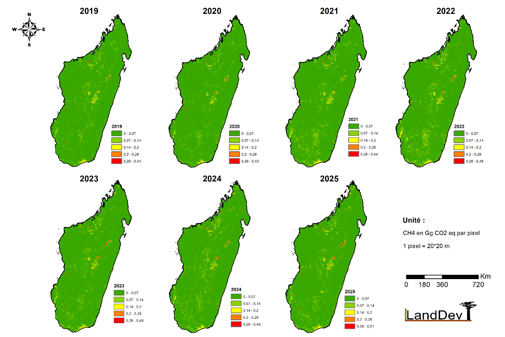
Annexe c : Évolution spatio-temporelle de la répartition du Black Carbon entre 2019 et 2025 en CO2 eq
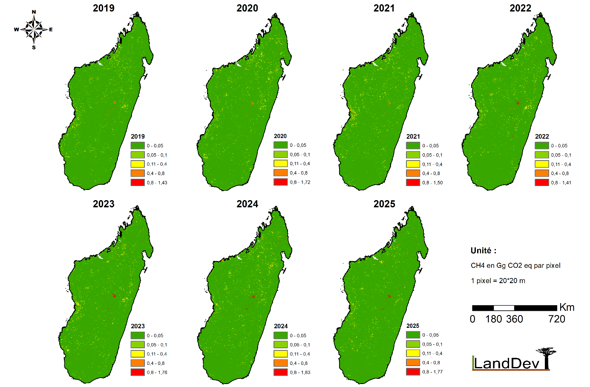
Annexe d : Projection des zones de séquestration de CO2 du secteur UTCATF en 2030
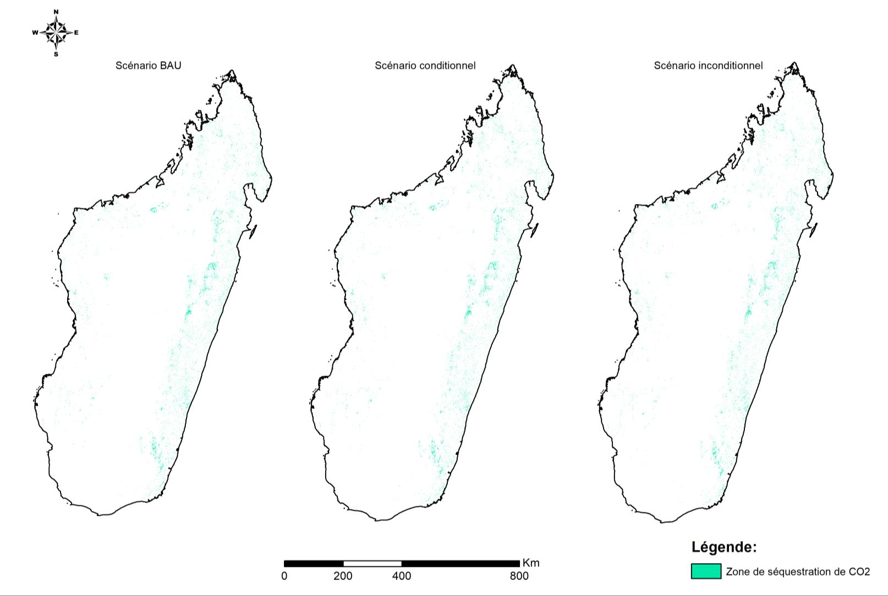
Annexee : Projection des zones de séquestration de CO2 du secteur UTCATF en 2035
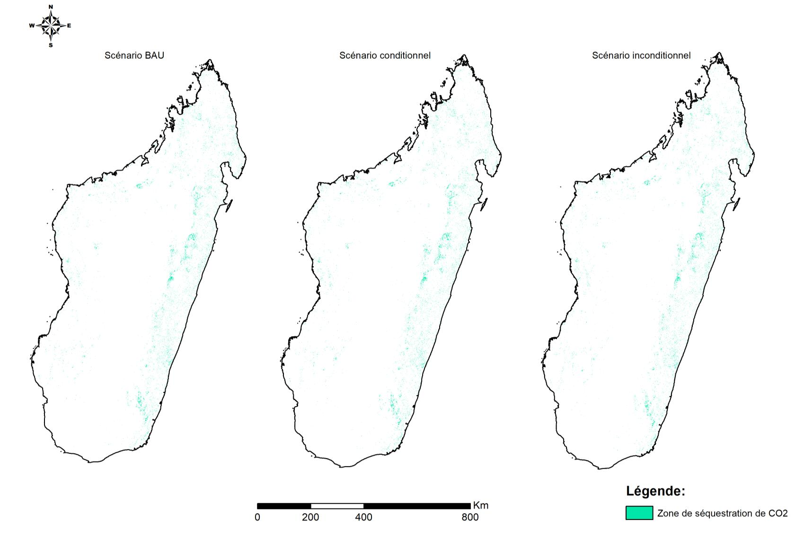
(Période 2025-2035) Statut : Liste indicative et non exhaustive Date : Août 2026
1. Contexte et principes
La présente annexe regroupe une liste indicative non exhaustive de projets conditionnels nécessaires à la mise en œuvre de la CDN 3.0.
Ces projets représentent la part conditionnelle du financement (13 612,7 millions USD sur un total de 13 862,2 millions USD), soit 98,2 % des besoins totaux.
Principes de constitution de la liste :
Alignement strict avec les cibles sectorielles d’atténuation, d’adaptation et GIS de la CDN 3.0 ;
Priorisation des interventions à fort impact, mesurables et bancables ;
Prise en compte des co-bénéfices (emploi, genre, jeunesse, biodiversité, santé) ;
Articulation avec les instruments innovants (Article 6, obligations vertes/bleues, PPP, marchés carbone, Fonds Vert pour le Climat, etc.) ;
Caractère indicatif et évolutif : la liste sera actualisée au fur et à mesure de la maturation des projets et de l’évolution des pipelines nationaux.
Les montants indiqués sont des estimations basées sur les enveloppes sectorielles de la CDN 3.0 et pourront être affinés lors de la préparation des notes conceptuelles et des études de faisabilité.
2. Synthèse des besoins financiers par composante
(chiffres absolus en millions USD)
|
Composante |
Total CDN 3.0 (M USD) |
Financement inconditionnel (M USD) |
Financement conditionnel (M USD) |
Part conditionnelle (%) |
|
Atténuation |
5 333,7 |
150,0 |
4 883,7 |
91,6 % |
|
Adaptation |
7 979,0 |
50,0 |
7 929,0 |
99,4 % |
|
Genre, Jeunesse et Inclusion Sociale (GIS) |
304,5 |
25,0 |
279,5 |
91,8 % |
|
Coordination, Gouvernance & Communication |
245,0 |
25,0 |
220,0 |
89,8 % |
|
TOTAL CDN 3.0 13 862,2 |
250,0 |
13 612,7 |
98,2 % |
Contribution Budget Vert (Loi de Finances 2026) : 2,5 M USD
Investissements du secteur privé et ONG nationales : 247,5 M USD
Répartition indicative des coûts conditionnels par nature (CAPEX / OPEX) :
Atténuation : ~97 % CAPEX / 3 % OPEX
Adaptation : ~80 % CAPEX / 20 % OPEX
GIS : ~13 % CAPEX / 87 % OPEX
Coordination : ~8 % CAPEX / 92 % OPEX
(Enveloppe conditionnelle : 4 883,7 M USD)
3.1 Secteur Énergie – Liste indicative et non exhaustive des projets conditionnels Enveloppe conditionnelle Atténuation : 4 883,7 M USD (dont part Énergie significative) Mise à jour suite retour MEDD : insertion des projets solaires du groupe Axian (retirés des inconditionnels pour vocation Article 6 – crédits carbone volontaires). Montant indicatif A2bis : 120 MW solaires additionnels + 60 MWh de stockage – estimation réaliste mais ambitieuse (coût ~2,5 M USD/MW cohérent avec l’enveloppe A2 existante).
|
N° |
Nom du projet |
Description / Explication |
Objectifs principaux (horizon 2035) |
Indicateurs clés de performance |
Coût estimé (M USD) |
Sources de financement potentielles |
|
|
A1 |
Déploiement de 254 MW d’hydroélectricité (grande et mini-hydro) |
Construction et réhabilitation de centrales hydroélectriques prioritaires pour décarboner le mix électrique et réduire la dépendance au diesel. |
+254 MW hydro ; réduction de 35 % des émissions énergie sous BAU |
MW installés ; tCO₂eq évitées/an ; taux d’accès électricité rural |
980 |
FVC, Banque mondiale, BAD, PPP, Article 6.2, Green Bonds |
|
|
A2 |
Parcs solaires photovoltaïques (167 MW) + stockage |
Déploiement de parcs solaires à grande échelle et mini-réseaux solaires avec batteries dans les zones non interconnectées. |
167 MW solaire ; 150 mini-réseaux |
MW installés ; tCO₂eq évitées ; ménages desservis |
420 |
FVC, FIER (PNUD-UNCDF-ONUDI), PPP, Article 6, Green Bonds |
|
|
A2bis |
Projets solaires Axian Energy (extension Ambatolampy + nouveaux parcs et hybrides) |
Extension de la centrale d’Ambatolampy (phase 3 et suivantes) et développement de nouveaux parcs solaires et hybrides portés par Axian Energy / NEA (y compris sites SAVA, Menabe et pipeline national). Ces projets sont conditionnels pour permettre la génération et la vente de crédits carbone volontaires sous Article 6. |
120 MW solaires additionnels + 60 MWh de stockage ; contribution significative à la décarbonation du mix électrique et à l’accès à l’électricité |
MW additionnels installés ; MWh de stockage ; tCO₂eq évitées/an ; crédits carbone générés ; ménages et entreprises desservis |
300 |
Vocation principale Article 6 (crédits carbone volontaires / ITMOs) ; marchés volontaires du carbone ; PPP ; Green Bonds ; éventuel complément FVC / financement privé |
|
|
A3 |
Éolien terrestre (8 MW pilote + extension) |
Projets pilotes puis montée en échelle de parcs éoliens dans les zones à fort potentiel (côte Est et Sud). |
8 MW + extension progressive |
MW installés ; facteur de charge ; tCO₂eq évitées |
45 |
FVC, IRENA, PPP, Article 6 |
|
|
A4 |
Programme national de cuisson propre (1,4 million de foyers améliorés + biogaz) |
Diffusion massive de foyers améliorés, cuiseurs solaires et biodigesteurs ruraux pour réduire le bois-énergie et les émissions de carbone noir et méthane. |
1,4 M foyers améliorés ; 40 % des ménages en cuisson propre |
Nombre de foyers distribués ; réduction BC et CH₄ ; emplois créés (femmes/jeunes) |
185 |
FVC, Climate and Clean Air Coalition, Article 6, microfinance, Budget Vert |
|
|
A5 |
Efficacité énergétique et conversion au gaz dans l’industrie |
Remplacement de moteurs, récupération de chaleur fatale et conversion progressive au gaz naturel / biogaz. |
Réduction de 63 % des émissions industrielles sous BAU |
tCO₂eq évitées ; intensité énergétique (kWh/t) |
95 |
FVC, BAD, Article 6, crédit-bail vert |
A2bis (Axian Energy) : montant indicatif de 300 M USD pour 120 MW solaires + 60 MWh de stockage. Ce niveau est ambitieux tout en restant réaliste au regard du pipeline Axian (extension Ambatolampy, nouveaux sites, hybrides) et de l’objectif 2030 du groupe.
Le financement est explicitement orienté Article 6 (crédits carbone volontaires / ITMOs) afin de permettre la monétisation des réductions d’émissions.
Les montants, capacités exactes et indicateurs seront affinés lors de la préparation des notes conceptuelles, études de faisabilité et structuration carbone.
Liste indicative et non exhaustive. Document produit dans le cadre de la finalisation de la CDN 3.0 de Madagascar.Contact : BNCCREDD+ – Ministère de l’Environnement et du Développement
Durable
3.2 Secteur Transport
|
N° |
Nom du projet |
Description / Explication |
Objectifs principaux (horizon 2035) |
Indicateurs clés de performance |
Coût estimé (M USD) |
Sources de financement potentielles |
|
A6 |
Électrification des flottes urbaines et interurbaines |
Acquisition et déploiement de 6 000 bus électriques, 10 000 voitures, 20 000 motos et tuk- tuk électriques + infrastructure de recharge. |
Réduction de 25 % des émissions transport sous BAU (1 058 kt CO₂eq) |
Nombre de véhicules électriques ; km parcourus en mode électrique ; tCO₂eq évitées |
1 650 |
FVC, BAD, PPP, Article 6, Green Bonds, financement concessionnel |
|
A7 |
Systèmes de Transport Rapide par Bus (BRT) – Antananarivo et villes secondaires |
Construction de corridors BRT prioritaires avec voies dédiées, stations et flotte électrique. |
3 corridors BRT opérationnels |
Passagers/jour ; réduction congestion ; tCO₂eq évitées |
480 |
Banque mondiale, FVC, PPP, Green Bonds |
|
A8 |
Lignes de rail électrique et mobilité douce |
Électrification progressive de segments ferroviaires et développement de pistes cyclables / piétonnes dans les |
150 km de rail électrique ; 200 km de pistes cyclables |
km électrifiés ; part modale mobilité douce |
320 |
BAD, FVC, Fonds climatiques bilatéraux |
|
capitales régionales. |
3.3 Secteur Déchets
|
N° |
Nom du projet |
Description / Explication |
Objectifs principaux (horizon 2035) |
Indicateurs clés de performance |
Coût estimé (M USD) |
Sources de financement potentielles |
|
A9 |
Transformation des déchets en puits de carbone |
Mise en place de filières de compostage, recyclage, méthanisation et valorisation énergétique (RDF) dans les principales agglomérations. |
Réduction de 10 900 kt CO₂eq par rapport au BAU |
Tonnes de déchets valorisés ; tCO₂eq évitées ; production de compost/biogaz |
110 |
FVC, FEM, Article 6, PPP, obligations vertes |
|
A10 |
Captage et valorisation du gaz de décharge |
Installation de systèmes de captage de méthane sur les principales décharges contrôlées. |
Captage de méthane significatif |
Gg CH₄ capté ; MWh produits |
25 |
Article 6, Climate and Clean Air Coalition, FVC |
3.4 Secteur Agriculture & AFAT (Forêts)
|
N° |
Nom du projet |
Description / Explication |
Objectifs principaux (horizon 2035) |
Indicateurs clés de performance |
Coût estimé (M USD) |
Sources de financement potentielles |
|
A11 |
Riziculture bas-méthane à grande échelle (SRA, SDA, SRI) |
Diffusion des techniques d’irrigation intermittente et de Système de Riziculture Intensive sur les grands bassins rizicoles. |
Réduction de 951 kt CO₂eq (secteur agriculture) |
ha en SRI/AWD ; tCH₄ évitées ; rendement (t/ha) |
95 |
Global Methane Hub (GMH), FVC, FIDA, FAO, Article 6, GIZ |
|
A12 |
Gestion améliorée des fumiers et fermentation entérique |
Déploiement de biodigesteurs, compostage aérobie et amélioration de l’alimentation animale. |
Réduction significative des émissions de CH₄ élevage |
Nombre de biodigesteurs ; tCH₄ évitées |
45 |
FVC, Climate and Clean Air Coalition, GMH, Article 6 |
|
A13 |
Restauration des paysages forestiers et agroforesterie (AFR100) |
Reboisement, régénération naturelle assistée et agroforesterie sur 1,6 million ha d’écosystèmes terrestres + 16 000 ha de mangroves. |
Séquestration additionnelle de 1 907 kt CO₂eq |
ha restaurés ; tCO₂eq séquestrées ; % femmes/jeunes bénéficiaires |
380 |
FVC, FCPF, Article 6 (REDD+), Blue Carbon, AFR100 |
|
A14 |
Carbone bleu – Protection et valorisation des herbiers marins |
Protection stricte de 7 907 ha d’herbiers marins (sites Aro Fano et extension) et développement de projets de crédits carbone bleu. |
7 907 ha protégés ; 47–63 kt CO₂eq/an |
ha sous protection effective ; crédits carbone émis |
35 |
Article 6, marchés volontaires, Blue Bonds, FVC |
4. Liste indicative des projets conditionnels – Adaptation
(Enveloppe conditionnelle : 7 929,0 M USD)
4.1 Santé, Eau, Assainissement & Hygiène (WASH)
|
N° |
Nom du projet |
Description / Explication |
Objectifs principaux (horizon 2035) |
Indicateurs clés de performance |
Coût estimé (M USD) |
Sources de financement potentielles |
|
B1 |
Formations sanitaires climato- résilientes |
Réhabilitation et construction de 1 000 formations sanitaires selon normes paracycloniques et climato-résilientes + plateforme d’alerte santé-climat. |
1 000 structures résilientes ; continuité des services post- catastrophe |
Nombre de structures réhabilitées ; jours de service maintenus |
140 |
FVC, OMS, Banque mondiale, Fonds d’Adaptation |
|
B2 |
Accès universel à l’eau potable et assainissement résilient |
Installation de 25 000 points d’eau potable et assainissement amélioré pour 1,5 million de ménages (priorité Grand Sud et zones cycloniques). |
25 000 points d’eau ; 1,5 M ménages |
% population avec accès de base ; réduction maladies hydriques |
520 |
FVC, UNICEF, Banque mondiale, Fonds d’Adaptation |
|
B3 |
Gestion Intégrée des Ressources en Eau (GIRE) |
Mise en place de 7 comités de bassin opérationnels, 40 stations hydrométriques, révision du Code de l’eau et 50 ouvrages |
7 comités de bassin ; 40 stations ; 50 ouvrages |
Stations opérationnelles ; volumes régulés ; conflits d’usage réduits |
850 |
FVC, Banque mondiale, FRD/FMI, Fonds d’Adaptation |
|
de stockage/régulation. |
4.2 Agriculture & Sécurité alimentaire
|
N° |
Nom du projet |
Description / Explication |
Objectifs principaux (horizon 2035) |
Indicateurs clés de performance |
Coût estimé (M USD) |
Sources de financement potentielles |
|
B4 |
Agriculture climato- intelligente et résiliente |
500 000 ha en pratiques durables (agroécologie, conservation) + 700 000 ha avec variétés adaptées + 3 000 km de pistes rurales. |
500 000 ha durables ; 700 000 ha variétés adaptées |
ha sous pratiques résilientes ; rendement moyen ; % femmes bénéficiaires |
980 |
FVC, FIDA, FAO, Banque mondiale, Article 6 |
|
B5 |
Assurance climatique et filets de sécurité pour 200 000 exploitants |
Extension de l’assurance climatique indexée et mécanismes de protection des revenus agricoles. |
200 000 exploitants assurés |
Nombre d’assurés ; taux de sinistre indemnisé ; réduction pertes |
185 |
African Risk Capacity, Global Shield, FVC, secteur privé |
|
B6 |
Réhabilitation de 300 000 ha de périmètres irrigués |
Réhabilitation et modernisation des périmètres irrigués (drainage, canaux, pompage solaire). |
300 000 ha réhabilités |
ha fonctionnels ; efficacité hydrique ; production additionnelle |
320 |
Banque mondiale, FIDA, FVC, PPP |
|
B7 |
Écoles climato- résilientes et plans de continuité scolaire |
Construction/réhabi litation de 1 500 écoles selon normes résilientes + plans de continuité dans 100 % des CISCO + soutien à 100 000 filles/an. |
1 500 écoles résilientes ; réduction de 80 % du décrochage post- catastrophe |
Écoles réhabilitées ; jours de classe sauvés ; taux de maintien des filles |
420 |
GPE, UNICEF, FVC, Fonds d’Adaptation |
|
B8 |
Filets sociaux adaptatifs et registre social sensible au climat |
Extension des filets sociaux adaptatifs à 120 000 ménages + réserves alimentaires dans 600 communes. |
120 000 ménages couverts |
Ménages bénéficiaires ; délais de déclenchement ; % femmes cheffes de ménage |
280 |
Banque mondiale, PAM, UNICEF, FVC |
4.4 Infrastructures, Aménagement & Risques
|
N° |
Nom du projet |
Description / Explication |
Objectifs principaux (horizon 2035) |
Indicateurs clés de performance |
Coût estimé (M USD) |
Sources de financement potentielles |
|
B9 |
Infrastructures climato-résilientes et drainage urbain |
Normes obligatoires pour tout nouvel investissement public + drainage urbain Antananarivo et villes pilotes + résilience routière et hydroélectrique. |
100 % nouveaux investissements conformes ; 1 500 km drainage |
km de drainage ; réduction inondations urbaines ; normes adoptées |
1 250 |
Banque mondiale, BAD, FVC, Green Bonds |
|
B10 |
Système national d’alerte précoce multi-risques et financement des risques |
Stratégie nationale de financement des risques, Fonds de contingence à 20 milliards MGA, assurance pour 250 000 bénéficiaires, registre national pertes & préjudices. |
Couverture 85 % populations vulnérables ; 250 000 assurés |
Population couverte par SAP ; délais d’alerte ; dossiers Fonds P&P soumis |
320 |
African Risk Capacity, CERC, Global Shield, FVC, FRD/FMI |
4.5 Forêts, Biodiversité & Zones côtières
|
N° |
Nom du projet |
Description / Explication |
Objectifs principaux (horizon 2035) |
Indicateurs clés de performance |
Coût estimé (M USD) |
Sources de financement potentielles |
|
B11 |
Restauration des écosystèmes et renforcement des aires protégées |
Restauration de 1,6 M ha d’écosystèmes terrestres + 16 000 ha de mangroves + renforcement de 428 134 ha d’aires protégées. |
1,6 M ha restaurés ; 16 000 ha mangroves |
ha restaurés ; biodiversité (indices) ; carbone séquestré |
420 |
FVC, FEM, Article 6, Blue Carbon, AFR100 |
|
B12 |
Gestion intégrée du littoral et protection portuaire |
Plans de gestion intégrée du littoral, protection du port de Toamasina, restauration des défenses naturelles (mangroves, dunes, récifs). |
Plans opérationnels sur 5 sites prioritaires ; port de Toamasina protégé |
km de côte protégés ; réduction érosion ; continuité portuaire |
280 |
FVC, Banque mondiale (WACA), Blue Bonds, Fonds d’Adaptation |
5. Liste indicative des projets conditionnels – Genre, Jeunesse et Inclusion Sociale (GIS)
(Enveloppe conditionnelle : 279,5 M USD)
|
N° |
Nom du projet |
Description / Explication |
Objectifs principaux (horizon 2035) |
Indicateurs clés de performance |
Coût estimé (M USD) |
Sources de financement potentielles |
|
C1 |
Sécurisation foncière des femmes et accès aux financements climatiques |
Programme de délivrance de certificats fonciers prioritaires aux femmes + accès facilité aux mécanismes d’assurance et de crédit climatique. |
40 % de femmes titulaires de certificat ; ≥50 % de bénéficiaires femmes dans les mécanismes financiers |
% femmes titulaires ; volume de crédit/assurance accessible |
65 |
FVC, FIDA, ONU Femmes, Banque mondiale |
|
C2 |
Incubateurs et formations entrepreneuriales vertes pour femmes et jeunes |
35 000 femmes et jeunes accompagnés via incubateurs, formations aux métiers verts/bleus et accès au financement. |
35 000 bénéficiaires ; 40 000 jeunes/femmes entrepreneurs soutenus |
Nombre d’entreprises créées ; emplois verts générés ; taux de survie à 3 ans |
55 |
FVC, PNUD, UNICEF, secteur privé, Green Bonds |
|
C3 |
Éducation climatique, bourses et maintien scolaire des filles |
Bourses et cantines pour 200 000 filles + curricula climat dans 100 % des écoles + orientation de 100 filières vers métiers verts. |
200 000 filles soutenues ; 100 % écoles avec curricula |
Taux de maintien scolaire des filles ; nombre de filières orientées |
45 |
GPE, UNICEF, FVC |
|
C4 |
WASH sensible au genre et hygiène menstruelle |
Comités WASH paritaires (≥40 % femmes) + 90 % des écoles équipées en dispositifs de gestion de l’hygiène menstruelle + infrastructures accessibles PSH. |
90 % écoles équipées ; comités paritaires |
% écoles équipées ; % femmes dans comités ; accessibilité PSH |
35 |
UNICEF, FVC, Fonds d’Adaptation |
|
C5 |
Leadership et participation des jeunes et femmes à la gouvernance climatique |
Renforcement de la participation formelle des jeunes et femmes dans les instances locales et nationales de gouvernance climatique. |
40 % de femmes et jeunes dans les structures de gouvernance des AP et comités locaux |
% de représentation ; nombre de décisions influencées |
25 |
PNUD, UNICEF, FVC |
(Enveloppe conditionnelle : 220,0 M USD)
|
N° |
Nom du projet |
Description / Explication |
Objectifs principaux (horizon 2035) |
Indicateurs clés de performance |
Coût estimé (M USD) |
Sources de financement potentielles |
|
D1 |
Système national MRV intégré et transparence (BTR) |
Renforcement du système MRV (GACMO, inventaires sectoriels, indicateurs désagrégés sexe/âge/handicap) et production des BTR. |
Système MRV opérationnel ; BTR conformes Art. 13 |
Rapports BTR soumis à temps ; couverture des indicateurs désagrégés |
85 |
CBIT, FVC, PNUD, UNEP |
|
D2 |
Plateforme Pays pour la Finance Climat et pipeline de projets bancables |
Opérationnalisation de la Country Platform, structuration du pipeline et accompagnement à l’origination de projets. |
Pipeline de 50+ projets matures ; mobilisation accélérée |
Volume de financement mobilisé ; nombre de projets soumis |
55 |
Banque mondiale, GCA, FVC, FRD/FMI |
|
D3 |
Renforcement des capacités institutionnelles et territoriales |
Formation des points focaux sectoriels, des collectivités et des acteurs locaux à la planification et au suivi climatique. |
Capacités renforcées dans 23 régions |
Nombre de personnes formées ; plans locaux intégrant le climat |
45 |
CBIT, PNUD, FVC |
|
D4 |
Communication, appropriation et plaidoyer |
Campagnes de sensibilisation, supports de communication et plaidoyer national/internation al sur la CDN 3.0. |
Large appropriation nationale et visibilité internationale |
Portée des campagnes ; niveau de connaissance de la CDN |
35 |
PNUD, FVC, partenaires bilatéraux |
7. Instruments de financement transversaux prioritaires
|
Instrument |
Description |
Secteurs prioritaires |
Potentiel de mobilisation estimé (M USD) |
|
Article 6 (ITMOs) |
Accords bilatéraux et mécanisme 6.4 pour monétiser les réductions d’émissions |
Forêts/AFAT, Énergie, Agriculture, Déchets, Blue Carbon |
150–300 |
|
Obligations souveraines thématiques (Green & Blue Bonds) |
Émission de 500 M USD Green Bonds + 200 M USD Blue Bonds |
Énergie, Transport, Forêts, Zones côtières |
700 |
|
Fonds Climatiques Multilateraux (FVC, FA, etc) |
Projets et programmes multi- secteurs |
Tous secteurs |
1 200–1 800 |
|
Partenariats Public-Privé (PPP) |
Structuration de PPP pour les infrastructures capitalistiques |
Énergie, Transport, Déchets, Irrigation |
800–1 200 |
|
African Risk Capacity / Global Shield / CERC |
Couverture souveraine et assurance climatique |
Risques & catastrophes, Agriculture 150–250 |
|
|
Marchés volontaires du carbone (Blue Carbon, foyers améliorés, etc.) |
Crédits carbone volontaires |
Forêts, Blue Carbon, Cuisson propre, Eau |
50–100 |
2. Critères de priorisation : maturité du projet, alignement CDN, co-bénéfices GIS, bancabilité, additionnalité.
3. Pipeline structuré : Les projets seront classés en trois vagues (pilotes 2025-2027, montée en échelle 2028-2031, déploiement massif 2032-2035).
4. Suivi : Intégration dans le système MRV national et rapportage dans les BTR successifs.
5. Point focal : BNCCREDD+ / MEDD
Avertissement La présente liste est indicative et non exhaustive. Elle ne constitue pas un engagement ferme de financement. Les montants, objectifs et indicateurs seront affinés lors de la préparation des notes conceptuelles, études de faisabilité et négociations avec les partenaires techniques et financiers.
Document produit dans le cadre de la finalisation de la CDN 3.0 de Madagascar Contact : BNCCREDD+ – Ministère de l’Environnement et du Développement Durable Date de production : Août 2026 – Version 1.1